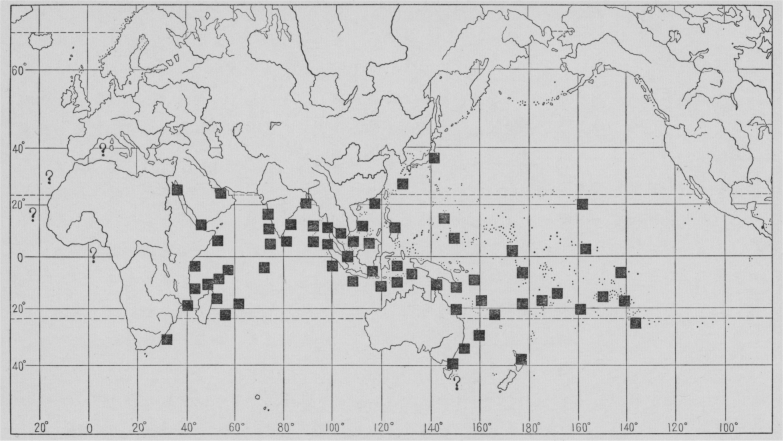
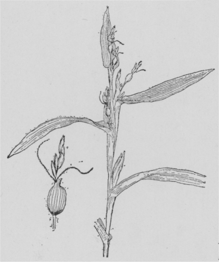
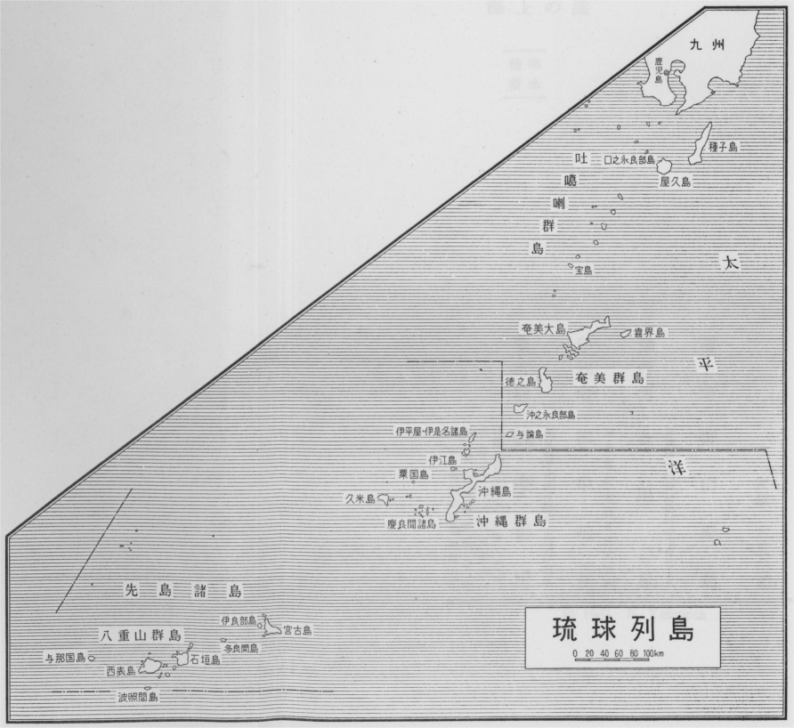
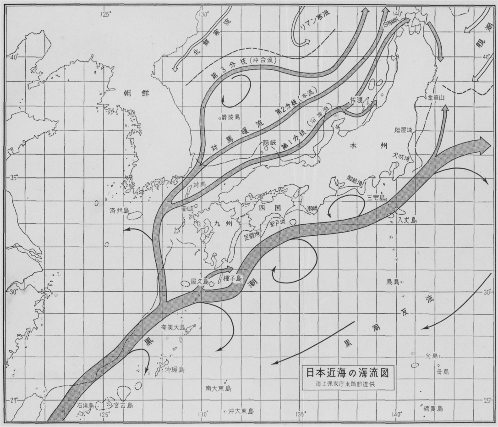

私は三十年ほど前に、日本人は
如何にして渡って来たかという題目について所感を発表したことがあるが、それからこの
方、船と航海の問題が常に念頭から離れなかった。その中の一つで是非ともここに述べておきたいのは、日本と沖縄とを連ねる交通路のことである。今では沖縄へ行くのには
概ね西海岸の航路を取っているが、古くは東海岸を主としていたのではないかということを説いてみたいのである。
日本の南北の交通は、
後に使わなくなった東海岸を余計に使っていたのではないか。古い航海には東海岸の方が便利であった。
遠浅の砂浜が多く、短距離を航海しながら船を陸に上げて宿をとり、話がつけば
暫らくの間、あがった
処に滞在することもできた。むかしは一年に一回航海すればよかったので、年内に再びやってこようなどということは考えなかったのである。
日本では
首里と
那覇を中心点と見ることに決めてしまったので、東海岸の文化や言葉は後になって変化したのだと考えている。けれども私は最初からの違いが証明できると思う。北からずっと一遍に南の方まで航行して、
信覚と書いた
石垣まで行ったのである。信覚にあたる地名は
八重山にしかないのだから、
彼処と早くから往来していたと見なければならない。
それがやや
突飛な考えであるためか、人が信じないけれども、砂浜をねらって、風が強く吹けば、そこに幾日でも
碇泊するというようにして行けば行けるのである。沖縄本島より
宮古島、宮古島から
多良間島を通って八重山群島の方へ行ったと考えても、少しも
差支えない。
私が東海岸と言い出したのは、別に明白な
証拠とてないが、
沖永良部島や、
与論島の沿海なども、東西二つの道があったことを島の人は記憶している。だんだん西の方の海岸を使用するようになり、同じ
国頭へ行くのでも、西側を通って船が行くようになったのは後世のことである。
日本人が主たる交通者であった時代、那覇の港が開けるまでの間は、東海岸地帯は日本と共通するものが多かったと想像できる。言葉なども多分現在よりも日本に近かったのだろうと思う。首里・那覇地方は一時盛んに外国人を受け入れて、十カ国ぐらいの人間がいたというから、東側とは大分事情が違うのであった。
本島の
知念・
玉城から南下して那覇の港へ回航するのは非常に時間がかかる。その労苦を思えば宮古島の北岸へ行くのは容易であった。那覇を開いたのは
久米島の方を通ってくる北の航路が開始されてからであるが、それは
隋時代の事とされている。この北の道はかなり骨の折れる航路で、
船足も早くなければならず、途中で船を修繕する所が必要であった。
余程しっかりした自信、力のある
乗手であるうえに、風と
潮とをよく知っている者でなくてはならなかった。
沖縄本島は飛行機から見ればもちろんだけれども、そうでなくても丘の上にあがると東西両面の海が見える処がある。
其処を船をかついで東側から西側へ越えれば容易に交通ができると考えるかもしれないが、しかし人の系統が違うとそう簡単には行かない。
私が一番最初それを感じたのは、ＮＨＫの矢成君たちが国頭の
安田、
安波の会話を録音してきたのを聞いたときである。最初は日本本土の人が移住して来たのではないかと思ったほど、こちらの言葉とよく似ていた。しかし
直ぐにそれが間違いであり、もともと内地の言葉とそう変っていなかったのだということに勘づいた。東海岸と西海岸とはいくらも
距っていないけれども、文化発達の経路が違うために言葉や住民の構成などが異なっているのである。
勝連文化と私は
仮に呼んでいるのだが、その勝連文化と首里・那覇を中心とした文化、すなわち
浦添文化とでも言うべきものとの間には、系統上の相異があったのではなかろうか。
今日では勝連の文化というものが少しも残されていない。
馬琴の『
弓張月』にまで書かれている
勝連按司の
阿麻和利は、沖縄の歴史の上で、すっかり悪者にされてしまっているが、これは
伊波普猷君などが早くから注意したように、勝敗
処をかえれば忠臣とも逆臣ともなった戦国の世の習いであった。『おもろ
草紙』を見てもわかるように、勝連が当時の文化の中心であったことは
大和の鎌倉のごとしと歌われていた通りであった。
往時わが国では如何なる船を使って南北の間を航海したのであろうか。専門の造船業者のなかった時代を考えると、船材の得られる場所をみつけて、そこで船を造って用いたに違いない。たとえば
安芸の国、それに
周防など、今でも船材を多く出しているし、中世においては建築木材を出しており、奈良の大きな寺院の建立などには常に用材を供給していた。
日本人の渡来を問題にするとき、東海岸の航路を取り上げざるを得ない。どの辺にはじめて上陸したかについては、いろいろな説が成り立ち得るが、
日向の
高千穂に天から
降りたということを承認すれば問題にならぬけれども、それがあり得べからざることとすれば、やはり日向などで船を仕立てて北上したことが想像される。神武天皇の御東征にしても、潮の激しく、風の強い関門海峡を通らずに、じかに東海岸からずっと瀬戸内海に入ってしまわれたのだから、東西二つの交通路を並べていうと、東の方が一時代古いということは言えそうである。しかしこれはむつかしい問題で、我々一代の間に解決できるものとは思っていない。
このいくつかの文章の大部分は、この問題を常に念頭に置いて書いた。まだ断定を下すには自分の予備知識が不足しているので
躊躇したけれども、この考えの適用できると信じた場合はいつもそれを条件の一つとしてかぞえてきた。
日本人の人種起源論は、土地土地に残っている昔の
痕跡を、考えのうちに入れて見て行かねばならない。今度集めた論文の中には空想を遥かに遠く、青森県の北端まで持っていったものもある。今までの日本人論をみると、太平洋の交通を考慮に入れることが少し不十分であった。つまり伊勢とか、もう少し東に寄って
駿河とか
遠江とかいうくらいまでのところが、区切りになっているような気がして、あのへんの歴史が等閑に附されているようである。房州の半島でも、それから伊豆の半島でも、みんな長い間かかって回って来たのではないかと考えている。
私は一生かかっても、とうとうその結論を出すことができなかったけれども、どこで日本人は成長してきたかということを、もう一段と具体的に決めなければならない。おそらくは九州の南部でということは真実であるかもしれないが、そこまで来る道筋がよくわからない。たとえそれがわかっても、それからこっちがまたわからない。
土佐が第一、ひろい面積にわたって陥没している。土佐という国は、以前は今とは
随分違っていたらしい。瀬戸内海を利用する時代はおくれて始まった。瀬戸内海を使って初めて、関門の潮流の激しい水道を出たり入ったりするようになったのである。『
六国史』などを注意して読んでみると関門を通りぬける技術というものが発達したあとがわかるような気がする。はじめはなかなか簡単に行けなかったのを、船の形を大きくするとか、強くするとか、技術が進むにつれて、だんだんこの関門が通れるようになった。
しかし船についても、理解できないことがらが多々ある。第一、和船の細い
櫓など、どういうわけであのようなものができたであろうか。私は
利根川のへりに成長したから、あの細い櫓はよく知っているが、あれは日本の特徴と思う。櫓は砂浜のあるところの海岸という条件が手伝っているのではなかろうか。沖縄と本土を結ぶ西海岸には、帆を使うところは非常にたくさんあるし、
棹を使うところもあるかもしれないけれども、櫓の交通を発達させるような条件を
具えた土地は少ないようである。
日本では政府が直接航海に手をつけなかった時代がながい。おそらく遣唐使を
止めたくらいの時代が、航海事業の衰微の極であったろう。それからこの方の記録だけによって海上の交通史を説くのは間違いのもとであろう。
昭和三十六年六月
柳田国男
［＃改丁］
今度の九学会連合の年会において私は大要次のような話をした。この新らしい協同体に参加してから、我々の積み重ねて行く愉快な体験は無数であるが、そういう中でも日本の民俗学会として、殊に喜ばねばならぬものが三つある。その一つは九つの団体がそれぞれの軌道を回転して、もとより同じ円周の一部を分担するものでないために、或る時は遠く懸け離れ、また或る時はすぐ眼の前に接近して来て、
交叉しまた衝突しそうな場合さえ折々はある。今までは無意識にそれを避けようとし、わざと問題の間地を残しておこうとするような心づかいもあったが、今度はちがった角度からの批判を
危ぶまないのみならず、次第に隣の学問の能力を理解し、折々はその
長処を借りて、こちらの弱点を反省してみることができるようになった。国の一隅において成長した民俗学のごとき学問においては、
是は決して小さくない恩恵であった。
第二にうれしいことは、このそれぞれに異なる態度方法、それぞれの閲歴を持ち寄った九つの学会が、今や
我邦の空前の事相に当面して、何らの話し合いを経ることもなく、自然に一致して日本の民族の生存を、協同研究の対象としていることである。他日我々の能力が
充ち溢れるならば、無論次々に研究の領域を、海から外へ拡張して行くことであろうが、少なくとも是までのように、よその国の学問の現状を熟知し、それを同胞の間に伝えることをもって、学者の本務の極限とするような、あわれな俗解は是で終止符を打たれるであろう。幸いにこの予言が当るならば、今日の会合も永く回顧に値すると思う。
第三に是ほど多くの学会が力を合わせ、心を一つにして日本を研究せられること、すでに年久しいにもかかわらず、まだ
何処やらに未開の野、ちっとも答えられない問題が有りそうなこと、是がまた感謝すべき好刺戟であると思う。年を取りすぎた自分のような者にとってこそ、是は心残りの、また
相すまぬことでもあるが、本日会合の諸君の大多数のためには、是くらい
張合いのある現実はちょっと類が無いであろう。めいめいの行く先に広々とした未知の世界が有ることを知って、それでは
止めようという人などは、この中には
一人もおられまいと思うが、あわれや私などの物を学ぶ頃には、もう一通りの真理はすでに古人が明らかにしてくれているように思って、そこまでたどりつくことを
先途とするような者ばかりが多かったのである。
幸いにしてこの半世紀以来、問題とか疑問とかいう言葉が、文化諸学の間にも流行して来たが、それも多くは今これから答えようとする者の用語であって、我々の切望しているような、確実なる無知無学の相続には帰着しなかったのみか、一方には根本理念などと称して、是だけはまず論争批判の外に置いて、その残りで仕事をしようとするがごとき学風が、何か新らしいもののような顔をして、こちらへも手を伸ばしかかっている。そういう証明を要しない原理、固定不動の前提が多かったばかりに、我々は苦しみ、また学問は遅々として進まなかったのである。
僅かな言葉の響きや方式の新らしさに
絆されて、今頃ふたたび以前と同様な拘束の世界に戻って行こうとする者はよもやもう有るまい。
今まで久しい間気がつかず、従ってまた何らの解答も得られずにあった問題は無数であろうが、そういう中でも四面海をもって囲まれて、隣と引離された生存をつづけていた島国としては、この海上生活に対する無知はむしろ異常である。いよいよそのような気楽なことを、言ってはおられない時代が到来して、自然科学の方面ではまず一段の活気が感じられ、その研究の成果には、或る程度の期待が
繋げられるようになったが、是と
雁行しまた互いに利用し得べき文化史の方面では、まだ疑問の形すらも
具わっていない。たとえば日本人は、最初どの方面からどこへ渡って来たか。何百という数の大小遠近の島々のうち、どれへ始めて上陸し、次々にどの方角へ移り拡がって行ったものか、それは全然わからぬ。わかるはずがないというだけの答すらも、どうやらまだ出来あがってはいないのである。しかもこの問題が何とでもきまってからでないと、説くことのできない幾つかの推論が、すでに日本ではほぼ承認せられかかっている。それをあぶながり、または
難癖をつけるような、老成人風の批判ならば、まだ幾らでも出てくることと思うが、私だけは国の学問の前途のために、そういう消極主義に
与みしたくない。むしろその反対に、次々と新らしい仮定説を提出させて、比較対照によって互いの弱点に心づかしめ、且つは素朴に過ぎたる追随を
戒める必要があると思って、今日はその一つの見本のような話をする。
二十年も前に、私は一時熱心に風の名の集録を心がけたことがある。農民も決して風に無関心ではないが、その呼称の多くは海の生活からの感化を受けている。海ではそれぞれの風の性質が、風の名となっているのだが、内陸では
専ら方角を問題にするが故に、それを地方的に意味を限定して使い、従って
到る
処少しずつ内容の差が生じている。たとえばヤマセは山の方から吹いてくる風である。それ故に
江差松前では今もって東北風がヤマゼであり、瀬戸内海の北岸では、四国の方からくる南風をそういう処もある。『万葉集』の末二巻の中には、アユノカゼに東風の二字を
宛てたものが有名であるので、多くの国語辞典にはこの語を東風と註し、それを他の方角の風とするものを方言と
見下すらしいが、この漢字の使用こそは、
越中文人の居住地が、ちょうど西隅に偏していたことを意味するもので、現に今日でも富山県の海岸では、方角によって
能登アイと、宮崎アイとの二つのアイの風がある。宮崎はすなわち東端
越後境の
海角であって、是から吹きつける風のみが
大伴家持らの
袂を
翻えし、能登から吹くアイは山に
遮られて、この
辺りでは心づかれなかったので、まだこの頃までは漢字の利用が、その場かぎりの思いつきだったことが是でよく
判る。
アユは後世のアイノカゼも同様に、海岸に向かってまともに吹いてくる風、すなわち数々の渡海の船を安らかに港入りさせ、またはくさぐさの珍らかなる物を、
渚に向かって吹き寄せる風のことであった。今日は
半ば死語に属し、
辛うじて
字引と地方語の中に存留するのみであるが、果実のよく熟して
樹から
堕ちるのをアエルといい、またはアユ・アユル・アエモノ等の語の古くからあるように、人を
悦ばせ、おのずから人の望みに応ずるというような楽しい状態を表示するために、
夙く生まれていた単語ではなかったろうか。
饗宴もしくは食物の供与を、アヘと
謂っていたのも別の語ではないのかもしれぬ。子音の変化または脱落は、永い歳月の間には、有っても不思議はなく、ましてや
汀線の角度のちがい、風が内陸へ入って行く
路筋によって、それぞれに異なる語原があったかのごとく、考えてみる必要などはないのである。
日本海の側では、東は
津軽の岬端から、西は島根県の一部にまで、同じ風の名が今もほぼ一続きに行われ、言葉がきれいなために時々は歌謡の中に入って、海からやや入り込んだ土地にまで伝わりまた記憶せられている。たとえば越前の
武生などには、今でも汽車が通るたびに、必ず
憶い出す中世の遊女の歌がある。
みちの口、
武生のこふ（国府）に我ありと、
親には申したべ心あひの風、
さきんだちや
かつてこの都会が東西交通の
衝であった時代に、遠くこの風の
風下の方から、さすらえて来たと称する女たちが、しばしばこういう歌を唱えて旅人の哀れみを誘おうとしたので、是と同巧異曲の
［＃「同巧異曲の」はママ］「泣いて暮すというておくれ」という類の文句は、近くは明治の始めまでなお続いていた。
「心あひの風」はいわゆる
掛け言葉で、風を孤独の身の友と呼びかけたのであろうが、もうあの頃から発音は今と同じであった。是を海上生活の最も大切な問題として、遊女は歌にうたい、船人は淋しい日にそれを憶い起したので、遠い万葉の昔から、この一語の
流伝は絶えなかったのである。近代の港の中にも、幾つかそういうものが残り伝わっている。
アイのこは吹きやヤマセのもとだ、
ヤマセや別れの種となる
思う船が入ってしまえば、アイの風はもう問題でない。それよりもその風が強く吹きつづけると、やがて転じて別れの風になるのが気づかいなというので、是は多分
蝦夷地での流行唄であろう。北陸方面では、ダシというのがヤマセに近い風であった。谷の奥から吹き出すという意味であったろうが、後には風待ちの船を出してしまうからダシだと、思うようになっていた。
アイが吹かぬか荷が無うて来ぬか
たゞしやにがたの河止めか
是などは新潟の次の
湊、
酒田とか
新湊とか、
能登の
小木・
宇出津とかの歌であろう。入船に
都合の
好い風をアイの風というようになって、幾らかは最初の意味がかわったかもしれぬが、とにかく海辺に住む者にとって、心のときめく風であったことは同じで、ただその強吹きの結果だけが、常に少しばかり気づかわしかったのかと思う。
ところが日本海の船運が進展して、海峡から東の大洋へ出て行くようになると、風の名の用法がやや変化してきた。全国の呼び方を集めてみると、
宮古・
八戸あたりの僅かな太平洋側の沿海だけに、陸から海に向けて吹く風を、アイと
謂っている地帯があるように思う。是などは明らかに水上生活者の運搬であり、浜に住む者の古くから使っていた言葉ではないのであった。同じ一つのアユまたはアイという風の名でも、永い歳月に
亙った経済事情の変化によって、眼に見えぬ重点の推移があった。海が島国の文化に貢献した一つの古い力は、形あるものの側では、今私などの
寄物と名づけている継続した自然現象が、全く忘却せられてしまわぬまでも、少なくとも次第に軽く
視られがちになってきたことは
已むを得ない。現代の社会研究としては、それも当然のことと言ってよいであろうが、いわゆる史前学の範囲においては、是は
寔に忍び難い不利である。かつて文献記録の到り及ばざる世において、是ほど痛切にこの方面の経験を、積み重ねている民族は
尠なく、それを今の世まで持ち伝えてきたのも、日本人のように久しい者は
稀であろうから、こういう知識だけは、恐らくは外国学者の足跡に、ついて行くことができまいと思う。
津とか問屋とかの制度の完備するまでは、時を定めずに入ってくる船なども、一種の寄物であった。今でも
尻屋あたりの荒浜をあるいてみると、大小さまざまの難破船の破片が、
昆布やあらめとともに、到る処の
水際に積み上げられて、次々と村へ運びこまれている。暗夜に火を焚いて海を行く船を迷わしめたというなどは、遠い昔の物語に過ぎぬだろうが、とにかく海から寄り来るものはその種類を問わず、本来はすべて
浦人の所得だったのが、
後に少しずつ法令をもってこれを制限したのである。
寄鯨の取締りなどは、そういう中でも殊に新らしく、それよりも
遥か以前から、都会における鯨肉の消費は始まって、是がまず捕獲の技術を発達せしめている。漁が一つの生業として成立した順序は、日本のような国ならば、簡単に社会科でも教えることができる。最初は魚の方から群をなして押寄せてきて、ほしいと思う者には誰にでも取られてくれた。国の
端々には今でもそういう場所がまだ少しは残っている。それを僅かな人の手で、及ぶ限り多くすくい
揚げ、
上手に分配しようとしたのが漁業の始まりだが、農とちがってその歴史はごく新らしく、結局は魚を遠くの沖の方へ追い払い、是からの海辺の生活を、際限もなく変化させようとしているのである。
南の海上のザンの
魚（
儒艮）の物語と対立して、東日本の
荒磯にはアシカ・アザラシ・ミチの
寝流れなどの話がもとは多かった。文字の教育が都府とその周辺に偏在した結果、是らはすべて永遠に、記録の外に
佚散しようとしている。これを保留し且つ前代の考察に取り入れてゆく労苦は、今も若干の痕跡を伝えている網や
釣縄の比ではない。そのために人はしばしば現代の空気の中に、遠い
寂寞の世を推理しようとするのである。
寄木・流木の言い伝えなどは、これに
比べると
遭遇がやや多く、また若干の文献にも恵まれているが、なお我々は国内の山野が、かつて巨大の樹木をもって
蔽われ、それが次々と自然の力によって、流れて海に出ていた時代を、想像してみることができなくなっている。以前は水上から供給するものが、今よりも遥かに豊かだったと思われる。多くの沖の小島では、各自昔からの神山を
抱えながら、それには慎しんで
斧鉞を入れず、家を建てるにも
竈の火を燃すにも、専ら大小の寄木を当てにしていた時代が久しく続いた。是にも年々の季節兆候があり、占有の方式があり、また信仰祈願があったことは、田野の生産とほぼ一様であって、ただ幾分か幸運の差等が大きかった。唐木と呼ばるる珍奇なる南方の木材が寄ってきた場合には、これを家々の私用に供せず、必ず官府に届けよという法令が、
奄美大島の北部などには、旧藩時代の頃に出ている。特にいずれの海岸にそういう実例が多かったか、今もまだ調べてみようとした人は無いが、恐らくは原地の実情もすでに変って、一般にもう
稀有の事になっているのであろう。最近に
与論島出身の某氏に
逢ったときに、試みにあの島の寄物の印象を尋ねてみたが、この人の記憶に残っているのは、一度難破船の
積荷の、
木臘か
［＃「木臘か」はママ］何かの箱詰が寄ってきたのと、島では
浪の花と称する
軽石の大量が、東の
渚におびただしく打ち寄せたのと、ただ二つの事を挙げ得るのみであった。しかも嵐の次の日の早朝に、一度は海端に出て見ずにはおられぬという気持だけは、どこの島にもまだ一様に残っている。是は無意識の伝承というべきものであろう。
海からくさぐさの好ましいものを、日本人に寄与した風の名を、アユと呼んでいた理由はこうして説明し得られるが、是が日本海の沿岸だけに
弘く伝わって、東や南に面した海辺には知られていないのは、やはり海運史の問題であろう。
寄物は個々の地域地形に
伴なう現象だから、どこでも一様にこの風の名を、知って用いていたとは限らない。これが今日のごとく適用するようになったのは、風をたよりの人たちの、往来の力と思われる。外でも同じ言葉をおおよそ同じ意味に、使う者が多いと知ることが、言わば標準語の底力であって、古いとか正しいとかいうのは問題でない。この意味においてはアイの風は方言でなく、方言は他にもあるのかもしれぬが、今はまだ発見せられていないのである。
或いは地名などの中に
埋もれて今も伝わっているのかもしれぬ。一つの例として心づくのは、尾張のアユチガタ、後には郡となりまた県の名にもなったが、古くは年魚市（アユチ）とも字には書いて、越中と同じにアユと発音していた。場所は熱田の神宮の東に続く
平沙の地であった。ちょうど伊勢の海の湾口をほぼまともに向いて、
潮の流れと主風の方向とに、今昔の変化は無いかどうか、まだ自分には確かめられぬが、ともかくも
爰に
蓬莱の仙郷を夢想し、
徐福・
楊貴妃を招き迎えようとした程度に、大洋との交通の考えられやすい土地であった。或いは尋常の貝石玉藻の類、または流木や魚の群以外に、時あって遠い
常世国を
偲ばしめるような、珍らかなる寄物を吹き寄せて、土地の人の心を豊かにした故に、こういう
潟の名を世に残したのではないか。アユチのチは東風をコチというチも同じに、やはりめでたき物をもたらす風を、もとはここでもアユチと
謂っていたのではないかと思う。
国の大昔の歴史と関係する古い幾つかの宮社が、いずれも海の
滸りに近く立っているということを、ややおろそかに考える風が久しく続いたが、日本が島国であり、海を渡ってきた民族である限り、是はいつかは補強せらるべき弱点であって、それにはまず隠れたる海上の道というものの、次々と発見せられる日を期待しなければならない。それが
待遠に
堪えぬとすれば、やはりこういう多少のゆかりある雑談を試みて、ちょっとでも今日の希望を
濃やかならしめるのが、よいかと思う。
途方もなく古い話だが、私は明治三十年の夏、まだ大学の二年生の休みに、
三河の
伊良湖崎の突端に一月余り遊んでいて、このいわゆるあゆの風の経験をしたことがある。この村はその後ほどなく、陸軍の大砲実験場に取り上げられて、東の外海の海岸に移されてしまったが、もとは伊勢湾の入口に面して、神宮との因縁も深く、昔なつかしい形勝の地であった。村の中央には
明神さまの
御社と清い泉とがあって村の人の
渇仰を集め、それに養われたと言われる無筆の歌人、漁夫
磯丸の旧宅と石の
祠とは、ちょうど私の本を読む窓と
相対していた。毎朝早天の日課には、村を南へ出て僅かな砂丘を横ぎり、岬のとっさきの小山という魚附林を一周してくることにしていたが、そこにはさまざまの寄物の、立ち止まってじっと見ずにはおられぬものが多かった。船具や船の破片にはたまたま文字の
痕があって、遠い海上の悲しみを伝うるものがあり、一方にはまた名も知らぬ色々の貝類をゆり上げて、「その玉もてこ」と詠じた昔の歌の
風情を、想い起さしむる場合もあった。
今でも明らかに記憶するのは、この小山の
裾を東へまわって、東おもての小松原の外に、舟の出入りにはあまり使われない四、五町ほどの砂浜が、東やや南に面して開けていたが、そこには風のやや強かった次の朝などに、
椰子の
実の流れ寄っていたのを、三度まで見たことがある。一度は割れて真白な果肉の
露われ居るもの、他の二つは皮に包まれたもので、どの辺の沖の小島から海に
泛んだものかは今でも
判らぬが、ともかくも遥かな
波路を越えて、まだ新らしい姿でこんな浜辺まで、渡ってきていることが私には大きな驚きであった。
この話を東京に
還ってきて、島崎
藤村君にしたことが私にはよい記念である。今でも多くの若い人たちに
愛誦せられている「椰子の実」の歌というのは、多分は同じ年のうちの製作であり、あれを
貰いましたよと、自分でも言われたことがある。
そを取りて胸に当つれば
新たなり流離の愁ひ
という章句などは、もとより私の挙動でも感懐でもなかったうえに、海の日の沈むを見れば
云々の句を見ても、或いは詩人は今すこし西の方の、
寂しい磯ばたに持って行きたいと思われたのかもしれないが、ともかくもこの偶然の遭遇によって、
些々たる私の見聞もまた
不朽のものになった。伊勢が
常世の波の
重波寄する国であったことは、すでに最古の記録にも掲げられているが、それを実証し得た幾つかの事実のなかに、椰子の実もまた一つとして
算えられたことを、説き得る者はまだ無かったのである。土地にはもちろん是を知っている人が、昔も今も多かったにちがいないが、それを一国文化の問題とするには綜合を要し、または或る一人のすぐれた詩人を要したのである。
椰子の実の流れ着くという浜辺は多かったはずであるが、是が島崎氏のいうような
遊子によって、取り上げられる場合が少なかったかと思われる。昔はこの物を
酒杯に造って、
珍重する風習があり、それも大陸から伝わってきたように、多くの物知りには考えられていた。『
倭名鈔』の
海髑子の条などは、明らかに書巻の知識であって、もし酒中に毒あるときは、
自ら割れ砕けて人を警戒するとあり、まだどういう
樹の果実なりとも知らず、何か海中の産物のごとくにも想像せられていたようであるが、なお
夜之という単語だけは、すでに和名として帰化している。京人の知識は昔も今のごとく、むしろ文字を
媒として外国の文化に親しみ、久しく眼前の事実を
看過して、ただいたずらに遠来の記録の、必ずしも正確豊富でないものを捜索していたことは、
独り椰子の実だけの経験ではなかった。この頃やっとその習癖に気がついたと、言いたいところだが、それもまだ少し怪しい。
日本の海端に、ココ椰子の実が流れ着くということは、決して千年ばかりの新らしい歴史ではなかったはずであるが、書物で海外の知識を学び取ろうとした者は、かえって永い間それを知らずにいた。そうして一方には現実にその経験をもった人々には、今までそれを
談り合い、また考えてみるような機会が、極端に少なかったのである。或いはそのために私などの場合のように、一つ二つの見聞ばかりがあまりにも騒ぎ立てられて、結局は綜合の利益が収められずにいたのであろう。魚の尾や小鳥の足にも番号をはめて、放してみるような世の中になったのだから、今に僅かな比較と推理とによって、何かが教えられる時がくることと思っている。かつて九州の南部の
田舎を、あるいてみた時にも私は気がついた。それから注意して友だちにも尋ねてみたが、あの方面には椰子の実で作った酒器を持ち伝えている家々は少ない数ではない。
支那の旧書に見えるような、
盃の話はあまり聴かないが、大抵は例の
焼酎入れ、または小さな
酒徳利の携帯用のもの、時としては
腰下げの
煙草入れなどもあって、必ずしも
十襲珍蔵というほどではなくとも、物が
堅固なだけに重代の品が多く、従ってどうして手に入れたか、どこの海岸へ漂着したものかを、今となっては尋ね知ることが
難い。ただ或る程度までは現在の分布によって、比較的どの方面にその事例が多かったかを、推測することが許されるまでであろう。
今日
謂うところの西南諸島には、算えては見ないが少なくとも話は多く、且つやや普通化平凡化している。沖縄の本島などでは、土地でも手に入る場合があろうのに、更に商品として
八重山方面から、いわゆる
椰子小の輸送せられたものが、幾らも店先で売られていたという話も聴いた。しかも自分の知る限りでは、
先島諸島にもココ椰子の結実する土地はないのだから、いわば漂着の数が北の隣より多かったということなのである。距離の大小は漂着とは交渉がないともいえるが、やはり最初の陸地を乗り越えて、もっと遠くへ行こうとはしないだけに、原地に近いほど多かったということになるので、その反面に本州は更に少なく、従って是を珍重しまた問題とする人情も、一段と濃厚であったと言えるのであろう。
ともかくもこの植物が東方列島の風土にふさわず、一度も芽を吹き親木を成長せしめ得なかったということが、
埋もれたる海上の道を探るうえに、
好箇の
手掛りを供与する。古記に
檳榔の字をもって誤記せられたコバという暖地植物などは、古くは瀬戸内海の各地にあったと伝え、今も現に紀州の一端とか、朝鮮東南岸の島々にまで生育する例が多く、かつて私は是を鳥類の運搬に托せんとしたこともあったが、今はほぼその誤りに心づいている。広い意味では是も天然の分布であろうが、かつて海上を漂到した無数の種子の中から、たまたま環境に適した僅かな個体だけが、芽を吹き大木となった例はガジマル、またアコウという樹などにもあり、または
埋立新田の潮除堤の上にたちまち繁茂してゆくトキハという一種の大きな
萱なども、その名称から考えてみて、やはり遥かなる海の
彼方から、新たに渡って来た種なることがわかる。すなわち
独りこの一種の椰子の実だけが、久しきを
経てついに移住に成功し得なかったのである。
等しく漂着という中にも、色々の運命のあったことがまず考えられる。たとえば椰子の実の一例についてみても、
夙く南海の外の荒浜から、中華の文化地帯にもたらされた、やや不精確なる
口碑がまず伝わって、ヤシという言葉がさき廻りをして、待ち受けていたなどは奇遇であった。北太平洋の多くの
珊瑚礁に、この植物が分布したのは人の力ではなく、したがってまた新たに始まったものでもないとすれば、つまりは
我邦の荒浜の事実が近世になるまで伝わらなかったのである。親しくこれを
看た者も注意せず、或いは名を付してやがて忘れてしまうような各地の出来事を、それと最も縁の薄い人の手に
成った文献によって、統一しようとしていたのは文化の病だった。第二、第三の方法は必ず試みられなければならない。
椰子の実の日本語は、いつの昔からともなくヤシホまたはヤシゥであった。
是が器物として利用せられたのも年久しい事であろうのに、あんな古い記録の次々と
承け
継がれていたばかりに、近世になるまで依然として一種の珍奇であった。
手近な例として挙げられるのは、江戸叢書の中にも採録せられた『
嘉陵紀行』、是は村尾嘉陵という江戸の小吏が、勤務の
暇あるごとに
郊外の各処に日返りの旅行をした日記を集めたもので、時は文化から文政に
掛けての、十数年のことだったかと記憶する。或る日
新井の
薬師から
江古田の村あたりをあるいて、路傍の休み茶屋の豆腐屋を兼ねた店先に腰を掛けると、その家の老婆が
頻りに嘉陵が携えていたヤシホの盃に目を
留め、その名を尋ね知っていよいよ珍らしがり、やがて出て行って一合ばかりの酒を求め
来り、どうか一つめしあがったあとで、私にもその盃でいただかせて下さい、といったという話が、至って
素朴に記述してあった。
僅か百年と少し前までは、こういった快活な女性が、まだあの
辺りにもいたということもなつかしいが、同時にまたこの一種のエキゾチシズムが無限に持続して、ついに我々の学問に
繋がるのも愉快だと思う。ただしこの樹実の漂着地が、いずれの海岸であったかは問いも答えもしておらぬが、恐らくは江戸の周辺などには、
稀にも無いことであった故に、
是ほどにも珍重せられたので、やはり
暗々裡に古書の外国記事が、自他の上に働いていたのかもしれない。
村尾老人の故郷は、たしか
周防の
岩国であった。瀬戸内海でも多分めったに無いことだったろうが、外海の沿岸でならば、漂着は必ずしもそう
稀有なことでなく、或る日のアユの風が時あってこれを吹き寄せた例は、日本海の側にもあって、それが
好事者の手を渡りあるいたことも、近代は次第に多くなったかと思う。たとえば
曲亭馬琴の『
烹雑の
記』という随筆に、
佐渡ヶ
島の記事がやや詳しく載せられ、浜に流れ寄るくさぐさの異郷の産物の中に、
椰子藻珠などが有ることを
誌している。そのモダマというのは正しい名かどうか知らぬが、
伊良湖で椰子とともに私が拾った中にも、藤の実の形をして
莢が二尺もあり、
堅く
扁たい
濃茶色の豆をもったものを、土地でもモダマと呼んでいたから同じもので、産地季節が同じかったために、偶然に長い海上の旅を共にすることがあったのであろう。
小野氏の『
本草啓蒙』に
依ると、佐渡の他にも
但馬・
若狭、奥州にも四国にも椰子の実の漂流してきた前例がすでに有った。古書の記録の発見だけでなく、是からも皆で気をつけていたら、その事実はだんだんに積み重ねられるだろうが、それには何よりも地点を明らかにする必要があると思う。
何処の海辺へでも勝手放題に、上陸するものではないということを認めるのは、決して椰子の実一つのためではなく、また地理の学者だけの任務とは限らないであろう。
多数の漂着物は永い年代に
亙って、誰ひとり
省みる者もなく、空しく
磯山の
陰に
朽ち去った。たまたまそれを取り上げて
愛玩し加工し、また授受するような時世になっても、その説話は必ずしも
弘く伝わらず、もしくは誤解と誇張とを伴って世に残った。是からの学問はそれも整理しなければならない。加賀の手取川などは、同じく日本海に注ぐ著名な流れであるが、このあたりのアユの風は、椰子の実は吹き寄せなかったものとみえて、飛んでもない
噂話が記憶せられていた。この川は
水筋がすぐに通り且つ早瀬であるために、出水があっても岸を
溢れて、村里を害することが
元は
稀であった。或る年意外の高水が
支えて、いつまでも田畠を浸し
劫かすので気をつけて見ると、川の中流に黒い
円みのある大岩のごときものが横たわって、流れを
堰き止めていて、そのために水が引かぬのであった。是をどうするがよいかと
評定まちまちの
折柄、今度は川上の方から牛に似て更に大きなまた一個の怪物が、流れについて下ってきて、前からあった岩のような黒いものにひしと取り付き、皮を喰い破って強く吸う。そうすると中から真白な、どろどろとしたものが多量に出てきて、それが第二の怪物に吸い取られるに従って、だんだんと小さくなり、今まで
堰かれていた川の水も低くなった。是こそ
白山の山奥に産する、ヤシホという樹の実であった云々という話が、『三州奇談』と題したあの地方の記録に載せられ、それもこの頃は活版になって
流布している。うそをつくつもりで言い出した話でない
証拠には、椰子の果実の中が白く、皮を破って吸い出したという点だけを保存している。それを霊山の神異に托したのは信仰かもしれぬが、少なくとも話者は同時代人の全部とともに、この樹実の産地に関する空想の自由を持っていたのである。
もちろん程度のちがいはあろうが、今でもこの自由をふりまわしている人が少なくはないような気がする。たとえば言語に若干の一致があるとか、習俗がやや
似通うということなどは、是だけ年久しい隣住居で、また折々の交通を考えると、無かったらむしろ不思議と言ってよい。いつかは必ず日本の最初の住民の、本家なりまた同族なりが、この中から見つかってくるものと当てにしていてもよいようだが、そうは行かないわけはまだ一つ、今自分たちが思っているような場合、すなわち以前の
従兄弟たちが衰弱し散乱して、周囲のより強い部族に吸収せられて、言語や系統の意識を失ってしまっている場合があるからである。海を生活の場面とする大小の種族には、この実例は決して珍らしくない。ましてこの一つの天然の条件が完備した島群において、さしたる外部の
擾乱もなく、数千年の生存を続けていたとすれば、いつかは現在のような浅ましい一億
共喰いの状態に、陥って行くのも逃れがたい命数だったかもしれず、そうなるまいとすれば、今少しく知り且つ考えなければならない。どこか大陸の片隅に、この日本の紳士のような一団の人物が
割拠して、『万葉集』に近い日本語でも話しつつ、久しぶりの再会を待っているかのごとく夢みることは、私などから見れば、まあ白山山中の大きな椰子の実のようなものである。
人と椰子の実とを一つに見ようとすることはもとより不倫な話に相違ないが、島の人生の最初を考えてみれば、是もまた漂着以外の機会は有り得なかった。
鼠や渡り鳥や魚の
群などは、地図を見たこともなく、地理の教育はまったく受けないにもかかわらず、結果だけから見れば、たしかに移住をしている。人もそれと同様に、やはり自分の羽で飛び、自分の
鰭または
脚で水を
掻いて、行きたい方角に進み、こいつは行けないと思えば、ともかくも引き返しまたは転回しようとする。是こそは計画であり希望であって、単なる盲動ではなかったと言えるかも知れぬが、その程度の心構えならば、ココ椰子が潮に落ちる場合ならずとも、花の粉の蝶蝉の翼に乗って空を行くなども、またその例に
算えなければなるまい。
ただし花粉や椰子の実の間にはまだ認められないが、少し大きな生物の群には、それぞれのモーゼがいたようである。彼らの感覚は鋭く、判断は早く、またそれを決行する勇気をも
具えていた故に、是と行動を共にしておれば、百ある危険を二十三十に減少することはできたろうが、行く手に不可知がなお横たわるかぎり、万全とは言うことはできなかった。古来大陸の
堅い土の上において幾度か行われた民族の遷移でも、さては近い頃の多くの軍事行動でも、勝って
歓ぶ者の声のみが高く響き、いわゆる万骨の枯るるものが物言わなかったのである。まして海上の危険はさらに痛烈で、一人の
落伍者逃竄者をも許さなかったことは、今さら改めてこれを体験してみるにも及ばなかったのであるが、そういう中にすらもなおこの日本の島々のごとく、最初僅かな人の数をもって、この静かなる緑の島を独占し、無論幾多の
辛苦経営の後とはいいながら、ついには山々の一滴の水、または海の底の一片の
藻の葉まで、ことごとく子孫の用に供せしめ得たということは、誠にたぐいもない人類成功の例であった。後代にこれを
顧みて神々の隠れたる意図、神のよざしと解しなかったら、むしろ不自然であったろう。たとえ数々の物語は事実のままでなかろうとも、感謝のあまりにはかくも解し、またさながらにこれを信ずることもできたのであった。イスラエルの神などは始めに存し、この土この民を選んで結び合わせたのであったが、国が荒れ人がすでに散乱したので、勢い解釈を改めなければすまなかった。我々の国土はやや荒れたりといえども、幸いにして今も血を
承けた者が住んでいる。すなわち再び国の成立について、まともに考えてみるべき時期ではないかと思う。
後期仏教の
西方浄土とは対立して、対岸大陸には
夙くから、東方を
憧憬する民間信仰が普及していた。いわゆる
扶桑伝説はすなわち
是で、多分は太陽の海を離るる光景の美しさ
貴とさから、導かれたもののごとく私たちは推測している。
秦の
徐福が童男女三百人をつれて、仙薬を求めて東方の島に渡ったということは世に知られ、
我邦でも
熊野の
新宮がその居住地であったとか、あるいは
八丈島の人の始めが彼らではなかったろうかとか、いう類の雑説が色々と発生しているけれども、それはいずれもあちらの記録を読んでから後に、考え出したことだからちっとも
当てにならない。ともかくも本国においては永遠に
行方知れずであり、この遠征によって
彼我の交通が、開けたことにはなっていないのである。
欧陽修の日本刀の歌は、日本にも
夙く伝わっていて、
徐福往くとき書未だ燬けず
逸史百篇今なほ存す 云々
という句などは、私たちもまだ記憶するが、こちらの歴史に
引比べてみると、
王仁の『
千字文』などよりは
是はまたずっと前のことで、明かに詩人の空想であったことがすぐに
判る。太平の天子が人の世の歓楽に飽き満ちて、そろそろと不老不死の術を恋い
焦れ、ついに
道士の言に
欺かれて無益の探求を
企つるに至ったなどは、いわば
支那古代の小説の一つの型であって、たまたまその中の特に美しく、かつ奇抜にして人心に投じたものが、永く記伝せられて世に残ったにすぎぬことは、今日はもう疑う人もあるまい。ただそういうさまざまの趣向の取り合わせの中において、今の言葉でいうならば自然主義、すなわち時代の人々が楽しみ聴いて、さも有りなんと思い、またまったく無かったこととも言われぬと、心に
刻みつけていたものを拾い上げてみるならば、或いはそういう中から逆に、人類の現実の移動を支配した、古代の社会力とも名づくべきものが、少しずつは
窺われてくるのではないかと思うのみである。
たとえば東方の、
旭日の昇ってくる方角に、目に見えぬ
蓬莱または
常世という仙郷の有ると思う考えかたは、この
大和島根を始めとして、遠くは西南の列島から、少なくとも台湾の
蕃族の一部までに、今日もなお分布している。
槎に乗って東の海に遊ばんとか、または東海を踏んで死すあらんのみとか、なかば無意識にもこれを口にする人が多かったのは、必ずしも東だけに海をもった大陸の、経験とも言われぬように思う。いわゆる徐福伝説の
伝播と成長とには、少なくとも底に目に見えぬ力があって、
暗々裡に日本諸島の開発に、寄与していたことは考えられる。
それからなお一つ、是まで注意した人はないようだけれども、徐福が数百人の男女の未婚者を引き連れて、船出をしたということには意味があったと思う。もしも仙薬を採って直ぐに
還ってくる航海だったら、そんな
手足纏いを同船する必要は少しもなく、同時に他意あることを疑われもしたであろう。それを堂々とあの大一行をもって出征したというのは、是も後世の開発団のように、行ってその土地に根を張ろうという本式の移民事業か、少なくともそういうふれこみをもって、親々を承知させたものと、世間では解していたのであろう。三千年に一度
実を結ぶ
桃という話もある。仙薬は決して夢の山のダイヤモンドのように、
熊手で
掻き集めて背負ってこられるものでなく、やはり育てて収穫して調製し加工して、
後から後からと献上してくるものと予定せられ、昔の人は気が永いからそれを際限もなく待っていたのかと思う。
地理の知識の少しでも確実でなかった時代には、人の移動には大か小か、必ず漂着の分子を
伴のうていたことは、陸上の道とても変りはないが、そういう中でも海には予想せられる危険が色々とあった。岸に立ちもしくは
些しばかり沖に出て、ただちに望み得る隣の島でもないかぎり、人が目標も無しに渡航を計画したということは、有り得ない話である。日本人の起原を説いてみようとせられる学者がたが、今日まだ些しでもこの点を考えようとせられぬのは、第一に私には不審である。昔は島ごとに人が自然に発生し、もしくは製作せられたということも、たやすく承認したのだから問題はない。次には神の
啓示をもって、我々の経験よりもさらに遥かに有力なるものと信じて、これに基づいて遠い以前の記録なき社会を解釈し、始祖は空を
踏み海波を飛び越えて、あるいは高山の
嶺に
降り
来ったとしても、それには時代としての十分な理由があるのだから、些しでも不審な点はない。ところが一方に現代のいわゆる常識に
依って、そんな事が有るものかと否認しつつ、そんならどうして人が住み始めたのかを、
合点が行くように説明してみようとしなかったのは、何だかお互いの怠慢であったようで気が
咎める。
その罪滅ぼしの意味もあって、きょうは一つの推定説を出してみる。次のより確かなる一説の出現を待つばかりである。同じく漂流漂着という中でも、結果のあったものと
空しいものとがあって、
勿論上古には第二の方が、悲しいほども多かったにちがいない。
活きて自分たちは
爰にいると、故郷に知らせることができなかった人々も、
程なく死に絶えたことであろう。海の冒険には妻娘を伴なって行かぬのが常だからである。そうなると結局は
一旦家に
還ってきて、いろいろ
支度を
整え居住の企画を立てて、再び渡って行くことになるので、是は或る程度の地理知識を
具え、明らかな目標を見定めての航海だから、漂流でないことは言うまでもなく、いずれ危険も
艱難も伴なわずにはすまなかったろうが、ともかくも距離はそう遠くもなく、且つ現在までの生活境遇と比較して、顕著なる改良が期待せられる場合には、
稀には昔の人たちでも、こういう移住を決行することがあったろうと思う。秦の徐福の童男童女などは、どこまでも
譚奇の物語としか私には思われぬが、こうした空想のベースとなったものは、必ずしも
蓬莱扶桑の神仙信仰だけでなく、別に海にいたつく貧苦の民の、年久しい言い伝えの
沈澱したものがあったために、とくに一般の印象を強め、記憶を容易にしたものかとも推測せられる。
そこで最初にまず考えてみなければならぬのは、舟というものの機能の幾つかの段階であるが、
是はすでに松本
信広氏らが、最も慎重なる比較調査を進めておられるのだから、諸君は安んじてその結果を待たれてよい。ただきわめて少数のそれを待ち切れぬ者のために、大づかみな
見越しを試みるならば、舟はもと内地の小さな
止水の上で、発明せられたものであったとしても、是が大陸の沿海地方にまで、移し用いられるようになるのは容易でありまた自然である。ただあの
茫洋たる
青海原に突き進み、ことに一点の目標もない水平線を越えて行こうとするには、ちょうど最近代の航空も同じように長期の経験と準備と、また失敗とを重ねずばならなかったのは当然であろう。
帆というものの考案も、早く始まっていたことは疑われないが、その構造と操作の方法が、完備したのは近世のことであった。四面海に囲まれた日本のような国ですらも、まだ
老翁の記憶の
境まで、その利用は単純を極めており、前代文献の書き伝えたかぎりでは、舟はただ
磯づたいに
漕ぎめぐり、たまたま二つの
海角の間を直航するときだけは、マギルと称して帆を用いたが、是は
素よりその日の風次第であった。大洋の知識の少しずつ拡大してきたのは、今も続いている
釣舟が主たる機会だったかと思う。『万葉集』の
浦島子の歌にも有るように、
海境を過ぎて漕ぎ行くという作業が普通であって、是には帆を用意せぬ小舟も多かったから、次第に大胆に遠く出る者があったとはいうものの、いつでも
地方にアテすなわち目標を見定めていて、よほど確かな船頭をもたぬかぎり、山ナシという水域までは出ないようにしていた。しかも各人の努力勇気の加わるにつれて、次第に隣の陸地の存在を知る場合が多くなり、
稀には少時間の
空漠を耐え忍んで、目に見えぬ島々を心ざした者が、意外な幸運を見つけて帰ってきてその体験を
談るというようなことが、年とともにだんだんと積み重ねられたことも考えられる。
弘い意味においては是も発見であり、地理学の
芽生えであった。
私たちの仲間でないと、まだ今日容易に認められまいと思うことは、学問の中心は必ずしも
京華文雅の
士の、間にのみは存在しなかったということである。極端な例を一つ挙げるならば、
海部は日本人よりは多分遅く渡来して、ひどい片隅の文字なき生活を続けていた人たちだけれども、海の知識においては誰よりも
豊なるものを持ち、しかも文字が無いばかりに、是をまだ一般には伝えていない。
糸満人が九州の
荒磯に出没し始めると、今まで記述せられなかった色々の多彩の魚が市場に現われて、内外の魚学者を
喫驚させたという話も聴いている。糸満はもとより海部ではなく、世の常の沖縄人の一群であろうが、既に部曲を分かち伝承の方式を異にすると、近づいて是に海上の道を学ぼうとする者がないのである。
独り糸満の海底生物学のみと言わず、かつては沖縄文化の中枢とも認められたトキ取り・エカ取りの知識なども、人こそ知らね年久しい自然観察と、その丹念な綜合とが基礎となって、農耕
漁撈の生産面は言うに及ばず、神祭や生死の儀式にも一貫して、力強い指導原理を打ち立てていたらしく、単なる方術の類でなかったことは、
僅かに残った遺跡からも
窺われるのだが、惜しいかな文字の記伝に
乏しく、外部に立つ者にはもう利用することができない。海を
環っている潮流のこまごまとした
枝分れ、常吹く風の季節ごとの移動など、やがては綿密な学者の調査が、一々の地区について説明してくれる日がくるのだろうけれども、今は何分にもまだその便宜がなく、たとえば支那南海を黒潮に乗ってという類の大胆な一説が、誰にも笑われずに
闊歩する時代なのだから、当分はやはり従来の切れ切れの経験の跡を
繋いで行くのほかはないのである。
勿論私は
椰子の
実の漂着地の一つをもって、原始日本人の上陸点と見ようとするのではない。しかし少なくとも日本の海岸線の数千里の延長の中で、とくに
殊邦の物の流れ寄りやすい区域が限られ、したがって久しく世に知られずに過ぎたという点は参考になり、同時にまた簡単なる学校地図によって、ここが近いからこの辺から渡って来たろうなどと、まるで
飛石伝いのような
早合点をする人を、笑ってもよいことになるのである。
八重の
汐路という言葉は、歌や物語にこそしばしば用いられるが、それが
如何なる力をもつかを考えてみた人は、名もなき海上の
猛者ばかりであった。大きな海流の常の方向だけは、文書の学問として
夙く我々も学ぶことを得たけれども、それが時あって
著しく流路を変え、または屈折し分岐して到る処に影響する実状に至っては、今は必ずしもまだ常識とまではなっていない。近年着々と進んでいる海底の調査によって、新たに心づかれた法則も多いごとく、空中と陸地とのさまざまの交渉にも、海国人ならば知らずにはすまされぬことが、まだ無限に残っている。ことに日本の周辺地域のような、小さな区画の中に現出する色々の変化、風が季節により、
潮が刻限に
伴のうて、おおよそどの程度に船の歩みを助け妨げ、または強制しているかということは、永い歳月に
亙ってただ生死を
是に托している人たちだけが、命をかけて体験しているに過ぎなかった。勿論これが身の運の
岐れ
路であった故に、教えるにも覚えるにも全力を傾け
尽し、その
執心は或いは世の常の学問授受を超越したであろうが、あわれや陸上の人々は、おおむねこれを
顧みなかった。国の
端々の海上知識は、多くは記憶しやすいコトワザの形になって、今もその土地には散乱しているのだが、それを
蒐集してみようとする人は
稀にもなく、そのうちに世は動力利用の時代になってきて、多数の
桑名屋徳蔵は
老い去って
後を
嗣ぐ者なく、
湊々の
日和山は、大抵はもう遊園地に化してしまった。新古二通りの地理学の
空隙にはまりこんで、我らの海上の道は一旦はさらに跡づけ難くなったのである。
もしも漂着をもって最初の交通と見ることが許されるならば、日本人の故郷はそう遠方でなかったことが
先ずわかる。人は際限もなく椰子の実のように、海上にただようては居られないのみならず、幸いに命
活きて、この島住むに
足るという印象を得たとすれば、一度は引き返して必要なる物種をととのえ、ことに妻娘を
伴のうて、永続の計を立てねばならぬ。そういう企画の可能なる場合は限られており、したがってまたその条件の
具わった
海辺を、見つけることもさまで困難ではない。動力航行の時代に生まれた者が、最も見落しやすい一事は、昔の船人の心長さ、種
播く農夫の秋の
稔りを待つよりもなお久しく、年に一度の往復を普通としていたことである。是が習性となったと見るのは気の毒だが、近世の鳥島漂流談などにも、三組の難船者が協力して島を脱出するのに、その中の
最故参は二十年以上も忍耐して、機会を待っていたという例がある。
僅かな食物を見つける以外に、何一つ身を労することもなく、ただ一心に風と
潮合いとの便宜を観察して、時節の到来を
狙っていたという
根気のよさは、おそらくは東洋の
魯敏孫の特性であって、距離がもっと近く船の修理に堪えるものがもしあったら、無論それよりももっと早く、故郷の浜に
還ることも不可能ではなかったろう。
そこでいよいよ私の問題の中心、どうしてそのような危険と不安との多かった一つの島に、もう一度辛苦して家族朋友を誘うてまで、渡ってくることになったのかということになるのだが、私は
是を最も簡単に、ただ
宝貝の魅力のためと、一言で解説し得るように思っている。
秦の
始皇の世に、銅を通貨に
鋳るようになったまでは、中国の至宝は宝貝であり、その中でも二種のシプレア・モネタと称する
黄に光る
子安貝は、一切の利慾願望の中心であった。今でもこの貝の産地は限られているが、極東の方面に至っては、我々の同胞種族が居住する群島周辺の
珊瑚礁上より外には、近いあたりには、これを産する処は知られていない。ことに大陸の沿海のごときは、北は朝鮮の半島から
馬来・
印度の
果まで、
稀にもこの貝の
捕れるという例を聴かず、永い年代に
亙ってすべてこれを遠方の島に求めていた。単なる暖流の影響という以上に、浅い岩瀬でないと生息しなかったためかと思われる。今でも南海の産という言葉を、心軽く使っている人も有るようだが、古くは
嶺南の陸路は通じなかったのみでなく、海まで
降りて行けば必ず手に入ると、いうものでは決してなかったのである。金銀宝石と光輝を競うことが、かの心理の根源ではあったろうけれども、同時にまた是を手に入れる機会の乏しさが、今日の眼からは考えられぬほどの、異常なる貴重視を
促したのかと思われる。
中国古代史学の展開につれて、この点は今後ますます確実になって行くことが期待し得られる。
殷の王朝が、
中原に進出した背後の勢力は東方にあった。いわゆる
東夷の海の営みの中で、今でもすでにほぼ明かになっているのは、宝貝の供給であった。それが
遥かなる西方の指導に呼応したか、はたまた独立して一つの流行の
端緒を作ったかは、まだはっきりとは決し難いにしても、ともかくも或る代の大きな偶然によって、
窄い入口の開いたことだけは、まず疑いがない。ただそれが東南の或る一つの島群、最も大陸に近い、ことに風候の最も便宜ある、
八重の
汐路の一筋であったことは、
支那の
文籍の問題でないだけに心を
留める者が少なく、こちらはまた南海は
何処の
渚にも、あの美しい宝貝がころころと
転がっているもののように、思っている人だらけなのだから、ついぞ話題には上らなかったのである。実際の分布は黒潮の及ぶところ、太平洋岸は
茨城［＃ルビの「いばらき」は底本では「いばらぎ」］・福島の境まで、日本海側は富山県を限りと言われているが、それも種類が少なく美しいものはなく、ことにうつせ貝のあざれて浜に寄るものばかりで、
活きて海中にいるのを手に入れることは容易でない。私は三十二年前の沖縄旅行に、故
尚順男爵の目ざましい
大蒐集を見せてもらって、この近海が宝貝のあらゆる種類の産地であることを知り、始めてこの問題の大きさに心づき、近頃はまた
国頭郡北端の村々におけるこの貝類の食用と捕獲法、それから今までまったく知らずにいたこの種の貝の生態とを、同地出身の崎浜信行君から教えられたほかに、さらに十何年か前に、西南諸島を巡歴してきた大森
義憲氏の旅行記によって、とくに
宮古島が注意すべき一つの中心地なることを感じ始めたのである。
いわゆる
琉球三十六島の中でも、
宮古は異常に歴史の進化の歩みが
激しく、しかも天災地変の圧迫が強烈であって、人は悩み且つしばしば
入替り、したがって言語文物の錯雑が著しいことは、
夙く私も気がついて、『島の人生』の中にも一端を説いてみたことがあったが、この島の周辺に広い地域にわたった
干瀬があって、そこが貝類の最も豊富なる産地であり、今も近隣の島々に供給していることは、今度大森君の紀行によって始めて学び知った。この島の記録は無論中世以後に偏しているが、遠い昔の言い伝えには、
幽かながら幾つかの奇抜なものが残っており、ことにアヤゴという多くの語りものが、女性の
伝誦に保存せられていて、今もまだ採訪を可能にしている。一つ一つの内容は如何にも
茫漠としてはいるが、これを排列し綜合するとともに、近く現実に記憶せられる戦前戦後における島人らの海上の活躍を思い合わせ、さらに将来明かになってくる潮流と季節風との法則に照らし見ることができたならば、やや大胆に過ぎたる今の私の仮定、すなわち始めて大陸から人の漂着したのは、この島ではなかったろうかという一説なども、少なくとも一応の検討に値いするものだというまでは認められ、さらに進んでは是よりも一層有力なる一地点を、
捜し出す
端緒となるのかも知れない。
たとえばこの島には、近世に入ってからまで、唐人漂着の事実が折々あった。それが大きな船の多人数でなく、また
暫らく島人の中に住んでいて、やがて
還って
往ったという話も一、二ではなかったように思う。島の住民みずからが漁に
出で、または公務のために海を渡っていて、漂流して久しい後に戻って来たという話は、
八重山の方にもよく聴くことで、
殆と常の生活の一部と言ってもよかったのだが、そういう中でもこの島の事件はやや規模が大きく、また効果が著しかった。近くは明治初年の台湾問題なども、原因は宮古人の
殺戮に始まり、古くはまた大陸に記録を
止めた最初の交通は、宮古の船であったと藤田
劒峯氏は述べておられる。
亜細亜東南の諸国との貿易には、明らかに歴代宝案時代というべきものがあった。そこから
蘇木・
胡椒の類を
購い取って、これを
中朝に貢献したという代償物は、いわゆる
海肥［＃「海肥」はママ］すなわち宝貝以外にはあったとも思われぬから、それを運んだのもまたこの島の船であったろう。ともかくもこの南方の島々と、大陸との間の往来には、文字の記録よりも
遥かに古い
痕跡があり、
是に参加した者に宮古の船があり、また宝貝があったというまでは、ほぼ知られている。
今でも宮古島周辺の貝類採取地として年々多数の
小舟の集まっていたのは、北には沖縄本島への航路に接して、
八重干瀬という広大な
岩礁地域があり、他の側面では属島
伊良部島の
佐良浜の
磯まわりが著名であった。近世幾度かの大きな災害にあって、すでに信仰伝承の大部分を失っているようだが、この近くにはヌーシ山、または
乗瀬御岳と称する霊地があって、海上守護の女神を
祀っている。神がこの世に在りし日の名は玉めがといい、老いたる夫婦の中の
一人子であった。或る日水を汲みに出たままで姿を隠し、
後にただ一度親に現われて、この森の神になっていることを告げ、村人海上の難を救うべしと約束した。そうして
唐神という神を、相殿として共に祭られている。その祭の名はカムシュウリ、「神主下り」という漢字を当てた文書もあるが、本来はこの季節の名でもあった。或いはカムズといい、字には「神魂」と書く例もあって、遠い
出雲国の同名の旧社を聯想せしめるが、ともかくも、この祭のカムズが下りると雨が降り、カムズがあがると西風が吹き始めて晴天がつづき、支那に渡っていた船が
還ってくるといい、または難船をした者が遥かにこの御岳に
祈請して、
恙なく島に戻った話もある。
祭の奉仕者はすべて婦人であり、いずれも関係のある家から出ることになっていた。カムシュバギという一種の
蔓ある植物をもって頭に
纏い、御岳の中にあるカムシュ屋に入って、祝女のつかさは神と話をする。その四日の間は男子はこれを見ることを戒められていたという。或いは
媽祖の信仰が後に入ってきて、影響を与えているかとも想像せられぬことはないが、ともかくも一年一度の祭の日を境に、
定まった方角の風が吹き出すということは、この島限りでの経験であり、それが海上の旅に利用せられるのは、新たに採用した慣行とは言うことができない。一国共通の学問にこそはまだ認められていないが、船を生活の場とした島人たちのためには、この局面に限られた海上の道は、ちょうど奥山の猪鹿の道路も同じに、
夙く
土地人の精確なる知識にはなっていたのである。
千に一つと言ってよい幸福に恵まれて、無人の孤島に流れ着き、そこに食物を求めようとして
測らずも
稀なる世の宝が、さざれ小石のごとく散乱しているのを見つけたというなどは、一つの大きな民族の起原として、あまりにもたよりない夢か伝奇のようであろうが、正直なところきょうという日まで、
是よりももっと有り得べき解説を、まだ私などは聴いていないのである。海のほとりに住んでおれば、稀には晴れた日に折々は思いを白雲の
彼方に
馳せ
眉引く姿を望むことはあろうとも、何の望みがあって波を越え水平線を越えて、そこへ渡って行こうという気になろうか。仮に測らざる理由によって、一度はその岸に
触れたことがあったにしても、再び家族をつれ、物種
器什を船に積んで、来て住もうという決心をするだけの引力は何に見出し得たろうか。それよりも
占いや夢の告げ、鳥や獣の導きによって、未来の安住の地を見立てたと伝える方が、まだよっぽど考えやすい。察するところ以前も今のごとく、人が多くて生まれ故郷に住み
剰り、ないしは一方に強い圧迫があって、じっと落ちついてはいられぬ場合が多く、移動はすなわち人間の常の性となったごとく考えている人たちが、やや気軽に色々の動機を承認したのでもあろうが、互いに事態の想像しやすい陸続きの土地ですらも、
元は各自の
疆域を守って、そう
無造作には出て行かなかった。まして海上の不知不案内を
犯して、危険と闘うような必要などは有り得ないはずであった。
高千穂 触峯
触峯の旧伝を否定して、人類遷移の法則を合理化しようとすれば、どうしてもこうした中世式な考えかたを見習わなければならない。お
蔭で日本の国の始めは、存外に新らしいものになってしまった。島国成立の年久しいということは、いわば我々の
艱苦の永く続いたことを意味し、必ずしもそれを誇りとして立証すべきものでもあるまいが、仮に私などの推定せんとするごとく、いわゆる
東夷の活躍が次第に影響を
中原の文化に及ぼし、宝貝の重視熱望がほぼ頂点に達せんとした時代が、ちょうど極東列島のいずれかの一つに、始祖日本人の小さな
群が足を印した頃らしいときまると、それから後の約二千年、すなわち安全なる年代記に
繋がるまでの大きな空間は、まずそっくりとこの九学会の領分に入ってきて、外ではただ研究の成果を期待することになるであろう。みなさんの責任は無上に重くはなるが、この想像はかなり
爽快なものだと思う。
私は年をとり気力がすでに衰えて、そう多量の仕事を分担することが許されぬが、
稲作の問題だけは、是からもなお
些しずつ考えて行き、必要とならば
横合いから口を
挟んでみようとしている。現在の通説かと思われるのは、ちょうど
縄文期と
弥生式期の
境目の頃に、この国へは
籾種が入ってきて、それから今のような米作国に、追々と進展したということらしいが、それがまず自分には承服しがたい。あらゆる
穀作にも通じて言えることだが、稲にはことに年久しい観察に養われた、
口伝とも加減とも名づくべき技芸が備わっていた。籾種ばかりを
只ひょいと手渡しされたところで第一に食べてみることすらできない。単に栽培者が
自ら携えてきたという以上に、父祖伝来の経験が集積調和して、これを教訓の形をもって引き継がれなかったら、この
作物の次々の改良はさておき、外部の色々の
障碍にすらも、対抗することができなかったろう。すなわち最初から、少なくとも或る程度の技術とともに、或いはそれ以外に米というものの重要性の認識とともに、自ら種実を携えて、渡って来たのが日本人であったと、考えずにはおられぬ理由である。
米を数ある食料の一つに、近世始めて追加した国々の習慣と比較して、古来の稲作国の特徴というべきものは幾つもある。米を主食という言葉は
軽々しく用いられているけれども、今も全国を通じて米食率はおそらくは三分の二以内、
僅か半世紀以前までは、それが五十％を少し越える程度であり、しかもその中には都市と工場地、貴族富民その他の非農民階級の、米しか食わぬ者の多数を包含していた。主として貧窮のため、
年貢の
苛斂だったためと、解せられたのにも根拠はあるが、今一つの理由は、是が本来は
晴れの日の食物であったことで、年に幾度の節日祭日、もしくは親の日・
身祝い日だけに、飽くまでそれを飲み食いして、身も心も新たにしようという趣旨が、古くからついて廻っていたことは、決して水田に乏しい地方だけに限らなかったのである。
かつて肉類のみによって生を営んだ時代が、我々の中にもあったということは信じにくい。稲以外の作物や採取物の、
飢を
医するに足るものは以前も多く、その中には或いは起原の稲よりも古いものが、あるかも知れぬと思うにもかかわらず、注意せずにはおられない一つの特徴は、右に申すごとく特別にこれを重視し、あらゆる民間の信仰行事から、
歳時暦法の末に至るまで、
専ら稲の栽培収穫を目標として行われてきたことであった。米の信仰的用途ともいうべきものが、もし日本一国だけの現象であるならば、なお自由なる種々の解釈を成り立たせるであろうが、是にはまた二、三の重要なる点において、四隣の幾つかの稲作国と共通のものが、指示し得られるようになって来たのである。昨年創始せられた
新嘗研究会の成績が
切に期待せられるとともに、一方にはまた稲の品種の精密なる比較検討によって、追々にその伝来の
路筋を明かにし、
延いては是を携えて東海の島々に進出した一つの民族の、故郷はどこであったかが
判ってくる望みも、まるまる無いとまでは言われぬのである。
人が大陸から稲の種を携えて、この列島に渡って来たのも、たった一度の偶然ではなかったのかもしれぬが、結果は一つに
帰するようだから、私は考えやすい方を考えてみる。沖縄諸島の有識者たちは、かつての金沢博士のイニシ北方説に心服して、どうしても北から南の方へ渡って行ったものと考えようとするが、それを何のために
何人が計画したかと尋ねてみると、神の指定とでも答えるよりほかはないようである。結局は私の
謂う海上の道、
潮がどのように
岐れ走り、風がどの方角へ強く吹くかを、もっと確実に突き
留めてからでないと断定し難いが、稲を最初からの大切な携帯品と見る限りにおいては、南から北へ、小さな低い
平たい島から、大きな高い島の方へ進み近よったという方が少しは考えやすい。ともかくも四百近くもある日本の島々が、一度に人を住ませたとは誰も思っておらず、そのうちの特に大きな大切な島へというのも、地図ができてから後の話である。
宝貝の需要がさまで痛切ならず、人がそのために身命を
賭し、
怒濤を乗り切るまでの大きな
刺戟がなくなったのは、
徐福のローマンスよりもさらに前のことであろう。人がその島をわが島と呼んで、安んじて住むようになれば、やがては生産の地が足りなくなって、行きやすい隣の島を物色することは、是は水平線外の冒険とは話がちがう。一番大きな
促迫は、稲を作る適地の欠乏であったかと思う。漁獲は必ずしも定住を必要としなかったからである。
珊瑚礁の隆起でできたような平島では、稲を生育せしめるような浅水の地はそう多くはなかった。南方の諸島では、通例小さな水面をコモリと呼んでいる。旧日本の方にもコモリヌという語があり、現在もなお二、三の土地に、方言として残っている。南島のコモリには入江の奥などにあって、海の水の通うものが多いが、是も少しの土功を加えて外側を
断ち切り、降雨を待って水を入れ替えて、小規模なる
浦田湊田を設けることは、こちらでも例の多いことである。ただしこういうのは多くは
灌漑の設備がなく、したがって
旱の年にはかえってまず苦しまなければならぬので、むしろ低湿な沼地を選び、よそでは
旱魃で困るような年を、待っているような傾きが生じた。ところが南方の暖地帯では、降雨がほとんと唯一の灌漑法であって、たまたま雨量の乏しい年に
遭うと苦労をし、百方を講じて蒸発と吸収とを防止する。日本の稲作作業の中において、
畦塗り
底堅めに格別の注意を払うのは、事によると以前もっと南方の低地にあって、降雨をただ一つの力にしていた余習かも知れない。そう思ってみると
雨乞の行事なども、日本ではあまりにも重要視せられている。
日本の
稲作灌漑様式は、その発達の跡に
鑑みて、明らかに四段階に分かれており、しかも現在なおこの四つの型が
併び存している。簡単にこれを解説すれば（一）は
地方の書に天水場とあるもの、即ち小さな低い島々などの、雨より以外に水を与える方法の無い、いわば天然の力に任せるものである。（二）にはいわゆる
清水掛り、すなわち
筑波嶺の
雫の
田居などと称して、山から
絞り出す僅かな流れを利用するもので、源頭の小山田というものから始まって、ごく僅かな傾斜をもって広々と
裾を引くもの、古い土着の
名残を
留めた昔なつかしい好風景の地であるが、過度の拡張によって次第にその水の不足を感じやすく、ことに
林相の
零落が目に立つようになると、
雨乞の
鉦太鼓が一段と耳に響く土地柄でもあった。日本は旧国だけに、こうした田面がもとは到る処に多かったのであるが、久しい年代を重ねて、それが追々と（三）の
池掛りというものになった。『日本紀』の
崇神・
垂仁の御朝の記事などに、
韓人に命じて
某々の池を築かしめられたことが見える。是を稲作の振興期のように解した人もあるか知らぬが、実は今までの用水が不足した際に、その分配を
調摂し、且つ能うべくは新たな田を、開き添えようとしたものであって、その点にかけては（四）の
堰掛りと同じに、すでに一種の外資借入れのようなものであった。堰掛りにも大小幾つもの等差がある。近年の新田開発に伴なう大規模な資本事業のほかに、僅かな隣人たちの協力に成ったのもあるが、是とても
堰き
止めて引いてくるほどの流れが無ければ、小さな島々の住民にはまず
企てられないことであった。
以上四つの水利事業は、誰が最も利得するかは場合次第だとしても、技術上にはともかくも次々の進歩であった。したがって稲の栽培の新たなる機会を求めて、次の島に移って行こうとする者が、山が
秀で清水のさらに豊かなる大きな島を目ざすのは自然だが、すでに第二第三の灌漑方式の可能なることを知っておりながら、わざわざ（一）の道しかない小島へ渡って、農を営もうと企てることは有り得ないであろう。最初に彼らはたった一度だけ、至って制限の多い、雨ばかりを頼らなければならぬ土地において、僅かな稲作を続けなければならなかったが、それは予期せざる遭遇であり、また偶然の大きな発見があったためと解せられる。いよいよ海辺の民の常道に復して、半農半漁の生計を持続し、また発展させるようになると、むしろ中間の小さな平島はさしおいて、次々と水豊かに草木の濃く繁った、地形の雄大なる陸地に、将来の
足掛りを、求めようとしたであろうし、
栽えて
稔りを待つほどの忍耐をもって、
気永に風と
潮行きとを観測してゆくとすれば、今度は海の上の失敗もよほど少なくすることができたことと思う。
以前は南方の島々には、焼いて掘り
窪めて舟にするような大木が多く、それを何隻か結び連ねて、
泛びやすくまた
覆り難くする技術も、
夙く進んでいたかと思う。日数のかかるということを問題とせずに、次々と
日和を見定めてドアヒ（渡合）を乗り切れば、いつの日にかは北方の大きな島々にも渡りつくことができたものと見られる。かつて私は西南の島々に、幾つかの
古見または
久米と呼ばれる地域があり、いずれも稲作の古く行われた
痕跡らしいと説いておいたことがある。
大八島の旧国の中にも、数多くの久米または
久見の地があり、その中の二、三は内陸の山間であるが、他の多くは海から近づき得る低地であって、今も稲田がよく
稔る古い土着の地であった。舟で浦づたいにそういう地形を求めてあるく
習わしが、久しく続いていたのではないかどうか。少なくとも一度は考えてみる価値がある。今までの文化
伝播論者の中には、大きな島の一端に届いた外来事物は、たちまちにして全土の隅々にも及ぶもののごとく、当然の連帯責任を押しつける人が
稀にはあった。汽車や電信電話の行き渡った今日でも、そういう効果は簡単に期せられない。まして山には
峠路、川には渡し場が全く無かったような遠い昔に、そういう交通の期せられたはずがない。四面を海で囲まれた国の人としては、今はまたあまりにも海の路を無視し過ぎる。やや
奇矯に失した私の民族起原論が、ほとんど
完膚なく撃破せられるような日がくるならば、それこそは我々の学問の新らしい展開である。むしろそういう日の一日も早く、到来せんことを私は待ち
焦れている。
［＃改ページ］
ふたたび南島研究の機運の
萌しを見る
悦びのあまりに、一つの新らしい問題を提出しようという気になった。それは耳から口へ、口からまた耳へという経路を通って、久しく保存せられてきた昔話や伝説の類を整理して、島と島との古くからの関係を考えてみようとする学問は民族学の領分であるか。ただしはまた一国民俗学等の別な名称をもって、その
圏外に置くべきものであるか。少なくとも民族学協会の諸君は、どちらを正しいとせられるであろうか。
是からの判断を明かにしてもらうために、まず少しばかり実地の例を並べて置くことにする。
この決定が両者いずれに帰着するにしても、我々島に住む者の満足には変りはない。ただどっちつかずにして置かれるのが困るだけである。古い文献は絶無に近く、遺物は
片端から腐り砕け、しかも人間が休みもなく動きまわっていた洋上の生活に、将来の民族学がもし手を伸べるとすると、最初に行き当る資料は必然に
口碑でなければならぬのだが、是は外からくる者には労苦の
業であって、たった一つの島にも年数がかかり、今の速力では恐らくは間に合わない。これに対して一方のいわゆるフォクロアは、言葉や感覚の
障碍がないために、たしかに成績は挙げやすかったけれども、そのかわりには活動の領域が限られ、外へは出て行かぬのを作法のごとく、今までは考えられていた。島の文化の変転が根こそげであって、古い生活の
痕跡の踏み消されやすいことを経験した者には、今はもう定義や沿革を論ずべき場合ではない。双方どちらでも便宜の多い側から出て行って、結局我々が知らずにしまうことを、ちっとでも少なくすればよいのではあるまいか。
二つの学問の
境目は、特に日本では紛れやすい理由があった。それを自分などもかなり気にかけているが、或いはこれもまた両者がともに大いに成育して、やがては一つの名をもって、何の誤解もなく呼び得る時代が、到来するであろう前兆かもしれない。少なくとも太平洋上の諸島には、この未来の
融合に向かって、期待を
繋げずに居られぬものが多く、さらに今回の南島研究復興に至っては、新たなる一つの機縁ではないかとさえ想像せられる。何か少しのはかない思いつきでも、提出せずに居られぬのもそのためである。
別世界訪問、もしくは
仙郷淹留譚などと呼ばるる民間説話に、島は島だけの特殊な型が有るということは、すでに注意した人もあろうし、また想像もできることである。沖縄を中心とした南の群島と、旧日本の島々との間に、それがどの程度一致し、また特にどういう点がはっきりと異なっているか。次にはその異同が、果して現在の学問をもって説明し得るものであるか。もしくは
是からなお大いに考えてみなければならぬものであるか否か。こういうことを主題として、今自分の心づいていることをざっと述べておきたい。
民間説話の採集は、今から十数年前、
些しく
緒についたかと思った際に、ちょうど我々の国では最悪の
障碍に
逢着した。沖縄本島でも、昔話の豊富であった時代が、確かにあるという痕跡のみは明かになって、まだ記録の
整わぬうちに、
好い伝承者が急にいなくなった。ただ幸いなことには
故岩倉市郎君の努力によって、彼の故郷の
喜界島と
沖永良部島との昔話集が世に残り、
奄美大島の村々の昔話も、一部分だけは保存することができて、以南の島々に向かっての有効な飛石の役を
果している。一方には日本各地の
蒐集も同じ人たちの協同の結果として或る程度の比較を可能ならしめた。もちろん
是からのちの資料の累積は多くを望み難いであろうが、今ある採訪記録の整頓だけからでも、なお前代の学徒のような空漠たる仮定説を闘わさずにすむことになったのは、学問のために感謝してよいことだと思う。南の島々の過去文化は是を根拠として、どこまで尋ね近よることができるであろうか。少なくとも我々はこれを試みる義務を負うている。
今までの比較研究が、まず二つの島群の一致と類似に、心を引かれたのは自然であった。実際に個々の昔話を聴いていると、大抵は半分を聴いて残りの部分が言い当てられ、両処偶然に同じものが、それぞれに生まれて出たとは思われぬ話ばかり多い。例を挙げないと説明もしにくいが、一般に借りた教わった覚えてきたと、いうふうな推測だけで島の人たちは満足していた。しかも比較の区域がだんだんに伸びて行くにつれて、第一にはそういう運搬の機会がいよいよ想像しにくくなり、第二には説話の年齢、或る一つの形態の持続する期間が、意外に長かったことが注意せられ、さらに第三には
僅かばかりの相異点が、これを存立せしめた社会相の理解に、非常に重要なものだったことが心づかれるのである。自分の説いてみたいのは、主としてこの最後の一点にあるのだが、三者は関聯する故に、やはり簡略に説話の輪廓を叙述する必要がある。
日本では浦島太郎というのが、この
種仙郷説話の通り名のようになっているが、是は或る一地に保存せられていた歌物語で、筋も単純にすぎ結果も淋しく、時の経過の速さという一点を除けば、昔話としての
倶通性をもっていない。国内各地の幾つかの類例には同じ名をもって呼ばれているものがあるが、話の構成はかなりちがっている。或いは「竜宮入り」という総称を用いてはどうかと思ったこともあった。是も
俵藤太の竜宮入りというような、伝説に近い物語に始まった言葉だが、少なくとも現在の多くの説話では、人が往来したという海底の仙郷は竜宮と呼ばれている。この名称の民間に普及し、したがって誰もがこれに
由って、或る種の昔話を記憶するようになった始めは、文献の側から明らかにし得る道がある。起原は多分仏法の経文にあり、読経師の口を
経て、次第に通俗化してきたものと私などは思っている。今でも気がつくのは、日本の昔話の竜宮には竜はいない。そうしてしばしば
乙姫様という美しい一人娘がいる。是から考えられるのは、新たに国外から運び入れたのは、主として語音の珍らしいその仙郷の名だけであって、説話の内容は是がために大きな変化を受けていなかったということで、このただ一つの側面からでも、島ごとの昔話の発生の時の、古さ新らしさが測定し得られると思う。
然らばその竜宮という新語の採択以前、どういう名をもって海中の世界を呼んでいたろうか。この問題に答えるのはそう困難でない。
雄略天皇紀の二十二年に、
浦島子の記事が出ているのは一つの不審だが、ともかくも
是が最古の文献であって、ここには
蓬莱山という漢字を使い、その古訓はトコヨノクニであった。『
釈日本紀』の述義に引用した三つの書、『
丹後国風土記』には蓬山とあり、また海中博大之島とあり、『
本朝神仙伝』には蓬莱とあり、ただ『
天書』の第八というものに、海竜宮とあるばかりであった。蓬莱が竜宮以上の外来語なることは疑いを
容れぬが、古訓のトコヨノクニにも文化の香があって、なお最初からの民間の通語とは考えられぬのである。ところが『万葉集』巻九の有名な
長歌を見ると、是にも
反歌に「とこ
世べに住むべきものを云々」の一首があり、また是と前後して生まれたかと思う風土記の物語の中にも「
子らに恋ひ
朝戸を開き
我が
居ればとこ世の浜の
浪の音きこゆ」という、あの感動すべき歌が残っている。少なくとも当時の教養ある士女の間に、説話がこういう名をもって伝承せられていたことは確かである。そうかと思うと他の一方に、万葉長歌の叙述として「わたつみの神の宮」または「わたつみの神のをとめ」という言葉が用いられ、是は
何人もただちに思い起すであろうごとく、紀記両書の
［＃「紀記両書の」はママ］神代巻に、いわゆる
山幸海幸の物語として、久しく語り継がれてきた海の国の名であった。それを耳にすれば
合点せぬ者は無かったかもしれぬが、歌や文章以外の交通には、何かもう少し覚えやすく、口でしばしば言いやすい言葉が、一度は出来ていてやがて消え忘れられたのではなかったろうか。どうして竜宮という言葉がこのように
弘く行き渡ったものか。是は
見掛けによらぬ重要な問題であって、記録にまったく
省みられなかった常民の精神史が、この方面からも少しずつ、
判ってくるような気がする。自分などの経験はまだ至って浅いけれども、なお南島研究の今後に向かって、大きな期待を
繋ぐべき理由だけは見つけている。それをこの一文において、出来るだけ簡単に説いておきたいのである。
宝海峡以南の島々においては、我々のいわゆる竜宮を、一般にニルヤ、またはそれと近い語をもって呼んでいた。例えば喜界島ではネインヤ、文字では根屋とも書き、それは竜宮のことだと、知っている者も少しはあった。沖永良部島では、ニラの島というのがそれであり、ニラの神またはニラの大主という名も昔話に出てくる。奄美大島でも竜宮と訳して話す人もあるが、普通には根屋、もしくはネリヤの名をもって同じ昔話を説いている。
徳之島・
与論その他の実例はまだ採録せられず、沖縄本島でも昔話としてこの語を用いたものはまだ現われぬが、そのかわりには後者には五百年来の神歌の記録がある。おもろ・おもりは歌謡であり、
善く知る者同志の感情の共鳴であって、是からニルヤの解説を導くことは
難いけれども、少なくとも或る時代に、この名が信仰界の重要な題目であったことは察せられるのみならず、是と関係のある
幾何かの事実が、そのために記憶せられ、また伝説として言い継がれてもいた。そういう中には説話との
境目が明らかでなく、さながら真実として主張せられるものが多いので、そのためにかえって将来の比較研究には十分に利用し得られるのである。
一つの場合を
挙げるならば、
袋中上人の『
琉球神道記』に、姿を隠して
後三十二年目に、海から戻ってきた若い妻の話を載せている。あまりに若く見えるので、その夫までが初めは信じなかったが、自分はただ二、三日、野原で遊んでいたばかり、年を取るわけがないと言って、色々と
閨中のみそかごとまでを語り出したので、もう疑うことができなくなったとある。よほど有名な古い話だったと見えて、
那覇の港に接した
若狭町の、若狭殿というのがその家であった。袋中みずからもその六代目の子孫を訪ねてみたということを記しているが、それがまたすでに三百五十年の昔である。そうしてニルヤの消息は、この伝説の中にはもう残っていない。
ところが同じ書には今一つ、
失せて七年後に
還って来たという、棚晴船頭（タナハルシンドウ）の妻の話を掲げ、是は本人がなお生存し、自分も現実に
逢って見たが、年は六十ばかりだったと
誌している。還って来た時には
綾錦の衣を着て、その上を海の
藻が
覆うていた。脱がせて常の
麻衣に着かえさせると、たちまちにして前の
衣裳が見えなくなったとある。同じ話はまた『遺老説伝』の中にもあるが是は別伝であって、明らかに袋中の『神道記』に
依ったものではない。
曰く「
棚原の祝女
稲福婆、失せて三年の後に海に
漂ひ帰る。頭
禿げ髪無く、
貝螺体に附き
其気
未だ
絶えず、前年たまたま海底に遊び竜宮に進み、食を
賜はるに塩螺類を
以てすと、言ひ
畢つて
吐くもの色
黄なり。是に於て人始めて
儀来婆と称す。子孫竜宮の事を問へども婆
諱みて話さず」とある。
この儀来婆の儀来はギライカナイ、すなわち『おもろ
草紙』のニライカナイの
転訛であった。それが日本人の
謂う竜宮のことだということは、『遺老説伝』の筆者は
勿論、それより百数十年前の袋中上人にもわかっていたのだが、その知識はついに民間には普及しなかったのである。南の島々の語音は
転訛の歩みが、こちらよりもさらに速かったように思われる。「おもろ」は幸いにして古い形を固守していてくれたが、その中にさえも
稀にはミルヤカナヤがある。離島の中でも、久米島の神歌にはヂルヤカナヤ、もしくはヂロヤカナヤがあり、
伊平屋島にはナルクミテルクミがあり、奄美大島の春祭に迎え送らるるナルコ神テルコ神なども、まだ確証はないが、同じ系統の語かと想像せられる。「儀来河内」というような無意味な漢字に接したのは新らしいだろうが、袋中の『神道記』にもその
端緒は見え、それがまた『
椿説弓張月』を透して、
夙く私たちの間にも知られていた。神歌が古来の神がかりの方式を
遵奉して、厳格なる
対句駢頭の表現を守っていなかったら、今頃は或いはニルヤと儀来とは、全く別の世界というような解説が生まれていたかもしれない。これほどにも近世以来のニルヤの観念は激変し、もしくは
衰頽していたのであった。是を少なくとも公私二面、ほぼ同一の信仰に
活きていた時代の姿にまで復原して見ないかぎりは広い比較はできない。それにはやはり遠い小さい島々の記録以外の資料に対して、今まで以上の注意を払う必要が有るわけである。
言語の研究はたしかに一つの手がかりであるけれども、今日はすでに心の裏づけが
稀薄になっていて、是ばかりではどんなちがった仮定説でも成り立ち得る。たとえばニライカナイという言葉と、ニルヤカナヤという言葉とは、二つともかなり数多く「おもろ」の中に現われて、どちらが前の形かということを決するには骨が折れる。だいたいに沖縄本島を中心にして、北にはニルヤが多く、南にはニラヤが普及しているかと思われ、後者は形容詞
風に、他の語と組み合わせて使われている。それを見定めて一つの場所の名にしたのがニルヤであり、すなわち新たに生まれたものと言い得るようであるが、この南の方の資料は、実地に用いられぬ言葉だけに、捜していても中々集まってこない。遠く離れた太平洋上の島々にまで、もしも比較を
推し進めて行こうとすれば、やはり
手近の数多い事実に拠って、かつてそのニルヤが
如何なる処だと、考えられていたかを
確めてかかるほかはない。これが私たちの、昔話と、それと
繋がりの多い土地ごとの言い伝えとを、今後の南島研究の出発点として、勧説してみたいと思う理由である。
問題の中心はニルヤの起源、どうしてそういう不思議の国が、海の
彼方にあるものと考え始めたかという点であろうが、それを竜宮と呼びかえて怪しまなかった北隣の島々でも、なお若干の思い当るふしを、持ち伝えてはいなかったかどうか。是を明らかにしておくことは双方の利益である。最初に私などの考えずに居られぬことは、民間説話の島々の一致には、時と様式とを
異にした幾つもの原因が有り得る。それを
荒まし分類してみたうえでないと、是に
由って種族の親近を説くことは危ない。一つの例を挙げるならば
猿の
生肝、もしくは
海月に骨のないわけなどと我々が呼んでいる昔話、是がまたニルヤの出来事として、少なくとも大島・
喜界の二島には行われ、それ以南の島々にも、かつて有ったらしい形跡は存する。
根屋の一人娘の大病に、猿の生肝がよく
利くとわかって、猿を
騙してつれて
来ようとして失敗する話で、他の多くの竜宮入り話と比べて、よほど
型変りでありまた新らしい。『
今昔物語』や『
沙石集』に、半分以上も是と同じ話があるので、そそっかしい者には古い話の保存とも見えるが、彼には仙郷が無くまた使者の失敗と
懲罰ということが無く、多分は仏典の中から採択した説話であったのを、後に竜宮入りと結びつけて、一つの新らしい笑話を作り上げたものと思われ、この程度の改作の技能は、
素人でも持っていたらしい例は多い。ことにいわゆる
一尋鰐の物語の、古い印象に養われた人々ならば、猿が亀の背に乗って、
得々として海の都に行く
絵様に、どれくらい興じ笑ったかしれぬのである。ところが誰でも知っているごとく、沖縄諸島には猿という
獣はいない。したがって是を単なる昔話の役者として受け入れる以外に、みずからこのような改作をする力も無く、またその資材も持っていなかったろうと思う。いつ如何なる機会に輸入したかは言えないが、ちょうどニルヤに往来したという色々の昔話が、発達普及の頂点に達した際だけに、この種の笑話化は案外な効果を収めたのではないかと思う。猿を
欺いて海底につれ込もうとした使者の役は、亀という例が最も多く、それが新旧二通りの説話の
交叉点にもなったかとも思われるのだが、南の島々ではその役をカマフタすなわち
海月とし、或いはまた猿の自然の敵といわれる犬を使に
遣ったという話さえある。是などもおそらくは島の外で、すでに出来上っていた一つの説話を、新たに移し入れた
証拠であった。こういうものまでを引きくるめて、ニルヤの本質を考えてみる資料とすることはできぬと思う。
我々のいわゆる竜宮入りの話の中で、人を笑わせるために新たに結構せられたと思われるものは、猿の生肝ただ一つであるが、その他の幾つかの話しかたとても、よく見るとやはり動機の差、したがってまた出来た年代の前後があり、最初からこう色々の種類が、並び存していたのではなかった。発端と結末との二つの点から比べ合わせて見ればそれがほぼ
判る。たとえば魚の命を助けて、その御礼に
好い処へ招待せられ、または無類の財宝をもらってくるという動物報恩型、是などは世界的な分布をもち、また古代からよく知られてもいるが、是と極東のニルヤ話とが結びついたのは、必ずしも非常に古いとは言えない。浦島太郎が子供のなぶる亀を買い取って、放してやった故にその御礼に、海底の宮殿に連れて行かれたということは、少なくとも初期の文献には全然見えない。そうして一方沖縄の島および
宮古島などに伝わっていた同系の
口碑には、単に海辺に出て非常に長い髪の毛を見つけ、その不思議に感動していると、美しい女性が現われて、彼を海の向うの仙郷に誘って行ったということになっており、ただその中の一つだけが、
髢を拾って返してやった御礼のように、言い伝えているのである。『書紀』の海神宮の物語においても、一書にただ一つだけ、
羂にかかっていた
川鴈を助けたことが、むしろやや
唐突に語り添えられてあるのを見ると、そういう話しかたも試みられていたことは
判るが、もとは二人の男女の相喜ぶというだけでも、それが
蓬莱へのパスポートとして、十分な時代があったということが推測せられるのである。
人が何万何十万とある中に、そのたった一人が選ばれて、そういう幸福の国へ遊びに行くことができた理由は、説明を求められるのが自然である。その説明には二つの方向があった。一つは当人にそれだけのねうちがあったこと、無慾無邪気の善人が選に当り、または親孝行の徳によって、海に迎えられたという話も南の島にあった。今一つは何らかの功労によるもの、
鯛や海亀に姿をかえて、たまたま岸近く遊びに出ていた竜宮の
乙姫が、凡俗のために苦しめられているのを救って、豊かに賞せられた話は色々とあり、是にも島ごとの発達は著しいが、だいたいにこの方は新らしいものが多いかと思う。ところがその中でただ一つ、よそではあまり類例を見ないものに、日本と南方の諸島において、非常に
弘く多く且つ美しく変化して分布している、
花売竜神などと呼ばれる話の型があって、是だけはどうしてこのように興味がもたれ、また是ほどまで複雑に発達したかが二十年来の私たちの宿題であった。或いは終局にこの一つの特徴から、竜宮すなわちニルヤの起源が明らかになり、同時にまた遠い洋上の幾つかの島々との跡なき水の路が発掘し得られるのではないか。そういう夢想をさえ我々は抱いているのである。
それでやや具体的に、この型の昔話の輪廓を叙述すると、花売とはいうけれども
門松年木、または尋常の
薪や
枯枝もあり、或いはぬれた
松明とか、根無し
蔓という植物とか
謂っている例も
喜界島にはある。昔々一人の貧しい愚直な男が、そういう植物を売りに出たが
沢山に売れ残り、
是を竜宮の神様にさしあげますと言って、海に投げ込んで
還ってこようとすると、たちまち竜宮から使が出て、御礼を言いたいからすぐに来てくれと、連れて行かれて大へんな
款待を受ける。そうして世にも珍らしいみやげ物をもらって、すぐに万福長者となってしまうので、是にも浦島同様の時の経過の早さを説くものは有るが、その速力のちがいは軽微であって、格別主人公の迷惑にはならない。それよりも注意を引くことは、海に投げ入れた植物は売れ残りで、なかには
大晦日の
門飾りもすんだ頃になって、松や
裏白などを山から背負い
下して、
何処でも買ってくれる家が無かったという類の
滑稽談もあり、わざわざ海の神に捧げようとして、運んできたという例は一つも無いにかかわらず、きまって迎えの使者の
口上の中には、ニルヤでは今ちょうど正月の松が無くて、もしくは花なり薪なりが手に入らぬので、
頻りに求めてござるところだった。それでこの上もない
御悦びで、
是非とも案内をしてこいという御使に来ました。どうかしばらくの間目をつぶっていてくださいなどと、
目無しかたまや亀の背という手続きもなく、いとも無造作に海中の異郷に連れて行くのが普通である。或いは昔話の興味を高めんがために、次第に附け加えた趣向だったのかもしれぬが、もう眼をあけてもよいと言われてあたりを見廻すと、そこには立派な御屋敷があり、門を入った取りつきの外庭には、さっきほうり込んだ薪なり門松なりが、ずらりときれいに積み並べてあったというのが多い。話の細部は多くこういう
風に進化して、どんなのが旧い形ということは勿論きめられないが、少なくとも日本本土の北の端から、南は
奄美群島の二、三の村にかけて、こうした俗眼には何の価値もない植物類が、無限に水の都では珍重せられていたという話のみは、借りものでもなくまた
後々の附け加えでもなく、
夙にこの方面の島人たちの観念に、根ざしていたものかと思われる。それが如何なる原因からということは、残念ながら今はまだ考え出せないが、ともかくも将来の弘い比較のためにこういう事実だけは
牢記する必要がある。何か御互いの全く知らぬ歴史が、この
蔭に潜んでいるにちがいないからである。
海に花または正月の飾り松などを、投げ入れたという形の話しかたは、
絵様としては美しいだけに、或いはやや
後になっての改良かとも考えられる。南の島では
黍殻を
束ねてこしらえた
松明を、根屋の神にさしあげますと海にほうりこむと、ちょうど
焚き
物が不足で困っていたところだったと非常に
悦ばれたという話もあるが、是には如何に貧しい者でも野山に入って、自由に持ってこられる
柴や
枯枝が、水の
彼方の国だけでそれほどにも貴重であったというところに、最初の重点がおかれていたのではなかったろうか。誇張は昔話の興味の一つであるが、それにしても少しく
報酬というものが功労に対して大き過ぎる。何か後の人の忘れてしまった教訓が、この間にあったようにも想像せられる。
民族学がもしも多くの生活群の比較の上に立つ学問であるならば、単なる保存せられたものの尊重という以上に、出来る限りそれが今ある形にまで到達した道程または順序を尋ね究むべきは当然であろう。そうしてそれの許される文化段階は、広い太平洋の上でもそう多くはない。たまたまその境地に置かれた是からの南島研究者たちは、もっと努力しなければならぬということを、じつはこの論文では言ってみようとしているのである。世界の民間説話の最も有りふれたモチーフ、日本で
二人椋助とか
上の
爺下の
爺とか
謂っているものは、ここでも
夙くから富兄貧弟の形をもって通用したものが多かった。そうしてまた九州の島や半島にも、是が海の神に木をまいらせたという話と、結びついた例が幾つかある。兄が無慈悲で少しも助けてくれないので、山に入って薪を
伐り出し、それも売れ残って海に投げこんで
還ろうとすると、たちまち竜宮へ迎えられて
大相な宝物を頂戴する。それを
羨む兄が借りてきて利用しようとするが、ことごとく失敗に終るという結末は
花咲爺などと共通であった。今まで心づかずにいたけれども、あの「神代巻」の
海幸山幸の物語なども、やはりこの系統の一つの
挿話の、あまりにも有名になったものということができそうである。もしそうでないならば、あれまで
際立った兄弟幸福の差を、描き出すには及ばなかったはずである。山本有三君の書いたものなどを読むと、他にも同種の話が
何処かにあったかと思われるが、自分はまだ確かめてみたことがない。たった一つ喜界島の昔話集に採集せられたものは、是は兄弟でなくて二人の
漁師、一人が友だちの
釣縄を借りて流してしまう。
替りの品を作って返しても、相手は怒って受け取らず、是非とも元の物をと責めはたるので、
已むなく舟に乗って同じ場所に来て水中に
潜り入ると、いつの間にか根の島に来てしまった。浜に上って当てもなしに
路をあるいて行くと、或る家の庭の
薄の
垣に、なくした釣縄が洗って
乾してある。早速その家をおとずれてわけをいうと、根屋の神が出てきて、おまえの物ならば返してやるが、まず一とき休んで行けと言って家に呼び上げて色々と
御馳走をしてくれる。美しい一人娘の姿はここに見えないが、外を見ると赤い白い色々の鳥が高く飛び上って行く。あれは人間に釣られて行く我らの魚だというような、絵になる一節がこの間に
挿まっている。そうした結末はやはり一つの
口伝「
卯の日
子の日は
日半どれ」という、天気
占いのことわざを覚えて
還り、それを知らずにいた
意地悪の友だちは、舟を
覆えして死ぬということになっている。是までの変化を見ることは予期の外ながら、ともかくも是を全然別系統の伝承と見ることはできない。
以上幾つかの例でも
判るように、人が海底の異郷に入って行く発端には、有心無心の色々の動機があったけれども、ともかくもそこを訪れるということは特権であり、必ず非凡の幸福をもたらさずには終らなかった、ということがこの説話の、最初からの要件であったように私には考えられる。そうして人間の想像力が有限であったためか、その結果の幸福というものにも、昔から一定の型が有って、永い間にもさほど種類をふやしてはいない。是がまた一つの東方の特徴を、見つけ出す手がかりになるのではないかと思う。日本のいわゆる竜宮入り話に、ほぼ例外なく附随する一
挿話がまず注意せられる。迎えにきた使者は人であれ、亀・
海月であれ、きまってその途中で訪問者の利益になることを教えてくれる。竜宮に行ったら何か欲しいものはないか。何でも
遣るから所望せよと言われるにちがいない。その時には他の品に目をかけず、必ず何々というものを下されと言えと教えてその名を記憶させる。つまりは一種の内通であって、猿の
生肝話の
告げ
口などともこの点だけは似ている。よその民族にも類例は有るか知らぬが、是を話の骨子とし、好奇心の集注点としたものは、私はまだ外国の話では気付いていない。或いは主人公の無慾無邪気の反映とも、幸運の神秘とも見られようが、こうして教えられる引出物の名称が、十分に奇抜なのである。是は竜宮でも二つと無い大切なものなのだが、望みとあれば取らせずばなるまい。気を付けて持って行くようになどと恩に着せまたは
渋々と、竜宮の主がくれたというものの中には、珍らしい名の宝物宝器も無論あるが、それよりもずっと多いのは小犬・黒猫・石亀の類、この方は九州一帯に分布する話の中にも出てくるのが普通で、それよりも東へ進むと越後から奥羽の
果まで、見にくい顔で
鼻汁を
垂らした小さな子供を
貰ってくるというのが多く、それにはどの土地でも皆おかしな名がついていて、しかも家々にとっては大へんな福の神であった。同じ話は西国の方でも、
肥後とか
壱岐の島とかに、至って奇抜な同じ例がまだ伝わっていて、ほぼ全国の分布と推定することができ、亀や小犬の類も多くは人語しているから、本来は一つの話から分岐したものと考えられぬことはない。
或いは花を海に投げ入れて大いに
悦ばれた男が、迎えの亀のすすめのままに、根屋の神さまのたった一人の娘を、所望したという話さえ喜界島にはあった。こんな大胆且つ法外な望みでもやっぱり
容れられて、その女性を
伴のうて故郷に帰り住み、それから後の生活は、我々の
謂う竜宮女房の説話と同じである。竜宮女房の普通の形は、今日の
嫁入婚に近く、妻の
親里に行き
通うということはないのだが、この花売竜宮入りだけは
婿入に始まっている。是は説話を運ぶ人々の婚姻慣習の変化に伴のうて、追々と語りかえられる部分だったのかもしれない。妻が縁組の後に海の故郷に還って住み、次の年は三人の子が尋ねてきて、父を竜宮に誘うて行ったというような話、または海からきた美女と婚姻して、一人の女の子を
儲けた夫婦が、後にその子だけを家に残して、妻の国へ行ってしまったというような話が、久しい間宮古島では信じられていた。もとよりこの
掟をもって
推すことはできまいが、母無くして生まるる子というものは有り得ない。現在はどんなにきたならしい子供として語り伝えられておろうとも、竜宮からもらってきた子供、すなわち我々のいわゆる海神少童は、やはり乙姫信仰の所産であって、この二つはもと互いに交渉していたのが、永い歳月を経てだんだんに、記憶の筋をたぐり難くなったものと思う。諸君の南島研究が新たなる側面から、もう一度このニルヤと婚姻の問題に、近よって行くことを私は望んでいる。
昔話を援用していると長たらしくなっていけないが、終りにもう一つだけ、やや方面のちがったものを挙げておきたい。むかし旅人が
路に
行暮れて、とある小社の中に仮宿すると、夜深く馬の
鈴の音が聞えてきて社の前に立ち
留り、こよいは何村に産があります。さあいつものように運を
定めに行ってやりましょうと、さそいにきたという話がある。是も日本全国どこの隅にも行き渡った、最もよく知られた昔話だが、結末が二つに分かれて、一つは生まれた子の運命を予定し、今一つは
軒並びに男女の二児が生まれて、男は貧しく女は富み栄える運をもたせたと、言ったような話になっているほかに、その連れ立って行こうという神の名が、こちらでは
道祖神・山の神または
箒の神、或いは
地蔵が
観音を誘いにくるともあって、土地ごとに少しも
定まっていない。これに反して宝海峡以南に分布している説話には、島々の一致があり形もよく整い、是が原形であることは一見してよくわかり、どうしてこのように弘く遠く、北は奥羽の村里にまで行き渡ったろうかということが、また一つの新たな問題ともなるのである。後日
詳かに立証すべきは勿論だが、自分のいま解しているところは簡明である。深夜に神々の交語を聴いて、人の世の隠れた前定を知るということは、文化の或る階段に
［＃「文化の或る階段に」はママ］達した社会ならば、幾らも起り得べき空想であって、その
偶合は怪しむに足らぬ。もとは南北二つの島群において、各自別々の趣向をつけて語られていた二つの昔話が、たまたまこの前段の類似に引かれて、混同しまた互いに感化を受けやすかったのである。年は十七、
虻に
手斧といったような死の予言の話なども、日本ではやや東部に偏して行われ、一方にはまた宮古島の旧伝の中に、破片となって保存せられている。これに対して男女二人の福分の厚薄が、生まれる瞬間から既に定まっていることを知って、親が急いで婚約したという方の話は、話が花やかでまた曲折が多いために、一段と大きな影響を、北の隣人に与えたものと思われる。かつて『
大和物語』の
蘆刈話の元の形かと考えてみた、
近江由良の
里の
竈神の
由来譚なども、
袋中の大徳は是を
事新らしく書き伝えたけれども、ちゃんとその前から沖縄の島々にも行われていたものが、もっと写実でありまた原産地の
香が濃い。そうして
寄木親という珍らしい名をもって宮古島に伝わるのみか、北は奄美の二つの島にも採録せられている。
寄木は流木の浜に漂着したものといい、親はこちらで言うならば長者のことである。その親が海に働こうとして
暁に浜に出たが、まだ夜が明けぬのでしばらく寄木を枕にして
仮睡していると、今ほど
何某の家に子が
産れる。早く
往って運をきめてやりましょうと、その寄木を誘いにこられたのが、ニラの神様だったと沖永良部島では謂い、喜界島の昔話では、竜宮の神様と語られている。寄木はその神様の誘いに答えて、あいにくと今夜はサンカの者に
股を貸しているので、一しょに行きたいが立つことができない。どうか
独りで行ってきてくださいという。それがやがて
還り
路にまた声をかけて、生まれた
児の未来を
斯うきめて来ましたと告げるのはごく自然に聴える。本州の類話はその神々仏たちの名を、その場限りにさし
替えていながら、なお山中の大木の根を枕にしてというものがあり、また
薩摩の
甑島などでは、山の中に野宿しているのに、山の神がホダ殿ホダ殿お産があるで早く行こうと誘いにくる。ホダは
伐られた木塊の名だが、或いはこの島では流木のことだったかもしれない。ともかくもこの大木にもサンカの者すなわち人間の運命を指定するだけの能力があるものと、感じていた時代の作品であることが推定せられる。
もう昔話の
穿鑿もよいほどに切り上げたいと思うが、ここで私たちの当面する問題は、このニルヤと人界との交通が、昔話を別にしてどの範囲まで、もとはひろがっていたろうかという点である。最初に思い浮ぶのはニルヤの大主（ウフシュ）、是は幾つかの神歌にも名を唱え、
礼讃せられているばかりでなく、沖縄本島の村々ではつい近頃まで、八月の祭の月に出現して、長者の大主と対談することが、定例の村狂言であったそうだが、是はわざおぎであり芸能であるから、かつてその通りの事が現実にあったという証拠にはまだ足りない。奄美大島のナルコ神テルコ神は、やや不正確な記録を存するのみで、見たという人がいなくなって年久しいが、もとは二月から四月までの間、男子の参加を排除して、女ばかりで
款待したというから演技ではない。後年この祭式が
衰頽して、
奇怪な姿をした色々の神霊が出現したことが、『南島雑話』のような外来人の書いたものにあるのを見ると、或る者は意識してこれに
扮し、他の多くの者は是を真実と信じたという、いわば中間の段階が、久しく南方の島々にも続いていたことは疑いがない。
この点が日本上代の
綿津見の
宮の言い伝えと、沖縄方面のニルヤカナヤの観念との、二つを一つに見ることのできない、最も顕著なる差別であろうと思うが、こうなってきた原因も、尋ねてみればやがて
判ることで、多分は信仰変革の時期、ことにその方式態様が、双方比べものにならぬほどちがっていたためで、始めから別だったのでないという証拠は、まだ幾つでも挙げ得られる。『日本紀』という
公の記録が、
編纂せられるよりもずっと以前から、こちらでは海陸二つの世界の交通が、ほぼ完全に閉鎖せられていたのに対して、南の方の島々には、そのような大きな断層が起るほどの力は働かず、次第に遠い
幽かな夢語りと化しつつも、古い記憶は中世の終りに近づくまで、なお半分は信じられていた。いわゆる竜宮入り民話の単なる一致だけならば、これを
摸倣とも運搬とも解してしまう者があろうが、ともかくも一方には文字の資料があって、他の一方で既に常民の意識の底に沈潜したものを、ここではしっかりと現世の生活に
繋ぎ付けている。
年経てめぐり
逢う隣人のなつかしさというものは、学問の上でもなお無限の感激を与えずにはいない。
そういう中でも、ことに我々の心を動かすのは、ニルヤという海の
隠れ
里の消息が、この方面から次々と伝わってくることである。夢としか思われなかった海の神の美しい
乙女、それを母とする霊なる童児、
如意の
宝珠や
知慧の言葉というような数々の贈り物なども、ただ
卒然として人間の空想に生まれたものではなくて、何か基づくところの上代の事実、たとえば神聖なる
誤謬ともいうべきものが、底に横たわっていたことに心付かしめるのも、この比較のお
蔭ということができる。是が
果して我々の島群のみに、許された機会であったかどうか。或いはまた一定の条件の下に、今は隔離せられている二つ以上の遠い島々の間にも、試みられてよいものではないかどうか。そういう問題に少しでも私は近よってみたい。
島々の記録記憶を見渡すと、最初ニルヤから渡って来たと伝えられる、至って重要なものが幾つもある。その一つ一つの記述は長くなるからできないが、現在自分のほぼ立証し得るものは、第一には火である。もちろんこれを史実と見る者はないであろうが、暁ごとに東の地平線を望んでいた島人等が、かしこには
湧きかえる不断の火があり、テダ（太陽）はその中から新たに生まれ出るもののごとく想像し、また次々の経験によって、いよいよそれを確認するに至ったとしても不思議でない。テダの語原には
紛々の諸説があるが、私は照るものの義と解して疑わない。この一語の成立は島の統一以前、三山
割拠よりもさらに前の頃にあったかと思われ、個々の
邑里の
按司・
世の
主までを、テダとたたえていた例が「おもろ」の中には見出される。おそらくは是を火の管理者、もしくは火を与うる者とする思想が
元であり、その権能の起点もまたニルヤであった。したがって国王をただ一つの大テダと見るようになれば、解釈は当然に改まらざるを得なかったのである。第二に根源をニルヤに帰するものに稲の種がある。『
中山世鑑』などはいとも簡単に、「阿摩美久天上へ昇り五穀の種子を
乞ひ
降り」と書き流しているが、是は少なくとも古伝を改めたものであって、由来記その他の後年の記録までが、一致して是と異なる伝えを載せている。注意すべき一つの特徴は、最初白色の
壺に入れられて、
久高の浜に漂着した五つの種子の中には、稲の種は無かったという点である。それでアマミキョは天に
祷って、
鷲をニライカナイに遣わして求めさせたら、三百日目に三つの穂を
咬えて
還って来た云々と『
御規式之次第』にはあり、奄美大島の方では
鶴がその稲穂を持って来たことになっていて、伊勢の神宮の周辺にあったという言い伝えともやや接近している。一方には沖永良部島の
島建国建の物語というもの、是は口碑であって岩倉君によって始めて文字に録せられたが、やはり島の元祖が天の神に教えられて、ニラが島に行って稲種を求めたということになっている。その時ニラの大主は
是にこたえて、まだ
御初祭をしていないから
物種は出すことができぬと言ったというのは、すこぶる
我邦の
新嘗の信仰とよく似ている。島コーダ国コーダ（島建国建）はそれにも構わず、折角きたのだからただ戻ることはならじと、そっと稲の穂を
摘み切って
袂に隠し、
遁げて帰ろうとしたが、ニラの神に追いかけられて打ち倒されて、ニシントー原アメノカタ原という
処に、目こぼれ鼻こぼれして死んでいた。天の神は心配して使を
遣り、薬を飲ませて生き返らせ、稲の穂は再びニラの島に持参して元の穂に
接ぎ、初穂の祭がすんで後に、改めて同じ種を
乞い受けて
来させた。それがこの島に今もあるアサナツヌユニグンダニ（浅夏の稲子種？）という稲の始めだという。
この話の半分似た口碑は、日本の全土に分布し、関西は
専ら麦の種だが、奥羽は一般に稲を
天竺または
唐土から、そっと持ってきた話として伝わっている。もちろん穀物伝来の経路を暗示するものとは言えないが、古人の考えかたの大体に同じ方向へ傾いていた点に、自分などは特に深い興味を
惹かれるのである。
以上の二つよりも更に大切なもの、双方の言葉でイノチと呼ばるるものが、かつてはやはりニルヤからもたらされると信じられていたらしい形跡はあるのだが、是を正面から立証することはまだ私にはできない。昔話の部面では前にも挙げたように、ニラの神さまが
寄木の神を誘うて、生まれ
児の運と寿命を
定めにくるという語りもあれば、或いはまた
海幸山幸と浦島とを
繋ぎ合わせたような沖永良部島の一話にも、人間に命をくれるのも
位を授けるのも、ともにニラの神様だというようなことを述べている。かの仙郷で僅か三日と思っていたのが、この世に
還ってみるとすでに三百年、或いは三年でありまたは三月であったというなども、すべて生命がニルヤでは豊富であり、惜しげもなく用い費やすこと、ちょうど米絹その他の財宝も同じであったという
風に、類推した空想かと考えられる。数百年来の沖縄の神歌に、数限りもなく唱えられたニルヤセヂ・カナヤセヂのセヂというもの、是なども主として人間を幸福にする富貴長寿の類であったらしく、それを
祭祀と祈願との力によって、国王世の主に進献せしめようとするのが、すべての公の行事の最初からの目的であった。海と天との対立が認められて、いわゆるオボツカクラのセヂというものも、
稀ならず歌詞の中には入ってきているが、この方は自分の見た限り、ミオヤセすなわち「まゐらせよ」と要望の形を取ったものが少ないように思う。二つの霊界の対立が最初からでなく、時の順位に間隔があったことは、この比較によってまず明らかになる。時あって是よりニライを
訪れたという語が
［＃「訪れたという語が」はママ］、後世にもくり返されていたごとく、セヂがニルヤの使者によって、人界に
齎らされるという信仰は、なお久しい間続いていた。すなわち海陸の交通はわが
葦原の
中つ
国のように、夙く上代において断絶してはしまわなかったのである。
いささか変った方面から、この推定は確かめてゆく望みがある。海の
彼方の隠れ里を故郷として、この人間の世界へ送りつけられたというものの中で、たった一つの迷惑
至極なものは
鼠であった。鼠に関しては自分も少し書いてみる用意があり、
伊波普猷君もすでに論じておられるが、ともかくもこの小さな
悪戯者の
出自はニルヤであると、昔の島人らが信じていた証拠は幾つか有る。
久米島仲里間切二百数十年前の記録に、稲の祭に伴なう村々の
願文を載せてあるが、その中には一つならず、鼠を小舟に載せてニルヤの磯に送り返す
序をもって、特にその
氏素性を説き立てたものがある。その要文をここに略記すれば、日の神の
御子の一人にオトヂキョというのがあった。はつ子ともよばい子ともいい、またふれ子・あだな子・なしゃぶり子などと、色々の悪名を付けられているが、それが鼠を生みまたはみずから鼠に変身したこともあって、村によって一様ではないが、いずれにしても相手の
身元を詳しく知っているということが、法術または祭儀の効果を確実にする古来の手段であることを知って、それを適用していることは同じであり、したがってそういう言い伝えの、ここに新たに始まったものでないことだけはわかる。『
仲里旧記』がただ一つ、偶然にその実例を伝えていたのは大きなしあわせだが、是はただ一つの手がかりに過ぎない。この珍らかな文献の価値を発揮するためには、なお弘く島々の伝承の中から、幾つもの
旁証を見つけ出して、以前は海のあなたのニルヤカナヤとの通信往来が、それほどにも
頻繁にあるものと信じられていたことを明らかにする必要があろう。今日の社会状勢は、はたしてそういう希望を可能にするかどうか。新たに進出せんとする我々の一国民俗学にとっても、是は
寔に容易ならぬ試練であった。
記録としては久米島にただ一つ、残り伝わっているオトヂキョの神話が、日本の神代史の
蛭子の物語と
似通う
節があることは、伊波君もすでに注意せられている。南の島々の父神は
日輪であるが、その数ある
所生の中に、生まれそこないのふさわぬ子があって、
災いを人の世に及ぼす故に、小舟に載せて、これを大海に流すという点が、わが神代史の蛭子説話と、偶然の一致ではないように思われる。その仮定を確かめ得るものは、今後の多くのよその島々との比較であろうが、日本の内部においても、蛭子の旧伝には中世の著しい解釈の発展があって、それは必ずしも首都の神道の、関与しなかったもののように思われる。誰が最初に言い出したとも知れず、蛭子は後に
恵比寿神となり、今では田穀の神とさえ
崇められているが、その前は
商賈交易の保護者、もう一つ前には漁民の
祭祀の
当体であり、その中間にはたぶん航路神としての信仰を経過している。古典の註釈家には支持せられなかったようだが、ともかくもかなり縁遠いこの二つの神が、知らぬうちに民間ではちゃんと結合していた。海上交通の歴史が四分の三以上、文書史料の外にある国がらとしては、流伝の経路もほぼかの方面にあるものと推測してよいのであろう。『
安居院神道集』の西宮の由来などは、是が唯一の根源とは見られないが、袋中上人もすでにこれを沖縄に伝えており、しかも本文にかなりの異同がある。蛭子海に棄てられて竜宮に流れ着き、そこに三年の間養われて身骨まったく整い、
鰐に乗って故国に還ってきた。その時の
引出物に、漁猟・廻船・
出納・売買の支配を附与せられ、それにより、市町
商い
所に市神として
祀ることになったというのは、もう久しい以前から普及していた俗説であったかと思われる。いわゆる
大和船頭が南方より、これを本州に運び入れたという
証拠は得られまいが、とにかくに一方は竜宮すなわちニルヤとの交通が、なお続いていることを信ずる島々であった。オトヂキョと蛭子と、この程度の相似があるとしても怪しむに足りない。
ところが他の一方に、さらに強力な現世の強国との交通が繁くなるにつれて、徐々として信仰の態様は変ってきた。最もはっきりと表層に
顕れているのは統一主義、
按司のまたの
按司、テダの中の大テダと呼ばるる者が、天に照るテダと
相煥発するという思想で、あらゆる公の祭祀はことごとく、是を中心に組織せられ経営せられ、それと
相容れない地方の慣行は、少なくとも説明のしにくいものになった。第二の特徴としては天地陰陽、いわゆる両極思想の承認であって、是は疑いもなく輸入の王道観の根底を
成すものだが、それについて行こうとすると、海の世界の所属がまず不明になる。しかも年久しく島人の心に
染みこんだものを、一朝にさし替え置きかえることができないのは、どこの民族もみな同じことだが、ことに
巫言をさながらに信じていた国では、まずこの人たちの経験を改めてゆく必要があって、それを
気永に企てているうちに、近世史の舞台は幾度となく廻転したのである。島の歴代の記録を翻えして見ると、我々が天神
地祇の名をもって神々を総称するところを、沖縄の方では天神海神と呼んでいる。或いはまたオボツカクラの君真物（キンマモン）が天神であるに対して、儀来河内すなわちニライカナイの君真物を海神だというのも、しばしば引用せられる箇条であった。君真物の君は本来は巫女のこと、真物は正式の代表者という意味であったのを、後には神そのものの名と解したのは変化だが、ともかくも海の信仰は独立してなお伝わっていたのである。この点が大和と沖縄と南北二つの島群の、かなりはっきりとした歴史の差異だったと言えるのかもしれない。しかし一方には
恵美須のような新らしい神の
倶通があり、また一方には中央に気づかれずに、遠い昔のままの海の祭をしている例が、こちらでもまだ確かに見出される。土地ごとの沿革を念頭におかずに、ただ表面に現われたものを代表として、双方の異同を論ずることの危険は、お互いに十分警戒しなければならぬ。
沖縄神道史の特徴として、何よりも目につくのは
新懸り、または新神とも荒神ともいう神の出現である。是は暦法の確立とともに、
朝家の祭祀が次第に
公事化して行く中でも、なお予期せられざる神の来臨が、
稀ならずあったことを意味し、いわば信仰の最も活気ある部分であったように思われる。そういう神々は後にはどうなってしまったろうかが一つの問題である。由来記や旧記の録するところに
依れば、村々島々の
御岳拝所には、それぞれの神の
御名があって、名の意味は少しでもまだ説明せられていない。その中にはただ古くからそう伝えているというに
止まるもの、ないしは祭を
掌どる神人たちの呼び名を呼ぶというだけのものもあろうが、ともかくも近世の神社台帳のごとく、
強いて「神代巻」の一つの神に持って行こうとしたものでないだけに、無統一もまた興味ある史料である。そういう中でも注意せずにおられぬのは、島の西南部の村または離れの神に、大ヂキュウもしくはウフヂキュウという神名が幾つもあって、それが野鼠を管理すという久米島のオトヂキョまたワカヂキョと、類を同じうする海の神ではなかったかということである。『おもろ草紙』の中にはこの三つの名は見えぬようだが、国のオトヂヤという言葉はあり、またワカイキョがありワライキョというのもあって、そのワライキョは二、三の地の
岳の神でもあった。「笑舅」などという無茶な漢字を、旧記には
宛てているが、是は少しでも
当てにはならない。ウフヂキュウに大神宮の字を用いたなども、
出たら
目の甚だしきものである。
袋中大徳の『神道記』を見ると、ヲウチキウという海神がある。長は一丈
許、きん大なり。縄を結んで肩に
掛く。初めに
那婆の町に現ず。後に
泊また
城間、また後には
国上、近年は出ずというから、その記念の地を祭場としていたものと思われる。馬琴の『椿説弓張月』なども、この記事に
拠った想像画を掲げている。何ともはやお
座のさめる殺風景ではあるが、単なる一つの風説でなく、また或る一部の幻覚でもなくて、かねてこの種の奇怪な感動を必要とするような伝統があったものと思われる。奄美大島の方でもワダガナシと呼ばるる海神が、地を
曳くほどの偉大なフグリをぶら下げて出現することが、『南島雑話補遺』に
誌されている。是は毎年の二月四日に迎え祭られるナルコ神とは、また別な島の神だと同書にもあるが、とにかくに海を対象とした初期の信仰には何か陰微なる男女関係の、からみついていた痕跡の一つであり、将来の
汎い比較のために、わからぬまでもなお注意してみたいものと思う。
ただし当面の問題として、考えてみたいことは別にあるのである。久米島のオトヂキョ・ワカヂキョは、単に日の神の御子の一人とあるのみだが、その
眷属という小さな害獣は、数が増し害悪が眼にあまると、誓約を立ててニルヤの沖に送り返される。そういう場合にはオトヂキョも
罵り
詛われたけれども、別に
雨乞いのためには祈りタカべられてもいたのである。是と新懸りに出現したという海の神のオホヂキウとは、名の対立があって兄弟の順位を示すもののようにも見える。ワライキョという神の
素性のみはまだ判明せぬが、いずれもその分布が小さな島、もしくは海近くの里にあるのを見ると、キョまたはキョ・キウの語尾は、或いは海から渡ってくる者の通称だったのではなかろうか。沖縄の古代研究において、最も著名になったアマミキョまたはアマミキュなども、そのキョは「子」ではなく「人」の意であると伊波君も断言せられ、また現在の島言葉でも、アマンチュすなわちアマミ人となっている。村々の秋の
地芝居に、年々くり返して演出せられるニライの
大主なども、本来はあの仙郷の主神であるべきにかかわらず、村によってはそのムングン（文言）として、
わんや神んあらん、仏んあらん
ジレー大主、カネー大ヌシ 云々
と
謂って、稲の種子を授けることになっていたと、
島袋君の『
山原の土俗』には報じている。すなわち是も久米島のオトヂキョと同じに、ニルヤを出発して人の国を訪れくる者が、やはり人の類の特にすぐれた者であったことを意味するのではなかったか。神と人の
境目が南の島々の信仰ではよほど特殊であり、それが気をつけて見ると本州の北部にも、
幽かながら痕跡を
留めている。いわゆるニール人の問題は、この意味において我々の新たに
拓くべき曠野である。
八重山・
石垣島のニイルピトゥの来訪という事は、今からもう三十何年か前に、『海南小記』において注意せられてから、何度ともなくすでに世上の
話柄にはなったが、その根源を尋ねてゆく、路の
栞はまだ得られなかった。是は新神の出現ではなくて、毎夏日を
定めて二人の異人が、家々をおとずれることになっているのだったが、それを人と呼んで少しも怪しまなかった点だけは、あの大ふぐりのウフヂキュウなどともよく似ている。沖縄本島の方でも、「おもろ」の中に少なくとも一つ、ニラ人という語は用いられているが、是も多分はニライからの使者であろう。或いはマヤの神という名が同じ意味に、用いられたらしい例が幾つかあり、ナルクミ・テルクミも大島ではナルコ神テルコ神と呼んでいるから、神は人よりも常に
貴といという今日の考えかたとはちがって、人のすぐれて霊あるものをも、カミと名づけてあがめ
尊む習わしが昔はあり、それが職分となり世襲となれば、すなわち沖縄諸島において多くの神人を神と呼び、さては奥州で
盲の巫女をオカミといったり、伊豆の島でヤカミシュという神の奉仕者があったりする結果にもなったので、つまりはただ国々の単語の内容の伸び縮みであった。いわゆるニルヤカナヤの信仰が、その変化の前に栄え、オボツカクラの天中心思想は、おくれて入ってきてそれを
押除けるに足らなかったことは、この一点からでも推測し得られるかと思う。
海の来訪者のニイル人またはニラ人は、『おもろ草紙』ではまたミルヤニヤとも
謂っていたようである。ミルヤは次にくるナ行
子音をいたわるための変声であり、ニヤの人の中のややあがめられる者の称呼であった。村々の文書では普通には「仁屋」と書き、今日はただ君というほどの意味に
濫用せられているというが、本来は
新親、親のまだ
年若なものをさしての敬称だったらしい。その親という語も古くは限定せられて、ただ一つの群の
長上だけにつけられた名であったのが、さらに
大親という語が必要になり、それにまたクムイなどを添えて、親雲上のような称呼を普及させた。始めてこのニヤという名の、ミルヤの使者に附与せられた時代が、相応に早かったことは是だけでもわかる。そのミルヤニヤがしばしばこの世をおとずれ、
世馴れ神とまで
誉めたたえられていたのであった。在来の学者がどうして心づかずにいたかと怪しまれるのは、是とアマミヤ・シネリヤとの関係の、限りもなく遠く久しかったことである。是がもし『琉球神道記』以下に伝うるごとく、天より
降り来たった始祖男女の故郷だとすれば、そことニルヤとの
繋がりはどう付くか。アマミヤ世の世そうセヂといい、または
甘世とさえ説明せられた、初期の島人の信仰生活は、多くの神歌の中に
煩わしきまでに語り伝えられているのに、たった一つの天降神話を信ぜんとしたばかりに、今はそれがことごとく、まだ解釈し難いものになっている。もとよりその通りの現実があったというのではなく、ただ古人が一様にそう思っていたと主張するだけであろうが、それすらも私には考えられない。天を根源とすることは言わば理論であって、道路もなく方角も
定かならず、まぼろしの
拠りどころというものが無い。
高天原とても同じことだが、是にはまだ
些少の地理的観念がある。オボツカクラの語源は
確め難いが、それを「天のこと也」と注した解釈にはまったく基礎がない。自分の仮説を試みにいうと、日本でも古く経験したように、日の神を拝む信仰は、最も容易に天を
尊ぶ思想に移り得たのだが、それが沖縄ではやや遅く始まったために、まだ完全なる分離を
遂げなかったのである。朝夕に天体の運行を仰いでいた人々には、いわゆるニルヤ
照りがあり
［＃「ニルヤ照りがあり」はママ］カナヤ
望月が、
冉々として東の水平を離れて行くのを見て、その行く先になお一つのより
貴い霊地の有ることを認め、人間の至願のそこに徹しそこに知られることを期したのは、或いは天の神格を認めるよりは前であったろう。オボツはもとニルヤのオブ、すなわちこの霊域の最も
浄い奥地と感じたからの名だったかもしれぬ。もしそうだとすれば、是が新たな神観の移行を導くに便だったことは、海をアマといい、天をアメという二つの日本語の互いに
繋がり通うていた実状からも類推し得られる。ともかくもアマミヤ世の遠い昔から、アマミは一つの海の国の名であった。本州では是を南の島の名とし、沖縄ではまたこれを隣の島の名としていたことに不思議はなく、そこに住む者そこから来る者をアマミキョと謂ったのも自然である。それをあながちに天の御子と解しようとしたばかりに、そのアマミヤの元の意味が不明になってしまった。新らしい学問の働くべき余地は、こういう部面になお残っているようである。
或いはもう心付いた人が有るかも知れない。沖縄の史学において、初期の王統を天孫氏と称え出したのは、『
中山世鑑』または同じ著者の述作が始めであって、それは島津氏の沖縄入りよりは、また四十何年か後のことであった。この間には
公の信仰にも若干の変化が起こり、一方には前代日本に関する知識が進み、さらにまた目前の政治上の必要もやや感じられたかと思うが、とにかくに天孫氏二十五代、一万七千八百〇二年の
［＃「一万七千八百〇二年の」はママ］数字を推算したことは、単なる古伝の祖述を超越した勇断であった。しかるに『世譜』以下の後代の史書は、これを承継せずにはおられなかったのみならず、是がひとたび外に伝わるや、本邦の学者たちまずそれに共鳴し、ついで清朝の
冊封使ら、争うてこれを認め且つ伝えた故に、羽翼すでに成り、ついに動かすべからざる定説となってしまったのである。有名な
徐葆光の『
中山伝信録』が、ちょうど世に公けにせられた頃に、琉球では
雍正九年（一七三一）の朝議というものがあって、是が大きな問題となり、その文書は今も伝わっている。もしこの伝説のごとしとするならば、何故に王家の
国廟には
舜天王の神位を中尊とし、それに先だつ二十五世の天孫氏を
祀らぬのか、というのが論点であって、少なからず
当路を悩ませたらしいが、結局前年の江戸幕府の問合せに対して、
源為朝の子という舜天王が最初の王と答えてあるから、改めるわけには行くまいというような情実論をもって、決定を次代へ送りこみ、一方天孫氏の称号はそれからも引き続き盛んに用いられていた。今となっては是も信仰の推移を跡づけるために、むしろ幸いな史料であったということが言える。
アマミキュ・シネリキュが男女二人の名であり、この国いまだ人住まざりし時に、初めて天より
降って三子を生んだということは、袋中の『神道記』がすでにこれを説き、それは『世鑑』よりは五十年ほども先だっている。「おもろ」の有名な「昔はじまりや」の一篇は、少なくとも是よりも早いことは確かだが、そのかわりには意味が是だけでは十分に汲み取れない。ただ
僅かに後にできた若干の散文記事によって、多分は同じ事を言おうとしているのだろうと推測するばかりで、すなわち解釈が後に
斯くきまったというに過ぎぬのである。「おもろ」がいわゆる叙事詩でないことは認めなければならぬ。聴く人も歌い上げる人々も、ともに熟知している事柄について、深い感激と讃歎とを表現しようとした言葉の
端々から、自然に底に意識せられていたものを
窺おうとすれば、何らの特別の
目途を抱かない場合でも、世情が改まってくれば解釈は片より、時としては真相に遠くなることも有りうる。古典の註釈を業とする者の、是は一つの
陥し穴であるが、我々だけは用心しまたそれを防ぐ策を講じなければならぬ。
もとは詩歌のように力を入れる言葉は、しばしば
対句を使うことが、東方文芸の一つの特色であったが、その中でも「おもろ」は最も顕著である。何か大事だと思うことは必ず二度ずつ、やや言いかたをかえてくり返さぬと気がすまなかったようで、たとえば日輪のごときただ一つしか無いものでも、これをたたえるには
是非二つの名を並べた。ニルヤ・カナヤが二つの別天地でないことは、南北多くの実例がこれを証明するにもかかわらず、陰陽二極の学説が流行すると、うっかりと是を天神海神の併立と解し、他の島々ではまた山神海神の二柱として、祭の日をさえ
異にした例もある。こういうのは明らかに「おもろ」の
常の
習いを忘れ且つまた以前の信仰を持ち伝えていなかった証拠である。その他オボツに対するカクラ、アマミヤに対するシネリヤも、多分はその異称の一つであったろうに、袋中大徳に話をして聴かせた人は、もうちゃんとアマミキョ・シネリキュを
［＃「アマミキョ・シネリキュを」はママ］男女二人とし、後にはさらに一方を「阿摩美姑」と字に書いて、いわば天孫降臨説の
素地を準備していたのである。
しかしこうまでして見たところで、今まで
汎く行われていたアマミヤ・アマミキュの概念を覆えすには足りなかったのは、つまりは民間信仰の、底になお絶えず流れていた力だと思う。
東恩納氏もすでに注意せられたように、『中山世鑑』以下の沖縄の史書には、
折角始めて
天降った男女神が、そのまま島人の元祖とはなってしまわず、改めて天に昇って天帝子を
乞い降し、それから
三筋の人種が増殖したように書き載せている。こんな加筆の必要になったのも、アマミが海であり、そこから渡って来た人がアマミキュであったことが、あの頃なお凡俗の間に常識となって知られていたからであり、一方にはまた昔始めの「おもろ」に「アマミヤスヂヤナスナ」という少しく解し難い文句のあるのも、そういう根源を天に帰したい要望が、一部にはすでに
萌していたためとも見られる。しかもその要望はいささか無理であった故に、十分には成功せずに終ったのである。
昔話の第一次の用途が、すぐれた高貴なる氏族の根源の、必ず尋常を絶すべきことを信じていた人々が、
悦んでともに聴き、且つ末遠く
取伝えようとするにあり、それも単なる夢や空想ではなくて、基礎を年久しい一般の常識と自然観とに置いたものであることを考えるならば、この数多くの離れ小島、または
片田舎の伝承の一致は、ちっとも不思議でないばかりか、我々にとっては
譬えようもないなつかしさである。かつて是くらい広々とした区域にわたって、我国上代の正史に採録せられたものと、ほぼ同質の海上楽土の存在を信ずる者が、互いに相知らずに分散して住んでいたのだった。『古事記』『日本紀』は大切な文献ではあるが、
辛うじて保存せられた期間が長く続き、本の名をさえ知っている者がもとは
稀であった。もしもあの物語を聴いていたならば、是と半分似た昔話はかえって流布しなかったろうし、少なくとも今見るごとき笑話化は起こらなかったろう。すなわち我々の神代巻が編纂せられた千二百数十年前よりも更に以前から、この話の種子は、すでに東方の島々に
播かれてあったのだ、ということを私は疑うことができない。
それ故にこの島々の海上楽土観には、まずどれだけの中代の変遷があり、結局どれほどの共通点が、今もまだ探り得られるかを考えてみる必要がある。最初に問題になるのは、沖縄諸島のニライカナイ、もしくはニルヤカナヤと、本州の記録の
常世郷と、二つの全く別々のものと思われるまでに、縁遠くなってしまった理由
如何。この点は実は
双方ともに、従来あまり注意しようとしなかったが、手がかりは幸いにまだ残っている。そうして互いに有力な暗示を与え合っている。たとえばニライ・ニルヤという言葉は、神歌
祭文の衰微とともに、軽々しく日常の話に交え用いなくなって、追々と姿を隠して行くが、そのかわりになる名詞が、少しずつ後から生まれている。アマミヤ・アマミヨ・アマミキュなども、ちょうど海神宮の「わだつみの神の宮」のように、古いたたえ
詞の一つだったらしいのを、新たなる天孫氏伝説に援用したばかりに、その由来がかえって不明になった。故
伊波普猷氏の『あまみや考』は努力の著述だが、アマミは
海人部なるべしという栗田翁の説を受けて、この種族の北からの移住をほぼ承認しておられる。その結果として、最初のニルヤは北にあり、中世の終りに近くなって東の方へ変ったという、意外な結論が導かれたけれども、私などはどうもその証拠を見出すことができない。ニルヤが東方にあることを明示した言葉が、古い文献には見当らぬのは事実だろうが、それはただ新らしい名の入用が前はなかったというまででニルヤはそう簡単に北から東へ、方角を
更え得られるような信仰ではなかったかと思う。ただし東海岸の
邑里の繁栄につれて、いわゆるアガルイの
大主、テダが穴の大主の
礼讃が盛んになり、ことに毎朝の観望をもって、太陽の海から昇ってくる地点の推移、それと季節の関係に心づいて、暦法の知識を精確にした人々が、何か新たなる呼び名を設けて、それを唱えようとしたことはあろうが、是は沖縄文化の一躍進期と見るべきもので、早くとも十四世紀以前には
溯り得ない。ニルヤの根本の信仰がこの時になって、そのような大きな転換を
遂げたということは、私たちには信じられないのである。
この点を確かめて行く方法として、自分の今考えているものが二つあって、二つは
共々に南北島群の間に比較を試みることが、可能でありまた或いは有効である。
手短かに私の心づいたことを述べておくと、その一つはニライまたはニルヤという単語の由来を尋ねることである。沖縄本島なども多分同じだろうが、ニーラには「非常に遠い」というような語感が有ると、先島方面の人は謂っている。たとえば掘井の底の水面が、深い処で
幽かに光り、容易につるべの届きそうにもないのを形容して、ニーラサというような表現があるという。それで私はこの語尾のＲ
子音は、もと形容詞化のための
添附であって、一語の要部はニーすなわち「根」にあるのではないかとも想像している。根という語の用途は、植物のそれには限らず、またそれの第二次の応用とも言えない。ことに沖縄ではその範囲がこちらよりも
弘く、村々の本家に該当するものを根所（ニードゥクル）、その他根神・根人・根家などという言葉が、信仰と結びついただけに、近頃になるまで盛んに行われていた。「おもろ」にはまた根国・根の島という語がしばしば見え、それは主として本国もしくは故郷の島という意味をもち、本島の一部をもそういった例があり、またもっと小さな一つ一つの島を、根の島と呼んだこともある。そうしてまだ海上の霊地の名として用いられた明白な証拠を見出し得ないのは、是にはすでに久しくニルヤもしくはアマミヤという別称が具わっていたからかと思う。とにかくに日本上代史の根国とは、語は同じでも感じはまったく異なっているが、それは展開の経路の分れ分れになったことを意味し、したがってまた比較の特に価値多き部分なることを考えさせる。根が本源でありまた基底であったことだけは、双方に通じてほぼ誤りがないようである。
夙く『釈日本紀』の私註以前から、我々の根国思想は一辺に偏し、
彼処を黄泉国よみの国と同じとする解釈は、最近の復古時代までも続いていた。果してそんな事で上代の文献が残らず
判るもののごとく思っていたのであろうか。
合点の行かぬ話であった。たった一つの著名な例を挙げても、素尊は
妣の国へ行くと称して、父の神の指命によって根国へ渡って行き、そこに年久しく住んでおられ、
大国主神は後にその国を訪れて、結婚しまた宝物を持ってこられた。是を漢土で黄泉とも呼んでいた
冥界のことだと、信じて古人はこの記録を
遺したと言えるだろうか。重要な大昔の一つの言葉でも、年を
累ね世の中が改まれば、その受け取りかたがいつとなく変ってくると、どうして考えてみることができなかったか。
このことは後に蓬莱とも竜宮とも名を
替えた、とこよのくにに就いても言い得る。いわゆる
常世郷の記事はことに『日本紀』の中に多い。浦島子の物語は、恐らく神代の海神宮古伝の
残んの形であろうから、これだけは別にまた考えてみるとして、この他に
田道間守の家の由緒でも
秦河勝の
手柄に帰した虫の神の出処でも、事実の真偽は問題でなく、こういう話を聴く人々の胸に、前代の常世郷と異なるものを描き出させていたことは認めなければならぬ。
少彦名神が国土経営の功を終えて、あの世界に
赴いて永く
止住なされたことは、「神功紀」の
寿宴の御歌にも見えて、よほど素尊の
根堅洲国と近く、
且つは人界との往来も考えられるが、一方にはまた海上の危難を恨み憤って、浪の
秀を
踏んで常世郷へ、
往ってしまわれたという皇子もあった。もともと永い年代に
亙って、一貫して動かぬという考えかたではなかったのである。常世という漢字は不老不死、浦島子の歌などに表われている感じからの選定かと思われて、文芸語としては近世までも人望があったが、以前は口語でもそう
謂っていたかどうか疑わしい。
本居先生などはそれを問題にしておられる。
元はソコヨリの国で、そのソコは地底には限らず、遠いこの世の果にある国という意味だったかと言われたのは、或いは一方の根の国・底の国を、念頭におかれた説かとも思うが、まだそうはっきりと、常世も根の国も同じとまでは断言しておられない。沖縄の方では
国頭にもまた先島諸島にも、ニライソコという言葉が残っており、前者に至ってはニライソコモイは鼠のことであった。現在はいずれも地底のことに解せられているが、それは根国を
黄泉に同じというのと、
似通うた解釈の傾向であった。つまりは海上の交通は遅かれ早かれ、一旦は断絶せずにはいなかったのである。
ただし沖縄にはまだニルヤの大主の年々の来訪がわざおぎとして形を存し、ニラ人ミルヤニヤの古い記録、アマミキョがのだて始めの城の遺跡も、『おもろ草紙』を通して尋ね求めることができるが、人が
此方から彼を
訪い、また
還ってきたという実例は、僅かに
棚晴船頭の妻の話ただ一つであるに反して、宮古島旧史の中には、そういう口碑のやや昔話と近いものが幾つか保存せられ、一方道の島の三つの島などでは、この篇の初頭にも列挙したように、既に完全なる民間の文芸と化して、ニルヤ往来の話が数限りもなく口頭に伝承せられ、しかも旧日本の竜宮説話と、規則正しい
連繋を保っていたのである。少なくとも是は偶然の近似でなく、かつてこの海の
彼方の楽土に対して、今よりも遥かに豊富な知識、ないしは空想を抱いていた人が、多かっただけは是によって推定し得られる。ただその信仰の本質が、いかに変化しつつあったかについて、まだ私の説き得ることが甚だ
乏しいのを
憾みとするばかりである。
一つの問題として、ニライは此方の根国また常世郷のごとく、かつては死者の行く
処として望みまた慕われていた時代があったろうかということを考えてみる。南方では死者の世界を、あの世またはグショ（後生）と呼ぶらしいが、その後生の観念が島ごとにまたは家ごとに、甚だしく区々になっていて、是からの現地調査に、まだ多くの収穫を約束するかと思われる。死んで儀来河内に行くという沖縄のただ一つの例は、『遺老説伝』でも有名な
善縄大屋子の話、是は海浜で美女に
遭い、大きな海亀をもらうという発端は昔話に似ているが、家に帰る路すがらその大亀に
頸を
咬まれて死に、その
亡骸を墓に埋めたのを、三日の後に開いて見ると
棺は
空であった。空中に声があって彼は儀来河内に遊べりと告げたとあって、目的はその
御岳の霊験を説くにあり、いわば珍奇の例だから伝えたように見えるが、この葬後三日目に棺を開いて見るということは、もとは一般の慣習だったらしい。沖永良部島では最近まで人が死ぬとその霊は天の庭へ上るという信仰が生きていた。死人があるとすぐに葬るが、幾日かの後に（多くは三日）、
魂分かれまたは
魂離れと称して、ユタを招いて
神降しの式を行う。それは近親の女性の一人を
択んで、死者の霊をそれに
憑らしめ、その女が一定の方式によって、或る期間泉の水を浴びて
精進をすると、死者は始めて天の庭に上ることができると信ぜられていた。ユタの教儀として改造せられた点もあろうが、是は明らかに
尸者の行事であり、日本にも古く行われたらしい痕跡はある。
良き人の魂のみが天の庭へ上るという信条もあったということで、是もおそらくはまた善縄大屋子の一例と見てよかろう。果して最初から、特に択ばれた者のみがニルヤに
往ったのか、或いは前には誰も彼も、死ねばみな行くと考えられていた時代があるのか。是がなお未決のままで残るが、その参考になる少しの事実もある。ちょうどこの
序に
手短かにそれを述べておきたい。
沖縄の方ではまだ聴かぬようだが、奄美の島々にはコウソ祭、またはホウス祭というのが先祖祭のことだった。今では考祖とも高祖とも書いているが、そんな漢字を人が知ってから、始めて生まれた言葉ではないようである。島津氏の支配になって後、大島でもまた沖縄でも、一般に七月
盆の
魂祭の風習を採用させたが、是には一種政治上の動機、すなわち今まであまりにも強烈であった島民の信仰を、やや
牽制しようという意図もあって、新たに持ち込んだらしい形跡がある。そのために村々の先祖祭は複雑なものとなり、今まであった儀式は
聊か衰えたようだが、まるまる古くからのものを置き替えることはできず、依然として七月の
盆のあとに、また八月のコウソ祭があって、この方が多くの行事と結びつき、
踊その他の色々の催しを
伴のうて、力の入れかたが格別であった。この新旧の対立には意味があり、コウソという語はその一つの
鍵なのだが、考祖・高祖の字解に心服した人々は、これを疑って見ることができなかった。大島北部のよく開けた地域では、盆に祭を受けにくる
新精霊さえも、アラホウスと呼ぶようになっている。ところが同じ島でも南に寄った村々、または
加計呂麻の島などでは、二つは別のものと考えられていたらしく、その一方だけをコスガナシと呼んでいた。
金久正君の報告に
依れば、コスガナシは海を渡って来られる。それで身が冷えているだろうといういたわりから、コスガナシだけには
麦藁を
門火に焚いてお迎えをし、新らしい方の
魂祭には火を焚かないということである。日本の盆行事も、地方ごとの変化が大きく、まだその順序を見定めることはできぬが、魂を送るには今でも海辺に行くものが多いに反して、迎えは墓所からというのが大部分を占め、山から川上からというものはよほど少なく、浜に出て迎える例はいよいよ
稀になっている。火を焚く慣行は迎え火送り火・
火振の
松明柱松など、こちらはほとんと普通になっているのに、島に渡ってから、是が新旧の目標となっているなどは、この祭り月の相違とともに、いよいよ注意すべきことであって、つまりは永い年代の間に、異なる傾向が次々と加増してきたのである。はたしてその根源には、私の仮想しているように、海のあなたの常世郷、死者の魂の去来する根国というものがあったかどうか。コスまたはコウソホウスという一つの語は、今はまだ由来不明ながら、この意味において最も重要だと思う。
話がただ長くなるばかりで、確かな結論の出て来ぬのは
寂しいが、ここには新たな問題を後に
留める趣意をもって、なお一、二自分の心づいたことを附記しておこう。沖縄でもまたやまとの島々でも、古い信仰が力を失い、形ばかり整ったものになって来るのは、まず都府の生活からであった。国の
端々に散らばって住む者は、新らしい統一に
触れないから、思い切った忘れかたはしない。何とも思わずに持ち伝えたものはばらばらになりやすいが、それを数多く集めてゆくうちには、他に説明のしようもない一致がある。是が我々の一国民俗学の、たまさかに効を奏しやすい点であり、また相接する二以上の民族文化の比較が、助けを民間の伝承に求めなければならぬ理由であった。自分一箇の所感としては、文化が休む
暇もなく成長しまた推移しつつあるものだということは、よその民族についてはともすれば忘れやすく、また認めにくいもののように思われる。そういう中でも島の外来の力の影響に弱く、ほとんと根こそげに変ってしまうということさえ有り得る。それを或る一時点の横断面によって比べたならば、どんなとんでもない推断でも、まずなるほどということになるかもしれない。早い話が南の島々の
後生観などはその一例で、ここには仏法の指導力が存外に弱かったために、新らしい観念は起こらず、古くからあったものは消え放題で、あの世という言葉は有りながら、それはこの世の中にあると、いうような考えかたも行われている。島ごとにといおうよりもむしろ家ごと人ごとに、死んで行く先を色々に考えている。ハンサという言葉が以前はあって、それが現世のサンカと対立したらしいが、それも今はもう
幽かな痕跡である。道の島の二つの昔話集にはダクの国、またはアンダの国というのが後生のことで、多分は浄土教の安楽国を聴き伝えたものだろうが、それもあんまり遠い処でなく、海を越えて行くような話もなく、広い野中に深い穴があり、石の
蓋をはねのけると太い
芭蕉の綱がさがっていたと、語っている例さえある。注意してよいと思うことは、是と並んで鬼が島、または鬼が城という世界があって、地獄ではないけれども怖ろしい処だった。こちらの昔話とちがった点は、鬼は後生の使となって人の魂を取りにくるが、折々
騙されて
空手で帰ることもあり、或いは頼まれて人の生存期間を加減したりする。
震旦の小説にはよくある話だが、或いは古い昔にセヂの管理、寿命や運勢を附与する力が、ニルヤにあったという信仰から、筋を引いているものとも考えられぬことはない。
これを要するにニライカナイという言葉が古くなって、めったに神歌祭文の外では聴かれなくなってから、何か我々の心に残るぼんやりとした概念を、表示するような単語の需要が生じ、それが思い思いであった故に、だんだんと分化したらしいのである。仏法の信者たちとつきあっておれば、幾らでも
選り
取り
見取りだが、小さな島ではこんな資財でも限りがあった。アマミヤ・アマミキュもその一例かと思うが、是はもう大分早く始まっていた。沖永良部島のティンヌミヤ（天の庭）、喜界島の雲の世などは、そう
弘く行われなかったらしいが、アガレヒラシマまたはアガレヤシマなどは、この二つの島に共通し、そこに美女を求めて
末栄える婚姻をした話などが、近世のロマンスを楽しくしている。アガレは東方、日の昇る処、
平島はすなわち地平の線上に横たわって、しばしば
靄や荒波に
蔽い隠される島であった。『おもろ草紙』の巻十三にはアガルイの三島、テダが穴の三島という句がある。或いは本島内の三つの
邑だとの説もあるが、
知念・
玉城は太陽の穴ではないはずである。やはり海上
遥かあなたに、そこから日輪の上ってくる三つの島があることを、人が共同に夢みていたのだと思う。昔はそのオホアガリの島から、赤い髪の色をした男女が、時たま
与那原の浜に渡ってくることがあったように、
噂をする者が多く、伊波普猷氏なども
幼ない頃、よくその話を聴いていたそうである。今ある現実の大東島が発見せられたのは、それよりややおくれた明治十八年以後の事で、そこには人も住まず泉もなく、自然の条件は楽土と言うには遠かったけれども、やはり島の数は三つあり、またほぼ
旭日の上る方角にあった故に、これを大東島と呼ぶことに
何人も
躊躇しなかった。そうして南の人たちのまぼろしのオホアガリシマは、ちょうどこの頃を限りとして、信仰の世界から消えてしまったのである。ただし現在の三つの島が、地図の上に確認せられるよりも以前から、是を実存のものと見ようとする機運は動き、竜宮すなわち琉球という説すら、これを信ずる者が少しはあった。ことに南方の諸島にあっては、それかと思う島の影が遠く
漂渺の
［＃「漂渺の」はママ］間にちらついてもいたのである。雨
霽れ海上の清く澄みたる日に、遥か
辰巳の方にその島の形を見ることありと、奄美大島の『旧記』にも
誌されているが、是はどうやら伝聞の誤りがあって、西の沖の
横当島と混同しているらしい。しかし百余年前の文化三年に、
笠利方の名士
当済という人が、舟を
艤し同志を
伴のうて、
往って見てきたのは確かに今日の大東島であった。
逆潮に妨げられて上陸はし得なかったが、かえってそのためにアガリヒラ島の解釈は、大きな影響を受けたかと思われる。
しかし考えてみなければならぬことは、南から北へか、北から南へかはまだ決し難いにしても、ともかくも多くの島の島人は移動している。日本は旧国の
誉れが高かったけれども、この
葦原の
中つ
国への進出は、たった二千六百余年の昔である。いわゆる常世郷の信仰の始まったのは、そんな新らしいことではないのだから、もしも偶然にこの東方の洋上に、それらしい美しい島があったとしたら、かえって取扱いに困るところだった。しかもそういった現実のニライカナイを持たぬ、三十度以北に住んで後まで、なお引続いて南方の人たちと同じに、日の出る方を
本つ国、清い霊魂の行き通う国、セヂの豊かに
盈ち
溢れて、惜みなくこれを人間に
頒とうとする国と信じていたとしたら、それこそは我々の先祖の大昔の海の旅を、
跡づけ得られる大切な道しるべであったと言ってよい。浦島子の物語をただ一つの例外として、『古事記』の常世郷への交通記事は、いずれも太平洋の岩辺と結びついている。
少彦名命が
熊野の
御碕から、
彼方へ御渡りなされたというのもなつかしいが、伊勢を
常世の
浪の
敷浪寄する国として、御選びになったという古伝などはとくに
殊勝だと思う。数知れぬ北太平洋の島々に、はたして幾つまでの種族が東方に浄土を認め、心の
故郷を
日出る
方に望む者が、今も
活きながらえ、古い信仰の記念を持ち伝え、または栄えて新らしい世に立とうとしているであろうか。幸いにして諸君の学問が、だんだんにこれを究め
明らめることができるとすれば、他人はいざ知らず、自分は何よりもまず彼らの歩み
来った
途が、どれほどの変化をもって、各自の艱苦を忍び各自の幸運を味わってきたかを尋ねてみたいと思う。
［＃改ページ］
歌にしばしば「そのあかつき」と詠ぜられた、未来仏・当来仏の信仰は、日本に渡って来てから後、何かよほど大きな変化を
遂げたのではないかということを、私は今考え始めている。問題はしげくまた末遠く、とてもその一端を究めるだけの、時すらもここには無さそうに思われるが、念ずるということもまた
結縁である。
茫洋たる学問の世界においても、なお我々は待つ者の楽しみを味わうことができるのではあるまいか。
西方の
弥陀の
浄土に押しせばめられて、
弥勒の天国はだんだんと高く遠のき、そのまぼろしはいよいよ
幽かになって、そこに
往生を期する者も今は至って
稀であるが、不思議に
斯邦ではあちらからの消息が絶えず、それも現世の果報に結びついて、墓とも寺とも縁のない一種の東方仏教が、国の
隅々には成長している。これを
省みようとした人がなかっただけに、我々にとっては限りもなくなつかしいのである。前年岩波文庫の『
利根川図志』を校訂していた際に、始めて心づいて興味を催したのであるが、
常陸鹿島あたりの「土俗の習ひに、物の祝などある折、または
祈事をする日など」「
老婆たち多く集まり、
弥勒謡とて各声をあげて歌うたひ、太鼓を打ち」
踊った。「手を振りつつ踊るさまいとをかしく、中昔の
風と見えたり云々」とあって、その唱歌の一章を掲げている。後にわかったことは、
是はこの本より数十年も前に出版せられた『鹿島志』からの全文転載であって、したがって安政年間までもこの踊が行われていたという証拠にはならぬが、一方には
鶴峯戊申の『
海西漫録』に、是より少し前
鹿島宮に
参詣して、老女が
蓆の上に
坐してこの歌をうたうのを聴いたという記事もある。辞句にはもちろん次々の改廃はあろうが、今でも土地にはまだその記憶が残っているかもしれない。尋ねてみたいものと思う。
『鹿島志』以下の書に採録せられた弥勒謡の一篇は、やや長たらしいだけにおとなしく、いわゆる中昔の風も
窺われる。
後の比較のために全文を掲げておくことにする。
世の中はまんご末代
みろくの船がつゞいたァ
ともへには伊勢と春日
中は鹿島のおやしろ
ありがたや息栖おもりは
こがね社壇うてかゞやく
うしろにはひよき（清き？）神たち
前は女瓶男瓶ござふね
かんどり（香取）は四十おやしろ
音にきくもたふとや
一たびはまゐりまうして
金の三合もまかうよ
かねさごは及びござらぬ
米の三合もまかうよ
何事もかなへたまへ
ひだちかしまの神々
まことに老女らしい淡々たるユウモアではあるが、ともかくも盆の
供養の踊のような、哀調でなかったことはまず注意せられる。ただし黄金三合という
戯れの誇張に対して、米の三合を
撒こうというのはただ空想でなく、或いはもとこの踊の
所作に
伴のうて、何かそういう行事があったのかと思われるふしがある。ここと利根川を隔てて、さまで遠くない
印旛沼周辺の村々には、春秋の祭の日に鹿島歌をうたい、踊ってあるく慣習が近い頃まであったことが、小寺君の『郷土民謡舞踊辞典』に見え、今でも尋ねてみればまだまだ多くの例が集められそうに思われるが、そういう中でも印旛郡
本埜村
［＃「本埜村」は底本では「本野村」］荒野、十月十五日の雷公神社の祭日に、その年の新郎新婦が一組、特に盛装して社殿と寺、もとは庄屋の家へも廻って行って、男女それぞれに
相伝したささげ歌というのを歌うことになっていた。ササゲは頭の上に物を
戴くことをいうらしく、歌の
詞の中からもほぼその意味が汲み取られる。
僅かばかりの記憶の誤りが有るようだが、まず男の方の辞句には、
まことやら鹿島みなとへ
弥勒かな、よき（ママ）
舳艫には伊勢春日
中は鹿島の大やしろ
世の中はいつも正月
男が水汲む、女がいたゞく
其水を上げ下し見申せば
子持金がなゝ（ママ）九つ
二つを宿に置き候
七つで倉を建て候
…………………
…………………
天竺の雲のあひから
十三姫がなゝ（ママ）米をまく
米まけば只もまけかし
みろく続けと米をまき云々
というような言葉があり、また一方の
女相伝の歌にも、
…………………
当村のうぶすな神
天にござます神なれば
七難を払ひ申して
村へ米を下すべし
当年何どし、何の歳にて候
世は万作年で候
めでたいな、五穀上りて
浮世の人が喜ぶ
行き候や、かへり候や
うしろへ弥勒がつゞいた
などという文句が
列ねられているのを見ると、かつて稲作の豊熟をもって、いわゆる弥勒
出世の第一の
奇瑞と解し、米を祭場に
撒きちらすことによって、その絶大の歓喜を表示しようとした時代が、あったということも想像し得られる。ただし海からやや遠い農村であるだけに、ここではもう
舳艫という語が誤って伝わるのみで、みろくの船ということはすでに忘れられているようである。
問題の中心とすべき点は、こういうおそらくは仏教に基礎を持たぬ弥勒の信仰が、いかにして
我邦に生まれ且つ成長したかということであろうが、断定は容易に
下し得ないまでも、是が単なる愚民の
訛謬として、不問に附し去るほどの小さな現象ではないということと、一方にはまた
幽かながらも幾つかの手がかりはあり、これに近よって行く方法も決して絶無とは言えないことだけは、今でも一通り述べておく必要を感ずる。自分は元来問題を永く温め、やたらに
青刈りをせぬという修養を心がけた者であるが、今や
残んの日もすでに
乏しく、しかも近年の学風は、教理の本源を究むるに
専らなるあまり、往々にして国内千数百年の変遷を挙げて、すべて零落の姿のごとく、見てしまおうとする傾きを示している。せめては別にこうした考えかたもあるというだけを予報しておかぬと、今ある僅かな民間伝承も消え
埋もれ、是を我々の新たなる
覚りに、導いてくる機会は無くなるかもしれない。すなわち一種の発願のために、このたどたどしい小文を書いてみる気になったのである。
日本では応仁の乱後、世上が極度の窮乏と動揺の底に沈んでいた際に、弥勒の信仰が突如として目さめてきたらしく、弥勒二年という私年号が、
弘く東国の各地に使用せられていた
証跡がある。富士山
北麓の『
甲斐妙法寺記』、
下総香取神宮の『
録司代家文書』、その他飛び飛びに発見せられた数箇所の例は、いずれも
書札作成の日附として記入せられたものであった。前年改元の都の沙汰が、辺土に伝わって行った状況に照し合わせると、ここに二年とあるが殊に真実性をもつように受け取られる。すなわち一時は少なくともそういう年号が、新たに制定せられたものと信じて、これを用いた人が多かったのである。この弥勒二年
丁卯という年が、
後柏原天皇の永正四年、西暦一五〇七年に該当することにはまず疑いがない。単に
干支が一致するという以上に、記録の上からも推定し得られ、また土地の人々が誰も彼も、十
干十二
支の
年繰りを誤るということは有り得ないからである。しかしそうした偽りの年号が、いかにしてこのように
弘く、一般に
遵奉せられることになったかというと、ただ乱世の交通不便だけでは説明がつかない。風説の根元には相応な力があり、しかもこれを遠くに運ぶほどの情報組織のあったことが想像せられる以上に、一方民間にも文字ある階級を引きくるめて、是をさもあるべしと思うような、常識なり信仰
素地なりがあったものと見なければならぬ。年号の
更定には、国家の
瑞祥を記念したものもあるがそれは大昔の話、後代は革令革命の理論に基づいて、
定まった年次にそれが行われた以外、大抵は何か望ましからぬ異変があった次の年に、改元があるものときまっていた。朝廷の力が衰微して、それさえも計画し難い期間はつづいたのだが、なお大衆はこれを予想し、荒れ狂う
飢饉疾疫のさなかにおいて、そういう
呪法に近い善政を待ち焦れていたのである。現在もまだ残っている
世直しという言葉は、或いはこの頃に始まったものかもしれない。江戸ではたしかに田沼政権の倒壊した際にも、
刺客の佐野
某を世直し大明神と
謂って、墓参りが
賑わったという話もある。普通は地震の時の
唱え
言ぐらいにしか用いなかったが、世の中とは元来農作の豊凶のことであった。すなわちその世の中を復興する力が、隠れて外にあり、それを信心によって招き寄せ得るということが、悩み苦しむ生活のせめてもの楽しみだったかと思われる。弥勒という年号などは、京都の教養人にはもとより意外であり、また
滑稽でもあったろうけれども、是があるためにこの種の他力信仰の時代色、もしくは中心とも根源とも名づくべきものが、少しずつ
摸索して行かれるのである。
故橋川正君の日本仏教文化史の研究に、
常陸鹿島の弥勒の船の
踊歌を、このいわゆる弥勒二年の私年号と、関係のある現象だろうと説かれたのは、注意すべき一つの見解であった。後の改作が想像し得られるにかかわらず、今伝わっている
謡の辞句も、表現がいかにも
素樸であって、室町期の気分が感じられるほかに、一方には寛永の頃、諸国に
疫癘の
災いがあり、鹿島の
神輿を渡してその
患いを除かんことを
祷った際に、この
躍を
踊ったのが始めだという言い伝えもあるというから、少なくとも近年の流行でないだけは
判る。この私年号の称え始めが、鹿島だという証拠はまだ見当らぬが、常陸一国の文書の中にも二、三の実例はあって、ここが年号使用圏の東の
端であり、そのうえに
伊勢・
春日とも対立するほどの、有力な信仰の中心があったのだから、その想像には若干の根拠なしとしない。
我々の是から資料を
捜し求めて、由来を明らかにしてみたいと思うことの一つは、鹿島の
事触と呼ばれた下級神人の巡歴である。近頃の記録に出ているのは、すべて
願人坊主に近い
門付け
物貰いの
徒であったが、それでもまだ彼らの唱えあるいた歌詞などの中には、比較に値する僅かずつの特徴が伝わっている。そうして鹿島の
神威のまったく及ばぬような遠い地方にも分散して、活計のためにかなり自由な宣伝もしていたらしいが、別に本社の公認を受けて、
御札配り等をした者も少しはあって、両者の
分堺は必ずしも明白でなかった。『
常陸国誌』の
記すところに依れば、鹿島事触は
夙く現われ、すでに
寛文十年（一六七〇）という年に、寺社奉行は
大宮司則教の
申立に基づいて、彼らの業務を
祈祷と札配りとに限定し、それも本社の
允許を受くることを必要とし、かつ事触の名を改めて、
御師と
謂うことにしたとある。それにもかかわらず元の名はなお久しく行われていたのだから、法規の守られなかったことも察せられる。伊勢の御師などは最初から、札配りがいわば表の任務で、祈祷はただ取次をするのみだったのに反して、鹿島の御師は事触の名の示すごとく、もとはこの二つのほかに、なお路頭の託宣を公認せられていて、到る処
辻々の群衆に対して、次の年の
吉凶禍福を、神の言葉として触れあるいたようである。彼らの数がふえ、行動が遠く伸び、本社との
聯絡が
疎くなれば、弊害の次第に激化するのも当然であるが、それが官権によって制御せられず、実際にまた
偏鄙の土地であるだけに、悪いたくらみを働かすほどの誘惑もなく、むしろ適度の慰安と激励とを配布しつつ、過ぎていた期間も相応に久しかった。今ある
一見不可解な色々の民間の言い伝えの中には、こういう異常な動揺のために、印象づけられて残ったものがないとは言われず、たとえば弥勒二年というような類のない私年号なども、或いはその一つであったろうとも考えられぬことはない。ただ是と寛永年間の
鹿島躍流行との間には、百年以上の経過があり、寛文十年の
事触禁止は、それからまた五十年も後であった。中間に幾度かの起伏があったことは考えられるが、それにもせよともかくも弥勒出世の信仰は、世直しの思想と結びついて永く続き、さらにその特色に富みたる行事形態を、物みな変り果てたとみられている、昭和戦後の今日まで、保存していたのである。仮にその背後にさらに悠久の昔の世を、推定し得る望みがまったく無いときまった場合でも、なおこの現象は伝えておく価値がある。しかも筆者はまだ決してその希望を
棄ててはいないのである。
鹿島事触の
路頭託宣という言葉は、古人のすでに用いているのを珍らしいと思っただけで、新たに私が作り設けたものではない。記録文芸に
痕を
留めた事例こそは僅かであろうが、この民族の信仰が是によって生育し、繁延し変化し複雑化したことは、中世以後にあってはむしろ普通だったと言い得る。近頃の
踊る宗教を見ても察し得られるように、見知らぬ人たちが旅からやって来て、新らしい教えを説こうというのには、踊ることは
近路であり、また有効なる方法でもあった。
声高な言語は行く人を立ち止らせるが、趣意を汲み取らぬうちに、さっさと行き過ぎる者を制止することができない。これに反して
踊には
切りがあり、また際限もなくくり返されて、だんだんと印象を成長させる。狂言記などの中には、移るという語を盛んに使っているが、単純な人たちはじっと気を取られて見ているうちに、思わず手ぶりを
真似、
間拍子に乗って、しまいには我知らず人数に加わってゆくというような習性が
空也以前、「
八幡種蒔く」よりももっと昔から、すでにこの島国の住民たちの、もっていた長処短処であるように私には考えられる。踊も芸能だから、ひとたび天才がこれに参与するならば、いくらでも美しく花やかに、したがってまた人を引き寄せ得られたはずと、
解してすませるのは
月並であって、そんな職業ができたのはずっと
後の話、最初
凡人大衆の群を面白がらせ、是を何でもかでも土地のものとして、守り育てて行こうという気にならせた元の力は別にあり、それは技芸というよりもむしろ宗教的で、ことに外から入って来たものが多かったのではないかと思う。すなわち仲間の大勢とともにみんなのする通りに飛び
跳ねまた歌っているということが、まず大きな楽しみであり心強さであった期間が
暫らくつづき、それからおもむろに次々の改良と応用とが企てられるようになったものらしい。鹿島事触の足跡は絶えて年久しく、是と
弥勒の
踊歌との関係は尋ね
難いが、少なくともかつて何らかの形をもって、このいわゆる路頭託宣が行われなかったならば、とうてい持ち運び得られまいと思う地域にまで、この一種の歌は分布し、しかも多くは祭礼の日の踊に
伴のうている。私は問題がじつは是より外にあるのだけれども、ここを通って進むのが、最も解釈に近づきやすい道のように感じている。
鹿島踊という踊歌が、現在またはごく近い頃まで行われていた地域は、だいたいに東日本に偏している。小寺氏の辞典に拾い上げられた例の中で、一ばん鹿島から遠いのは
越後頸城地方の弥勒歌で、是だけは祝宴の席に歌われるとあって、神社の祭礼とは関係がないようだが、歌の章句にはやはり前に掲げた「世の中はまんご
末代」があった。それ以外には多摩川上流の
小河内村の鹿島踊でも、
下総印旛郡の村々に分布するものでも、
安房の半島から
伊豆、大島さらにその対岸の幾つかの海村に現存するものでも、いずれも一年にただ一度の大祭の日の催しとして、住民総員の熱意を傾ける
晴の行事となっていたのは、単なる流行とか好みとかという以上に、何か下に隠れたる共通の理由が、あったことを推測せしめる。
箱根山を西へ越えると、今はまだ一つだけ、
遠州島田の大祭に、鹿島踊が出たという話を聴くのみで、それも詳しいことは知っておらぬが、是は自分たちの今までの注意が足りなかったためというのみで、是ほどの東西交通において、大井川が一方の終端ということは多分は有り得まい。そうすると分布はどこまで及んでいるとするか。名がまず消え失せて感覚はなお残り、
手振り歌言葉の
端々が、古い姿を
留めているという例が、是からも少しずつ集まってくるのではないか。私のひそかに興味を寄せているのは、いわゆるみろく船の章句には、明らかに二度以上の改定が行われている。土地々々の空想も参加しているにちがいないが、なお根本には鹿島の神徳を説く点の共通が失われていないのは、単に伝来の経路を明らかにする以上に、或いはまた是をしも収容し得たような、以前の神社信仰の本質を、
窺い知らしめる、一つの手がかりになるかもしれない。したがって将来のもっと
弘い比較のために、あらかじめやや細密にこれを検討しておく必要がある。
各地の鹿島踊歌のうち、
武州小河内のものには
紛乱があり、全くちがったコキリコ踊と
繋がって、もう意味が取れなくなっている。大島
元村の吉谷神社、正月十六日の踊歌というのは、今伝わっている新らしい事触の言葉と近く、よほど遊戯味の多いものになっている。島に事触の渡って行ったことは考えにくいが、或いは別に海上の宣伝方法があったものか、またはこれを招致するに適するような、特殊な信仰の
素地があったのか。何かまだ我々の知らない理由が有ったらしく、
眼近く
相対する伊豆東海岸の各地から、
相州足柄下郡の浦々にかけて、祭にこの弥勒歌を踊ったという例が多く、しかも歌の
詞は一様に、かえって大島のものよりは古風なのである。
熱海来宮の七月十六日の例祭に、古来行われていた鹿島踊の記録は、かなり精密なものが『民俗芸術』三の八に報告せられている。附近の幾つかの村のも是に準拠したものか、歌の
詞などは互いによく似ており、
俚謡集に出ている次の
安房郡のものも大同小異である。
ちはやふる神々をいさめなれば
みろく踊のめでたし
まことやら熱海の浦に
みろく御舟が着いたとよ
ともへには伊勢と春日の
中は鹿島のおん社 云々
他にもまだ色々の歌はあるが、鹿島踊というからには是が
元歌であったろう。この「熱海の浦」の句を、足柄下郡の方では「
真鶴みなとに云々」と歌い替えており、安房では
本のままに「鹿島の浦に」と歌い上げていた。すなわち『
鹿島志』などに出ている「世の中は
万劫末代」という初の句を、「まことやら」という想像の語に改めたのみで、だいたいに以前の構造を保存したものが、太平洋岸の是だけ弘い区域に、ついこの頃まで残り伝わっていたのである。
伊勢と春日とを
招請した、一種
東国風ともいうべき三社信仰は、推理によってでもほぼその成立の年代を明らかにし得られようが、それがはたして私の
謂う
世直し神の、遠く海上よりこの国土を訪れたもうべしという伝承の、起原を成していたかどうかは、そう簡単にはきめられない。それよりも前に考えてみなければならぬのは弥勒の船、この人間の
遁れがたい苦悩と哀愁を、いつかは完全に抜き棄てんがために、
下生したもうべしという
仏様が、やはり船に乗り水を渡ってこの岸にお着きなされるものと、最初から想像せられていたかどうか。或いは
漫々たる大海によって取り囲まれたる島国である故に、ここのみはそう解せずにはおられなかったか、ただしはまた別に元からの是にやや近い言い伝えが、常人の心の底に潜み残っていて、迎えて彼の信仰をこのように育て上げたのではなかったか。それを考えて行くためにも幸いにまだ僅かな資料がある。かつて鹿島の宣教が、今よりもずっと盛んだった時期があるにしても、人間の
脚には
大よその限りがある。鳥も通わぬとさえ言われていた南の南の島々に、今でも行われているという年々の弥勒踊が、この東国の同名の行事と、幾つかの類似をもっていて、しかも鹿島との因縁が
捜し出せないのは大きな意味がある。是ももとより
斯くあれかしのわざおぎではあったろうが、その懐かしい幻影の種はどこにあるか。ことにミロクという名の起こりは何に
由るか。
八重山諸島の
節祭りの歌と行事、一方には
宮古島の
世積み
綾船の古伝等に引き
比べて、私は今改めてニライという海上の浄土のことを考えてみようとしているのである。
［＃改ページ］
肥前の
下五島、昔の
世の
大値賀島の北部海岸に、
三井楽という
岬の村が今もある。遠く『万葉集』以来の歌に出ているミミラクの崎と同じだと、今日の人はみな思っている。『万葉集』は巻十六に歌が一首出ていて、そこに「肥前国
松浦県美禰良久崎」とあり、また『続日本後紀』の承和四年の記録にも、多分この地のことだろうと思われる松浦郡の
旻楽の崎という地名がある。私の想像では、とにかくこの崎は早くから大陸に渡る船が
此処まで行き、もしくは向うから
還って来た船が
茲に
船繋りして、
風潮の
頃合いを待つといった、海上の要衝として注意せられていたのである。
一方にまたミミラクの島という歌は、それからずっと後の幾つかの歌の集に出ていて、その中で一番有名なのは
源俊頼の『
散木奇謌集』の中の、「
尼上うせたまひて後、みみらくの島のことを思ひ出でてよめる」という
詞書のある歌であるが、
みみらくの我日本の島ならばけふも御影にあはましものを
と
謂うのは、この島に行けば、亡くなった人の顔を見ることができるそうなという言い伝えが、この時代にあったことを暗示している。「我日本の島ならば」とあるのは、すなわち日本でなかった
何処かの海に、その伝説の島はあると伝えられたので、下五島北岸の同名の崎は、むしろそれに基づいて後に生まれたものであり、一方の島の名のミミラクは起源がもっと久しく、或いはこの『散木奇謌集』などに出ているように、
其処へ行けば死んだ人に
逢うことができるというような伝説が、
夙くからあったがためではないか。この点が私の新たに心づいたこの問題の出発点なのである。すなわちこういう空想上の名前がもとからあった故に、日本の一番突端の、外国に最も近く、さまざまの人の集まってくる
処を、新たにまたミミラクの崎と言ったのではないだろうか、ということを是から考えてみたい。
文献の上から言うと、『万葉集』の巻十六にしても、『続日本後紀』の記事にしても、みな『散木奇謌集』などの時代よりは古い。従って或いは崎の名の方が前にできていて、その珍らしい地名の評判から新たに国の外にそのような
奇怪な島、そこに行けば死に別れた親はらからにも
逢えるというような、また一つの同名の島を空想し始めたとも、考えられぬことはないようだが、それには或る程度の反証が自分には挙げられる。
単にミミラクの島という名が文献の上に現われないだけで、日本に古くから伝わっている死者の国、それも海の
彼方に隔絶して、
稀々に生者も
往き通うと信じられていた第二の世界が、我々の古典においてはネノクニであり、またはネノカタスクニとも呼ばれており、それとミミラクとの繋りは説明し得られる。故に、それを日本の西の突端、外国に渡る境の地、是非とも船がかりをしなければならぬ
御崎の名にしたのにも、埋もれたる意味があるのではないか。たとえ『万葉集』や『続日本後紀』の時代であろうとも、そこにこういう名を付けるためには、何かそれ以前からの伝説がなお民間に残っていることを必要としたのではないか。今までの世の考証家たちは、とかく記録の前後ということに
囚われてしまうようだが、我々の忘れ残りは、必ずしも文字や土器石器の間だけに限られてはいない。そこで最初にはまず
根の国の問題、是がいかなる変遷を
累ねて今日に伝わっているかを考えてみようと思う。
根の国という語は、日本に
常世の国という類の文芸語が現われた結果として、次第に記録の上には使われなくなっていて、それを説明する資料は乏しく、従ってすぐれた近代の学者の中にも、びっくりするような解釈の相違があって、今もなお多分に研究の楽しみを残している。たとえば死後の世界を意味するヨミヂまたはヨミノクニという語は、今日も一部にはまだ現存するが、是がはたして漢字通りに光なき地下の国を意味したかどうか、確かな証拠もないのに、『日本紀』にも『古事記』にも、
夙くから「黄泉」という隣国の語を用いていて、さもさも人の
魂が土の底深く、入って行くもののような印象を与えている。私などの推測では、是はまったくネノクニという
我邦固有の大切な言葉に、やや無造作に漢字の「根」の字を当ててしまった結果、夙くこのような誤解を導いたものらしく思われる。それというのも多数帰化人の文化の知識を重用して、国の口語の相応に発育し複雑化して後まで、なお久しい間自分の表記法を設定せず、いわゆる万葉式の不自由きわまる書き方を、最近の
候文時代まで、守りつづけていた
公けの過失のためであった。もちろん漢字の「根」の字とても、根源とか根本とか、応用の区域は次第に拡張しているが、その起こりはやはり地下に入って行くものにあったらしいに反して、こちらのネ（根）の語の基づくところはどうやら別にあったらしく、しかも世に出て働くために、一生懸命に一字ずつ漢語を学んで行く人々は、そういう根本のちがいまでは経験する機会がない。すなわち上代の人もまた上代なりに、思いちがいをする場合が有り得たのである。久しい年月を重ねるうちには、そういう誤解もまた固定することがある。今日も「地下に
感泣す」だの、または「地下の霊もし知るあらば」だのと、平気でいう人もぽつぽつある。人の
亡骸を深い穴の底に、ことんと入れてしまう例は幾らもあるが、あれはナキガラであって霊魂ではない上に、そういう葬法もよほど新らしい起原であった。一般には霊のみは自由に清い地に昇って安住し、または
余執があればさまよいあるき、或いは愛する者の間に生まれ替ってこようとしてもいた。根が地下のことだというたしかな証拠があるか、または正しい推定であったかは、是からの大きな問題だが、少なくともミイラを作った国の人のような、物質永続の信仰を日本人は持っていなかった。すなわち黄なる泉の流れるという土の底まで、入って行く場合などは有り得なかった。したがってまた我々のいわゆる根の国は、もっと安らかな、この世の人の往ったり来たりまでが、かつては可能と考えられた第二の世界であった。中世の伝説のミミラクの島は、まずこの一点において是と
牴触するところがない。
久しく南端の島々に分かれ住んで、互いに異国のような感じを養いつづけていた沖縄諸島の人たちが、近世ようやくにして再会の機会を
把えて、言語・信仰その他の生活諸相に、埋もれたる上代の一致を心づくに至ったことは、我々のためにも予期せざる大いなる啓発であり、同時にまた南北太平洋の
洪大なる水面に、ぱらぱらと散布している島々の居住者に取っても、測り知られぬほどの大いなる希望の種であった。しかもこの大切なる比較の学問が、僅かにその
萌芽を見せた矢先に、今度のような忌わしい事変が出現して、故老は次々と世を去り、遺跡は名ばかりになろうとしているのは、歎いても歎ききれぬほどの情けない転変であった。しかし沖縄諸島だけにはそれでもまだ僅かな近世の文献があって、いささかの昔だけは是からでも尋ねて行かれる。たとえば日本の神代の根の国が、もとは単なる地底の「根」だけでなかったことは、根国・根の島・根どころなどの話からも
窺われる。
那覇の波の上という丘陵の高みでは、毎年日を定めてこの附近の居留者が、おのおのその故郷の方角に向けて
香炉を置き、それぞれの本国に向かって遥拝の式、ここでネグニ拝みという祭が近い頃まで行われていた。ここで根というのは
勿論地下ではなく、たとえば日本の前代に
大和島根、もしくは富士の
高根というネと同じく、またこの島で
宗家をモトドコロ或いはネドコロともいったように、いわば出発点とも中心点とも解すべきものであって、次第にその
在りかが
不確かになったとは言え、是が本来は統一の力でもあったのである。その記憶が島々への分離によって、次第に
稀薄になったとは言っても、古い名称のみはなお久しく伝わっていた。島々の上代を詠歎した詞曲の中に、しばしばくりかえされていた神の故郷、ニライもしくはニルヤと呼ぶ海上の霊地の名は、多分は我々の根の国のネと、同じ言葉の次々の変化であろうと思う。
『おもろ草紙』に保存せられた数々の詞曲の中には、さまざまの変化をもって同じ言葉がくり返されて、詳しく分類してみると興味は深いが、だいたいにニライカナイと、ニルヤカナヤとの二つの用法があって、語尾に場所を示すヤを附したかと思われるニルヤの方が、後の変化らしいことは、前に「海神宮考」の中でも説いておいた。少なくとも南の先島地方にはニイラが
［＃「ニイラが」はママ］あって、ヤの語尾を添えたものはなく、北に連なる
奄美の島々ではニルヤが多く、その他にまたネリヤがあり、根屋と書いてニーヤと呼ぶものさえあり、多くの昔話の中では竜宮という言葉が、その根屋と交互にさし替えられている。沖縄本島の昔話は散乱してしまったようだが、一般にこの語を祭典を
掌る家に専用させたためか、僅かに八月の節祭の行事に、ニライの大主という霊物が、かの島から渡ってくるという年々のわざおぎが残っていたのみで、常の日の用語からはもう消えてしまっているらしいのに反して、宮古・八重山の二島群の方だけは、今なお是が普通語の中に保存せられて、或る程度まではその語原を尋ねて行くことができる。いわゆる三十六島の地積人口は、集算しても内地の一小県に及ばぬのだが、島と島との隔離が大きく、住民の来歴が島ごとに異なるために、相互に比較をして見ると思い当ることが多い。しかも今までは主島の威望が強かったために、各島個々の観測によって、埋もれたる原因を見究めようとする努力が足りなかった。少なくともこの方面には進展の余地がなお多いかと思う。
自分が聴き知った僅かな例の中にも、なお幾つかの暗示がある。ことに八重山の主島などは、
宮良当壮君の少年期の記憶が精確で、その資料は利用に
値いする。たとえばニーラーコンチェンマは、こちらでケラという虫のことで、カンチャは娘の名、アンマはその敬称であるという。この虫は地底深く住み、井戸を掘るときなどに出て驚くことがある。この名の児童遊戯は浜辺で一人を顔を
蔽うてうつむき伏させ、その上からうんと砂をかけておいて、下界のことを尋ね問う遊びだという。すなわちこの島でもまた
大和からの影響でなしに、ニーラを土の底という意味に解するようになっているのである。それからこの石垣の島だけではないが、またニーラスクという言葉があって、是も地底の意に解せられているが、まだ一部分その
原の心持が残っている。石垣測候所の有名な老学者、岩崎
卓爾翁の話に聴いたのは、冬のかかりの或る季節に、たしか東の方から吹いてくる寒い風を、ニーラスクから吹くという言い伝えがあるそうで、是は少なくとも海の
彼方のことであった。日本の古語にあるソキヘノキハミ、またはソキヲリトモヨのソキ・ソキヘなどは、底のソコと確かにもと一つであったが、本来は単に遠い距離を意味し、必ずしも足もとの直下とは限らなかったらしい。しかるにもかかわらず
本居先生などは、常世のトコヨは底依の義なりと言いつつも、なお一方に根の国底の国のソコの話に引かれて、いよいよ根の国を地底のように考えてしまわれたのである。是について行けぬ人はあの頃からすでに有り、現に平田翁は月の世界が根の国というあの世であるようにも説かれたが、この二つの
懸離れた解説は、今もまだいずれとも決定してはおらぬかと思う。そうして気軽なる世間の人々は、ただ何となく前の説に傾こうとして、しかもそうに違いないとまでは信じていない。たよりない話である。
そこで自分は国語の成長、またはその変化を考えている人たちに、いわゆる万葉時代よりもう少し前、我々の言葉が隣国の文字借用から、まだ大きな影響を受けなかった頃の成長ぶりを尋ねてもらいたく、それには遺憾ながらもう何の資料もないと、断わられてしまわぬ用心のために、ほんの少しばかりの手がかりかと思うものを、試みにここに提出しておきたいのである。八重山と宮古と二つの島群のちょうど中間に、
多良間と称する
珊瑚礁で囲まれた小さな孤島がある。今からもう三十何年の昔、何年か前にこの島から出てきて、東京で教員をしていた
佐和田朝学君という人に
出逢って、私は一つの問いを掛けてみた。貴君の故郷には、もしやニーラという言葉がありますか。有るならばそれはどういう心持に、使われていますかと聞いてみた。久しい記憶が幸いに誤っておらぬならば、その答えはちょうど此方の期待した通りで、今日の分類で言えば形容詞、しかも語尾の働き言葉を添えずに、ほぼ此方の歌詞などのアハレサやカナシサと近く、ただ感投詞
風にニーラと言い切ってしまうものだった。一つの用法は掘井などの水面がむやみに遠く、ただ暗い処でちらちらと光っているのを、是は大へんだ、一ぱい汲み上げるのも容易でないという意味に、このニーラという言葉を発するという話であった。石垣島などのニーラスクを始めとし、北の方の島々のニルヤ・ネリヤの語尾のヤのごときも、是から
推して行くと成り立ちがほぼ
判ってくる。もしも根の国の根が単に樹木の下部の名だったら、こういう名称は生まれてきそうにもない。是も最初にはやはり遠く遥かなという意味をもち、今ならばネなる国とでもいう感じを、表示しようとした構成であったのかもしれぬ。若い鋭い学者の直感をもって、もう一度とくと考察してもらいたいものである。
それよりも
差当っての必要は、ミミラクまたはミーラクがもしもあの世とこの世との境の島であったならば、それがどういう経路を通って、夙く今日の簡単なる根の国型に、落ついてしまったかという問題を解き
明らめることである。是には自分はただ上代の
末つ
方、たとえば
山城の京への
都遷しが企てられ、これに伴のうての幾つかの政治改革が進みまたは押し返されていた期間に、国の中央の言語のうえにも、是に劣らぬほどの大きな変化が起こったこと、それもただ単なる推移には
止まらず、或いはもっと有力なる選択があったのではないかと感ずるのみで、その主力の流れを
溯ってみることもまだできないが、とにかくに各地方の言語現象によって、痕跡だけは今でもまだ突き
留めて行くことができると思っている。
一つの見かたは古い頃の重要なる単語の、今は語原の尋ね難くなっているものと、一方には全国の端々にまで分布する昔からの地名との間に、何か隠れたる成長過程の類似または併行があったらしいことである。日本は不思議に意味の取りにくい古い地名が多く、これを北隣のアイヌ居住地の、ほとんと
片端から命名の動機の明らかなのに対照して、ことに理由を知るに苦しむことは、ずっと以前に
神保小虎博士も強く説かれた。それから今日まで、僅かアイヌ語の知識さえ持てば、すぐにそれを持ってきて我々の地名の由来を説こうとする、おかしな流行を持続させてもいるのだが、通例地名などは親から子へ、若い者が
年寄から、自然に聴き覚えていつ知ったともなく使うものなのに、それだけをアイヌが教えておいて、すっと
引揚げて行ったなどとは、何としても考えられぬ話である。それというのもこの毎日のように入用のあった言葉が、古いものほど意味の
把えにくいのが多いためで、しかもその存在が飛び飛びで、遠い端々の一致があるということを知らないからである。肥前
値賀の
島の
美々良久の崎なども
正しくその一例であるが、是とよく似た構成をもつものは、『
倭名鈔』以前からの諸国の郡郷名に多い。まず東国においては
上野の
邑楽、
常陸の
茨城もそれであろうし、西にはまた
近江の古き都の
信楽の地があり、大和には
葛城の山嶺と大きな郡の名がある。山城の
相楽郡は後にはサガラカと呼んでいたが、是も当て字を見れば同一の音だったらしい。緩やかに
捜してゆけば同じ例は増加し得る。ことに文書には久しく
顕れずして、しかも歴史は古いかと思う郷の名に、ラキまたはロキを下にもつものが、九州の端々には多いようで、是と今日の
訓詁学者までが、まだ説明に苦しんでいる重要な上代語、たとえばスメロギ・カムロギ・ヒモロギの類と、形のよく似ているのは偶然ではあるまいと、今もまだ楽しい後々の発見が想望し得られるのである。
しかも自分では力が不足なために、成功はせぬのみか時には失敗もしている。若い頃始めて北九州の土を踏んだ際に、「厳木」と文字には書いてケウラギと呼ぶ停車場のあることを知って、このケウラは清らであり、しかも神聖なる木のある処の意であろうと心づいた。
天草上島の同名の村は「教良木」と書き、その他にも「京良木」と書く部落の名が、東の方にも幾つかあり、別にまた甲州富士川
沿いの古駅の名に、教良石というのがあることを思い合せて、是はいずれもみな信仰に伴なう伝説をもつ樹木巌石の所在地であろうと
早合点をして、『郷土研究』に発表してしまった。そういう特例もあって
差支えはないけれども、それだけでは近江の
紫香楽や、肥後の
百済木などは説明ができない。キヨラ・ウマラは南島にまで共通した、古い形容詞の常の形であったけれども、別に活用の
目途を拡大したヤスラカ・アキラカなどの、今も決して衰えておらぬのを見ると、カ行の導入のその後さらに著しいものがあったものとも推測し得られる。日本という国の地方語の研究が、単なる古びやうつろいの資材のみを、対象としておられぬ理由は幾つもある。第一に種族がまだ若く、島へ渡ってきた時期がまだ早かったために、それから後にも固有の文化が次々と成長したらしいことで、その段階が地方ごとの差を見せている。そういう中でも言葉は感覚と最も近いものであるためか、技芸と同じように次々と発達し、また環境と歩調を合わせている。第二には中古に国を連ねて併存する諸民族の知能に著しい等差があって、しかも優者の影響を防ぐ
途がなかったことである。是がもし陸地つづきの、または
海沿いの隣国であったならば、徐々たる不断の侵略を免れることがむつかしかったのだが、幸か不幸か洋海の潮と風とに
支えられて、やや
纏まった計画を立てなければ国の境の出入をすることができず、したがってまず政治力の中心であった近畿の地が、もっぱらその文化遠征の目標となって、
爰を根拠とする人々の智術のみがまず進み、影響は徐々にしか地方には普及しなかった。そういう中でも文章はその特技をもつ人々の手に委託せられ、公私の記録は漢文をもって訳出するを本意とし、たまたま現実の国語を写し伝えようとした場合にも、その表記は主として漢字に
拠り、その音韻の判別は驚くべく精確であったとさえ言われている。こういう
国柄は沿海のいわゆる
百越地帯などを
捜しまわったら、
稀にも類似の例を見出し得られるものであろうかどうか。比較をして見るくらいならば、まずこの方面に着目すべきではなかったろうか。単語の今ある形などは、偶然の一致でないことを、立証するのにすでに骨が折れる。ましてや語音には一千年間の移行が著しく、どれを古い姿と見定めることができぬ場合がなお多いうえに、語法の領域においてすらも、別に久しい中間期の忌避と閑却とのあったことが推定し得られる。それと後にやや日本化し得た我々の
仮名文字を、初期には女文字と呼んでいたことと、女流が日本文学の先進者であったこととは、明らかな関係がある。彼女らの境遇は極度に限定せられ、その趣味感覚は何よりも鋭敏であった。和歌とか消息文とか日記という類の
推敲の文学が、当時以前の日本人の言語を、代表するものでなかったことは勿論である。連歌師でもない人たちまでが是を基底にして、辞書を作り国語史を説き、ないしは諸種族の親近性を考え出そうとしたことは、少し早過ぎたというような非難を受けても仕方がない。
ただし自分などは、まだそれを論ずるほどの経歴がない。ただここで一つだけ説き立てずにおられぬことは、ＭＮ二つの子音の間隔が、以前は今よりもずっと近く、しばしば通用せられていたらしいことで、是は
虹の地方語変化についてすでに証明せられ、古くは『
徒然草』にミナムスビ・ニナムスビの説もあった。ただ南島の現在発音は、かつてミャキセンと呼んだ
今帰仁の郷の名を、現在はナチジンと
謂うように、また一方には庭のニハを、ミャーと呼ぶなどの、こちらとは逆になった例が多い。仮にミミラクなどの終りのＫ子音が、島を出てから後の追加だと決しても、ニーラがミーラとなっているまでの変化は、言葉そのものの性質と解することができる。ただミミラクと二つ重ねたのは異例だが、現在の地名は「三井楽」と書き、また古く『続日本後紀』にある旻楽はミンラクとも
訓まれ、そのうえにまたあの世を意味する言い伝えも古いので、断定はまだ早いと決しても、是は亡き人の
往って住むという、この世の外の
隠れ
里、おそらくは
遥けきを意味する大昔の根の国であり、同時に神と祖先との今も住む
本つ国の言い伝えが、まるまる消え失せてはいなかった例証の一つとまでは、推定しておいてよいかと思う。稲がそのニーラの島から、遠い昔に送り届けられた神聖なる作物であったことは、今日の考古学者たちの通説とはちがうけれども、少なくともそう信ぜられた時代が久しかったことを、私は今考えてみようとしているのである。
稲の根元に関する言い伝えは、今は伝説とも言い難いくらいに、各地各時代の変化をしているが、なおその底に
潜んで
幽かなる南北の一致が認められる。まず日本の北部諸県にあっては、大昔、大師という人が
天竺に渡って、
一穂の稲を盗んできて、狐に頼んでこれを
葦原の中に隠させた、という類の話が少しずつの変りをもって、弘く
流布している。その時に狐を神に
祀る約束をしたともいえば、或いは
稲荷大明神がみずからその稲を取ってこられたとも語って、少しずつの合理化が試みられているが、ともかくもこの天竺は
印度のことではなく、単に天上を意味する農村語であったことはほぼ明らかで、しかもそのダイシは女性であったとも、三十幾人かの子持ちであったとも伝えられて、少なくとも
真言宗の始祖ではなく、今もこの国の東半分に、
汎く守られ続けている
霜月三夜、すなわち旧十一月二十三日からの稲祭、いわゆる大師講の名の起こりでもあった。
ところが一方に是と半分まで同じ話が、遠く西日本の各地に飛び飛びに行われている。自分らの聴き知る限りでは、隠して持ってきた穀物は稲ではなく、おくれてこの
邦に
流伝した大麦であった。たしかに稲となっている実例も有るというが、幸いにそうだったらむしろ私には
都合が
好い。とにかくに系統はもと一つであるが、此方は弘法大師、かつて唐土へ留学の旅の
還りであったろうか、是は本国へ持って還ろうと思って、そっと一穂を
抽いて身の内に隠して通り過ぎようとすると、或る家の
狗がそれを見つけ、
吠え立てて何としてもやめない。飼主が気の毒がってしまいにはその狗を打ち殺した。それで目的の通りに
種は手に入れたが、いかにも狗がかわいそうなので、
後々そのために狗の
供養をすることになったというので、この方がよほど近世風の小説に近くなっているが、それだけに以前の形が別にあったらしいことを推測せしめる。
ともかくもこの一種の動物の参与ということには、何か共通の
由緒があったとまでは考えられるが、東北地方のような後に新たに開けた処でもない限り、よほどの大昔の事としないと、この話は通用しなかったのであろう。東京の近くでは、『
上総国誌』などに記録のある
長粳山大通寺の
縁起のように、鶴が穂をくわえて
何処の島からとも知れず、飛んできて落したという話ならば、思いのほか多くの土地に伝わっている。この頃始めて知った三つ四つの例では、
籾の長さが一寸八分などというのさえあって、そういうのは大抵は神として
崇めてもいるが、少なくともその種はもう今日は受け継がれてはいない。察するに是は近世の種子交換がいまだ始まらず、ましてや現在のごとき交配は企てる者もなかった時代の、一門一氏族の稲に対する誇りと信頼とが、たまたまこういう形をもって語り伝えられたものであろう。
神道五部書の一つなる『
倭姫命世紀』の中に、大きな海の鳥の鳴声に導かれて、葦原の間に発見せられたという霊稲の話が載っている。これは今日の
志州磯部、
伊雑神宮の地であって、いわゆる
常世の
浪の
重浪寄する
渚でもあった。或いは心もとない資料も加わった記録のように言われてはいるが、是などは遥かなる南方の島々との間に、なお一脈の通路のあったことを推測せしめる。
沖縄諸島の文献は、大部分は
慶長以後、やや年処を
経て後に集録せられた、いわば島人の記憶の残りであるが、その目途と用意との必ずしも統一せられていないところに、かえって一筋の経路が
辿って行かれそうな感じがする。稲とニルヤとの繋がりに問題を限って説くならば、少なくともこの大きな主島だけでは、住民が稲の種を携えて入ってはこなかった。最も有名なる「おもろ」の一章に
依ると、アマミキョは彼らの始祖の名であったようにも取れるが、その次々の子孫もなお暫らくは同じ名をもって呼ばれていたらしく、一人では果し得ない色々の事業に携わっていた。すなわち後代のアマンチュと同じに、古い頃の種族の名でもあったかと思われる。島の東南部にある
久高という属島の浜に、白い
小甕に入って寄ってきた五つの種子の中には、シラチャネすなわち稲の種だけが欠けていたので、アマミキョは天に
祷って、
鷲をニライカナイに
遣ってこれを求めさせたところ、三百日目に三穂をくわえて戻ってきた。始めてその種子を
蒔いた田を
三穂田と
謂うと、
聞得大君御殿の『
御規式次第』にあるのは、すなわち
知念・
玉城の親田、高マシのマシカマの田に稲植え始むと、『由来記』巻三にあるものと同じで、久高は
元より砂地で水
乏しき島であり、ここに白種を蒔くことができなかったためである。
この鷲の鳥が三百日もかかって、たった三穂だけの稲の種を運んだということは、『由来記』ばかりでなく、後に出た漢文の『琉球国旧記』にも省略して、阿摩美久みずからが
儀来河内に往来して、稲種を
請け
乞うてきたと明記したのは、単なる誤解や忘失ではなく、もっぱらその阿摩美久を始祖の半神半人と見たために、鳥などに頼むわけがないと推断した結果であった。しかもその試植に参与したという玉城百名の農民の家が、米之子（コメノシ）という称号を賜わって、永く存続したことを附記しているのである。
是らの旧記類はつい近頃まで、いずれも写本であってこれを蔵する家も少なく、また読んで理解する者もめったにないために、鳥が大海を飛び越えて稲の種を運んだという言い伝えは、元から有ったのでなくとも、次々と遠慮なくひろまって、今でも
国頭郡の
田港の海神祭の神歌には、おし鳥がこの
甘種白種を口にくくんで、
畔から蒔き散らしたと唱えていることが、島袋源七君の『
山原の土俗』に見え、遠く北に離れた
奄美大島などでも、その鳥が鶴になっているだけで、やはり稲の種がニライカナイから運ばれたという話が、『南島雑話』には
誌されてあると、伊波君は注意しておられる。捜せば他の島々にもまだ幾らもあるだろうが、考えてみると是は必ずしも運搬者のみの問題ではない。稲という穀物の根原がニルヤにあり、これを繁茂せしめて人間の力と幸福とを、豊かにすることが本来の機能であったのかも知れず、いわば南島の根の国が、単なる
亡者の隠れ行く処であるに
止まらず、絶えず是から流れ出て、現世を楽しく明るくするものの、
爰が主要なる源頭であることを、かつて我々は南北共同に、信じていた時代があったのではないか。それも改めてもう一度考えてみる必要があるように思う。
現在残っている沖縄の「おもろ」を見てゆくと、この人世を
支えまたは養い立てるニライの力を、本来はセヂと呼んでいたことがわかる。今ある日本語の何という言葉に、対応させてよいかはまだ突き
留められぬが、皇室を中心にして考えると、
稜威という古語が大分近いように感じられる。沖縄は中世の終りに近くなって、ようやく三山の合一が行われ、さらに周囲の離島に向かって、権力を押し拡げて行く時代に
際会して、
祭祀女官の中心はことごとく王家の
出であったのみか、分かれて地方に住む古来の
祝女たちまでが、所領栄典をもって中央に統御せられていた結果、彼らの祭り歌も舞の曲も、一切のニルヤセヂを挙げて、
按司の
又の
按司、すなわち君主に奉献せしめよと、高唱せぬものはなかったのである。しかも僅か百年か二百年を
溯ってみると、全島はことごとく割拠であって、一つ一つの小さな盆地にも、それぞれのティダすなわち照る者、すなわち太陽をもって比べられた微小なる世の主が、対立して
睦びまたは闘っていたのであった。ニルヤが最初からこういった機関に向かって、そのセヂの用途を集注していたものでないことは、是だけからでも推究することができるうえに、さらに先島と呼ばるる二つの群島の実例が、むしろこの古今の変革を実証するために、取り残されていたかの姿さえあるのであった。
宮古島の方では、アヤゴという古い語りごとの数々が伝わっていて、浅ましいまで
烈しい
闘諍の数々が、久しい歳月を越えてなお記憶せられていた。器量
骨柄が尋常を絶した人々も、一代の間にはこの小さな島をさえ統一し得ず、次々と衰えて子孫は永続しなかった。つまりは家なり個人なりの力の差が小さくて、且つ蓄積し得るほどの余裕もなかったために、たちまち次の者の取ってかわる機会を与えたのである。こういう中において、一方にはやや大きな隣島の懐柔に服し、他の一方にはより弱き島々の
隙を
狙って、仲間争いの焦点を外へ移そうとした計略などは、かつて沖縄本島でも試みられ、また日本の戦国時代にも例のないことでない。歴史の学問の我々常民の間に役立つのは、かねてかかる悲しい体験を知り抜いて、未然にこの状勢の迫りくる場合を防ぐことであった。いわゆるセヂの均分などは賢い人々の多い時代にも、なお公平を期し難いものであった。ましてその総体の分量のすでに乏しい社会では、争奪と
怨恨とは何としても
免れない。ただ我々は
囚われない史心をもって、静かにこのニライの神の
志を、尋ねて行くのほかはないのである。
最近に世に出た
喜舎場翁の『
八重山歴史』を一読して、自分は改めてまたこの島でいうところのニーラスク、遠い昔の世の海上浄土、我々の生命の古里の、昔にかわる姿を心に描いてみた。セヂという言葉のここでは稀にも用いられないのは、多分はそれが国王のものときまってからすでに年久しく、島にはそれを受用する者がいなかったためであろう。在番と称して首里から或る期間派遣せられていた監督官と、その下にはやや、必要以上に多数な島出身の大小の役員があったが、彼らは門地と年功とを頼み、所定の給禄と待遇に
安堵して、努めて無事閑散の日を送ろうとし、島以外の事情はあらかじめ知る
途が無い故に、むしろその不安を詩酒遊芸の間に忘れようとした姿があった。島に特有なる生活伝統、中でも海のあなたの遥かなる楽土から、心強い毎年の好意を送り続けていた、古来の神々の約束などは、もっぱら現実に土に労苦する下層の人々だけに管理させて、指導はおろか分担もしなかったことは、少しばかり日本の近代社会と近く、沖縄本島の実際とは大分ちがっていた。
そのかわりには、ここには意識した教法の改革というものがなく、やや散乱の姿ではあるけれども、固有の信仰の古い形が、さまでの強弁を
費さずして、ほぼ
窺い知ることができるようである。島では宮古と同様に、一度も強力なる統一者が出なかったために、セヂを集めて王様に奉れというような、新たな
祈祷の式は起こらず、海の
彼方から訪れたまう年々の神の恵みは、もっぱら稲を作る人々の、島ごとの小さな群に向けられていた。
古見の近世の
聞書に、
猛貌の御神、身に草木の葉を纏ひ、頭に稲穂をいたゞき、出現之時は豊年にして、出現なき時は凶年なれば、所中の人、世持神と名づけ、崇め来り候………「八重山旧記帳、雍正五年（一七二七）。南島聞書に依る。」
とあるのが、古来の姿のままかと思われる。ヨという日本語は、漢字の「世」をもって処理せられてから、だんだんに永い期間と解するようになってきたが、本来は竹の
節と節との間をヨと
謂うのと同じ語で、ことに稲作の一期を限ってそういうことは、日本の方でも弘くまた久しく、たとえば『
続猿蓑』の連句の短句にも、
奥の世なみは近年の出来
とあるのも稲作のことで、今も年とった人の中では、そういう言葉使いはよく通用する。
ただ何故に特に稲の一生産期だけに限ってこれをヨと呼ぶのかの理由だけが不明だった。それが南端八重山古見の例によって、この一種の穀物のみが特に重要であり、それの豊凶をもって神意の向うところを知り、これによって以後一年間の人間の幸福の、
程度厚薄を
卜する信仰があったことが、ほぼわかってくるのである。日本の古来の農村でも、米は重要なる食料という意味で、主食と謂うことはできたか知らぬが、常食ということは事実に合しなかった。米よりほかに食うものが無いという地方などは、近世以後の
埋立新田のほかには有り得なかった。そこには都市が
興り商工が繁栄して、いわゆる米穀経済を成立せしめたけれども、それは交易のまた新らしい段階であって、なお一部の古風の家庭ではついこの頃まで、白い
飯を
炊くのは神の日か
仏の日、
節供・祭礼・
祝い事のような、
折目立った日に限るのが普通であった。驚くべき最近の増産技術の進歩と、自由なる外国貿易の展開とが、今
辛うじてそれを可能にしたばかりで、しかも現実にそれを許されぬ家々もまだ多いのである。
ことに南方の諸島においては、温暖多湿の一、二点は別にして、自然の条件は必ずしも万全であったとは言えない。砂地石地の始めから稲作に適せぬ地域が広い上に、たまたま水田に
拓き得た場合にも、僅かな例外を除いては、嵐や
高浪などの外部の障害に対して、自衛の道が立てにくかった。
勿論是がまた古い祖先の、神の好意をいつまでも信頼せんとした理由であったろうが、同時にまた広く諸処の海辺を経歴して、比較を重ねたうえの選定ではなかったことが察せられ、手短かに言うならばこの方面の移住は日本よりも古く久しく、しかもなお偶然に初期の信仰を、一部は失わずに持ち伝えていたものかと、自分などは推定しているのである。
稲がニライカナイの本国から、種子をもたらされたという、沖縄以北の島々の語り伝えは、無論さながらに事実として受け入れてよいものではあるまいが、少なくとも
大和島根の方では、南北両面の
海辺づたいに、
久米という氏族の次々と移住していった昔の痕跡を
留めているに対して、奄美大島にも沖縄の主島にも、各々その西南側に古見または久米という旧地があり、さらに南端の八重山群島のまんなかに、
古見または
球美という稲作の大きな根拠地があったのである。『続日本紀』の
霊亀元年に、南島から日本の使臣に引率せられて、来朝したという
信覚・球美らの国人が、各
方物を
貢して
位を賜わったという記事は、
夙くから双方に知られていた。信覚が今の石垣島の外に
引当てられぬ以上は、その後に続く球美もまた、その西隣の古見にちがいないと、島の人たちは信じているのだが、何分にも是と前に挙げた『旧記帳』の記事との間には、まる一千年ほどの時の間隔があって、それを
橋架けるほどの文献の
繋がりがない。或いは中間にまだ幾つかの古見が生まれてはまた消えているとも考えるからで、それで私などは是から渡って行こうとする人々のために、能う限りの資料を集めて見ようと思い、まず一つの焦点をあの
世持神の信仰に向けて、考察を試みようとしたのである。
前に掲げた『旧記帳』の記事にすぐ続いて、次のような変動の歴史が述べてあるが、相当な時の経過がこの中間にはあったものと考えられる。
……
終に
此神かつて出現無くして凶年相続き候へば、豊年の願として人々かの形を似せ
供物を
備へ、古見三村より小舟一
艘づゝ、
賑やかに
仕出し争はせ、祭の儀式を勤め候。
利生相見え豊年なれば、
愈
その
瑞気を慕ひて
懈怠無く祭り
来り候。いま村にて
世持役と申す役名も、是に
準らへて祈り申す由に候。但し
此時由来伝へ
噺有之候也（以上）
この末段にはいささか不明の点もあり、また世持神から世持役への繋がりもはっきりしないが、是は諸島の信仰の近来の推移を体験した者には、必ずしも解説し得ないほどの不審ではない。つまりは世持神の伝説は、かつては大多数の人によって信じられ、後には是が村人の最も
敬虔なる者が演じていた、ワザヲギであることが
判ってきたのである。『島』という今から二十何年前の月刊雑誌には、
慶良間の或る島で祭の夜、白衣の祝女たちの行列の間をくぐって、
小腰をかがめて何べんか往来した
紅衣の神が、後に村民
某の妻だったことをすっぱ抜かれて、その夜を限りにその祭が絶えたことが報告せられている。国頭郡の海岸の一村では、或る青年が舟から上ってくる白衣の神を、不意に走り近づいて
捉えて見たところ、それは自分の母であって非常に
叱りつけられたという話も、その近くの村の人から聴いたことがある。女性の祭典に参加する者は、夫や息子にすらも、式の秘密を知らせないことに、昔から
定まっていた。それに加えて厳重なる
斎忌の下に神に
扮していた女性は、その期間は自分の神であることをみずからも信じていた。
君真物と「おもろ」に有るのも是であったらしい。古見の世持神などは男子の役であったために、或いはその秘密が
顕れやすかったのであろう、という風に私などは解している。もしその想像が当っているとすれば、演劇の歴史などは、まだまだ遠い昔まで、
溯ってゆくことができるわけである。
話がいささか前後したけれども、
古見がかつて一たびは南島文化の一中心であって、しかも近世に入ってから他に類例もないほどの激しい盛衰を
経ているということだけは、弘く世上に向かって
是非とも説き立てて置かねばならぬ。是には幸いにしてまだ有形無形の史料が、必ずしも
埋没しきってはいない。ただ統一時代における我々の関心が、法外に乏しかったのである。最初にまず
西表という現在の島の名だが、もとは普通に古見の西表、すなわち古見という島の西の船着きを意味しており、そこの開発もかなり古く、多分はいわゆる
倭寇時代の船の来往によって、発見の端緒を得たものかと思うが、一方には土着者の家にもほぼ同じ頃からの言い伝えがあって、後に筆録せられて世に行われている。是には主として水土の功、ことに
与那国という近隣の一孤島の収容と連絡とが
窺れるが、対岸大陸との交通にはまったく
触れていないのは、或いは隠れたる動機があったのかもしれない。とにかくに明治の新時代に入ってから、ここが汽船の航運に利用せられたのは必然であったうえに、さらに南島としては珍らしい石炭層が、ほんの僅かだがこの渓谷に発見せられたために、ここが重要なる寄航地となってしまい、それに引き続いては労働力の供給問題、島の人たちはちっとも来て働こうとしないので、囚徒を入れまた浮浪者や貧窮人を連れこんで、ひどい
虐待をしたことが評判になり、いわゆる西表炭坑の惨状が新聞に書き立てられて、若年の私などは、是で始めてこの名の島の存在を、知ったような次第である。
古見という一郷の驚くべき盛衰史を、人が
片端でも知っていたならば、こんなまちがった改称を公認するはずはなかったのである。島を形づくる中央の峰の名は、今でもなお
古見岳であり、それから東南の
入海に向かって、流れ出る大川の名が古見川で、その流末の両側に僅かの沖積地がひろがっていて、それが古くからの古見の
首邑の跡であった。『
寛文印知集』の終りに附載せられた「琉球郷帳」は島津氏征略の直後に実行した検地の記録であろうが、それには村の名を
三離れ村と記してある。是は疑いもなく土地の古来の聖地なる三離御岳、土地の語音でミチャリオーンと呼んだ神の
杜の名に
依るもので、必ずしも部落が三つあったわけではなかったらしく、少なくとも郷帳では一村の名となっている。
村の連合の日本で郷と
謂った区域を、もうこの頃から南方では
間切と呼んでいた。現在のいわゆる西表島を二つの間切に分かち、西半を
入表間切、こちらはすなわち古見間切で、五つの村の外に小浜という島がこれに属していた。入表の間切は
畠方の五
石八
斗に対して、田方が千二百六十七石あったのに、古見の間切の方は畠も九十七石余、田は千八百七十石以上、この畠はいわゆる
常畠であって、
焼畑・
切替畑はこの外かとは思うが、それにしても米の公称産額はこの通り多く、それだけでも稲の神の恩恵の異常に豊かな土地であったことが察せられる。しかるに地形は今もほぼ元のままなるにかかわらず、それからの三百年間に人口は激減し、
宝暦三年（一七五三）の『番所日記』には、それでもまだ七百六十七人とあるのに、最近は十戸という報告もあり、或いは新たなる移住者が招き寄せられて、ふたたび百人に近くなってきたともいうが、勿論是は旧時の伝統を保持する人々ではなかった。
主たる原因はマラリヤの流行ということが、古くから認められていた。しかもこれを原因たらしめた
此方の弱味に、栄養の欠乏と気力の減退、さらにつけ加えて希望と信仰との、目に見えぬ急激なる
一頓挫があったのではないかと悲しまれる。明治以来の新らしい行政でも、マラリヤには気がついて、色々の対策を講じていたが、その効果のちっとも
挙らぬうちに、恐ろしい大戦の時代がやってきて、人は山林に
遁げ隠れて、まただいぶこの病で倒れたらしい。米国の軍隊では飛行機の上から、盛んに大量のＤＤＴをまき散らしたという話だが、それがはたして三離御岳の、物深い樹海の底までも達し得たかどうか。私たちは重い心をもって、この新らしい試験の結果を見守っている。
笹森儀助翁の『南島探験』という一書は、明治二十六年（一八九三）かに、この人が沖縄県の島々を巡歴して、
還ってきてすぐに出版した紀行であるが、何かわけが有って十数年も後に、やや大量に東京の古本店に出たことがある。自分もそれを買い求めてひとたびは精読し、始めて南端の問題の奇異且つ有意義であったことに心づいた。それを読んだという人にはその後何十人というほども
出逢ったが、各自の印象はまだ十分に語りかわすこともできずにいる。古見の島北岸の高地の村々のちょうどこの病のために消え去ろうとしている地帯を、人の止めるのも聴かずに、通って見たという日記の文が、ことに私の記憶には焼き付けられている。或る一つの部落では全部がすでに
空屋となって、まだ倒壊してしまわずにいた。また他の村では老人が一人おって、物うげに何ともしようのない窮状を告げたともある。是と同じ事態が石垣主島の北部でも出現しまた進行し、今日はまたすでに山野に
復ってしまっている。古見の旧邑なども、この時はもうすでに
衰頽の極度に達し、しかもその原因を尋ねようとする者はなかったが、歴史に通じないこの旅人には、何故にここがひとたびは栄えて新たな移住者を迎え、後には止めどもなく一人ずつ減じて行くのかを、考えるまでの用意がなかったのだから是非もない。
一つの推測は氏族の競争、これに
伴なうところの信仰の僅かずつの相異である。近い頃戯曲にまで作られた赤蜂本瓦（アカブザホンガワラ）の乱の石垣の島に起ったのは、明応九年（一五〇〇）の出来事であった。その政敵であった長田大主（ナータフーヂ）は、古見に
遁れて生命を全うし、援を中山に
乞うたということが、『由来記』に見えているが、そういう遠方の
聯絡ができたかどうかはおぼつかない。察するに隣島宮古島の有力な首領
仲宗根氏が、すでに八重山に手を着けていて、長田氏もまたその企てに参加していた故に、背後の力も頼みやすかったので、しかもこの時代の古見はなお昔ながらの文化の中心であって、かの宮古島の
仲宗根豊見親なども、或いは時あってこの地に来往していたかと、思われる
節があるのである。アヤゴと称する古い宮古の物語歌の中に、「古見の主」および「四島の主」という二つの曲目があって、今も女性によって
暗誦せられているが、現在の島人たちはこれを解説して、宮古島にも別に一つの古見があった、四島はただ四つの部落のことだったと思っているようだが、外部の私たちにはそれはまだ信じにくい。宮古の古見という地の存在が明示しにくいだけでなく、八重山の方の古見にこそ、
小浜・
竹富・
新城・
黒島という四つの島があって、昔の首邑の東南面を防護するかのように併列しているのみか、現に三離御岳の祭儀の一部ずつを分担して持ち伝え、且つ一方には
潮の
迅い海を渡航して、今も親島の地に毎年の稲作を営み続けているのである。断定はまだ決してできないが、この点はおそらく宮古島人の方の忘却であった。あの明応の動乱が平定して後に、一時征服者の代表として、八重山の古見に駐留していた時代があったのか、もしくは或る期間そういう名誉ある称号を、保持していたことが有るのかと私は想像している。曲の内容は二つとも至って平和なもので、ことに一方は首領の奥方の、優雅なる情懐を詠じたものであった。この点もなお詳しく考えてみたいのだが、資料も整わず、且つあまりに長々しくなったので、始めの計画をかえて、ただ大体の輪廓を
陳べ、残りを次の機会に譲ろうと思う。
三井楽という地名の考証には私は最初南島のニルヤ・カナヤが、「神代巻」のいわゆる根の国と、根本一つの言葉であり信仰であることを説くとともに、それが海上の故郷であるが故に、単に現世において健闘した人々のために、安らかな休息の地を約束するばかりでなく、なおくさぐさの厚意と声援とを送り届けようとする精霊が
止住し往来する拠点でもあると、昔の人たちは信じていたらしいこと、その恩恵の永続を確かめんがために、毎年心を籠め身を浄くして、稲という作物の栽培をくり返し、その成果をもって人生の幸福の
目盛りとする、古来の習わしがあったかということを考えてみようとした。この三つの仮定もまだ十分に説明し得たと思わぬうちに、もう多くの時と紙とを
費してしまって、最初の計画であった第四の点、かつて本誌に載せていただいた「
弥勒の船」の結論の部分を、
爰に続けて行くことができなくなったのは、何とも
不手際なことであった。幸いに時が許すならば、もう一度計画を立てなおして、他日是とともになお若干の追加を公表してみたいと思っている。
自分の年久しく
抱えこんでいる腹案は、是もまた一種の弥勒出世であった。この
尊き導師が船に乗って、遠く東日本の鹿島の海ばたに上陸なされたという言い伝えは、中古数百年間の歴史をもっているが、是はおそらくは言葉と語音の類似に導かれた、無意識の習合であったろうということが、新たに八重山古見の信仰行事の、ごく近頃までの変遷を見比べることによって、さまでの強弁を雇わずとも、ほぼ証明し得るかと思う。ここでも現在は弥勒踊の名によって知られているが、常陸鹿島の同じ名の踊とは、おおよそ交通の跡は認められず、今でも双方互いに知らずにいる。古見の三離御岳の世持神、もしくは世持役の
扮する神さまは小浜ではニロウ神といい、また
明和の
大海嘯の後に、
新城の島から移住を命ぜられてきた石垣島南岸の
宮良の村では、神を代表して家々を訪れる仮装の若者を、赤マタ黒マタと呼び、またニイルピトとも
謂って、文字には二色人とも表わしているが、この二つは少なくとも、ニーラの島からくる神と解せられて、是と日を
異にして行われる弥勒踊とは、勿論同じ名と思う者はない。その他竹富の島でも今は神事は絶えているが、古見に面した海岸を聖別してニーランと呼び、また島の最初の指導者として根原神人の家を伝え、その呼びかたもネーレカントであった。ニーラがただ単なる遠き境でなく、年々訪れたまう神の島であることは、少なくとも古見の系統に属する信仰では認められている。
是と現在なお行われる年々の弥勒踊との間には、島人たちの感覚に明らかなる分界線があって、後者はすでに盆の一つの余興のごとく、楽しい催しものと見る者もあって、島ごとに行事の日もちがい、またこれを重要視する程度も区々になっているが、一般に是を古来の稲の神の信仰から、進化したものとまでは思っておらぬのは、近世に入ってからのこの伎芸の輸入の道筋が、今もかなり明らかに跡づけられるからで、それをもやや
詳かに説き得たならば、南北双方の興味を引くことができると思ったのだが、今はそれを試みる時間がない。ただ一つだけ、この
布袋和尚の姿をして多くの子どもを引き連れ、行列してあるくバーズガマ、もしくは弥勒という踊りの神と、今も厳粛をきわめた古来の三離御岳系の世持神の行事との間に、別に島々の祭の日の
舟漕ぎ歌などの中に「ミリク世ドムチワール、ナウル世ドムチワール」という類の歌言葉があって、その範囲は弘く沖縄の北端にも及び、是は布袋和尚の姿とは関係なしに、常に
直り
世とか神の世とかいう語を
対句にして歌われている。是が自分たちには殊に重要な手がかりの一つであった。仮に現在は両者ひと続きのものと見られておろうとも、是が採用せられた動機には大きな年月の開きがあり、したがってまたその感覚にも島それぞれのちがいが著しいわけがあるのかと思う。地積人口の上から見れば、沖縄はただ小さな県の一つにすぎなかったが、海洋の隔離がこんな多くの文化対立を、作り上げていることは興味があり、また我々の理解が、世界のためにも必要な理由でもある。
弥勒出現の風説が、中世の世情を動揺させた実例は、朝鮮にもあれば中国にもあったことは、自分も片端は聴いて知っている。仏門の
碩学たちに話をすれば、いとも
懇ろにその理由を教示してくれられることもまた明らかである。ただ我々はそんな概括論に一任する前に、もう一ぺん自分の内の歴史を調べてみる義務を
負うた、群島国の学徒なのである。弥勒世という名目は足利時代の後期にも、関東に私年号の一つを発生せしめるほどに有力に国内に拡まった。今でも私は六つ七つの土地において、現在その語のまだ話題になっていることを経験した。それが稲作の収穫の労せずして豊富な世の中を意味することは、南端の島々も同じであったが、それをいずれか一方から運ばれて、そうなったということはまだ断定しにくい。ことに後者には、それが太古以来の神々の故国の名であることはみな知っていたのである。そうして日本の方では昔も今のごとく、中心都府の学問知識だけが、
田舎との話し合いもなく、法外に突進していたのである。利根川の水量が今日の三分の一よりもまだ少なく、川口の砂山はまだ生まれず、
鹿島・
香取の二大社の前面まで、海の潮がゆたかに
湛えていた時代に、
印度の仏さまとやや近い名をもった海の神が、船に乗り数々の福徳を満載して、たとえば宮古島の
世積綾船のように、折々はそっと入ってこられることがあったという奇跡を信じて、それを世の中の最もわびしく貧しかった時代にまで、持ち伝えたとみることもまた不可能ではない。『
常陸風土記』を見ると、あの頃にはここが
常世国かという土地の人がまだあった。太平洋の沿岸には、そういう伝説の土地が幾つもあった。伊勢にもその名があり、熊野の崎にもまた一つの常世への渡り口があった。それが或いは
補陀落渡海の新たなる仏法信仰の、そこに成長してきた因縁ではないかとも私は想像している。海の文化の経歴が、日本ではまだ少しも研究せられないのは、私たちから見れば文献の中央山間への極端な片寄りと、文字がすなわち学問の全部なりと、きめてかかろうとした偏見の結果である。それをこの次にはもう少しわかりやすい説明と証拠とをもって若い同人に説くことができたならば、どのくらいうれしく力強いだろうか、ということを今も私が考えつづけている。
［＃改ページ］
島に
鼠があまり
沢山いるので、人が住むことができないといった話は、思いのほか多いものである。私は最初に日本のまわりの例を拾い集めて、それからよその遠くの島々はどうであろうかを尋ねてみようと思っている。
一ばんよく知られているのは
肥後の鼠島、是は
橘南谿の『西遊記』続篇という、百五十年ばかり前の旅行記に出ている。「肥後と
天草の島との間、海中に小さき島あり。いかなることにや、
此島には鼠昔よりおびただしく、
元より小さき島なれば人も住まず、たゞ鼠のみなりといふ。この海を通ふ船にては、
三味線を引くことを船頭
堅く
留めて許さず。もし
此辺にてこの禁を
犯せば、必ず波風大きに起りて
危きことあり。三味線は
猫の皮にて張りたるものなれば、鼠の
忌む故なりとぞ云々」とある。人をこの島に寄せつけなかったのみか、海上を行く船をさえ
脅かしたというのは、えらい剣幕であったが、或いは
又聴きで少しばかりおまけがあるのかも知れない。『
肥後国志』という同じ頃の郷土誌には、鼠島ではなくて鼠蔵島とあって、この方が正しいようである。「
俚俗かくれ
里と
云ひ、鼠多し。近年
可賀島に移るといふ。この島にて猫の声を禁ず」とあるが、それは前後二つの島の両方ともに
謂っていたことと思われる。この二つの島は、もとは熊本県の
八代の沖にあった。ところがこの辺の海は
遠浅でだんだんと埋め立てられて行くので、鼠蔵の方は
夙くから陸続きになった。可賀島は少し離れていたから、一時鼠はそれへ引移ったのであろうが、是もどうやらもう新田場の
外囲いになって、もう鼠ばかりの隠れ里ではなくなってしまったのである。
是と同じような鼠の島は、瀬戸内海の中にも幾つかあったらしい。私の聴いている一つは山口県の東部、大島群島の南の方にある片山島、是などは隣の島からは一里余りしかなく、平地も大分にあるので、何度か開墾しようとして渡ってゆく者もあったが、何分にも鼠が多く、小屋を掛けて泊りこんでいると、夜分は入ってきて人の鼻を
咬んだというような騒ぎなので、成功した者がないということだったが、それは今から三十五年ほど前の話、この頃はもう畠も
拓かれ、耕す人も住んでいるというから、ここの鼠の歴史には、たしかにまた一つの変化があったのである。
人が
夙くから活躍していたためか、この方面にはとくに注意すべき事件が多かったように思う。
伊予の黒島の異変は、後に似た話と一括していうつもり、
周防の大島辺でも、鼠の
群が荒れまわって、農作を妨げた話は毎度あったようで、片山島からだいぶ東の方に離れた
端島という小島なども、一旦開発せられて人家二十三戸、
石高五十五石の検地まですんでいたのに、鼠があまり多く農作を不可能にしたために、
引地すなわち村を撤回したということが、岩国藩の旧記に
誌されていて、それは
享保十五年（一七三〇）の事実であるが、今日はまたふたたび四十戸余の家ができている。
この端島からさらに三里ほど東、広島県倉橋島の南方一里半に、羽山島というのがあって今も鼠が多いというから、或いはまだ開かれずにあるのではないかと思うが、確かなことは聴いていない。是も宝暦年間（一七五一）の
［＃「宝暦年間（一七五一）の」はママ］『倉橋風土記』に、「本浦の人
来って畑を開く。
鼠害甚だしき故にこれを
棄つ」とあるそうである。
僅かな島の中で、人が力を合わせてもなお駆除し尽さなかったわけは、鼠が水を渡って時ともなく、後から後からと入り込んだからと、いうことまではまず疑いがない。
鼠には水鼠またはカハネズミと称して、
蹼あってよく水に泳ぎ、小魚を
捕って食するものがあると、『
本草啓蒙』その他の書には説いているが、私はまだそれを知らぬのみでなく、こちらは陸に上って繁殖しまた
悪戯をするのだから話は別であって、つまりは普通の野鼠家鼠にも、海を渡って島々に移動したものがあるのである。近頃になって始めて聴いたことは、船が港に入って
碇泊する際には、よほど厳重な防備をしないと、陸の鼠が泳いできて、船中で殖えて害をして困ることがある。或いはまたその船に便乗して、遠い
処の鼠が
入り込んだという話もある。沖縄には
麝香鼠と
謂って、特殊の臭気を発し、また鳴く声もこちらの鼠とちがったのが多いそうだが、鹿児島だけにはそれが
蕃殖していつの頃にか船で運ばれたものと想像せられており、またそこと交通のあった長崎の町にも少々は
棲息していた。そうしてこの二つの土地以外では、まだあまり注意せられていないのは、この種の鼠のみは、何か陸上の移動に適しない特性があったものと思われる。ともかくも船と陸上との僅かな水面ならば、
水掻きの有無にはよらず、たしかに鼠は泳いで渡っているのである。
或いはまたシベリヤから
還ってきた人の話に、北満の或る大きな川筋では、毛皮のために多量の鼠を、水上で捕獲する職業があった。一つ一つの鼠は尻尾をつんと立て、力一ぱいに毛をひろげて、
群をなして水を渡ろうとする。
笠か何かで水面を強く
敲くと、驚いて身をすくめるのでたちまち水に沈む。それを
片端から簡単にすくい上げるというのは、珍らしい経験知識の実例だと思うが、それは何という種類の鼠か、
究めて見ることができない。海でも或いは同じような生態があるのを、まだ我々は見聞する機会をもたぬのかもしれぬ。是からも大いに気をつけていなければならない。
ただし港内の船とか川の対岸とかは
勿論の話、一里やそこいらの島から島へならば、行く先を目ざして思いきって飛び込むということも有り得るが、いわゆる絶海の孤島にも、時として鼠が渡って住んでいることがある。私の一ばん驚いたのは、沖縄の所管と謂っても本島からは西へ百里、八重山島群からは北々西へ六十里余、福建海岸へは二百里、最も近い
久米赤島へも三十里という洋上の無人島、
胡馬または
久場という小島にも、やはり鼠が住んでいた。笹森儀助翁明治二十六年の『南島探験』に、ここから戻ってきた花本某という若者と、那覇で会談したことが載せてある。人に
騙されて海鳥の羽毛を
採りに行ったのだったが、食料のために
藷を
栽えてみたけれども、たちまち鼠に
喰い尽されて絶望したという話である。島は
尖閣や釣魚台と一列に、ただ遠望の図だけは航海記に見えているが、いずれも絶壁に囲まれて船を寄せ難く、またそんな用事もないのだから、鼠の便船などはおおよそ想像しにくい。或いは
稀々に流木などの上に乗って、腹に子をもった一匹の鼠が、漂着したというようなこともないとは言われないが、何もそんなにまで押しつめて考えてみなくとも、天地は広く、まだ人間の知らぬことは多い。もっと自然に近く、また何べんでも起こりそうな機会があったことを、是からあなた方が発見して行くのかもしれない。或いは世界のどこかの隅には、あの北満の川の
鼠狩のように、ちゃんと知っている人があるのかもしれない。
ともかくも鼠が海を渡って行くのには、たった一ぴきだけでは冒険をしなかったようである。前にも言っておいた瀬戸内海の西部、伊予の黒島の鼠の話というのは、『
古今著聞集』の巻二十に記録せられて、古い話であるが作りごとではなかったと思う。
場処もどの辺ということが土地の人にはよくわかっている。矢野※
［＃小書き片仮名ノ、186-12］保という荘園のうちで、
人里より一里ばかり離れたところだとある。安貞の頃（一二二七）、
桂はざまの大工という
網人、網を
曳こうとして
窺いありく時、この黒島のほとりの磯の水面がおびただしく光るのを、魚とばかり思って引いたところ、それがことごとく鼠であった。鼠は浜に引上げられて皆ちりぢりに
遁げうせ、島にはそれ以来鼠
満ち満ちて畠の物を
喰い失い、耕作ができなくなったという話。つまりは命がけで海を渡ろうとしていた鼠の群を、物のまちがいとはいいながらも、介抱してつれこんだことになったのである。
京都の読書人には、是はたしかに珍事異聞の一つであったろうが、話が中央まで伝わったのは是だけでも、他にも同種の現象が無かったとは言い切れない。時刻は深夜だったらしいから、誰にも見つからずに、また魚類ともまちがえられずに、海を渡っていた鼠の群は幾らもあったかと思われる。
近世に入ってからは、この記録はぽつぽつと現われている。本州の北端では
津軽領の
某浦に、
延宝七年（一六七九）の四月、
浦人磯山の
頂に登って海上を見渡し、おびただしく
鰯の寄るように見えたので、漁船を催して網を下げ、引揚げて見たところが、下腹の白く頭と背通りの赤い鼠
億々無量、網にかかってあがるとあって、是はひる
間の話のようで少しそそっかしい話だが、大きな網だからもう中止することができなかったものと見える。浜へ引寄せてから人々立寄り打殺したけれども、
其鼠の残りども
悉く陸へ上り、南部秋田領まで逃げ散り、
苗代を荒し竹の根を食い、或は草木の根を掘り起し、
在家に入りて一夜のうちに五穀を
損なうこと際限なかりし。
然るにその山中に入りたる鼠どもは、毒草でもあったものか、そこここに五百三百ずつ、一所に重なり合って死んで居たとあるのは、注意すべき事実であった。
この記事を載録した
大田蜀山の『一話一言』には、それに附け加えて下総のシンカイという
処でも、近頃島渡りの鼠と称して、漁夫の網に鼠がかかり、網を損じた例があると
誌している。この近頃というのは文化文政の
交と思われるから、津軽の事件から百三、四十年の後である。島渡りというのもただ海から上ったからそういうのであろうが、是は要するに鼠の自信およびその要求の問題で、泳げぬものならば島からもこなかったであろうし、渡ってこられるものなら、陸つづきでも大まわりはしなかったろうと思う。
北海道の方ではまた
奥尻の島にも鼠の話があって、是も天明寛政の頃に、漁師の網にかかって上ったと伝えられるが、詳しいことはまだ私にはわかっていない。しかし奥尻はそれ以前から鼠が多いので評判の島であり、同時に
蚫と
海鼠のよく取れる島でもあった。それで鼠が蚫を食って
蕃殖し、また或る年には蚫に食われて減って行くという話があり、或いは海に入って海鼠になるのだというような話さえあったが、それをみんなが信じていたかどうかは明らかでない。ただ何らかの外部の理由で、この島の鼠の数に、著しい増減のあったことだけは事実だったらしい。島には限らず、内陸の広い土地でも、地を
劃してみればみなそうなのであろうが、島ではことにそれが目に立って感じられる理由が色々とあった。それを列挙してみることは私にも楽しみなのだが、話がそれでは余りにも長くなる。どうかあなた方が自分でも気がつくように、なるだけ
上手にこの話をして行きたいと思っている。
日本では六十年目に一度ずつ、地竹に花が咲き実を結ぶと言われている。竹の実は自然穀、またはジネゴという名もあって、少しは人も
採って食べるが、大部分は野山の生物に
委ねられる。鼠は一年に五、六度も子を産み、その子が数カ月でまた親になるから、竹に実のなる年はたちまち繁殖するが、米麦とちがって次の収穫がつづかず、
活きて行けない状態がすぐに
遣ってくるのである。以前『昔話と文学』という書物の中に、チュウドンブリという昔話を一つ載せて置いたが、
薩摩の国の鼠たちと、長崎の港の鼠たちとが、互いに相手の国の様子をしらず、もしかあちらに行ったらまだ食いものが有ろうかと、大きな船を仕立てて海に乗り出したという
風に、この昔話では語られている。それがちょうど肥後と
天草島との間、鼠の隠れ里の沖あたりで行き合い、船をとどめて互いに行く先の様子を尋ね、向うにも食べる物がちっとも無いと聴いて、泣きながら一匹ずつ海に入ってしまうという話であった。是は勿論おどけ話だけれども、こんな奇抜な趣向は
空には浮ばなかったろう。やはり鼠が欠乏に
駆り立てられて、海に出て行くことだけはこの辺の人が知っていたので、こんな話も生まれたかと私は考える。
島に鼠がいることだけは昔からであっても、年によってそれが百倍にも二百倍にも数を増し、次の年はたちまちうんと少なくならなければ、全体が
活きて行けないという状態は、特にこの竹の実の成熟の、長い週期をもつ島々において、著しかったものではなかろうか。精確な記録はなかったようだけれども、北海道の奥尻の島に、年によって鼠が多かったり少なかったりしたのも、原因の一つをこういう天然の事実に求めることができるのではないか。というわけは他にもなお一つ、是とやや似た話が伝わっているからである。
島根県の西部海上、
石見高島の鼠の話が、
本居先生の『
玉勝間』巻七に出ている。
此島鼠多く、人をも害することあり、
或年浜田より人を
遣わし駆除せしめらるるも
効無しとある。この書の出版は寛政十一年（一七九九）、ちょうど北辺の島で網に鼠がかかったというのと、ほぼ同じ頃の話であった。二十万分の一の地図には無論
載っているが、この島の記事は、他には何の書物にも見つけ出せない。或いは現在すでに無人島になっているのではないか。県郡の吏員にでも尋ねてみたいと思う。『玉勝間』の記事は石見の人の書信または談話を
録したものらしいが、島の大きさは周五里、岸は皆
懸崖なり、浜田より五里といえど遠しとある。民家もと七戸、今は十戸あり、一家に数夫婦共に住む。畠はあれども米は無く又牛馬も無し。貢物は
鰤とあるから、すなわち漁民の小村であった。周囲五里までは無さそうに見えるけれども、ともかくも耕地は僅かでその他は地竹の茂った原野ではなかったかと思う。ところがこの報告からまた三十年ばかり後、文政天保の間かと思われる頃に、同じ方面の海上で一事件が起こった。私はそれを
讃岐の国学者、猪熊方主翁の書翰によって知ったのであるが、この人は当時の大阪の市中に、もっぱらその風説を伝えたと
謂っているから、或いは『
浮世の
有様』のような書物にも、その
聞書を録しているかもしれない。
場処はこの高島からそう離れておらぬ海面での事らしいが、或る夜漁夫たちが舟を乗り出すと、おびただしく沖が光っているので、ハマチすなわち鰤の大群と心得て、網を入れて引き寄せて見たところが、何とそれがみな鼠であった。たちまち四散して野山に入ってしまった。その数は七万ばかりとあるが、正確な計算ではないことは言うまでもない。大きさ
鼬ほどもあり、足の指には
水掻きがあったともいうのは、一部は浜の者が打ち殺しもしたからかと思うが、後には
貂のごとき
獣が現われて、追々にこれを退治し尽したというのは、もとより実際の見聞とは思われず、はたしてそれからまた二十年足らずのうちに有名なる石見の大鼠害というものが発生したのである。この時の記録は幕府の直轄地内のものだけが、代官某の報告によって、江戸の市中の
好事家の間にまで
流伝して、幾つもの随筆類に掲げられている。時は安政の
卯年（一八五五）、すでに繁殖の
兆候はその前年に始まり、耕作の被害はなお翌年まで続いた。駆除には有るかぎりの方法が試みられたが、中でも有効だったのは鼠の買い上げで、そのためにおおよその数字も明らかになった。二十五万何千というのは誇張ではなかったらしく、すなわち是が前年の網にかかった七万余という海鼠の遺種であったということも想像せられる。いわゆる竹実登熟の週期は、今までの学者が信じ説いたごとく確実なものだった。それに地域ごとのずれがあって、どの程度にまで鼠の移動を導いたか。そういう幾つかの問題が我々に引き継がれている。
鼠の害の人の力だけでは制止し得なかった記事は、古い奈良朝の史籍にもすでに見えている。島が小さければ小さいほど、ことにその悩みの忍び難かったことは、近くは昭和十二・三年に、鹿児島県の黒島などにおいて、したたかに我々の実験したところで、十分なる記録もできているはずであるが、害がやや
下火になるとほっとする傾きがあって、はたしてその結末までが、明らかになっているかどうかは心もとない。黒島では野山の奥までも鼠が
充ち
満ちて、青いものは一葉もなくなり、人の食物としては
藷の
蔓さえ残らなかったという話で、昔ならば当然
立退くか自滅するよりほかはないような切迫した事態であった。だから鼠の
最期まで見届ける余裕がなかったのも是非がないが、それでもまだほんの偶然に、見たり
出逢ったりしたことを、今ならば記憶している人がないとも限らぬ。是からも注意しておりたいものと思う。もちろん当てもなく食物を求めあるくうちに、
餓えて
殪れた鼠の数は多かったにちがいないけれども、もともと水を泳ぐ能力をもっているのだから、何か僅かの誘導があれば、群をなして海に飛びこみ、近くに上陸するところがあればしあわせ、広い海上へ出てしまうと、次から次へと不利な条件が累加してきて、大多数のものが生命を失い、ただその際少部分だけが、種族を存続しうるように
定まっていたのではなかろうか。そうでないならば方々の離れ小島に、鼠が入って住んでいる理由が、私らにはちょっと考えられない。
それでも見た人がないから、書いたものが伝わっていないからと、首をかしげる歴史家もないとは言えぬが、それをいうならば人だって同じことである。船をこしらえ計画を立てて、渡って行けるようになったのは新らしいことで、たいていの島にはそのずっと以前から、ちゃんと渡ってきて人が住んでいる。何か別の方式なり機会なりがあって、ともかくも島の住民は実在していたのである。知らぬということと無いということとを、一しょくたにすることはできない。
そういう中でもことに鼠の移住などは、現に見たという人があり、またその記録があった。それを世間ではまだ知らずにいるだけである。『南島雑話』という本は明治より少し前、奄美大島北部の農村に、五年余の
流人生活を送った、名越左源太という薩摩藩士の筆記であるが、その中には鼠についてのさまざまの見聞を載せている。ウンネジンというのは海から入ってくる鼠のことであって、形はすこし小さいが毛の色は常の鼠と異ならず、上陸してしまうと見分けることができなかった。それが
蝗も同じように、海上から来るもの害最も甚だしといったのは、つまりは食に飢えていたからかと思われる。島々の天然が近世に入って、激しい
変貌を
遂げたことは
何処も同じだが、この大島などはさらに特殊な社会的原因を附加している。この島には神山と称して、古来手をつけない樹林地が広く、
椎や

類の老木が無数に繁茂して、年々の食物は保障せられ、人と鼠との社会は
相侵す必要がなくて、久しく過ぎていたらしい。ところが戸口のようやく増加するに際して、ちがった信仰をもつ
為政者が、単なる殖産政策の立場から、
勧め
諭して神山の樹を
伐らせ、それを開墾して
砂糖黍などを
栽えさせ、鼠の居処を
狭めて、だんだんに里の方へ導いてくる結果になったのである。名越氏の著述を読んでみると、鼠のいたずらの是ほど
烈しかった島もちょっと珍らしい。稲作
尤も害を受く。
苗蒔きの
籾を
食い、二、三寸出てからも食い、また穂さきも食う。麦も
粟も
唐芋も
落花生も砂糖黍も食う。高倉はもと鼠を防ぐために、柱を高くした建物であるが、鼠はその柱に飛びついて、
葛の
蔓のように
旋りつつ登ってしまう。また卵なども巣に運ぶといって、その
防禦にはほとんと手こずっていた。しかも鼠を捕ろうとして取り
遁がすと、その
復讎が最も怖ろしいものと信じられて、常の日も決して彼らの本名を口にせず、家々村々には色々の
忌言葉があって、たとえば
殿がなし、
家主がなし、または
旦那さまっくゎ等の名をもって呼んでいた。カナシは南の島々では最上の敬称、クヮというのは子または小のコに該当し、旦那は支配階級のことだったらしい。或いはまた
甲子の祭の日には、
ウンジャガナシ、ウンジャガナシ
作職に障りしょんな
願ひをつと
と高く
唱えて、祈願をするような慣習もあった。ウンジャガナシの名の意味はもう今日は明らかでなくなった。
国頭方面では海神がウンジャミだから、事によるとその語音の残留かもしれぬ。海鼠のウンネジンとは直接の関係はなくとも、なおその系統を遠ざかってはおらぬと思う。
奄美大島の農民たちが、是ほどにもひどい毎年の害に苦しみながら、なお鼠に対して尊敬の意を失わず、かなしの語をつけてこれを呼ぶばかりか、一年のうちに少なくとも一日、通例は旧八月以後の甲子の日をもって、鼠のための
物忌の日とし、鼠という語を口にしないのみか、もしかその姿を見れば害があると信じて、終日野原や畠へも出ずにいたというのは、何か
根原によくよくの理由があって、それがもう記憶の外になりかかっているのである。かつては鼠が神山の茂みに住んで、村の生業を荒さずにおられた時代が、あったことも考えられるが、そういう平和な対立の間からは、なお是だけの畏敬の念は生まれなかったろう。ハブという毒蛇の場合にも見られるように、むしろ、
稀々に意外な暴威を振うのを実験した者が、これを神秘の力に帰するようになったので、他所の飢えたる鼠の群が、海を渡って入ってくる時などに、とくにこの信仰は伸び
拡がったのではないかと思う。
昇曙夢さんの『
大奄美史』に、大島では鼠も一つの神がなしで、テルコ神の使者だとあるのは、多分近頃までそういう言い伝えの、まだ残っている村があったことを意味するものであろう。新たな文化が普及する前までは、この島にはナルコテルコという神を、毎年二月に御迎え申し四月に御送り申す厳粛な祭があって、その
式作法も
詳かに記憶せられている。本来は沖縄諸島のニルヤカナヤの
大主も同じように、単に一つの神の二重称呼であったのを、後々
是を双神と解するようになって、一方のナルコ神を山の神、テルコ神を海からくる神という人が多くなった。
伊平屋の島にもナルクミ・テルクミという言葉が残っていて、それがまたニライ・カナイ、すなわち海上
遥か
彼方の神の世界だったことを考え合わせると古い信仰には伝承の中心がないために、歳月を重ねるうちに、次第に島ごとの変化が多くなってきたのである。島々の神歌は必ず
対句をもってくり返され、一神二名ということはむしろ普通であった。歌が衰えて名の暗記を主とすると、是を二つの神と解したのも自然である。沖縄本島では、その一方を天の神と見ようとする傾きも見られるが、奄美の島では
蒼空の信仰はまだ起こらず、神山の霊験はなお大きかった故に、こういう説明も可能であったので、或いは海を渡ってきて山に入って行く鼠の群が、こういう双立神の信仰を導いたということも想像せられる。
いわゆるニライカナイが海上の浄土、遠く水平線の外にある不思議の世界の名であったことは、現在残り伝わっている色々の資料によって、もうおおよそは確かめ得られるのだが、それを説いていると話があまり長くなる。ここではただ問題の島の鼠が、最初はやはりこのニライカナイから渡ってきたものと、昔の人たちには考えられていたらしい、ということだけを述べておきたい。この点については、
伊波普猷さんという沖縄の学者も、すでに綿密な研究を
遺しておられる。あの島々の鼠害も、決して北隣の奄美群島に
劣らず、ことに小さな離れ島は
夙く開け切り、これに対抗するような自然の敵も乏しく、久しく悩み苦しんでいたと見えて、久米島・伊平屋の二つの島などでは、神に鼠の退治を祈願した年々の祭文の二百数十年前のものが保存せられてあった。
祷る
目当ての神はどういう神か、是がわかるとよいのだが、島の人には口にする必要もなかったのであろう。その点がそうはっきりとしていない。久米島の方ではヂルヤ（ニルヤ）の大つかさ、またの名はカナヤの若つかさという神に、田を荒す悪鼠どもを引き取って、石の瀬の下に閉じ込め、又は渡ってこぬように誓約させて下されと念じているのは、多分はその日鼠を捕えて、小さな舟に乗せて海に流し、それがニライカナイへ行くものと思っていたのである。この島の鼠送りのオタカベすなわち祭文は数篇あり、村ごとに少しずつの内容はちがうが、いずれもその初頭に鼠の
素性、それがこの世に現われた来由を説くことは同じで、相手の
身元をよく知っているということが、すなわち彼らを制圧する力であるとする、古代人の物の考えかたに基づくものであったらしい。この言い立てに
依れば、鼠の元祖は天のテダ、または大テダという日輪の神であった。テダの子の一人にオトヂキョという神があり、鼠はまたその生める子であったといい、或いは直接にテダの私子、生みそこないの子として生まれたともいって、人間世界に
降って蕃殖し、且つ兇暴を
逞しくするのだと、ある限りの悪称をもって憎み
罵っているのは、珍らしい古文献といってよい。
ここに鼠の始祖を天の日といい、また人の世に降りくるということは、島人も後にはそう考え出したにちがいないが、私からみると是は宗教発達の一つの過程であって、最初は太陽もまた海の浄土の信仰に含まれ、むしろその信仰の基底でもあった故に、鼠がこれを父として生まれるというような、奇異なる言い伝えも発生し得たのかと思う。そのいわゆる大テダの最も美しく輝かしく、また
畏こくも
尊とくも仰ぎ望まれたのは、大陸でもそうだったかも知れぬが、海のとなかの島国にあっては、ことに早朝の一刻、
旭の
豊さかのぼりといわれた日出の前と後とであった。『おもろ草紙』の神歌を見わたしても、沖縄の島人が日の神のけ高い御姿を、花とも錦とも詠歎したのは、すべて神がまだニライカナイの国を離れたまわぬうちだけで、テダが穴などという語は
吾々には俗に
聴えるけれども、ちょうど
昇る日の直下だけが、
鮮かに光り輝いているのを見て、そこを特殊に尊くもまた慕わしい神の島と感じて、数々の
幻しを積み重ねたのも自然であった。それを新たな輸入の原理が、だんだんに突き崩してきたように思われる。
たとえば沖縄のオボツカクラは、ちょうど本州の
高天原に相当するものらしいが、あれに比べるとなお一段と
茫漠としていて、ほとんと地理上の概念ともいうことができない。一方には
安の
川原、
天の
長田という類の、地名らしきものも生まれているが、こちらは山か空か、どの辺にあるのかも考えられず、そうしてまた語義も明らかでない。察するに是は半成の神学とも名づくべきもので、夙く東海岸に起こった日の神の信仰はまだ強く、文化の中心が西岸の浜に移って、対岸大陸の影響を甘受する時代になっても、なおこれを天帝系統の教理に組み替えることが、そう容易ではなかったのである。『おもろ草紙』の多くの歌を見ても、テダという語の用法は、旧日本の方よりもずっと
弘い。
独り全土を統一した最高の王者のみと言わず、島々のかはら
即ち頭、一地に割拠した大小の
按司・
世の
主もまたテダであった。いわゆるテダが末、すなわち日の神の
後裔という想像は、この海上の国において承認せられやすかったので、それというのもその本源のニライカナイが、
八重の
波路の
遥かあなたとは言いながらも、必ずしも往来しがたい
処とまでは考えられなかったからであろう。実際にまた人がこの海中の国へ招かれて遊びに行き、いろいろ御馳走になり宝物をもらい、またはニルヤの大主のたった一人の娘を、嫁に所望して連れて
還ったというほかに、黄金をひり出す猫や小犬を、譲り受けてきたというような昔話が、あの島この島に数多く語り伝えられている。無論この通りの事実がかつてあったとは言えないが、こういった昔話の成立は一つの歴史である。ことに鼠が海を渡ってくるというまでは、
稀々に新らしい現実の証拠もあった。いわゆるテダが穴の信仰のなお
活きていた時代ならば、彼らを神の子の最も好ましからぬものとして、故郷に
喚び戻し閉じ
籠めて置いていただこうという
祷りが、熱烈であったのも当然と見てよかろう。
しかし久米島ただ一つの実例だけでは、まだそう確かなことは言えない。弘く内外の島々において、鼠の害を防ぎ免れる方法は、どうしていたか、それを次々と突きとめる必要がある。旧日本の各地には鼠送りが多いかと思われ、
伊豆の
三宅島などでも、村からやや遠い空野に祭場を設け、それへ色々の食物を取り
揃えて鼠送りをしていたということで、そこには現在小さな
祠があるそうである。沖縄の方でも近い頃まで、一匹の鼠を捕えて
麦藁の舟に載せ、それを代表的に海へ流すという行事、ちょうどこちらの虫送りと似た風習があった。伊平屋の島の稲穂祭などではその日に唱えたというノダテゴト、すなわち一種の願文の言葉の、是も相応に古い頃のものが、文書に残っている。前に援用した久米島のオタカベと異なる点は、この方では鼠の来歴を明示せず、またニライの神に送り返すという文言はなく、ただこの害獣の地面の下から出てきて、しばしば田作りを
食み荒らすを憎み、それを
呪詛して無力ならしめようとするだけであるが、次のような発端の数句があって、それが是からの問題になるのである。
一、島さしまはる、あんしゃしまはる、
二、にらいそこもい、かないそこもい、
三、ひやらしゃが下、なだらしゃが下、
四、おれどねどころ、とね所やよる 云々
島の言葉だから少し解しにくいが、二の「にらいそこもい云々」は、原註には鼠の事也とある。モイは敬称、カナシよりは一つ次、思いという語から出たもので、鼠がニライに属する尊者と認められていたことは是でまずわかる。伊波さんの「あまみや考」には、このニライソコ・カナイソコを土の底と解し、ニライカナイは本来大地の下のことであったのが、後に転じて遥かなる海の
彼方の意に、変ったのだと言っておられるが、それは三の句のヒヤラシャ・ナダラシャが、岡の斜面の鼠穴のことを言っているからで、とても全体には適用せぬ説であった。今ある文献の示す限り、人がニライを拝むには必ず海の
辺りに出で、毎年のニルヤの
大主は、いつでも海を越えて渡ってくると考えられていた。死者の精霊に対してのみは、地下に向かって祭をする感覚が、日本ではいつのまにか発生しているが、それさえも沖縄の島々には見られないのである。是は全く底という文字に
囚われ、底の国も
常世の国も同じという『古事記伝』の説を引用しながら、それを十分に考えてみられなかったためかと思われる。
ただしニライスクという言葉は、伊平屋ばかりでなくまた宮古にも八重山の諸島にもあって、それが往々にして地底のごく深い
処を、意味するというのは事実である。たとえば八重山ではこの世の始めを説くのに、最初にニライスクからアマンすなわち
寄居貝が飛び出し、その次に人間の男女が出てきたというなども、
洞窟か自然の割れ目かは知らぬが、とにかくに大地の続きであって、海の外からではなかった。ニルヤの言い伝えなども、
凡眼に見えぬ沖の小島のようにも言えば、また時あっては
蒼海の
潮を押し分けて、水底にいわゆる可怜小汀（うましをはま）の
真砂を踏んだと説く場合もある。水陸のけじめは
表辺のみで、下に行き通うものという観念を、我々は持っていたのかもしれない。人が
瓠やうつぼ舟に乗って、
浪に
漂うて浜に寄ったという東方の昔語りは、しばしば桃太郎や
瓜子姫のごとき、川上から流れ下るという形に変り、深山の洞や
滝壺には、美しい竜宮の姫神の常住を説くものが
稀でない。しかしそういう話は気をつけて見ると、どれも是もみな水に属していて、水がこの大地の内と外を、絶えず行き
巡っているという事実から、導かれた想像とも見ることができる。それに反して単に地面に小さな穴があり、鼠がそれから出入をするというだけで、地下をニライカナイだと考えたというのは不思議である。是にはなお隠れたる別の理由、たとえば久米島の祭文にもあるごとく、鼠がテダの神の末であり、海を渡って遠くから来たという信仰があったのではないか。その点が是から諸君とともに、もう少し研究してみたい問題である。
この話をする私の一つの
下心は、鼠にも大きな歴史があってそれが
夙く忘れられ、もしくは
憶い出そうとする者の無かったことは、少しばかり人間と似ているけれども、もともと彼らの生きて続いているということが
痕跡であり、また大切な証拠でもあった。精確にまた
懇ろに是を観察して行こうとする者には、今からでも追々と、
判ってくることが多いだろう、ということを説いてみようというのであるが、さし当ってはさらに今一つ、日本とその南に連なる島々との古い関係が、何かこの方面からも少しずつ、明らかになって来そうな楽しみが
談ってみたかった。獣類の多くは先祖から、人と敵対するために出て来たものではなかったが、そういう中でも鼠はかわいそうに、その
蕃殖力があんまり盛んなばかりに、人に迷惑をかけて早くから、憎まれまた
嫌われている。沖縄諸島の住民がそれにもかかわらず、いつまでも彼らの
氏素性を記憶し、または格別
怖ろしいこともないのに、或る程度の
畏敬をもって是に応接していたのは、何か隠れたる動機がなければならぬ。はたしてそういう不可解な特徴が、南の一群の島のみに限られたものであるか。ただしは旧日本にも若干の心あたりがあるか。ことに海の彼方にありという神聖なる隠れ里を、故郷にもつというような奇異なる言い伝えは、はたして偶然にたった一つの離れ島に、発生したものであるかどうかということが、まず注意すべき問題となるのである。
そこで順序として簡単な類似点から拾って見ると、最初に鼠が人間の言葉を解して、折々
立聴きをするということ、このほほえましい俗信はつい近頃まで、私の家などにも行われていたから、他にもまだ記憶する人がきっと多かろう。新式の捕鼠器を仕掛け、またはストリキニーネを戸棚の口に置こうとする場合でも、誰かがうっかりと鼠という語を口にしようものなら、私の母は大急ぎで今晩はやめましょうと言って、そっと
天井を指さして合図をした。鼠はどこかで人の話を聴いていると見えて、そういった晩にはかつて
罹ったためしがない。無言で支度をするに越したことはないが、もしもしゃべったら必ず高声で、打消しておかなければならぬときめていた。今は信ずる者もないであろうが、聴けば思い出す人は何処に行ってもいる。奄美大島などは始めから、そんな機構を企てようともせず、どれほど
暴れまわってもそっとして置いたらしいが、やはり鼠の本名を口にせず、うっかり悪口でも言おうものなら、いよいよその害がひどくなると信じて、ただウエンチュとかウエヘガナシとか、敬語を用いてこれを制止するだけだったというから、ともかくも鼠が人語を解し、さらに対等以上の交際を要求するものと、思っていた点までは少なくとも此方と似ている。
鼠がネズミだということをちゃんと知っておりながら、それを公言しないのは
忌言葉である。忌言葉の起こりは一通りでないらしく、それを考えてみようとした人も、今まではあまり無かったようだが、正月には少なくとも別の語をもって鼠を呼ぶことにしている家は今も日本には多い。或いは一年中を通じて、彼らをオフクサンと
謂ったり、またはヨメサマと謂ったりする人も少なくはない。お福さんは鼠が
大黒天の
家来であり、たまには小判を口にくわえて
還ってくることもあるかのごとく、思っていた人々の附与した名のようだが、一方の嫁様または嫁が
君は伝来が弘くまた久しい。『
御伽草子』の「鼠の
嫁入」などが世に行われて、是を人間の若い妻に、たとえたものとする解釈も普通になったが、そうなると実は説明がしにくいのである。第一に結婚が嫁入をもって開始する風習は新らしく、またその風習の行われなかった区域に、かえってこの忌言葉は強く伝わっているのである。極端な例から挙げて行くと、まず沖縄列島の南の
果、
与那国の島にはドゥミーという語があり、嫁化して鼠となるという伝説をさえ伴なっている。この島では一切のヤ行音が、すべてダ行音に転じているのだから、是を関東東北にも行き渡ったヨメゴやヨメサマと、同じ言葉と見ることはこじつけでも何でもない。それから中間に色々のものが入り
交って、次には
宮古島にはユムヌがあり、さらに沖縄本島よりは北、与論島でも
沖永良部島にも、鼠をユムヌという語が知られている。多分はこの三つの島でも、今は
夜ものの意味に取られているだろうが、私の考えたところでは、右の二種の忌言葉は起こりが一つだった。
鼠をヨモノと呼んでいる土地は、こちらでも福島県の北半分、信州の南部、古くはまた京都に接した山村にも飛び飛びにあり、中にはおどけて
忠よもんという人もあった。夜しか出て来ぬから夜物は
判っているようだが、それが
早合点の一種であったことは、簡単に証明し得られる。すなわち鼠の他にもヨモノと呼ばれているものが、まだ幾つも有るのである。一々の例を並べるのも
煩わしいが、だいたいに東日本では
狐・
狸・
猿や
猫までをヨモノという土地が互いに対立し、西国ことに南九州の数県においては、一般に猿ばかりがヨモンまたはヨモであった。沖縄の諸島には、猿は昔から住まなかったはずであるが、昔話だけにはそれが出てきて、その名をユームーと呼ばれている。
狐狸から猫まではまだ夜のものと
謂ってもよかったか知れぬが、猿を夜の者ということは何としても理に合わない。故に私はヨモノはゆゆしきもの、ただちに本名を呼ぶことを
忌み
憚るべきものという義に解し、いわゆる嫁が君の起原も、やはり同種の心づかいに基づくものとしているので、それにはまた一つ一つ、尋ねて知り得らるる理由があると思っている。
鼠をヨモノだのヨモノヒトだのという中に
挟まって、東北地方などには稀にはまた、ウヘノアネサマという異名もある。
姉様はすなわち長男の新婦、上とは屋根裏のことであるが、二階に
簀をかき天井板を張ることは、古くからのことではないから、そこを姉様の
常の
居処と見たことは、新たな趣向だったかと思われる。奄美大島などでも前に言ったように、鼠をウエンチュといい上の人の意と説明しており、村によってはティンジョーヌシュグヮ、すなわち
天井の
小旦那という言葉さえできているが、是などもやはりまた近年の変化かと思われる。
沖縄の本島では、発音の少しずつの差はあるけれども、だいたいにウエンチュまたはヱンチュというのが多く用いられ、したがって是も上の人、すなわち二階の人と解せられる傾きがあるようだが、年を取った人たちはまだ古い語感を保ち、何か親類のじい
様というような意味をもつと、伊波君などは言ったかと思う。宮良君の『採訪語彙』に当ってみると、八重山の諸島にはウヤンチュという語が最も普通で、
西表の島にはオイヅァ、
鳩間島にはウヤザ、与那国にもウヤントゥという語がある。オヤは生みの親、または郷党の長者にも用いられぬことはないが、それにはまたそれぞれの語がすでにできていて、このウヤから直接に受ける感じは、むしろ祖先などの祖という語に近かったらしい。何か方法を設けて確かめておく必要があるが、ともかくも屋上天井の義でなかったことだけは疑われぬ。
宮古郡の諸島はまだ十分に調べられていないが、是も前に出したユムヌの一語以外、まだ島ごと里ごとの変化がきっと有ると思う。それらを集めて比較して行くうちには、だんだんに沿革の跡が明らかになってくるだろう。奄美群島の方でも、天井の小旦那というような新語のできていた
佳計呂麻の
実久の村に、別にウンジュガナシという語も採集せられ、是もカナシがついているのを見ると、多分は長老の霊という意味であろう。またヱヘガナシの異名も大島の
東方村にあるそうだが、是も前に掲げた鼠への敬語ウエヘガナシと同じく、カ行から転じたハ行音であって、やはり親族の霊のことだったかもしれない。
国頭方面の鼠の異名にもヱキというのがあり、そのヱキは
島尻のオエカと同じく、血筋の続きを表示する語だったかと思われる。弘い国土の端々に
亙って、今もネズミという名は知らぬ者がなく、心で思うときには常にこの語を用いておりながら、改めて是を口にする時ばかり、特にこしらえた語を使って、それにも或る程度の一致を見るということは、何か相応な理由のあるものと、私には考えられる。ただ今日までは是という手がかりがなくて、どうして鼠をこのように畏敬し、
諱みてその実名を口にせぬ慣習が、根強く残り伝わっているかの、一つの仮説をすらも打ち立てることができなかったのである。考えてみると問題は思いのほか大きい。どうだっていいじゃないかとは言えないような気がする。
オトヂキョ神話という名をもって、私たちは是からこの問題を進めてみたい。鼠が日の神の初めの子、オトヂキョの
後裔として
末大いに繁殖し、この世に渡って来てあまりなる害を
作す故に、小舟に乗せてニルヤカナヤに送り返し、永くかの聖地の支配者の監視に
委ね、いわゆる
石礁金礁が下に、閉じ
籠めて置かれんことを祈念した、
久米島仲里間切の数々の祭文は、ともかくも新らしい暗示であった。是と同種の古文献は、多分はもう他の島々には伝わってもおるまいが、かつてこの小さな害獣の故郷を、海の彼方のニライの島と信じ、
能く精誠の力をもってこれを退去せしめる道があるという言い伝えが、久しく続いていたということだけは、行く行くなお多くの伝承の綜合をもって、明確にし得る望みがある。そうして是が旧日本の諸島を含めて、弘く太平洋の水域に亙り、どれだけまでの共通が見出されるかというのが、未来の文化史に対する我々の無限の興味である。
是も今日はまだ空想の一種としか見られぬかも知らぬが、私は鼠に対する島人たちの
畏敬、ことにその実名をたやすく口にせぬという以上に、しばしば族長または祖霊に対すると同じ呼び名を、附与するという慣行には、意味があり、或いはまた人間の霊魂の去来する聖地もまたニライであり、鼠はたまたま
是と
出自を同じくし、その消息に通ずと認められたが故に、あれほど無法な
悪戯をするようになって後まで、過当の優遇を受けていたのではないかと思っている。現在の
後生観は、いずれの島でも
漠然とし、また村ごとの差異も著しいようであり、一方にはまた二種
幽界の思想が起こって、かなりの混乱を与えてもいるが、少なくとも職分として魂をニルヤに去来せしむという者がかつて有り、または毎年季節を
定めて、彼より
訪い
寄る霊のあったことも、文献の上には
痕跡を
留めている。家々の祖霊が海から
還ってくるという記憶はよほど
幽かになっているけれども、いわゆる
精霊舟の風習は、やまとの方でもなお弘く保存せられ、ただそれが行き着く処、またはその方角道筋に関して、今は甚だしく不精確になっているばかりである。
魂祭の季節は南方の諸島において、以前は一般に旧暦の八月であったらしい。是を自分などは大切な手がかりと思っているのだが、七月の
盆行事がかなり有力に普及して後まで、是と対立して重要なる多くの行事が、いわゆる
仲秋名月の前後に集合していたことは、大陸東岸の広い地帯から、九州の南半分にかけての、注意すべき一致であって、何か民族移動の方向を意味するような、自然の法則がまだこの辺に隠れているのかとも想望せられる。
奄美・沖縄の二つの島群においては、この月はちょうど稲作の区切り期で、いわば日本内地の正月に該当する時節だった。稲の収穫は旧六月を主とし、一年再収という場合には八月以後にも刈るが、この方は重視せられない。そうして九月にはすぐにまた
種取りの式が始まるのであった。奄美の島々ではシチウンミ（節折目）、またはアラセツ（新節）という語もあって、シチまたは節といえばこの八月の祭を意味しており、先島の方にもシチ祭を、同じ八月の行事の名としている例がある。南北の島群を通じて、最も弘く知られているのは
柴指という日で、是は
芒や樹の枝を折って家の周りに指すのだから、現実に祭の開始の日であった。日の
算えかたは島ごとに区々で、だいたいに八月上旬中、八日または十一日と
定めている村も多いが、奄美の諸島では月の初めの
丙の日を新節とし、それから何日目を
柴指という
風に、次々と式の日を
繰り出してゆくのが普通になっている。
現代の島人たちに、最も印象の
濃いのは八月
踊であるが、是には始めから
定まった日はなく、むしろ他の色々の行事の少ない日を拾って、この月中は何度でも踊ったようである。これに反して、少なくとも個々の
邑落ごとに、式の日のきまっていたものが二つある。その一つは墓祭、または親の孝（ウヤンコウ）とも考祖祭（ホウスマトゥイ）とも呼ばるる祖霊
供養であって、是は一年に両度、正月または麦の収穫の後にもその祭をする島があり、或いは十月以後に行われる例もなしとしないが、だいたいにこの八月新節の後に来るものが重視せられ、ただその日の算えかただけが、土地ごとに少しずつちがっていた。それからもう一つの式日はドンガの日、この方は今でもやや広い地域に亙って、柴指の次にくる
甲子の日ときまっているようで、すなわち私の次に言おうとする鼠の
物忌の日なのだが、是にもまだ明らかになっておらぬ若干の沿革があったらしく思われる。文字には「頓賀」と書き、また「嫩芽」などと書く人さえあるが、二つともに何の根拠もない当て字であった。同じ大島でも南の方の村々では、ウルングヮと発音する者があって、死後七年目の改葬をするのもこの日であった。沖縄の方にはドンガという語はないが、旧三月四月の
交の季節をウルズミともヲレズミともいう語があって、「おもろ」の中にもよく出てくる。察するところ文字に
拠らない発音は激しく変転して、やがてまた語義もそのために不明になってくるのである。『南島雑話』の
誌すところでは、頓賀は二日つづき、甲子をもって始まる。八月に甲子の日なければ、九月の甲子をもって高祖の祭をしたとある。
喜界島などの或る村では、
壬戌の日をもってそのいわゆるホウスを祭り、
仲一日を置いて翌々日の甲子をもってドンガの日としている。以前は幾つかの行事がこの日に集合していたのを、後々鼠の
忌を厳粛にするようになって、とくにその日を隔離する必要が起こったのではあるまいか。島の神山がまだ広々と茂っていた時代には、鼠が里に下って害を
作すことも、今のように甚だしからず、是を
遁れるために別段の方式も必要でなく、したがってこの日の謹慎も目的は他にあったのが、彼らの兇暴が
堪え難くなるにつれて、次第にドンガの解釈が変ってきたらしいことは、鼠の忌言葉の変遷からも推測せられる。鼠をウエヘガナシまたはウンジャガナシなどと呼んで、一門親族の祖霊のごとく
看做した動機は今一段と深いところにあって、単なる恐怖や不安に基づくものでなかったようである。
いわゆるドンガの日の行事の一つとして、
名瀬間切に行われていたシチヤガマという遊びは、是もその名の起こりを知ることができないが、
甲子の前日に木を
伐って小屋を建て、その中で甘酒を造って田の神を祭ったといって、その祭の日の歌詞が伝わっている。その田の神は多分我々の年の神と同じように、毎年
還ってきて家々の生産を援護する祖神であって、一回の秋の収穫が完成するたびに、子孫門党の歓喜に送られて、静かにその休息の地に帰って行くものと、信じられた時代が久しく続いていたのであろう。この種年々の行事に裏づけられた信仰は、世相が改まってもそう根こそげには取り棄てられないと同時に、始終周囲の条件に適応して、目に立たぬ少しずつの変更を重ねずにはいなかった。それ故にたった一つの土地の実状を注視しただけでは、いかなる明察の力もその推移の足取りを跡づけ得ず、もしくはどのような奇抜
奔放なる断定も下し得られようが、それが安全なる将来の常識を、築き上げ得る望みはまことに少ない。ところが幸いなことに、我々の住んでいる群島では、人の経験が島ごとにちがい、しかも出発点は一つであったかと思う痕跡は、今ほど改まった時世にすらも、なお次々と見つけ出される。人が軽々しく看過しがちな小さな事実の集積と、その周到なる比較とを
目途にした民俗学の方法は、こういう方面でこそ功を奏する望みがある。やたらに中央の解説に服従してしまわずに、だんだんと仮定を確実に近づける道へ、各地の同志諸君は進んで行かなければならない。
稲の毎年の収穫をヨと
謂う言葉が、南島では弘く行われ、本州の方でも
稀ならず俗間に残っていたことは、私は偶然でなかろうと思う。家と穀物との結びつきは、昔は今よりも遥かに密接で、種とか筋とかいう言葉も双方に共に用いられ、それの永続をもって生存の主要な事業としていたことは、古い家の新年行事の中からも
窺うことができる。すなわち個々の生産期の
境目に際し、生死二つの世界の霊魂の、系統を同じくするものが
相会して、歌舞饗宴の悦楽を共にしようとしたことは、数多くの民族を通じて、
素朴なる推理だったかと思われる。東方の諸島に分かれ住む人々の間には、とりわけこの考え方がはっきりと残っていた。必ず来年もまたござれと謂って、この
新嘗の神を送り申したこと、それが一つ一つの家門ごとに、それぞれ
因縁の深い神なりと信じられたこと、ことに厳粛なる
斎戒と、それに引き続いた自由なる歓楽とが、最も鮮明に神の去来の時期、迎え送りの感覚を
際立たせていたことは、こういう新らしい世の中になってからでも、なお或る程度までの立証が可能である。これに
拠ってただちに根原の同一を推断することは大胆に
過ぐとしても、少なくとも是だけ複雑なる外来の影響を受けながら、なお変化の傾向と順序とがほぼ一致し、ただその歩速のみが地域ごとに著しくちがっていたのだということが、比較によって追々と
判ってこようとしているのは頼もしい。夢かも知れないが将来の民族学が、一般にこの一国民俗学の方法を
採って、隅々に埋もれたる真実を、少しの疑いもないものにする時が、やがては到達するであろうことを、実は私たちは予期している。
しかしさしあたっての問題は鼠であった。鼠にどういう権利があって、この南方の八月先祖祭の季節に、出て来て重要なる一役を持つかという点に、我々の考察を限らなければならない。是も手短かに言ってしまうならば、今までは比較の範囲が、少しばかり狭きに失していた。日本の内地で感覚の是と近いものは、旧七月盆の魂祭の
後先に、盛んに飛びまわる色々の
蜻蛉、又はホトケノウマなどと称して、稲穂の上を渡りあるく
蟷螂の類、是は先祖様が乗って来られると
云い、または
亡き魂の
仮の姿かもしれぬといって、いかなる
悪太郎も捕獲をさし控えさせられる。それから今一つの例は現実の収穫祭の頃に、新米で
餅を
搗いて農神に供えると、
蛙がその餅を背に負うて神の
御伴をして山へ入って行くといい、それを眼で見た者はまだ無いけれども、農神さまがその後から、あんまり飛ぶなよ、
粉んこが落ちるにと云いつつ、帰って行かれるなどという笑い話が、今もまだ東日本の
田舎には伝わっている。偶像の国のように物知らずは言うけれども、我々の神々は、
凡眼には御姿の見えぬものときまっていた。
稀には
幻しに見たと称する者が、だんだんと新たな信仰の形を作って行ったが、普通の場合には毎年の季節風物、その中でもこういう生物の自然の動作によって、端的に神の来格を推測していた。常には見ることがなく、またはこの際に気をつけて見れば見られる、或る動物の集合と去来とをもって、
真率に神の通行の
御先払いと考える
風が、近い頃までは確かに有ったのである。南の島々では何という言葉がこれに該当するのかまだ知らないが、こちらではその姿を見せる小動物を全国的にミサキと呼んでいる。そのミサキの最も主要なものは狐であったが、正月には
山鴉もまたそう呼ばれる。狐が農作の神のごとく一般に
崇祀せられている起原は、ようやく不明に
帰しかけているが、それが我々の仲間の採訪によって幸いに
湮滅を防ぐことができた。つまりは従神であり案内者であり、或いは単なる神霊の目標にすぎなかったのが、誰かがいつのまにか、独立して一つの神ででもあるかのごとく、誤解するようになったのである。是とよく似たものは山王の猿、富士にもその他の霊山にも、猿を使者とした信仰は弘かったのだが、是は
庚申となって仏法に引き込まれたためだったか、ただしは別に状況のちがうものがあったからか、
稲荷ほどの大きな勢力を養うには至らなかった。その他になお一つ、猿に関する信仰も、歩んだ
途はちがうが、その変遷には比較に値いするものがあり、一方にはまた狐より以後に、新たに承認せられたオコジョやイヅナの類がある。これらは著しく狐の影響を受けてはいるが、とにかくに山から去来したまう農作の神の、一種のミサキであった点は、盆の蜻蛉や蟷螂とも共通であり、ことに家との因縁が深く、したがってこれを祭る家と祭らぬ家との間に勢力の強弱を生じ、不愉快な社会問題をさえ引き起こしていることは困るが、このお
蔭によって山から迎えらるる我々の農神が、家ごとにちがった神であったことが、ほぼ明らかになってくるのである。
以上を南方の諸島と比べてみるのに、祭は明らかに家々のウヤンコウ、すなわち祖霊の孝養であったけれども、日本の方で気がつくような色々の獣類はあちらにはいない。小魚や羽虫などは群をなして飛んできたろうが、その挙動に特別の注意を払ったという話はまだ聴き出さない。第一に奄美大島の主島よりほかには、高い峯もなく物深い林地もなく、魂は海を渡って年々還ってくるものと信じていたらしいことは、いわゆるコスガナシの迎え火行事からも、また北隣の
親玉祭からも類推せられる。山と海とではまるでちがうようだが、大きな島に移って海の見えない山あいに住むようになると、自然にこの変化は起こるものと見えて、桃太郎の桃でも
瓜子姫の瓜でも、ともに川上から流れ下り、
滝壺の
淵には竜宮の
乙媛が
機を織っておられるようにも伝えている。海の水平線も山嶺の空線も、天と日月とに連接することは似ている故に、是を同じ列に考えることが、昔の人にはできたものと思われる。鼠が里近くに現われて、群をなして行動することが、ちょうどこの収穫祭の前後だったとすると、是を目に見えぬ
賓客の同伴者と感じたのも自然であったろうが、その上になお彼らが水を渡って、どこからともなく島に入ってくることは、島に住む者の年久しき経験でもあった。鼠を
日の
大神の
後裔とし、ニルヤカナヤをもって彼らの故郷とするような驚くべき俗信は、是より以外にその原因を考え出すことはできぬようである。
是にもう一つの小さな原因をつけ加えるならば、ドンガを
甲子の日とした前からの慣行が、一段とこの日を鼠のための
斎忌の日のように、思わしめることに力があったであろう。十
干十二
支によって日を
算える習慣は、南方諸島でも
存外に始まりが早く、必ずしも中世の交通によって、輸入せられたともきめてしまわれない。そうしてその六十日周期の第一日を、とくに重要視する
風は日本の方にも有り、南の島々にも弘く行き渡っていた。例は幾らも挙げられようが、八重山群島の
西表の
節祭のごときも、やはり稲の生産期の
境目に行われる大祭で是は旧暦七、八月中の
癸亥から三日間で、その第二日目の甲子の日が最も重要であった。そうして是には鼠との交渉があったという記事は見えず、ただその前後を年の祖と称し、またはこの節日をショウグヮツグヮ、すなわち小さな正月という名称のみが伝承せられている。
子の日は鼠の日だということは昔の人も知っていたろうが、是を鼠のためばかりに、設けられた日なるがごとく、解するに至ったのは新らしく、また限地的のものではないかと私は思う。北の方の奄美群島の中には、旧暦三、四月にくる甲子の日を選んで、鼠払いの行事をする村があったが、それはこちらの鼠送りも同様に、ただ一匹の代表者を捕えて、海に流すというような攻撃的のものだったらしいのに反して、ドンガという甲子の日ばかりは優遇という以上に、この日鼠を見た者には
災いがあると
謂って、野外に出ることを慎しみ、もとは
丸一日田畠を鼠に解放するのみか、鼠という語を口にさえしなかったということである。
勿論現在はそういう事はしないそうだが、まだその誤解のもとまでは考えてみた人も無いらしい。私の仮定説では、この日は一般に島人の謹慎の日であった。それを鼠のためばかりと思うようになったのは、一つには鼠の害のだんだんと
怖るべきものになったからでもあろうが、また一つには是がちょうど、十二支の子の日でもあったからであろう。書いたものの伝わらぬ土地では、この程度の思いちがいは誰でもする。
そればかりか時々にやや奇を好んだ風説を附け添えることさえある。是は『喜界島年中行事』に出ている話だが、ドンガは鼠の遊ぶ日として以前は耕作を休み、外に出ることを
忌んだ。したがって誰も見た人は無かったはずなのに、この日は鼠が
蝸牛を口にくわえて、
猫のをらだな、わ自由／＼
と歌いながら踊っているものだと言い伝えていた。この話のユウモアは、かえって他府県人の方に、面白く響くかもしれない。踊に
笠を用いる風習は、南の島ではやや少なくなったようだが、島の鼠はからだ相応の蝸牛の貝を踊り笠とし、手に持つかわりにこれを口に
咬えて、こういって踊ったのである。猫の「をらだな」は
居らぬならば、「わ自由」はすなわち我が思うままということで、この
文句を踊の歌として覚えている人は喜界島以外には無いだろうが、おおよそ昔話という語を知るほどの日本人ならば、聴いて思わず
膝を打ち、またはうなずき微笑せぬ人はあるまいと思うくらいに、是は有名なる我々の昔話の語りごとであった。それがいつのまにかこの奄美の島の節祭の古伝の中に忍びこんでいたのである。
「鼠の浄土」という名をもって、この昔話は全国に行き渡っている。土地によって細部には少しずつの
潤色はあるが、大体の筋は互いによく似ていて、つまりは一種の異郷訪問
譚の、思い切って童話化せられたものだった。鼠の浄土は財宝に
充ちたる
隠れ
里で、人間の住む村から目と鼻というほどにも近い
処にある。
正直爺さんが招かれてそこに
往ってみると、
沢山の鼠が集まって、
猫さへゐなけりゃおれが世ぢゃ
と歌いつつ餅を
搗いていたと謂い、または、
猫さへをらねば世の中チャンカラコ
と、
機を織っていたという話もあり、或いは
老いたる男女の鼠が奥の
間で、
百になつても、二百になつても
ニャンゴといふ声、聴きたくないでや
と歌っていたとも語り伝えられる。そうして色々の好い物をもらって、還ってきた爺さんがその話をすると、例の隣の
慾深爺が
羨んで真似をする。それが
折角歓待を受けているのに、しまいに鼠を追い払って、宝物をみな持ってこようと思って、猫の声を真似したところが、四辺はたちまち
真暗になって出られなくなった。土を
掻き分けてやっと地面に顔を出すと、むぐらもちとまちがえられて鼻を切られた、というような結末になった例も多い。
私たちが問題にしようとしているのは、もはやこの話の類例がどれほど数多く、またどの程度にまで日本全国に、分布しているかという点ではない。むしろそれよりも以前の形、または今有る形をこのくらいにも著名にした
原の力があるならば、それを何とかして明らかにしてみたいので、すこしの忍耐を甘んずる人には、それも不可能ではないのみか、
事によったら今のこの
茫洋たる海島文化の歴史に、一線の光明を投げかける望みもある。私の研究も実はそれを目ざしているのである。
「鼠の浄土」の昔話は、採集せられたものがすでに五十に近く、その話ならば私の処にもと、いう人がまだ幾らも有るのだが、国の南北両端にわたってほぼ一貫した特徴は、うそがあまりにも誇張せられていることであった。元来昔話の真実性などは、保障せられたためしがなく、ダゲナ・アッタサウナの語尾を附して、私はそう聴いたということを明らかにし、責任を負うまいとするのが普通ではあるが、それでもおのずから一筋の路があって、
稀には
幼ない者などがこれを事実かと思い、またはそういうことがもし有ったらどうだろうと、考える人があるような、ちょうど境目の線に沿って話を進めようとしている。是は昔話の始まりが、僅かな人たちの作りごとでなく、いわゆる誰言うともなく、いつからともなく一つの社会に、取り伝えられたことを意味し、是を我々の学問に援用する場合の、かなり力強い拠点となっているのだが、実際にはその真実線とも名づくべきものが、話者の技術とは打合せもなしに、だんだんと後の方へ引き下って行くために、ついにはただのうそつきの作品と
択ぶところもない地位に、昔話を置くことになってしまったのである。しかもそういう間にもなお両者の差別はあって、第一には努めて信じてくれそうな
聴手を
捜すとか、遠い大昔の世ならば、そういう不思議な事もあったかしれぬじゃないかとか、話者みずからは伝承に忠実である故に、作り話と
謂われることを非常に嫌うのみか、近頃の童話作家なる者までが、出来るかぎり虚構の自由を制限して、その昔話の話しかた、考えかたについて行こうとしていた。つまりは今でもまだ昔話の古来の約束は、大体に守りつづけられているのである。ところがその中においてただ一部分、話者も聴手も承知のうえで、到底いつの世にも有り得べからざる事実を、さも或る昔の出来事であるかのごとく、まったく同じ形をもって語っている場合がある。私たちは是を仮に
大話という名をもって呼んでいるが、その語はまだ一般には通用しない。或いは大抵は目的が笑いにあるから、
笑話と謂ってもよいかと思うが、笑話は必ずしもこのような不可能事を説く場合だけに限られていない。そうしてまた動機も
一様でない。是は上古史の究明についても言えることであるが、つまりは私などの謂う真実線の著しい移行によって、話者も聴手もともどもに、もう何としても信用しまたは説明することのできなくなった昔話に対し、なおその関心を持ちつづけようとする、是が一つの処理方法だったのである。教育といい常識と称するものの近代の変革に伴のうて、ことにその機会の増加したことは事実だが、以前とても必要はしばしば起こっていた。記録が遠い世の姿をさながらに保存しようとしたに対して、我々の口頭伝承は、それぞれの生活要求に適応するように、次々と改造しつつ進んできた。それがフォクロアの学問の単独の立脚地であって、同時にまた文字に恵まれ得なかった数多くの離れ小島の生活の、新たに省察せらるべき側面でもあろうかと私は考える。
鼠浄土の昔話に、この説を適用してみるならば、最初日本の常民の多数が、最も真と信じにくかった点は、人が招かれてこの小さい獣の国へ、入って行ったという道筋または道行きであるが、この疑惑は相手が鼠であり、地下の隠れ里であるがために特に痛切になっただけで、じつは大昔の竜宮訪問の頃から、この感じはすでに
萌していた。最初はおそらく海上漂泊者の経験に基づいて、あの地平線を越えて向こうの方に、そういう楽しい島がちゃんと横たわっているものと、想像することもできたことと思われるが、陸上の生活が何代も続いて、そういった記憶も薄れてしまい、現に眼界の及ぶ限りには、いかに晴れたる日にも島の影は無いとなると、それは
漫々たる海水の底に潜まった仙郷であり、天縁ある者のみの特に近よることを許される処と、解するようになったのも自然であった。すなわち
八尋鰐・一尋鰐の奉仕から、さらに一歩を進めて目無しかたまというような、今ある潜水艇に近い構造を、空想することにもなったものと思われる。しかしながらこういうのはまだ私の謂う大話ではない。神代の奇跡として是ばかりのことを、信じ得ない者はもとは一人もいなかった。一方民間の説話に至ってはもっと安らかに、亀が出てきて
暫くの間、私の背なかに乗っていてください。もしくは竜宮の使者が、私がよろしいというまで、目を
瞑って私につかまっていてくださいと言うと、すなおにその通りにしていて、ほどなく
金碧光り
耀く
常世の浜に到着した、という
風にも語ることになっていて、それをさも有りなんと息を
詰めて、聴き入っていた人がもとは多かったのである。この程度の不思議ならば、まだこれを受け入れる力があり、驚きはするが疑う者はなく、まして
戯れのこしらえ事と思う者はなお無かった。
ところが一方の鼠の浄土となると、もう何としても本気に聴くことはできない。第一に今いう動物報恩
譚が流行して、相手の動物とはすでに事件の起こる前から、交渉があったということにすれば、そう遠方までこの世界を引き離すことができない。魚や小蛇の命を助けたという場合だと、たまたま遠く遊びにきていて、危難に遭うていたのが救われたという話も成り立つが、鼠ではそれを説明しにくく、
勢い村近くの地面の下に、彼ら鼠どもの隠れ里も有るということになって、正直爺さんがいかにしてそこを訪れたかが、いよいよ問題とならざるを得なかったろう。それが数多くの異郷訪問譚の中で、この系統の昔話ばかりが、ふざけ切った大話になってしまって、人を
只げらげらと笑わせることが、昔話の
能ででもあるかのごとく、したがってまたその研究には何の深い意味もないかのごとく、速断せしめる原因にもなっていたようだが、最初からそれが目的であったら、是までの手数をかける必要はなかったろう。一言でいうならば昔話は変化しているのである。私たちはその原形を尋ねてみなければならない。
出来るだけ話を手短かに切り上げて、もうこの一篇も結末をつけることにしよう。現在の鼠浄土譚には、わざと道行きを省略して、ただ
爺さんが訪ねて行ったらと、いう
風に語っているのもあるが、それでは小さな
児にも
納得ができない。最も普通の形は畠の
片端に、または家の
土間の隅に、小さな鼠の穴があって、爺が誤って
一粒の
団子を、その穴へ転がし落してしまうのである。そうするとやがてそこから鼠が顔を出してただ今は
有難うございました。みんな
大悦びで、どうか御礼を申したいといいます。私が御案内をしますからと
謂って、爺さんに暫らく目をつぶらせ
尻尾につかまらせて、その小さな穴から鼠の
屋形に入って行くのである。結末はいずれも猫の鳴き声だが、その前に必ず隠れ里の富裕な光景を詳しく説くことを忘れていない。その
幻しが殊に楽しかったと見えて、話は
御伽の本の絵にも残り、また諸国には鼠の隠れ里の
故跡は
爰だと称して、耳を地面につけて聴くと、米
搗く
臼の音がきこえると謂った、塚や森などもそちこちに有る。多分はかつて単純な人たちの間に、非常にこの話の有名であった時代があるので、事によると
斯んな有り得べからざる鼠穴から地下の世界に通うというような話でも、それを本とうにあったことかと思う者が、古い色々の行きがかりにひかれて、まだ少しは残っていたのかも知れない。
それが何としても、もはや信じられなくなって、かえって我々の民間文芸が自由になったものか、日本の昔話は、特にこの方面においてよく発達している。
三つ
児も知っていた
舌切雀、お宿はどこじゃなどもその一つの場合であり、東北では
豆こ
噺などといって、
座頭がよく人を笑わせた
大話も、是から導かれているようだ。それよりももっと確かなのは
団子浄土と私たちの呼んでいるもの、一粒の団子がおのずと
転げて、穴の中へ入って行ったという昔話、是も僅かずつ形をかえて、ほぼ全国の隅々にまで分布している。団子待てどこへ行くと、爺さんが跡を追っかけると穴の中はだんだん広くなって、そこに大きな石の地蔵が立ってござる。ここへ団子は転げて来ませぬか。うんあまりうまそうだからわしがもらって食べた、というような話しかたもあり、または団子がころりんころりんと、穴へ転げて入る
拍子が面白いので、有るだけの団子をみな落し込み、その次には
重箱を入れてもまだ足らず、おしまいには
爺いころりん爺いころりんと、自分まで転んで行ったというような、おどけた形のものもある。
慾深爺さんが後で真似をするので、どの話も必ず二度ずつはくり返され、それがところどころわざとちがえてあるのが、幼ない人たちには格別におかしいのであった。たとえば地蔵さんの前に転がっている団子を拾い上げて、土のついたところをむしって自分で食べ、きれいなところを地蔵さんに上げると言ったのを、悪い爺はちょうど反対に、
埃だらけの分を残して、よいところをまずたべてしまう。それから
鬼が集まってきて
博奕をうつという条でも、一方は地蔵に言われて遠慮をしいしいその肩に乗り、好い頃あいを見て
鶏の鳴声をまねすると、夜が明けたかと鬼どもはびっくりして銭も金も
抛り出したまま
遁げ去ったというに対して、こちらは何もかもその逆を行き、または笑ってはならぬというのを笑って、見つかってとうとう食われてしまうのである。この点は猫のこわいろなどもまったく同じ趣向で、どちらがまず出来たかも実はきめられないが、少なくとも団子浄土の地蔵や鬼の話などは、あの小さな鼠穴の前型が存在しなかったならば、何もわざわざ地面の深い底まで、持ちこんで行く必要もないものであった。かつて一度は有り得べきこの世の不思議として、親から子孫へと語り継がれていた時代には、なるべくまちがえずに古い形を記憶しようとしたものが、人が賢くなって
何分にもこれを信じ続けられず、どうせ夢ならば思い切って痛快な夢をという風に、次々と語りかえられてきた過程が、こうして数かぎりもない変転の段階を留めているのである。昔話の歴史を明らかにしようとするには、各地の類例を集めて、もっと綿密な比較をしてみる必要があり、それも
我邦ではかなり楽しみな事業であろうが、私には残念ながらその時間がなく、また当面の研究としては、それまでの脱線は許されないであろう。ただ一言だけ、「鼠の浄土」というような珍らしい昔話が、是だけの変化と一致とをもって、今も全国に
蔓延繁茂している原因には、何か是からもっと考えてみるべきものが、有るということは言っておきたい。人がこの世の生存を終って後に、
往って静かに休息する国が、
何処かあんまり遠くない処にあるということを、大昔このかた我々は信じていたらしい。そこが完全に楽しくまた美しい浄土であると思ったことは、後に入ってきた幾つかの宗教ともほぼ似ていたが、こちらではいつまでも往来交通があり、少なくとも毎年季節を定めて、向うからも
還ってくることができると思い、したがって先祖と子孫とは親しく、またしたがって人は百年千年の後の世を、
憶いまた
憂うることができたという点が、少しかわっていたのでないかと考えられる。南方諸島の鼠が、かの楽しい海上浄土の出身として取扱われたのは、ふとした誤解がもとであったろうが、とにかくに人の幻覚は日に
淡く、一方彼らの挙動には、色々の思い出を語るものがあった故に、愛は屋上の
烏に及ぶという
諺もあるように、次第に加わってくる彼らの
悪戯を
容赦して、新たにまた解釈の地を設けるようにもなったのであろう。
伊平屋の島の稲穂祭の条文に、鼠をニライソコモイと謂っているのを説明して、ニライソコはすなわち地底であり、土に穴を掘って鼠がその下に住むことから、ニライという言葉が生まれたように、伊波氏などは論じておられるが、それではまったく海の
路が絶え、且つテダの神との
繋がりが不明になってしまう。鼠をニルヤの所属としたのも新らしいことではなかろうが、なおそれ以前というものが必ずあり、是を地底と想像するようになったのは、むしろ鼠が誘因であったように、私などは考えている。それも是も今にもう少しはっきりとする時が来るであろう。自分はただ一つの問題を提供した義理に、仮に他の一つの見解を掲げておくだけである。
ネズミという日本語の語原を、根の国に
栖む者の義ならんと説いたのは、新井白石先生が始めのようにいうが、簡単な思いつきだから、前にもそう解した人が無いとは限らぬ。しかも『
東雅』に
幽陰の
処と説明しているのは、あの『古事記』の
根堅洲国の一段を、まともに読んでみた人の言葉とは思われない。
大穴牟遅神の訪問された根の国は、十分に明るかった。境に
黄泉比良坂という名のあるのが不審なくらい、自由に人の世から
往き通う旅の神があり、また恋があり人情の
葛藤があった。神が
鳴鏑の矢を
捜しに、大野の中に入って行かれると、火をもって焼き
廻らされて、出る
路がわからなくなった。鼠来て云ひけるは、内はほらほら
外はすぶすぶ。
乃ち
其処を
踏みしかば、落ちて隠れ入りたまふ間に、その火は焼け過ぎぬとある。是を直接に「鼠浄土」の古い形とまでは言えまいが、この話とても、やはり一つの昔話ではあった。かつてこの通りの事実が必ずあったと、主張する者があるわけではなく、とにかくにいつの世からとも知れず、かくのごとく語り伝えてきた故に、それをさながらに文筆の上に、書き残しておこうとしたばかりで、ただ後世の類話と異なっていたのは、とても信ずる者などはあるまいと見切りをつけて、いっそのこともっと奇抜に誇張をしてやれというような、不まじめな改作に出た者の無かった点であろう。鼠の尻尾につかまり眼をつぶって、小さな穴から入って行ったというかわりに、踏んで見たところがそこの土が落ちこんで、それから地下の広い世界へ、入って隠れることができたとあるけれども、この上代の一話を引継いで置こうとした人々の、
素朴無心な態度がやや
窺われる。すなわちいわゆる
如是我聞、こういう話があるのだから語らずにはおられぬという中でも、やはりうそだとは思わずに、聴いてくれるような聴手の、少しでも多いことを念じていたのである。
しかも結局するところ、我々の根の国思想は変化せずにはいなかった。第一にここを鼠の安全地帯とする言い伝えなどは、最初からのものであるはずはないのだが、それがすでに北と南の二つの群島に亙って、
幽かながらも
相似たる痕跡を留めている。そうして少なくとも日本の古文献においては、この語りごとはまだ根の国が完全なる死者の島と、なってしまわない以前の時期に属している。今でも気をつけて見るとこの伝説は、幾つもの筋から
辿って行かれそうに思うが、我々の来世観は本来はそう
陰鬱な、また一本調子のものでなかったようである。死んで地獄に
堕ちるほどの悪いことをした覚えもなく、さりとて
極楽へすぐに迎え取られるという自信もない者が、実際には多数だったためもあろう。あれほどねんごろな
念仏法門の説教
絵解きがあったにもかかわらず、まだ日本人の魂の行くさきは、そう
截然たる整理がついていなかった。そうして種々の雑説俗説の並び行われたという中でも、だいたいに明るくまた自由で、笑いも楽しみも事を欠かず、来たり還ったりのできる処のように、想像するものの多かったのは、やはり上古の習わしの
名残とも見られる。黄なる泉というような漢語を、心なしに借用したのも古い事なのだが、それはあの頃の葬法とも一致しなかった。まして根の国を暗いつめたい土の底と考えるなどは、一種神道家の哲学とも名づくべきもので、彼らは死者の
穢れを
厭うあまりに、この解説を仏者に
委ね去り、清い霊魂の問題に対してまで、時代に相応するだけの研究をし
終せなかったように思う。
そういう議論は
端折ることにして、とにかくに我々の根の国が単なる凶地ではなかったことは、南の島々のニルヤカナヤと比較することによって、一段と明らかになるだろうというのが、私などの期待するところである。鼠が人間に害を加うることが多くなって、暗夜に去来するを常とし、ヨモノという
忌詞をさえ曲解させたのは後のことであった。これによって根の国を夜の世界と見ようとする、
白石先生などの説は行き過ぎであった。ヨミは一方にヨモツヒラ阪などの語もあって、はたして夜見の義であるかどうかも確かでなく、是が根の国のことをいうのやら、またはそこへ行く道のことやらも決定していない。そのいわゆる
夜見国が、光明化したのが
常世郷だと、言われた人がこの頃もあったらしいが、どちらが先だったろうかは是からの問題である。南方諸島のニルヤカナヤに至っては、始めからテダの大神の
豊栄昇る処であって、しかも選ばれたる魂の行き通う島であり、同時にまた昔話の常世郷でもあった。有る限りの島人が、身まかればみな渡って行くものと思うことが
難くなって来たらしいが、しかも現在はまだ第二の夜見国が考えられていない。グショ（後生）という語がありハンサという名もできているが、その観念は島ごとにちがうといってよい。沖永良部島などの『昔話集』を読むと、人がこの世を辞して行く処を鬼が島、またはオニグスクと謂って、ちょうど
唐土の小説にある
冥宮のような後生の使者が、三人づれで人を取りにきたり、または寿命の帳面に照らして死期をきめたりするというが、その鬼が島の入口というのは、広い野原のまん中に大きな平石があって、それを引きのけて見ると下に穴があり、一本の
棕梠縄の綱が垂れている。それにつかまって鬼が出入するなどというのは、是もどうやら鼠の浄土の影響を受けた、近世の空想かと思われる。それよりもさらに珍らしいのは、その鬼ヶ城の穴のすぐ隣に、もう一つ穴があって、是には
芭蕉の糸の太い綱が下げてある。この方はアンダの国、またダクの国とも謂って、明らかに安楽国、すなわち安楽浄土の名の借用と思われるのだが、その地下の別天地にもやはり人間と同じような村里があり、大家があることは、他の多くのニライ訪問譚と異なるなく、ただその片隅の
長屋か何かの中で、生前悪事をした者の裁判などをしている。仏法の教化の弱かった南の島々としては、大きな改作の折も無かったのに不思議はないが、ともかくも南方の根の国観念が、何ら分化の必要も感じられず、また解釈の拡張も試みられず、ただ
一様に影が薄く印象が
淡くなって行こうとしているのは淋しいことで、それがまだ
辛うじて間に合ううちに、比較の学問の燭光に照らされ出したということは、お互いにとっての
責めてもの
慰藉であったと思う。
そこで最後に一言しておきたいことは、我々の学問には目的がある。それは決して鼠が昔話の中に、どうして入り込んで来たかというような
物好きなまたどうだってもよい問題に答えることではない。永い是からの集合生活のために、今とても是非知りたく、また将来は一層必要になるであろう知識、すなわち我々群島の住民は、いつの世どの方角から、いかなる艱苦を重ねて渡って来たか。かつての同類は消えたり混同したり、どうやら跡が絶えたかと思われる中に、いかなる条件が備わって我々の島ばかり、かたまって是までの繁栄を見たのか。それと今までの歴史の進みかたとの間には、何か知っておらねばならぬ関係はないかどうか。そう
明瞭には
判ってこぬかもしれぬが、ともかくも努力してみたいものである。図書金石の文字の史料、地下地上の遺物遺跡が豊かに伝わる土地ならばよほど仕事は楽であろうが、島々の史学となると、当然にそればかりを当てにするわけには行かない。現実に残っているものならば、至って幽かな切れ切れの記憶と言い伝え、むしろ忘れそこないと謂ってもよい隅々の無意識伝承を、少しも粗末にせず
湛念に拾い合せて、今まで心づかずにいたことを問題にして行くだけの
執心が必要であり、それには日本の民俗学徒の年来の実習が、或る程度までは役に立つであろうことも疑われない。海を故郷とする者の生活体験が、今まで比較的に
省みられなかったことが事実だとすれば、その学風を一新するがためにも、やはり日本人は
率先しなければならぬであろう。
今では子供も笑ってしまうような、小さな昔話ではあるけれども「鼠の浄土」の成り立ちには、一朝には説き尽されぬ歴史があったようである。我々の根の国は海の東、朝ごとの
日の
御影が、花のごとく空を
彩る水平線の外にあって、最初は生死の別もなく、人の魂の自由に行き通う島地であったのが、次第にこちらの人の居処が移って、しかも日の出る方角が動かなかったために、いつとなく幻しの楽土と化し去ったのではないか、というようなこともまず想像せられる。それは或いは証明し難いことであろうが、少なくとも後々は是を
波濤の底に隠れて、しかるべき理由のあるごく僅かな人だけが、
稀々にそこを訪い、また戻って来て見聞を
談り、もしくは後より派遣せられて、人間の住む国へ、数々の幸福をもたらすこともあるように、信じられていた時代のあることだけは、ほぼ証跡を指示し得られる。本州の主要な島々では、この信仰が
夙く少数の氏族に限られて、
公けには承認せられなくなったらしいが、沖縄諸島ではなお久しい後まで、是が協同生活の根幹をなし、ニルヤの交通をもって
職掌とした人々が、政治の中心を支持していたこともあったようだが、それと同時に中央の学問が進み、外来文化の影響も強くなって、解釈は次々と変転して、永く当初の信仰を持続し得なかったことは、文字史料の側からも、おおよそは
窺い知ることができる。新たに入ってくる外からの感化に、動かされやすいということも孤島の運命だったかもしれないが、一方にはまた古い形のままではいつまでも信じておられず、僅か改めればまた通じるという類の
身近な伝説を、抱えていた民族の不幸とも考えられる。たとえば竜を父とした、または
狼を母としたというような発祥談であるならば、認めるか認めないかの二つの
岐れ
路しかないだろうが、沖へ
遥々と出て見たけれども、そういう宝の島は見えないときまると、それでは空中にまたは水の底に、隠れて凡俗の眼には入らぬものと、いう
風に考えて行くのにも、別に大きな指導者の努力を必要としなかった。そうして程なくまた第二第三の関門にぶつかって、遠い行く手の見定めもなく、次々と
無造作に屈曲して来たということが、いわゆる固有宗教の弱味といえば弱味だが、同時にまた懐古の学問の、測り知れざる魅力ともなっているのである。
今でも第二の世界は私たちのあこがれであり、それが何処にもないと聴いて、悲しみ力を落す者はまだ多い。ただそこへ行きまたは戻ってくる通路が、はっきりとしておらぬために、迷わざるを得なかったのである。鼠の浄土の昔話なども、出しぬけにああいう
突飛な作り話をした人があるわけでなく、いわば或る時代の失望感の記念であり、かつてこの小獣の群に導かれて、地下から根の国に通うということも、無いとは言われぬという程度に、信用していた者が多かったことを意味し、それがいよいよ見込み無しときまって、次第に誇張の高笑いをもって、古い考えかたに区切りをつけようとしたのであろう。今でも世の中の変り目ごとに、そういうことをする
癖を我々は持っているが、それをして見たところで、過去に有った事実は無くならず、ただそれを明らかにする機会を、だんだんに失って行くだけである。以前私が海の神を、何故に少童と書くかを考えようとした時に、水の底の仙郷から子供をもらって来たという全国の昔話の幾つかを集めて見たことがあった。その中で岩手県の
江刺・
紫波二郡から採録せられた話だけに、この鼠穴の例と思い合わせられる特徴があった。すなわち谷川の
淵の水がひとところ、
渦を巻いているのが珍らしいので、正月の松を刈りに来た爺さんが、その松を
一束投げ込んで見たところが、くるくると廻ってつぶりと沈んで行くのが、何ともいえず面白い。それで一束また一束、一日刈って束ねた
門松を、ことごとくこの渦巻の中へ入れてしまう。こういう話が二カ所にも残っており、さらに今一つは山奥の岩の
蔭に、小さな洞穴があいているのを見て、こういう穴にはよく悪いものが入っていることがある、
塞いでおいた方がよいと思って、
柴の一束をもってその穴に
栓をすると、栓にはならずに穴の中へ入ってしまった。これも一束また一束と、
折角刈り集めた柴をみなしたという点は同じである。そうするとやがてその穴から人が出てきて、結構な木を
沢山に
有難う。
是非御礼をしたいから遊びに来てくれと、同じ穴から爺さんを案内して入って行く。中は広々とした立派な屋敷で、門を入るとさっきの門松または
薪の束が、一列にちゃんと積み上げてある。中では
大相な御馳走があり、帰りには
土産に一人の子供をくれる。それが福の神で、たちまち爺の家を富貴にしたというまでは、他にも類例の多い話だが、その
顛末は三つの話とも、それぞれにちがっている。海の神に木を贈って非常に喜ばれ、また厚く報いられたという昔話は、北にも南にも沿海には至って数多く分布し、こちらでは竜宮といい、南方諸島ではニライまたはネリヤ、ニルヤと謂うのだが、是にはただ迎えの使者の背に負われて、目をつぶっているうち到着したというだけである。そうして海からやや遠ざかった山間の話だけが、渦巻または小さな洞穴によって、やや具体的に通路の入口を示している。鼠の生態の注意せられ、
仔細に観察せらるる以前からすでに内陸に住む者にはこういう通路の思想の要求があったとも見られるが、そうするとまたその過程が問題になる。一方に鼠と根の国との関係の、始まったのは古いことであった。私は是が元来海上
遥か
彼方にあると見られていた夢の故郷を、次第に我々の踏む土の下に引き寄せて、しかもそこを冷たい薄暗い
処にしてしまった、原因ではないかと思っているのだが、その証明にはもう少し時間がかかるであろう。ともかくも今ある島々の文化の特徴を作り上げるためには、鼠もまた一つの力であった。したがってこの方面からも、まだ我々の研究は入って行かれる。
［＃改ページ］
或いはすでにおもろ研究会の問題になっているのかもしれぬが、私にはまだ
判らぬから示教を受けたい。『草紙』十三巻の二二四に、
くめの島あつる
つしやこかねわたちへ
こしよわ（り）もりのほせて［＃「こしよわ（り）もりのほせて」はママ］
あちおそいにみおやせ
又かねのしまあつる
とある。この第二行のツシヤとは何であろうか。またはツシヤコカネは二つのものでなく、黄金にも準ずべきツシヤということではないかどうか。是をまず
久米島の学者に考えてもらいたい。このツシヤは明らかに誤写ではなく、少なくとも四つ以上、『おもろ』の中に出てくるから、そういう語がもとあったのである。現に同じ巻の二一三に、
旅立つあんや
夏たなしやれは
肌からむさはらん
ツシヤの玉やれは
首からもさはらん［＃「首からもさはらん」はママ］
とある。意味はごく明白とまでは言えないが、タナシが肌につく衣類なることは、古今南北同じであるから、ツシヤもまた
頸に
懸ける装身具と、想像してよいような気がする。そういった名詞が、もしや遠い小さな離れにでも今も残っておるまいか。是を私などは南北共同の民俗学が、今後大いに極東の古代史の上に、寄与し得る重要な観点とも考えているので、一度はこの知識慾の、まことに
已むを得ざるものなることを説いておきたいのである。
同じく『おもろ草紙』の十五巻の六には、また次のような一章もある。
たくしたらなつけてたよ
ツシヤこのいしとかねとやに
てたしひつかは
とのす世はちよわれ
又よかるたらなつけ
是も簡単な構成ながらも、第三行のシヒツカハが解しがたく、またトノス世もはっきりしないから、何を
詠じているのか見当もつかぬが、ともかくもツシヤの石と金属とに縁があったらしいことが考えられる。或いはそういうものを
緒にとおし
頸に
掛ける風習があって、それをツシヤまたはツシヤコと呼んでいた時代に、この『おもろ』が生まれたものと見てよいのではあるまいか。
結局はツシヤという一語のもとの起こり、どこから導かれたかを知るまでは、何もかも仮定に
止まるわけなのだが、
爰でもう一つ考えてみるべきは、この言葉の意味の中頃の変化である。島の世相の次々の影響から、この語もまったく超然としてはいなかったろうということである。是も久米島に関係が有るという今一つの『おもろ』、十一巻の八二「しのくりやは世なれかみやれば」という一篇の中に、
やまとたひなおかいかのほて
やしろたひなおかいかのほて
あおしやてうたまかいか
ふくしやてうつしやかいか
というのがある。選釈にもすでに解説が試みられ、三・四行の始めの語は
美麗を意味する形容詞、テウタマは
頸飾りの
珠のことらしいが、是に対するテウツシヤは不明だとある。しかしこうして珠の
対句にしたからには、まったく同一物でないとしても、ごく近いものであったことは疑われぬ。はたしてそれを買いに、
大和への旅に上る必要があったとすれば、それは少なくとも沖縄の島々において、多量多種に産出し、且つ極度に美しく
耀かしかった、あの宝貝のことをさしているのではなかったと言わなければなるまい。すなわちツシヤという一語の内容が移って、後には頸飾りそのものの名になった頃に、『おもろ』が生まれたものと見なければ、是から言おうとする私の仮説は成り立たぬのである。
宝貝すなわち私たちの
謂う
子安貝を、ツシヤまたは是と近い語で呼んでいる島または人の
群は、今のところまだ見つかっていない。しかし東方海陸の言葉は千差万別で、すでに最近の調査はよほど進んだと言いながらも、その自由な利用はまだ我々に許されず、ことに個々の単語の重要さの程度などは、こちらで言わぬかぎりは
省みられぬのが普通である故に、まず
捜しものをする側から、これを知らずには居られぬ理由を説明しなければならぬ。
ツシヤが最初は宝貝のことではなかったろうかという私の想像は、
誠に
幽かな暗示の上に築かれている。日本の古語の中で、語音の是に近いものを求めると、ツシタマというものがただ一つある。ツシ或いはツスと書いた例もあって、漢名を

苡という、一種野生の
禾本科植物であった。その
穀粒は小麦などよりも遥かに大きく、表皮は硬く光沢があり、児童それを
採り糸に貫いて頸に掛けて遊ぶので、意外に親しみの多い草であった。私なども生まれた家のすぐ近くの
竹藪の下に、毎年是が生えたから、ことに
鮮かな幼時の記憶を持っている。近世は一般にズズダマと呼ぶ者が多かったが、自分たちも是を糸に通して長さをくらべ、首に掛けたり手に持ったりして遊ぶのだから、数珠玉ということであろうと思って少しも疑わなかった。二、三の辞書類にもそういう説明をしたものがあるようだが、
夙く『倭名鈔』には豆之太万とあるのだから、是は明らかに後世の誤解であった。
同じ植物はまた沖縄の島々にも分布するらしいが、それを各地で現在は何というか。まず当ってみることが一つの手がかりだと思う。伊波さんの選釈の中に、ススタマという草の実を玉に貫き、それを首にかけて魔よけにする風習が残っているとあるのは注意すべきだが、はたして本島ではたしかにススダマと
謂ったかどうか、単に標準名の援用でないかどうか。
是非今一度たしかめてみたい。宮良氏の『南島
叢考』には
八重山では
苡仁をチーダマと謂い、これを
常の日の
頸珠にする
風があったというのは、近い頃までのことだったかどうか。ともかくも日本本土では
只幼い者が、遊戯としてしか採り用いなくなったものが、
彼方ではずっと
後々まで、実地に使われていたというのは意味がある。それで私はツシヤがもと宝貝を糸に貫いて、頸に掛けていた頃の名ではなかったかと思うのである。大小の相異は著しいけれども、植物のツシタマも形状曲線、ことに色沢がよほどよくあの貝に似ている。この実は成熟につれて、同じ一つの穂でもだんだんと色あいをかえる。もしもその取り合わせが、この海の貝の頸飾りの楽しみの一つだったならば、どうせ代用品だから物足らぬにはきまっているが、まず是だけでも一応は気がすんだことであろう。ツシヤという名前の、貝より草の実への移行は或いはこういう風にも説明することが出来はすまいか。

（ジャクソン氏の著書より）
是は私たちの謂う一国民俗学の問題ではないが、沖縄諸島のように頸飾りの習俗が久しく伝わり、是に宗教的関心を寄せ続けていた社会において、どうしてまたあのように
手近に豊富に産出し、且つあれほどまで美しく、変化の奇をきわめているといってよい宝の貝を、わざと避けたかと思うばかり、利用の外においていたのかということが説明せられねばならぬ。或いはあまりにも豊富に過ぎ、珍とするに足りなかったからとも考える人があろうが、さまざまの木の実草の実の、もっと有りふれた物をさえ島人は珠に貫いている。察するに是は「織る者は着ず、耕す者は食わず」の古い
諺のごとく、島々に分かれ住した貧しく力
微なる人々に取って、みずから愛用すべくあまりにも貴重なる宝の貝であった故に、それを自分の頸飾りにすることのできぬ年月が長かったためであろう。今から
顧みれば、同じ上代に属するものとも言えるであろうが、かつて金銀のいまだ
冶鋳せられず、山が照り
耀く石をいまだ掘り出さしめなかった期間、自然に
掌上に取り上げられるものとしては、宝貝より目ざましく、あでやかなる物は他になかった。すなわち強力なる
中原の王者は、万策を講じて遠い海の
果からこれをたぐり寄せ、或いはまたこれを無形の武器として、
洪大なる地域を征服し得たのも、すでに悠々たる三千年以上の昔のことである。この第一期の財宝の原産地が、はたして世界に幾つあったか、私たちはまだ
究めることができずにいるが、少なくとも
支那で
東夷といいまた島夷といった方面において、その最も明らかな
痕跡を永く
留めたのは沖縄の諸島である。輸送が
江淮の
間に限られず、供給のますます豊富になって後まで、価値のようやく
賤しきを思いつつも、なお莫大なる輸出をしていたのが、この洋上の小王国であった。
久高島のいわゆるミナグルカナイなどは、伊波氏の論文にも詳しく説かれている。こうして取れた宝貝を、ことごとく
公の
目途に振り向けた期間が長かったために、本来の用法は忘れられたのであろうか。あの色々の珍らしい宝石類が手に入って後に、始めて
珠を巻く風習がこの島々に起こったものと、解することは
何人にもできないのみならず、もしもこの風習がすでに始まっていなかったならば、宝貝の貴とさ美しさを、
弘く世の人に知らせることも、おそらくはずっと遅くなっていたであろう。それが自分などのこの一種の貝類に、必ず古い別の名があったことを信じ、何とぞしてそれを知りたいと念じている理由である。
無論知っている人も多いことであろうが、外国ではこの宝貝愛用の歴史を、探り求めようとする学問は、
夙く始まっている。遠い大陸の、名さえ珍らしい未開人の間からも、この貝を利用した数々の神像
呪物等が
蒐集せられて、国々の博物館に陳列せられ、誰がどうしてあのような奥地にまで、この貝を運び込むことになったかを怪しむばかりであるが、私はまだそれを明白に答え得た人のあることを知らない。幾つもの中心がそちこちに有って、偶然に一致を見たものと言われぬこともないが、それにしては展開の経路方向が、あまりにも互いに接近している。そうして是は考古学の領分になるが、この風習の
流伝には地域により、かなり著しい年代のずれがあって、甲から乙丙へと移り進んだ形跡が、ほぼ立証し得られるのではないかと思う。もしも私たちの仮定するごとく、多量の上世遺物を出現した、いわゆる
中原の古代文化地帯が、その発源地の最も重要なるものであったときまるならば、たとえ海上の跡はすでに
湮滅したにしても、なおこの無数の美しい宝貝の品種を産出する南方の島々の交通を、一応は是と結びつけて考えてみなければならぬ。私は今から三十年の昔、ひとたび沖縄を訪れた際に、故
尚順男爵の宝貝の蒐集を見せてもらったことがある。
首里からすぐ近い別荘の前の海で、手ずから
撈い
捕られたものばかりというのに、名も附けきれないほどの何百という種類で、形よりも色と
斑紋の変化が目ざましく、今でもあの驚きを忘れることができない。「沖縄が世界に
稀なる宝貝の豊産地であったこと」は、是ただ一つの材料からでも、証明し得られるかと思うほどの整理ぶりだったが、あれは結局どうなってしまったろうか。
尚男一家の
［＃「尚男一家の」はママ］悲惨なる遭難始末とともに、まだ私たちの
処へは詳かに伝わってこない。島の歴史の尋ね難く、その
僅かな手がかりすらも、またしても埋もれてしまうことを、いつまで我々は経験しなければならぬのであろうか。今老境にさしかかって、特にこの点を淋しく思う。
言葉は散漫微弱なる資料には相違ないが、その
伝播と保存が無意識であるだけに、偶然に或いは過去の変遷を、跡づけしめるものをもっているかも知れない。たとえば現在タカラガヒの名をもって総括せられている、あの小さい美しい一種の貝の地方名は、沖縄諸島の南北を通じて、シビと呼んでいる例が最も弘い。注意すべき二、三の例外もたしかに有るが、大体においてシビまたはシピが行き渡り、喜界島などではこれをスビ、その大なる一種をユナスビという者もある。ユナスビのユナは多分海のことで、『新撰字鏡』のいわゆる※
［＃「虫＋函」、U+872C、253-12］、海豆比（ウミツビ）なるものと対比すべき語であろう。『
倭名鈔』には都比（ツビ）に甲

子、または海
を
宛て、是を
螺類の総名のごとく解しているために、
田螺のツブまたは
栄螺のツボ焼きなどと、結びつけて考えようとする人もあるが、右の南方諸島のシビ・スビと対照してみると、この解は或いはまちがいと言えるだろう。ツとスと通音の例は、
唇を此方ではツバ、あちらではシバまたはスバ、前にも掲げた
苡のツシダマを、諸君の方ではススダマともシシダマとも謂うと聴くから、珍らしいことではない。そうして今はほぼ忘れた人も多かろうが、このツビまたはスビというのが、じつはよっぽど
可咲しい
戯れの名だったのである。
或いは京都の上流は、そんなこととは気づかずにしまったのかとも思う。宝貝には
禁呪厭勝の力ありと信じ始めたのには、必ず別に一般的な心理が働いたのであるが、そういう中でも特に安産の守りとして、これを重んずるようになった頃には、恐らくはもうあの貝の珍らしい形に、もっぱら注意を向けるようになっていたであろう。
燕の子安貝という言葉などは日本では相応に古く、あの小鳥が遠い
常世の国から、貝を
嘴にくわえて飛んで来ることがあるという言い伝えが、
我邦にも有ったことは察せられるが、それがどんな形をした貝であったやら、是だけはまだ明らかになったとは言えない。しかし『竹取物語』のあの
個条が、やや
下品な
諧謔を目的とし、子安という言葉には別にちがった内容がありそうにも無いのだから、やはり今日と同じような連想と俗信とが、もうあの頃からあったものと見てよいのであろう。
畔田翠山の『
古名録』に
依れば、ソソ貝だのベベ貝だのという名が、すでに室町期の医書類には用いられており、俗間にはそれよりももっと悪い異名が、今日は流行しているかとも想像せられる。しかしそういう多くのものは、むしろこの貝の人を助ける力を忘れてしまい、ただ形の珍らしさだけに、心を引かれるような連中の思いつきであって、その一つ以前の
素朴なる人たちが、まのあたり天然の不可思議に驚き、是に隠れたる霊の作用を認めようとした場合とは、仮に
幽かな記憶の
繋がりはあるにしても、命名の態度はおそらくはまるでちがっていた。すなわち一方は
稀にしかこれを口にせず、または少なくとも
戯笑の
具には供しなかった。その痕跡がまだシビ・スビ・ツビの語には残っているかと思う。私が是らを第二次の発生とし、別に今一つの本来の名詞が、無ければならぬとする理由も
爰にある。南方諸島において、最初にこの美しい宝の貝を
緒に貫いて頸に掛けていたのは、君々すなわち厳粛なる宗教女性であった。そうして是がただ安産の守り、または
児子の平安なる生育のみに、特効あるかのごとくには信じていなかったろうからである。
宝貝が大陸の奥の奥に流伝して、数十百年を経過するうちには、多分はあの採取時の美麗さは失われ、何故に是が宝であるかの理由が、海から遠く離れて住む者には、だんだんに不可解になったことは想像してよかろう。それを現今のように、単なる社会の約束と解することは昔の人にはできないから、次いで起こるものは
呪禁の力、是を手に持つときは敵を制し、ないしは一身の生活を楽しく安らかにするという類の信仰でなければならぬ。世界の隅々に現われているこの観念の変遷については、すでに研究が進んでいるのだろうが、私はまだ知ることができない。少なくとも日本に関するかぎりは、私たちが是から考えてみなければならぬ。此方の大小の島々の海岸には、広い地域に
亙って同種の貝を産するが、その種類は
遥かに少なく、色も光も南隣の列島に比べて、かなり貧しくまた劣っているかと思われる。それでいてタカラ貝またはニシキ貝という言葉が、いつの世からともなく行われているのである。或いは
震旦上代の宝貝の名を知って後に、それを直訳したとも見られようが、わが語のタカラが
彼の「宝」に当るということにも若干の思慮を必要とする。そうして一方には南方の或る島々を、
都貨邏と呼んでいたことも年久しいのである。ちょうど故
尚男爵の蒐蔵を
観て、自分が感じたような大きな驚きを、昔も経験した人が非常に多かったか。ただしはまた
自らもああいう美しいものを
愛玩していた時代が一度はあって、後ようやくに、寒い大きな島に移って行き、陸上の美しい色彩に目を転じなければならぬような
境涯に進出して来たのであろうか。問題は結局するところ、いわゆる
曲玉の芸術文化が、外から入って来たか、内にあるものが、変展して来たか。仮にあの材料の石類がみな
手近かにあったとしても、あれを
斫り
研き
磨って穴をあける技術が備わるまで、頸に玉を貫いて掛ける風習が、始まらずに待っていたか。それとも最初には海から採り上げた色々の貝の中の、最も鮮麗なるものを選び用いる趣味がすでに普及していて、それが南の島々で見るように、特に
獲難い石類にあこがれる傾向をうながしたか、親しく南北洋上の島々について、今後は日本人が比較参照すべき問題であろうと思う。
珠玉を
纏う好みは、何だか近頃は毛皮の民族から学ぶようにも感じられるが、最初はどう考えても
裸の国、暖かい海のほとりの社会に始まるべきものだった。『万葉集』の巻九に、
妹がため我玉ひろふ沖べなる玉よせもちこ 云々
とうたい、または同じ集の十五に、
わたつみのたまきの玉を家づとに妹にやらんと 云々
と言った類の
詞章は、現在はどう註釈せられているかしらないが、それは小石でなく、真珠ではもちろん無かったろう。山に向かって、その玉もてこと呼ばった人は、まだ一度も無いように思うが、それでも日本人は依然として、北大陸ツングースの方から渡って来なければならなかったのであろうか。
私が『おもろ』のツシヤの玉を、宝貝のことでないかと思う理由は、今は僅かな少年の日の、なつかしい野草の実の記憶だけであるが、こういう言葉こそは一つの
鍵である。ゆくゆく或いは大切な
闇の間の戸を開いて、久しく忘れていた昔の旅人の消息を知り、かつは東洋人の直覚が、
稀には学問の進路を導き得る場合もあることを、例示する機会となるであろうことを望んでいる。
［＃改ページ］
Coix Lachryma Jobi L. ヨブの涙という珍らしい名をもったこの草の実は、日本では千年以上の存在が証明せられている。私はことに因縁があって、幼少の頃から幾度となく、是に興味を引かれ、また不審を抱いて来た記憶をもつ。学問としてはまだ格別の成育を遂げてはおらぬが、是を書き残しておけば、少しは後の人の捜索の労を省くであろうし、あわよくば一、二の重要なる問題の手がかりを、今生において捉え得る機会に恵まれるかもしれない。自然史学会の諸君の熱情と好意とは、自分にとっては大いなる希望である。
最初に私はこの植物の
弘い分布、とりわけ南北大小の島々における名の一致が、人為の
伝播を語るものであって、本来は日本の国土に自生していたのでなかろうかと想像しているのだが、是がまず一つの問題である。ともかくも中古以前には食用の記録はまったく無く、その他の用途も次第に重要性を失って、今では
田舎にも気づいている人は少なく、
僅かばかりの文献を引き散らすよりほかに、現実の経験を基にして、或る一つの人生問題に、近よって行くことができなくなろうとしている。もしも将来その問題の解釈が、何としても必要という時がくるものとすると、眼に見えぬ眼前の変遷は不幸なものであり、したがってまた
是ぞという
纏まった意見も立たぬうちから、老人が騒ぎ出すのも少しは道理が有ると、いうことになろうと思う。
今日の国語教育、ことに漢字制限の方針が徹底すれば、古書の大多数は無用に近くなるにきまっているが、そういう中でも打撃の最もひどいのは、
本草の学問であろう。もともと隣国においてまず進んでいる研究を、理解し応用しようというのが目的であり、しかも先方は領土が広く、物も名称も地方差が無数であり、これに対しては多くの見馴れぬ文字が使用せられて、その暗記が一応は主要なる作業になり、したがってややその分量の多きを
競うの嫌いも無かったとは言えまいが、その間接の効果としては観察の意義、比較の価値、さらに進んでは物に適切なる名を附与する言語の力、記憶の楽しみまでを体得せしめて、ついに今見るような日本人を、作り上げた功績は小さくない。その記録がおおむね世に遠くなれば、改めてまた別様の方式を案出して、このかつて存し後に失われた知識の空洞を補強しなければならぬ。そういう必要は今ちょうど、我々の庭さきまで来て立っているような感じがする。たった一つの私の記憶などは、何の役にも立たぬようなものだが、偶然にそれが七十何年かの間、
幽かに持続することを得たばかりに、或いは日本の最も大きな問題の一つに、是から
繋がって行くのではないかという、楽しい希望が
抱かれるのである。夢であったら諸君に
相すまぬが、まず能うかぎり簡略に述べておいてみよう。私の生まれ故郷は中部
播磨、
姫路から四里ほどの上流で、
僅かな岡の南の緩傾斜面に、古く
拓かれた農村であった。家の
横手をお宮の方へ登って行く、上阪という
細逕があって、それを隔てたすぐ西隣の田のへりに、この記念すべき植物が、毎年三、四
株自生していたのである。後にその土地には登記所か何かが建って、あたりはまったく変ったからもう残ってはいまいが、たしか背後を少しの
竹藪で囲われて、日当りのよい、しかも湿地であった。仲間がもう一人、幸いに長命しているから、或いは思い出してくれるかもしれない。とにかくに四つか五つの年から数年の間、毎年この実が熟すると必ず
採りに行き、
草履を泥だらけにして
叱られたことも覚えている。
親たちはたいていズズダマと
謂っていたようだが、私などは
寺詣りの
爺媼の手首に
掛ける
数珠と同じものと思って、みなはっきりとジュズダマと呼んでいた。この実を採りに行くのも、糸に通して遊ぶためであったが、珍らしいことにはそれは手くびには掛けず、長く二重にも三重にもわがねて、めいめいが
頸から帯のあたりにまで垂らしていた。
法華行者や
山伏などの長い
念珠を首に掛ける者も、絶無ではなかったろうが、あの頃はそう普通でなかった。後に東北のイタコの数珠や、アイヌの
頸飾りなどを見るようになって、ジュズとは呼びながらも我々の真似ていたのは、もっと
古風な、また国風なものだったことに心づいたことである。
こういうたわいもない子供遊びを、生涯記憶している因縁は他にも一つあった。多分は私の九歳の年、その翌年は家が変ったから、それよりも遅いことはない。顔から手足一面に
疣ができて、どうにもほうっておけないことがあった。父は漢法医の業を廃した人だったので、紙に三つの漢字を書いて、近くの
生薬屋に求め、それを
粉にして
呑んだが少しもうまいものでなく、第一に分量が多いので閉口した。それよりも多分の好奇心を
抱かしめられたのは、紙に書いてあった「
苡仁」の三字で、字の形はすぐ覚えたが意味は不明、それよりもまず何と読むのかが、知りたくてたまらなかった。少年が始めて漢字を習得するのには、本よりも何よりも、こういうのが最も適切な方式であった。私は自身の悩みを処理する力として、二つと半分の未知の文字に当面したので、それを即座に自分のものとしようという、意欲に燃えなかったらむしろ白痴であろう。父の解説はしかも満点であった。これはヨクイニンと読む。おまえたちが
毎歳採ってくる、あのジュズ玉の皮を取ったものなのだと教えてくれた。これを聴いた時からちょうど七十年、まだ
宿根は残っているものとみえて、今頃またこのような話を花咲かしめることになった。疣も現在はもうすっかり
治っているのだが、やはり縁に引かれて時々は想い出される。
新たな経験は次々と、この幼い日の思い出の上に積み重ねられた。最初の一つなどはまずしくじりの例だが、なおかつそれに導かれて思いかけぬ問題にめぐり
逢うことができた。疣から多分四年の後に、私は親に別れて関東の土を踏み、茨城県の西南隅、
布川という町に
暫く住んでいたが、その頃がちょうど
鳩麦煎餅という、紙の筒に入った丸い煎餅の、人気に投じて盛んに売り
弘められた時で、その製造元は
爰から五、六里の、たしか鳩崎という小さな町にあった。ハトムギという名称は、今では植物図譜にも公認せられて、最もズズダマと近い食べられる Coix 種の本名にもなっているのだが、じつはいつ頃いかなる人の群によって、命名せられたかを語り得る人はいない。私の説とても確かな根拠はないが、この煎餅の商標に二羽の山鳩を向い合わせたのが、中古の男山の神号の文字、もしくは熊谷家の
紋所などを
聯想させて感じが好く、
半ばは
是が人気の種となって、東京にもまたその以西にも売れて行き、頼まれもせぬのに是をその煎餅原料の名と、認めてくれる人が多くなったのかと思う。当時の
引札でも保存した人が、もし有ったならばこの事情は
判るであろう。ともかくも私はまだ食われないジュズダマの別に有ることを知らず、疣の薬の僅かな経験から、是も砂糖や卵などを調合すれば、病人や小児向きの軽い御菓子にもなるものと思いこんで、例のヨクイニンの文字を畳の上に書いて見せて、おとなを感心させていたのは恥かしい話であった。
それだから
本草の書物などは、気をつけておかねばならぬと、思い始めたのはまた
大分後のことである。近世の植物学の記述は精確無比で、物に引き当てて一字一句を読んで見れば誤りは少しも無いが、そのかわりには
素人にはさっぱり面白くなく、記憶も残らなければ想像も浮かばない。是に比べると一方は
話上手で要点を
抑え、したがうてまた
間ちがいが有れば見つけやすい。ことに小野氏の『
啓蒙』などは、啓蒙というだけあっていつも心安く、物を尋ねに近よって行かれる。是が追々に国民と縁の無いものになって行くことは、何と考えても淋しいことである。
ともかくも日本前代の学者たちは、百数十年も前からこの二種の差異を知り、且つわかりやすくこれを説明していた。ただ近頃の分類先生のごとく、急いで是に自分の名を付けようとしなかったのみである。たとえば
蘭山先生の前出の書などは、
苡の
目の下に食えるのを二種、食用とせぬもの二種を列記し、後者は宿根であって荒野に自生し、
実大きく皮いたって硬く、実中に自ら穴あって
穿って貫珠となすべし。すなわちジュズダマ等の名をもって知らるるは此方であるとわかりやすく明示している。是によって新たに考えられる問題が三つ、まず第一に挙げられた食用種、
享保年間に
我邦に渡ってきてまだ
薬鋪にも出ぬというものが、真の
苡だということはどうしてきまったろうか。『
延喜式』の典薬寮式に、
大和・
近江等より
進貢した年料の雑薬にもこの名が見え、その他この前後に世に出たいくつかの文献には、いずれも同じ文字のみが使われていて、主たる用途は薬もしくは
呪法であったが、なお
稀々にはこれを
食餌に
供することもあった。すなわち当初この漢名の入って来た頃には、まだ原地にもそう細かな名称種別はなく、また色々の地方名が知られなかったのかも知れない。
次に問題となるのは第二の食用種、是は京都周辺の農村においても、以前から栽培せられていた。トウムギまたは朝鮮ムギ等の名があって、やはり或る時代の追加だったかも知れないが、この方は実の形も皮の硬さもよほど在来のズズダマの方に近く、ただ秋後に苗根ともに枯れることが、現在のいわゆるハトムギと同じなのである。そこで私の知りたいと思うのは、この二種の特質は持って生まれたものか、ただしは
播種という人の保護が加わって後に、次第に根株の自存力が衰えてきたものか、稲の普及の歴史のためにも参考になる点なのだが、今のところではまだ教えを
請いに行く方角がわからぬ。始めてこの植物が人生と交渉をもったのは、はたして食用が第一次であって、呪用薬用ないしは装飾用は後と、言えるかどうかがまた一つの問題になる。仮にその順序は島ごとに異なり、或いは一方を主としていたとしても、ともかくも人種移動の
埋もれ果てたる足跡を探るべく、是は無視し難い目標の一つになるかと思う。私はまだ実物を見ていないが、小野氏が漢名の「
 珠
珠」に比定せられた第四の非食用種、山伏
修験の徒がイラタカの数珠に製したというオニジュズダマなどは、とくに産地についてその保存の状と、是に伴なう伝承とを、採録しておきたいものである。
子供の
所作などはいつの世にも、軽々に看過されがちなものであったが、この中には前生活の痕跡が、まったく無意識に取り伝えられている例は一つや二つでない。
珠を
緒に貫いて頸に掛ける風習のごときは、遠い上代においてすでに公の服制から脱落して、絵にも歌にも取り上げられずに、千数百年を経てしまい、今では外国婦人の真似としか見られぬまでになっているが、少し気をつけてみるとこの伝統は、絶え絶えながらなお続いているのだった。たとえば
芭蕉の
貞享四年の
俳諧に、
肌寒く習はぬ銭を襟に掛け 涼葉
こぼるる鬢の黒き剛力 芭蕉
という
一聯があって写生かと思われる。がまぐちや
財布などのまだ普及せぬ以前、銭はこうして緒に貫いて襟にかける風習があったので、すなわち古来まん中に穴のあいていた理由が、簡単に説明し得られる。或いは二月八日のコトの日だったかに、襟かけ餅と称して七歳の童児のために、小さな餅の幾つかを糸に通し頸にかけさせ、丈夫に育って行くまじないにした慣行が、関東の一部に近頃まであったのも、やはり同系統のものと見ることができるであろう。
今から千年余りの前までは、日本は頸飾りの最も普及した国だった。それがこういう自分の推定を
危ぶむまでに、根こそげに消滅してしまった理由は
如何。その点をこそまず尋ねてみなければならなかった。我々が是から手を着けようとする西南の島々には、こちらに比べるとまだまだ多くの昔が残っている。沖縄では神に奉仕する女流の家々に、水晶その他の
曲玉管玉が伝えられて、それがまず近年の訪問者を驚かせたけれども、是らはもとより海中の所産ではなかった。すなわち旧来の慣行の基礎の上に、新たに築き立てられた輸入材の文化だったのである。いわゆるズズダマの利用などは小児が
戯れに
採って遊べばこそ模倣とも見られるが、島では村々の娘たちが、これを身の
粧いにしていたのも近い頃までのことであった。つまりは順序としては曲玉より一つ古いものが、保存せられていたわけである。私などの殊になつかしく思うことは、
与那国島でいうビギリヤダマ、または
黒島などのアンビターという貝のように、
干瀬に産する美しい小貝を、いろいろの木の実草の実と一つ置きに、糸に通して首に掛け、もしくは思う男に贈っていたことで、是がおそらくは『万葉集』に、「わたつみのたまきの玉」もしくは「
妹がため
我玉ひろふ
沖べなる玉よせもちこ」と歌われたあの時代の玉であって、そういう偶然に海からゆり上げられるものが、
珊瑚や真珠である場合は
稀にもなく、ましてや山々の奥から運び出される
硬玉でなかったのは、言うまでもないことであろう。
今までの植物家は多分
一様に、ズズダマという名の起こりを仏教の
数珠に
托し、子供がこの草の実を
採って信心者の真似をする故に、そう
云い始めたものと解している。実際にまた我々の大多数も、そう思って成人してきたのであるが、それはただいわゆるフォルクスエティモロギイにすぎなかったことは、何段にも説明することができると思う。仏法の数珠が始めから、そういう漢語の音とともに入ってきたということは疑わしく、それがまた民間に普及したと思われる時代よりも以前から、
我邦にはこの植物がすでに知られ、そうしてまた是に近い名があった。ただ或いは双方が歩み寄って、さらにこれを有名にしたかもしれぬというのみである。近世の各地方言を見てゆくと、四国の方にはススタマ・スズタマ等の
清音の例があって、
鈴や
笹の実のスズなどが
聯想せられるが、さらに今一段と古い時代に
溯ると、『倭名抄』その他の
名彙にはツシタマ、『新撰字鏡』にはタマツシとさえあって、いずれも珠としてこれを用いた痕跡が
窺われる。大同三年（八〇八年）に
［＃「大同三年（八〇八年）に」はママ］成ると伝うる『
古語拾遺』の終りの一節、
大地主神が田を営み、牛の肉を
田人に食べさせた罰によって、
蝗の害を受け
苗葉忽ち枯れ損じたという条に、三種の植物を田の
畔に置いて、
呪法としたという記事があり、その三つの中に
子、古語に「
之を都須と
曰ふ」と註したものが、やはりこのいわゆる豆之太末（ツシタマ）と同じものにちがいないが、今ある伝本の構成に若干の不審があるので、年代の証拠にまでは援用しにくい。ただ少なくともこれを薬品として
貢進せしめた『延喜式』の頃には、ツスまたはツシタマの名をもって世に知られ、数珠とは関係がなく、むしろ
穀物の
粒などという言葉と、縁を引く語であったように、私などは推測しているのである。
単語の今知られている外形のみによって、物の由来を解説しようとすることは、どんな場合にも私などは賛成せぬが、他に
好い手がかりがまだ見つからぬうちは、一応は試みにこういう点にも注意しておくばかりである。沖縄では仏法の
浸潤がなお浅く、
念珠というものを知らぬ人が多いにもかかわらず、この草の実はよく知られ、これを緒に貫いて頸にかける風習も相応に普及している。現在の地方名はシシタマというのが最も弘く、
先島方面にはシダマ・スダマ、また時としてはチダマという例もあるのを見ると、かつては今一段とツス・ツシタマと近かったのかもしれぬ。全体に南島のシ・ス音は、チ・ツと通うことが多く、唇のツバがスバとなり、尻のツビがスビとなるような例は幾らも拾い上げられる。
津堅島のシヌグ歌にツヅムヌ・ユリムヌというのは、
粒物すなわち穀類と
寄り
物すなわち
磯に拾う物とのことらしいが、宮古島の
世直し
節では、その粒をスズとも発音している。粒をツヅという例の関西に多いことは、東条氏の『方言辞典』にも出ている。
ツスはあらゆる穀粒の中でも、最も大きくかつ堅実であった故に、時としてこれを稲の豊熟の
呪いにも、応用せられることがあったかと、私は想像しているのだがまだ断定は決してできない。ともかくもこれを頸珠として
珍重した動機にも、ただ容色を
粧い立てる以上に、まだ何かの隠れた力が考えられることは、古史を読む者の年久しい体験であった。最近に宮本演彦・吉田久一の二君の
篤志によって、新たに採集せられてきた
川平のマユンガナシの神詞の中にも、注意すべき実例が幾つかある。川平は八重山郡石垣島の西岸に、古く開けた農村であって、そこへ旧暦八月の節の日の深夜に、大海の
彼方の国から訪れて来て、年ごとの豊産と繁栄とを祝福したまう神がマユンガナシまたはマヨの神であった。そのマヨは沖縄本島でいうアマンユまたはアマミヤ世と同じく、海の向うにある神霊の世界、すなわちこちらでいう常世郷と、同じものと私は解している。遠い昔からの約束によって、一定の条件を
具えた若者がこれに
扮し、その言葉はもとより秘密であって、それが今のように
外間に伝わったのは本意でない。しかも是がために島に住みつづけた人々の信仰が、だんだんと理解せられる世の中が近づいてくるのである。
今日のズズダマ、八重山で謂うところのシダマまたはチダマが、この
詞章の中に出てくる例が、少なくとも三つ以上はある。いずれも物の
譬えとして引いたもので、それを並べて見ると面白いのだが、解釈にも疑点があり、また部落ごとの差異もあるので、ここに長々しく説くことができない。そういう中に一つだけ、意味もおおよそわかり構想も新らしく、文芸としても鑑賞に値するのは、牛馬の繁昌を祈念した
神口で、それには次のような一節がある。
大野広野に出て追うば
しんからぬ万からぬで
追ひかなひまはさり
おりたびみしようり、とうり
いば路に出て追うば
昔シダマのゆんなしゆり
追ひかなひまはさり
おりたぼうらりぬ果報で
真世ん神、とうどしさり。

ズズダマ
私の解し得たかぎりでは、家畜の数がおびただしく、広い野原では千匹万匹と、群をなして寄せ集められ、狭い細路を追うて行けば、昔シダマを見るように、続々と
繋がって集まってくる。そういう豊かな繁殖を、真世の神の恩徳に期待するという意味で、つまりは細い野路を一頭ずつ、長々と続いて行く牛の行列を、
緒に貫いたシダマの珠にたとえて、楽しい空想を胸に描こうとしたものかと思われる。
「昔シダマのゆんな」とある一句が、
爰では特に注意せられる。他の一つの稲の
稔りを念じた章には、単に山シダマシシぬぐと、とあるに対して、是には昔の一語を添えたのは意味があるらしい。かつては
苡の穀粒以外に、別にシダマと呼ばるる一種の珠が、同じように緒に通して、頸の飾りとせられたのではなかったか。八重山諸島の畜産は、牛馬とはあるけれども牛を主としていた。そうして爰にはまた
与那国のンブヲー（mbwo）、
鳩間島のンボーマ、
新城島のンボサのごとく小さな牛の名を持った一種の貝が多く、それも或る時代には
貫珠として、用いられたらしいからである。ンボーという語の起こりは牛の鳴声からであったが、それをこの貝の名にしたのは形の類似、すなわち背の
円いことと
斑の色どりとが、牛を思わせるような貝だったからで、もしも野路を遠く行く牛の列を、その頸飾りにたとえたのだったら、是は神口とも思われぬほどの、
奇警なる空想であった。
微々たる或る一つの植物の分布存続でも、縁あってもし
仔細に考察することが許されるならば、そこになお人類発展の大きな理法を、見出すことができるかもしれない、ということが私は説いてみたかったのである。最初我々の祖先が頸飾りの珠として選んだのは、それが身を
粧い人の眼を
悦ばしめるにもっぱらであったか、はたまた美しく照り
耀くものに対する愛惜の情を、表現したいという願いに出たかは定め難いが、ともかくも土地に
手近に見出さるる自然の産物に、限られていたろうことは疑いがない。それが次々と多くの島々に分かれ住むに及んで、条件はようやく変化し、知って得難くして遠く求め、或いは
測らずも山の奥、もしくは大海の外の国に、さらにすぐれて美しいものの有ることを知って、辛苦してそれをわが物にしようとするに至ったのは進歩であった。幾つかのやや大きな日本の島では、地下の数千年の遺跡から、目も
綾なる色々の宝石の、緒を貫き頸に懸けたかと思われるものが出てくる。
遥々と是を一処に寄せ集めた、人間意力の
逞ましさには感動するが、是を大昔の世の常と見、今ある離れ小島の竹玉ツシ玉、貝や木の実を珠に貫くわざを、
零落退歩の姿、もしくは
憫むべき摸倣のわざと解せんとしたのは、古史の正しい見かたでないのみか、国の是からの
活きかたのためにも、有害なる文化史観であろう。及ばぬのを知りつつもひたすらによその真似をしようとするのが、むしろ現世の大きな悲しみではなかったか。
上代の文芸を点検しても、古人はいつも海上に向かって「その玉もてこ」という
類いの歌を詠じている。ユラとかユルギとかいう多くの地名は、いわゆるたまきの珠の時あって寄り来る楽しい浜辺だった。かつて海底に径寸の
鰒の珠を、
獲させられたという物語は伝わっているが、それはまだ考古家の眼にも触れず、またしばしばあった事とも思われない。尋常多数の人々によって喜んで用いられたのは、形いろどりのさまざまなさざれ石の
貝殻、その中でも殊に世界に名を
轟かせた宝貝の類であったろう。
宝貝の分布とその効果については、自然史学会の将来に期待すべきものが最も多い。私は僅かに黒田徳米氏の
示教を援用するのみで、自身の討査はまだ一向に進まないが、この極東の島々の中でも、中部以北の海岸は黒潮の影響に遠く、たまたまあってもこの貝の種類が乏しく、また著しく美観を欠き、或いはこのあたりが石類との交替の
堺であったようにも考えられる。これに対して今
謂う南西の島々の縁辺は
稀なる産地であり、なかんずくモネタと名のついた二種の子安貝に富み、その殊に豊富なる地域を、自分のごときもすでに何カ所か聞知している。しかも三千数百年の昔から、久しく宝貝の重用せられた
中原の地と、最も短い半径をもったのがこの群島であった。
江上波夫君などの子安貝談は精読しているが、この中でただ一つの不安は、支那大陸のいわゆる南海をもって、当然に宝貝の産地としている点で、それはまだ決して実証せられてはおらぬのであった。
そこで立ち戻って今一度、ツシタマの古名を考えてみなければならぬが、是は仏法の念珠の名を借りたものでないときまると、その由来の解説が、やはり今後の事業の一つとなるのである。旧日本の方では地名その他に幽かな痕跡があるほかに、もうこの単語は行われていないのに反し、沖縄の島では幸いに是と近い語が「おもろ」という歌謡の中に保存せられていた。「おもろ」はもと歌うものでまた舞うものであったことは確かであるが、久しく記憶で伝わり、採録の時がやや遅れたばかりに、その沿革と成立の事情が明らかでなく、今においてなお決定せざる諸説がある。神歌と我々は訳しているが、現に祭事以外の目的に製作せられたものが稀ならずあり、用字法がやや現代と異なる故に、今日の耳には通じない
語彙も若干ある。そういう中において四、五カ所以上、ツシヤという名詞が使われているのは、ツシタマの根原を知ろうとする者にとって、注意せずにはいられない事実であった。
まず最初に、『おもろ草紙』のツシヤは、問題の
苡子、すなわち今日謂うところのズズダマという草の実でないことは確かである。それはこの集の十一巻の八十二の一節に、
やまと旅なお買ひがのぼて
やしろ旅なお買ひがのぼて
あおしやてうたま買ひが
ふくしやてうツシヤ買ひが
とある。一と二、三と四はおのおの
対句の繰り返しで、前者の何を買いにやまとの旅に登るかとの問いに対して、「あおしや」というのは形容詞らしく、「てうたま」というものを買いに行くと答え、次のテウツシヤはその対句であるが、ただそのテウというのが伊波君たちにも不明とあり、
爰では唯ツシヤなる語が、玉の反復語に用いられたことを知るのみである。シダマ・チダマと呼ばれる今日のシシダマが、わざわざ上国へ買いに行くほどの品物でないことは明らかである。この『おもろ』の第十一巻は、久米島伝来のものを集めたというが、別に第十三の巻には、
久米の島あつる
ツシヤこがね渡ちへ
こしより（？）森登せて［＃「こしより（？）森登せて」はママ］
あぢおそいにみおやせ
というのがある。ミオヤセは献上せよ、アヂオソイは
按司を統御する者、すなわち国王のことであって、この島にはすでにツシヤという物が存在した。そうすると遠く
大和まで求めに行ったテウツシヤは特別のものか。またはこの島が船の交易によって、かねてから輸入して
貯えてきたことを意味するか、どちらかの一つであろう。
次には同じ『草紙』の十五巻の六に、
たくしたらなつけてだよ
ツシヤコの石とかねとやに
てだしひつかば（う）［＃「てだしひつかば（う）」はママ］
とのす世はちよわれ
このツシヤコは磁石のことだろうという説も有るが、全体にこの一篇は意味が取りにくい。僅かに
判るのはテダは
日輪のことだが、ここではタクシという土地の
頭目を意味し、その長久を石と金属との永続性によそえたもので、おそらくはこの「おもろ」の生まれた時代には、すでに石類を
磨き穴をあけ、または金銀を打ち
成して、頸飾りとしたものも輸入せられていたけれども、なお総称はツシヤであったことを意味するのであろう。
是もまだ一部の不明な点はあるが、『草紙』の十三巻二百十三の一章に、
旅立つあんや
夏たなしやれば
肌からむさはらん［＃「肌からむさはらん」はママ］
ツシヤの玉やれば
首からもさはらん［＃「首からもさはらん」はママ］
というのがある。このサハランは此方の
障らぬでは解しにくいが、夏タナシはこちらでも簡単な
帷子をいう語だから、馴れて心安いという意味だけはおおよそわかる。
すなわちツシヤが頸飾りのことであり、珠を貫いてこれを作るというよりも、その貫くものをすなわちタマと謂ったことが、幼ない頃の私たちの遊びも、南の島々の風俗も一つだったのである。
終りになお一つだけ言い添えたいことは、自分は最初『おもろ草紙』のツシヤという言葉をもって、日本でいう子安貝、すなわち
海巴または宝貝のことだと言い切ろうとしていたのであるが、それはやがて証明し得られるかも知れぬ仮定に
止まっていた。ただ前に掲げた川平のマユンガナシの神口に昔シダマという言葉があって、山シダマという名と対立させてあるだけは、新たに見つかった有力なる暗示であった。日本の方でも今あるズズダマの旧語が、ツス、ツシタマまたはタマツシであった。是を記憶していたならば、いつかは思いがけぬ方面から、単語の一致または同似が、立証し得られる日がくるかもしれない。数千年前に
袖を分かった
従兄弟を
捜すのに、変ってまた変った現在の言葉を、
足場手がかりにしようとするのはまちがいである。
そこで最後にもう一つの問題を出しておくとすれば、それほど重要である宝貝、またこんなに美しく照り
耀く宝貝が、何故に近世久しい間、これを緒に貫いて頸に掛けられることなしに、過ぎていたかということである。或いはあまりにも美しかったため、あまりにも豊かに産した結果と、言ってしまっても即座の答えになるかも知れない。消極的な事実であるけれども、かくまで人を美しくまた楽しくなし得るものが、まったく
遮断せられていたということも、説明しなければならぬ大きな現象であった。伊波氏の書かれた「子安貝の琉球語を中心として」という一文に、たった一つの例しか挙げてないが、
宣徳九年（一四三四）という年に、
明の朝廷に輸送せられた琉球の貢物目録には、海巴五百五十万個という大きな数字が見える。是は恐らく一年ばかりの特例ではなかったろう。
率直な言葉でいうならば、沖縄では是より以外に何一つ、あちらに無いものは出せなかったのであろう。いわゆる
仲次貿易の始めにおいては、蘇木・
胡椒等の南方の産物のみが、表文の上には出ているが、是を調達するにも多くの宝貝を船に積んで、まず西南の諸国と交易してこなければならなかった。
勿論年久しい蓄積によって、価値は追々と低下したろうが、それでもこれを補助貨として使った期間が、この方面においては相応に永かった。マルコポーロの時代の雲南の貝貨については、杉本教授の詳しい研究が出ていて、ここではもっぱらマルディブの諸島のものが、ベンガル・ビルマを経て供給せられたという話だが、それより南に下った海にやや近い地域では、おそらくは沖縄諸島の産が、しまいまで有利に競争することを得たので、中世後半の
唐南蛮の通商は、言わば沖縄島内における宝貝の頸飾りの禁止によって、その花やかさを
支えていたもののように思われる。そうしてこの起原はまだ少しも明らかでないが、或いは非常に遠いものであったかもしれない。
いわゆるンナグルカナイ、
蜷をもって
賦課とした制度は、是も伊波氏はただ一つの例しか挙げておられぬが、いよいよこの物の国際価値が低下して、量をもってその弱点を補わねばならぬようになると、ちょうど近頃の塩・
煙草の専売のごとく、その自用の禁止は全島にわたって、相応に
峻厳なものであったろうと思われる。そんな必要は無論
夙く無くなり、文書記録の類は島津入りの日に焼かれたのかも知れぬが、人が五代七代も引き続いて、宝貝ばかりは頸飾りにすべきものでないときめてしまうと、一つの生活様式はそれで中断して、もはや復興を企てる力もなく、ことにこの島々では政治と信仰との機能が密接していたので、或いはまた一種のタブーがこの上に働いていたものと考えられる。ともかくもタマもて身を
粧う風習の是ほど根強い種族が、この美しくしてまた
由緒ある宝貝だけを、まったく
構いつけずにいたということは、単なる偶然とは解し得られない。
歴史には
何人にも記伝せられなかった最重要なものが、幾つでも
埋もれているということが考えられる。
佐渡じゃ
蚯蚓が
糞にひるという、近代の俗謡にもあるように、この東方の
珊瑚礁間の島々では、
腰蓑一つであるき廻ったほどの自然児が、
暇にまかせて朝夕に
採っては
緒に
繋ぎ、頸に掛け手足に
纏うていた宝貝が、ひとたび洋海を越えて輸送せられて、内陸深く持ちこんで行かれると、たちまち珍奇としてめで迎えられたのみか、次第に新たなる魅力を発散して、人をして身命を傾けしめ、いわゆる
九鼎大呂にも
換え難しと、感ぜしめた時代もかつてはあった。必ずしも島人が
企て望んだことでないにもかかわらず、
世降って価値が広く認められるようになれば、すなわち彼らは
風濤の間に辛苦しなければならなかったのみか、ついには無始の昔からの自然の楽しみを挙げて、これを忘却の奥に送り込むようなことにもなったのである。
私の主題としてきたズズダマという一種の植物の分布と存続、または人間からの承認は、少なくともわが極東の島群に至っては、この
埋もれたる大きな歴史と関係が有ったように思われる。我々は他にもさまざまの生活上の要求があって、いつまでも宝貝の多い
渚には
留まっておられなかった。次第に
肌寒い北の海辺にも船を寄せ、後にはさらに山や岡を越えて、海の見えない川内でも世を送らねばならなくなった。そうして少しでも以前のたしなみを持ち続けようとすると、まず目に留まったのはこのズズダマという草ではなかったろうか。
殻を
砕いて食料を得ないまでも、これを移植しまた
種を
播くくらいは、ただの親たちでも思いつきそうなことで、それでまたこの草の所在が民居に近く、だいたいに
榎や
鴨脚樹のように、有りそうな
場処にばかり有るのである。それよりも著しいのは
雌蕊の抜け落ちたあと、
粒のまん中に穴があいていて、自然に糸を通すことができた点、それからまた一つは色なりつやなり
円みまでが、かなり子安貝のそれに近かったことである。沖縄の旧語はツシヤであったが、是がもしも
頸輪の
珠、したがってまた主として宝貝を意味していたとすれば、ズズダマの名の起こりのツシタマとは他人では有り得ない。ただ是を確証するには、始めて日本人の出発した、元の海岸を
捜してみる必要があるだけである。
［＃改ページ］
（附記）
最初のような話しかたでは長くなりすぎるので、中ほどから大分
端折ってみた。この後に見つかる資料と合わせて、なるべくもう一度書いておこうと思う。ズズダマについては是ぞという参考文献はない。二つの植物図鑑のほか、『
古事類苑』植物七をまず読み、その中に抄録せられた本の、家蔵するものだけは念のために眼を通した。
畔田氏の『古名録』はあの中には無いが、幾つかの暗示を提供してくれる。しかし結局主たる資料は幼年時代からの自分の記憶だから、思いちがいは
勿論有り得るのである。宝貝については、貝塚氏の『中国古代史学の発展』が大きな感化力で、それがこの一文の発足点にもなっている。ただしそれ以前に私はジャクソンの『文化伝播の証拠としての貝類』を二度ほど読んでいる。黒田徳米氏は勿論是ほど断定的なことは言われないが、私は先生の若干の
抜刷類を
乞い受けて、自分の考えともし両立せぬ意見があったら、自分の説を引っ込めようと思った。幸いにして是ぞという矛盾はなかったようだが、なお念のためこの文が出たら検閲を乞うつもりである。次には『東洋学報』第二巻の中の故浜田教授の二つの論文、是は二年ほど前に読み、この篇を書くに先だっては見ることができなかった。次に江上波夫君の「極東に於ける子安貝流伝」は、『人類学雑誌』四七巻九号の抜刷を頂戴して二度読み、今も座右に置いている。故伊波普猷君の「子安貝の琉球語を中心として」は、雑誌『方言』五巻十一号に出ていて今度もまた読んだ。杉本教授の「中世に於ける雲南の貝貨」は、広島史学研究会の『史学研究』第三集四一号に出ていて最近に読んだ。マルコポーロの紀行の研究は近頃大いに進み、この中には他にもこの時代の資料が得られそうに思うのだが、まだ手を
伸す力がない。最近完成しようとする『
南方熊楠全集』の中には二、三の
印度宝貝流通に関する記事があって抄出した。しかしこの方面のことはあまりに知識が乏しいので、出来るならば『
溜山諸島誌』と合せて、もう少し事実を集めたいと思っている。
埃及以西の宝貝分布は、前掲ジャクソンの著述以外にまだ一度も見ていない。
［＃改ページ］
新嘗の嘗の字は、漢国にて秋祭を嘗と
云ふを
借れる
也。
伴信友の
［＃「伴信友の」は底本では「判信友の」］『神社私考』などには、明らかに、かく断定し、その以前の学者たちも、ほぼこの点までは認めていたかと思われる。私が新たに問題にしてみたいのは、それが単なる一箇の漢字の知識であったのか、ただしはまた彼の嘗という祭と、
我邦の現在「にひなめ」と呼んでいる
尊とい式典と、二者だいたいに同じものということを、意識した上での用法であったかという点である。鶴とか馬とかのごとく、物があってすなわち名が存するという場合ならば、この差別は大きいものではない。嘗に至ってはいわば書巻の知識であった。人が学問によって始めて覚え得る前代の事実であった。自分は専門でないので確かなことは言えぬが、和漢両朝の交通が始まった頃には、もう嘗という収穫後の祭は、漢土には少なくとも
公けに行われていなかったらしい。単にこの一語の応用を正確にするためにも、なお上古の文籍を
渉猟していなければならなかった。是には帰化文人の支援勧説も推測せられるのみならず、興国期の文物制度の中には、名と実とをさながらに彼から採用した例も
稀なりとせぬが、嘗をもって表示するところの我邦の一儀式のみは、少なくとも民族固有のものであって、遠い神代の昔から、連綿として
記紀律令の時代まで、持続し
来ったものと認められている。それがはたして古く大国に行われたという嘗なる文字を
宛てて、当っているか否かを決するのは、必ずや
彼我の伝統の比較、すなわち自今なお日本の知識人の至難なりとする討究が、試みられなければならなかったのである。しかも自分などの想像するように、いわゆる嘗の祭は
彼邦にはすでに久しく絶え、此方にはなお盛んに行われていたとすれば、二者の元来同一の語をもって処理し得るものなるか否かを定めることは、いわゆる
今来の
諸越人たちには、少なくとも荷が勝ちすぎたことだったろうと思う。
この意味において皆さまの新嘗研究は、第一歩にまず「嘗」の漢語の比定、是と我邦の今いう「にひなめ」とが、どれほどまで
似通い、どの点が特に異なっているかに、向かわなければならぬと私は考える。もしも単なる思いつきで、格別これという共通点も無かったとすれば問題は小さいが、もしも看過し得ない一致が双方にあるとすると、引続いて必ず何故にという疑いが起こるのである。たとえば
期節の十月と十一月との差こそはあれ、稲はかの
殷周文化の中心地帯において、やや少量ながら
夙くまた必ず栽培せられた穀物であった。収穫期からいうと十月の方がむしろ自然に近く、是をまた一カ月遅くしたのは、別に日本だけの特殊な
事由があったものとも考えられる。最近十数年来の中国の古代研究の成果が、まだ私たちまでは届いていないので、現在の通説を知る方法は無いが、或いは嘗が稲一種のための祭典であったことは、もうすでに確定しているのかも知れない。稲人または稲米使者という名称が夙く存し、必ずしも主食常食というほどの産量はなかったにかかわらず、これを儀礼のために欠くべからざる農作物と認めたらしいことが、是もまた我邦の年久しい現実と、似通うているようにも想像せられ、今はひたすらにこの方面の隣国の研究が、次々と公表せられる日を待つのほかはないのである。
一方にはこれに対して、「嘗」という漢字の採択せられる以前、もしくはそれ以後においても俗衆の間において、何という日本語がこの祭を表示していたかという問題が、もう少し確実にせられなければならぬ。『万葉集』の有名なる一例は、いわゆる
東歌ではあるけれども、「ニフナミに
我せを
遣りて」とあって、「にひなめ」とは無い。『書紀』の神代巻でも、「新嘗」の文字を用いつつも、天照大神当新嘗時を、ニハナヘきこしめす時と
訓ませ、またその新宮をニハナヘノミヤと訓ませていた。『古事記伝』巻八などには、『日本紀』の全巻を通じて、爾波那比、爾波能阿比、爾波那閇、爾波比、爾比閇などの読法があることを列記しながら、
独り「爾比那閇」をもって正とし、他はみな正しからずと決定せられたのは、いささか専断の
嫌いがあった。『書紀』の
振仮字はもとより一度に
成ったものでなく、歴代の教師の
口伝が積り
溜まったものであろうが、この数々の不一致こそはむしろ意味があり、後久しからずして公けにも、シンジャウの音読を認められたのも、多分は言葉の本義が夙く失われて、家々の伝えが区々になった結果とも見られる。つまりは
本居氏が是をニヒナメの一つに統一せられたのは何の
詮もなく、いわば後代の研究者のために、なお発見の喜びを
遺されたものと言ってもよい。
『
釈日本紀』の巻七に引用した私記の一説に、爾波奈比は嘗也、
之を爾波と
謂ふなり。今
奈比の辞を加ふるは、
是れ師説の読み加ふる所なり。即ち是れ会の義にして、新嘗の会を言ふとあるのは、いつの世
誰人の説かは知らぬが、会の義なりとする誤りは、いかにも本居氏の説の通りであろう。しかもその前段のニハは嘗也という一説までを、無視してしまったのは公平を欠いている。文字に「新嘗」と書くのは久しい習わしであるが、是をただ新らしいの意味のために、採用したものと見る必要はない。現に『古事記』にも『
常陸風土記』にも、ともに「嘗」の一字をもって、我々のいわゆる「にひなめ」を表しており、嘗はまた新たなる穀物を食べ試みる意味を初めから持っていた。ニヒがはたしてその宛て字のごとく、単純なる形容詞の語根であったならば、是にノをつけてニヒノアヘ、それを
約めてニヒナヘとし、またにひなめとしたという本居説は、いよいよ心もとないものとなりそうに、自分などには感じられる。『書紀』が最初の試みであったかどうかは知らず、「新」の一字の採択は相当に大きな結果をもたらしている。たとえばナム（ナメル）という動詞は、「舐」の文字が宛ててあるように、本来は
舌をもってぺろりとやることであったのに、是を「百草を
嘗めて始めて医薬あり」というごとく、試みに食べてみるという意味の漢語にもこの
訓をつけたばかりに、後世の神農像はいずれも草を口にくわえておられる。『左伝』その他の訓点にもこの例が多く、現に『日本紀』の神武天皇紀にも、天皇嘗其厳瓮之粮の「嘗」の字を、ナメタマヒテと
訓むことになり、同じ一つの語音で異なる動詞、それも甚だ
紛わしいものがまた一つ生まれている。是はまったくニヒノアヘというような無理な推定ができなくて、しかも新嘗の「新」の字を、必ず形容の語と解しようとしたからであった。古人も折々は物忘れ、思いちがえをしたというだけならば、何もわざわざ証明をする必要はない。ただもし『釈日本紀』に引用した私記の一説のように、ニヒ、ニハ、ニフという方に特別の意味があったとするならば、是をただ一箇の形容語と解しておいては、いつまでも真実に近よって行くことができぬ故に、特に説破する必要を生ずる次第である。
今からもう四十年も昔、『郷土研究』という雑誌に、
稲村または
稲積というものの各地の方言が数多く集められていた際に、中部以東の日本の広い地域に、現在なお行われているニホ・ニョウその他これに近い色々の名称は、或いはこの新嘗のニヒではあるまいかということを、折口君が言い出されたことがある。あまりに思いがけぬ提案であった故に、その当時はこれを追究しようとする者もなくて過ぎたが、今となっては思い当ることが次々と現われてくる。自分にとっての一つの啓示は、近年活字になった安原貞室の『かたこと』という京附近の
俚言を集めた書に、
穂を拾うてミョウにまゐらする
というあの頃の
諺が出ている。是は「
釈迦に
説法」とか、「
両替屋に
算盤」とかいうのと一類の
譬えごとで、無益の心づくしを
嘲笑した警句であろうが、これに
由って始めて知り得たのは、江戸期の初頭まで近畿地方にも、ニョウに近い稲積の呼び名があったという以上に、ミョウが拝みかしずかるる一種野外の祭場であったらしいことである。今日のニホ場も田に近く家に遠く、形式配置ともに、土地ごとの年久しい習わしはあったらしいが、近年色々の社会不安が加わって、穂のままでは永く屋外に積んで置くことができず、
僅かな間に
藁ニホばかりが多くなり、それさえこの頃はもうだんだんに
罷めようとしている。古い生活の
痕の消えてしまうのも遠くはあるまいが、それでも自分などの旅をした頃までは、
三河の
作手のような静かな山村でなくとも、四国九州の海辺や鉄道沿線にも、穂のまま稲を積む習俗はなお見られた。東北地方は一般にニホの形が大きく、また技術が念入りであって、近年は稲藁だけでなく、
薪も
枯草なども巧みにニホに積むようにはなっているが、なお多くの村々に穂ニホまたは本ニホという名称の存するのを見ると、ニホが本来は
刈稲をそのまま積んで置く場所なることを、まだ意識しているのかと思われる。ニホを新穂の義と解している人が今もそちこちに有る。岩木山の谷の奥にはニヒボの滝、厳冬にその滝の氷の形によって、次の収穫の豊凶を
卜すべく、深い雪を分けて見にゆく農夫も
元は多かった。漢字では「乳穂」とも書き、人の乳房の形に
氷るとも言ったが、それはおそらくは文字の知識のある者の想定に限られ、普通には是がニホであることをみな知っていた。
羽後の仙北の境の山には、ニウツムリという遠くから見える一峰があって、それも文字では乳頭山などと書いているが、形は明らかに稲ニホと近く、しかも或る期節に消え残った雪の形を眺めて、
来る秋の
稔りを
占なう点は、
津軽の山中の滝とも似ていた。
京都以西の村里においても、是と同系の古名は
捜せばまだ存するかと思われ、少なくとも今ある各地色々の方言は、互いに
孤存してそれぞれにほぼその来由が考えられる。自分などの生まれ故郷ではツボキ、是は多くのこういう形をしたものに、共通した名のように思われる。瀬戸内海の周辺をやや西へ行くと、グロという土地が多く、是も土篇に
［＃「土篇に」はママ］丸の字などを書いて、塚の意味に用いる地方があるから、グロは単なる
堆積のことであったろう。山陰地方に行くと是がクマになり、正月
忌詞のイネツムを、大グマを積むなどという例もある。或いは米の別称のクマと関係があるのかも知れぬが、それとてもなお一つの略語だから、最初からの名とは見られないのである。
九州はその北端の一区域から、対岸の
長門・
周防にかけて、トシャクまたはトウシャクという名が、分布しているが、是は疑いなく稲積の音読であった。それから西南一帯はやや広く、コヅミというのが東日本のニホに該当し、今はコヅムという動詞も盛んに行われ、且つ稲以外のあらゆる堆積にも応用せられるが、是なども
穂積という古い名の変化の
果らしく私には想像せられる。昔のＨ・Ｋ二
子音は、今よりも一段と接近していたことは、その例は数多く拾い上げられるからである。
あまり微細な点であるために看過しやすいが、最初から各地の名が異なり、物や用法もそれぞれ別であったように思う人のために説いておきたいのは、この稲の堆積には一つの様式の共通があることで、すべて稲の
束を、穂を内側にして
円錐形に積む以外に、最後の一束のみは
笠のように、穂先を外に向けて
蔽い掛ける者が今も多く、さらにその上になお一つ、特殊な形をした藁の工作物を載せておく
風が今もまだ見られる。将来誰かもし綿密な比較を試みるならば、是に全国を通じての著しい一致があり、さらに海外の稲作種族との間にも、若干の連絡がたぐり寄せられそうに、私には夢想せられる。現在は
成るほど夢に近い
幽かな
手懸りではあろうが、ただ試みに心づいたことを述べておくと、宮崎県の西端、
霧島山の
麓、
日向真幸郷の小さな或る部落では、
刈稲を田に
乾し束に
結わえてコヅミに積んだ際、トッワラと称する
藁帽子を作ってその上に
被せる。トッワラは北九州などの各地でトビというものと同じで、『万葉集』にもある
足柄山のトブサなどと多分一つの語であり、
種俵の前後に取りつける
桟俵も同様に、本来は物の
貴とさを標示する一種の
徽章であったかと思われる。現今はもとより土地によって精粗の差もあろうが、
楢木範行君の『日向
馬関田の伝承』に説くところによれば、ここのトッワラは作り方がむつかしく、誰にでもできるというわけには行かぬので、それを翌年の用にしまっておく家が多いということである。ところが是とよく似た話を、偶然に私は遠く福島県会津の農村についても聴いている。山口弥一郎君の談であるが、彼の郷里の大沼郡新鶴村などでは、稲積をニュウと呼び、やはりその上端には藁の小さな
覆いを載せるが、この地方では一般にこれをボッチと呼んでいる。
爰でも作りかたは簡単でないので、老人などの無い家では頼んで作ってもらい、用がすんでからも翌年まで、大事に
蔵って置く者があるという。この二つの実例はともに近い頃のことだから、今ならばまだ標本を作ってもらって比べて見ることも容易であろう。いわゆる俵ばやしすなわちさん俵の場合も同じように、別に
口伝というほどのものでなくとも、右とか左とかの手順が
定まって、それを取りちがえると結果が気づかわしく、馴れてしまうまでには指導が必要であったのであろう。開けた村里になると、もう古い作法などには重きをおかず、しかもまだ無意識に前からの慣行を続けている。我々の名づけて民間伝承というものの中には、今ちょうどそういう消滅の
間際にあるものが多い。各地比較の殊に大切な時期といってよい。近畿地方に弘く行わるる稲村をボウトという言葉なども、或いはこの藁帽子の名だったかと思う。それと接続した紀伊、伊勢、尾張等の方言の、スズキ、スズミ、スズシというなども、もとはこの稲積の上に取つけた
呪物から生まれた名だったように私は聴いているが、はたして正しいかどうか。他日もう一度確かめてみることにしたい。
鈴木氏の本姓が穂積だということ、鈴木はすなわち稲の穂にほかならずということは、よく耳にする説だがまだ確かな典拠を知らない。ともかくもニホが稲を穂のままに、或る期間蔵置する場所であったことが明白だとすれば、是が農民の心のうちに占める地位が、今よりも遥かに重要であったことはまず推定し得られる。しかるに今日数多き地名の中で、最も広い区域を
覆う一つのニホまたはミョウ等々という名のみが、今まではまだ語原を尋ぬることが出来ないでいた。私はかつてフレエザー教授の書に
依って、穀霊相続の信仰が、弘く北欧その他の小麦耕作帯に
流伝していたことを教えられ、近くは更に宇野円空博士の『マライシアに於ける稲米儀礼』に、
亜細亜東南の島々の稲作種族の間にも、
穀母が穀童を産み育てて行く信仰行事が、今なお
到る
処に持続していることを報ぜられたのを見て、この東西の一致共通には、何か偶然ならぬ起因のあるらしきことを感じている。したがって或いは幾分か意をもって迎えるような傾きが無いとも言えないが、だいたいにおいてニホまたはニフ・ニュウ等が、産屋のことであったとまでは考えて行くことができる。現在は一般にウブヤ・オブヤの語が弘く使われるけれども、近畿とその周囲の土地には、ニブ入りという語だけがまだ活きて残っている。是は主として
嫁の初産を、
里方に帰ってする習わしに伴のうていたようだが、その
風がいつしか衰えると、母が安産の
悦びにくることも、または生まれ
児を見せに
親元に行くことも、地を異にしてともにニブ入りと呼ばれている。方言の中にも気をつけていたら、是からまだ見つかることだろうが、山陰・山陽の畜牛地方などでは、牛が
仔を産む時期に近づくことを、ニュウに入る、またはニュウにつくという例もあるという。
一方古代日本語の中には、同じ
痕跡がどの程度に保存せられているか、それがその次の問題になる。まず心に浮ぶのは最初の記録に散見する
御名代の
壬生部、
稀には
乳部とも書かれたもの、壬も乳も今ならばＮ子音だが、久しくミブまたはミブベと
訓む習いになっている。尊貴の御血筋の伝わらぬ方々のために、かつて
御産屋に奉仕した者、またはその
縁故を引く人々をもって組織した
部曲であって、これに
由って御名を永き世に留めんとしたものと、普通に解釈せられていてまだ異説はない。ただ数多い諸州の郷名村名をもって、ことごとくいずれかの壬生部の占拠した地域とする場合において、いささかの難点があった。
賀茂真淵大人は、是も東西の各地にある
丹生という地名を、同じ例に加えようとせられたが、それには
本居氏がまず同意をしなかった。今でも地図についてその所在を見ればわかるように、多くはあまりにも引込んだ山間にあって、そこまでは新設の部曲が分散し得なかったろうというのが理由らしいが、今ある地方の壬生という在所とても、その点は五十歩百歩であった。ただ丹生の方だけには夙くから、
丹土の採取地だからという解釈が知られており、また現に伊勢の南部のように、実地の採掘が続いていた例も挙げられようが、それとても是ほど数多い全国の地名を、説明するには足らぬかと思う。地名に一定の漢字の附与せられたのは後の事で、それにはまた統一の力さえあった。何かそれ以前の隠れた事由が、あらかじめこういう類似を
遺しているのかも知れぬと考えて、自分などは特に東国に数多い丹生の山田という古名に注意している。
古来多くの稲作民族の間に、紛うかたなき信仰行事の一致があって、その或ものはこれを現世紀にまで持ち伝えているということは、他にも幾つかの証明方法があるので、必ずしも言語の末に
拠って、これを推断するの要はないであろう。したがって仮に稲村をニホ等々という言葉が、穀霊の生誕とは何の交渉もない語原をもつと決しても、我々の研究には格別の
障碍はない。ただ私の
言挙げせずにおられないことは、第一に現在「嘗」の漢字に比定せられるアヘまたはニヘという日本語は、単純に食物の供進を意味し、それはまた我邦の
祭祀のすべてのものに伴なっていた要件で、特殊に重要なる稲という一つの穀物の収穫に際し、あらゆる
荘重なる儀式を備えて、
執行われていた一つの祭典の名としては少しく精確でないこと、さらに言うならば『古事記』などのように、ただ「嘗」という一字を書いても、やはりニハナヘ・ニハヒ・にひなめ等と読むべきものであったのを、たまたま念を入れて「新」の字を
副えたばかりに、かえって
本の意を
朧ろにしたのではないかという点である。
第二には我々日本人と出所を同じくし、中代幾たびか政治の手を分かち、
疎隔の生活を続けていたのにかかわらず、今に至るまでなお言語信仰のくさぐさの古風に、争われぬ一致を遺している西南諸島人の間に、やはり稲の
産屋を意味する言葉が明らかに
痕づけられることであった。双方の文化を一望に観察し得る地位にある者が、現在はまだ至って少ない故に、私はあえて乏しい知識をさらけだすが、目的はただ今後の若い学徒にこういう研究の欠くべからざることを力説するにすぎない。南九州の海端まで弘く分布しているいわゆる稲コヅミの風習は、海を越えて奄美の諸島に入ると、一旦はやや
幽かになる。稲の栽培は島ごとに絶えず、また重視せられてもいるが、東日本のニホに該当するものが、いかなる名と形とをもって行われていたかをまだ確かめることができない。ただ村々の
辻には高倉があって稲を蔵し、また一部には八月節の日にシチヤガマ（節小屋）が設けられて、そこの祭には
新稲がなしを迎え、東西の
稲霊を
礼讃する言葉があったことを知るのみだが、是らは後に倉稲魂、ウガノミタマという神の条において
併せ述べたい。次に沖縄の本島にも、かつては同じ高倉があったとも聴いているが、私はそれに行き
逢わずにしまった。
国頭地方において自分の目に触れたのは、イニマヂン（稲真積）と称して、形は此方のニホ・稲積と近く、ただその所在が田間ではなしに、人の住屋に最も近いものであった。ここに儀式の行われたものがあるかないかは、今なお確めることができない。是とやや似た名称は、
沖永良部島にもマヂンがあり、一方にはまた『
八重山語彙』にも、マヂンという語が載せられている。或いは比較的後代の統一でなかったかと思うのは、少なくとも八重山諸島の方には、別になおシラという一語が、弘く土地人の間に行き渡り、その構造様式が著しく旧日本のものに近いのみならず、そのシラは同時にまた人間の産屋生活を意味する名詞であった。四十年前に
炉辺叢書の一冊として刊行した、
本山桂川氏の『
与那国島図誌』の中にも、あの島のシラの写真が載録せられているが、主島石垣を始めとし、他の島々にも類例は
到る
処に存し、単なる痕跡という以上に、シラに伴なう季節儀礼が今もなお正確に行われているかと思われる。それを詳かに比較して見ることが、自分らの切なる願いであるが、現在はまだ力の及ばぬ区域が多い。
たとえば
宮古群島の方は、近世幾度かの地変があり、また住民の
闘諍盛衰が
激しかったためか、民居耕田の跡が移り動き、且つ一般に稲作はやや衰えている上に、文献も
口碑もこの方面には伝うるところが少ない。
往って
懇ろに尋ねて見たならば、稲積をシラと呼んでいた痕跡はなお存するかもしれぬが、少なくとも現在はまだ手がかりが得られておらぬのである。
沖縄本島以北の稲作地帯では、稲のシラという言葉はもうまったく知られておらぬ、というのが或いは実際であるかも知れない。貯穀管理に力を入れたマヂンの方式がすでに普及し、かつ信仰を
基柢とした古風の稲栽培が、次々と主要なる
邑里の周囲から消え去ったからである。しかも他の一方において、人間の産屋をシラと呼ぶ珍らしい言葉だけは、今でもほとんと三十六島の全部に、分布して且つ
活きている。シラをウブヤと言い替える者はたまたま有っても、たとえば姙婦をシラピトウといい、産婦をワカジラアという類の多くの複合形は、到る処に外来者の耳をそばだたせている。
かつては日本の西南一帯の地にも、産屋をシラと
謂った時代が、あったのではないかと私は考えている。ほぼ
紛れのない一つの例証は、いわゆる産屋の
穢れをシラフジョウという地方語は、こちらでも決して珍らしくない。是は
喪の
忌を黒不浄、月の
障りを赤不浄というに対して、白であろうと事もなげに解する者が多いが、産屋の
慎しみを白というべき理由はない。むしろ黒赤二つの名の方が、この誤解に誘われて後から出てきたもので、つまりは是もまたシラという語の元の意味が、追々と忘れられて行く過程だったかも知れない。是についてさらに思い合わす一事例は、愛知県の東北隅、三州
北設楽の山村に、近い頃まで行われていた
霜月神楽の中に、シラ山と称する
奇特なる行事があった。
数多の樹の枝やその他の材料をもって、臨時に大きな仮山を作り、前後に出入りの口を設け、内には
桟道を
懸渡して、志願ある者をしてその中を通り抜けさせた。是を胎内くぐりという言葉もあり、また
障りなくこの行道を
為し
遂げたことを、生まれ清まわりと呼んでいたとも伝えられる。我邦の山岳信仰の、是は普通の型とも見られようが、それをシラ山と名づけたのには、或いは
埋れたる古い意味があるのかもしれぬ。加賀の名山などは、
夙く
白山と字音に呼ぶことになっており、これを
菊理媛の神の故事に結びつけた神道家の説も新らしいものではないが、今までの常識者はむしろ春深くまで、消え残る
高嶺の雪を
聯想して怪しまなかった。しかし考えてみれば是もやや無造作に過ぎて、命名の
詮もないようである。
近い頃自分は『
大白神考』と題する一書を公けにして、東北地方に
汎く行われるオシラサマの信仰につき、今まで考えていたことを叙述しておこうと試みた。関東の各地に行われているオシラ
講の祭神は、馬に
騎し桑の枝を手に持った女人像の
掛軸であり、名馬に導かれて天に昇り、絹を
吐く一種の虫となってふたたびこの世に
降ったという、『
捜神記』一流の物語が
茲にも伝わっているのみならず、
蚕をオシラサマという方言は普通であり、それはまた
蚕蛾蛹等を含めて、すべてを
比流もしくは比々流と呼んでいた古語と、音韻の行き通いがあるかと思われた故に、ひとたびはこれを同一伝承の分岐したものか、そうでないまでも奥羽地方のオシラサマも、名だけは少なくとも此方から、運ばれて行ったもののごとく推定しておった。今となってはそれがそう早急に、きめてしまうべきものでなかったことを、反省せずにはおられない。
東北のオシラサマには、現在は殊に地域ごとの変化が大きい。根源は或いは一つと言えるのかもしれないが、それとてもまだ証明し難く、ましてその移行の順序などは判明しない。ただこの際に注意をせずにおられぬのは、美姫と名馬との恋語りは伝わっておりながら、以前はもとより現在もまだ多くの村には、
蚕養いの業が盛んならず、したがってその豊産を祈念する行事は無く、ただ毎年の
定まった日に、家々のオシラサマを遊ばせる、もしくはホログ（ひろげて見る？）とも称して、廻ってくるイダコという盲目の
巫女が、こういう語りものを持っていたのである。
八戸市の郷土史家小井川潤次郎君などが、久しくこの問題に注意しているが、外南部一帯のかなり弘い区域では、このオシラ遊びの式日は、正月を加えて年に三度、もしくは三月九月の十六日、すなわちこの地方でいう
農神降りと、農神
上りの日であって、それ故にまたオシラ様は農神のことと、思っている人も少なくないらしい。農神・
作神もしくは国の神の、降り昇りという日に、各戸
祀りをするのは東日本の常の習いで、二月と十月との相対日というのが最も多いが、この辺は冬が永いので
後先を
切詰めて三月と九月にしている。八戸附近の老人の茶話では、農神さまは、春秋の
往き返りに途中で必ず
雪神とすれちがわれる。九月は田に立ち
労れて、やつれて帰って行くのを、何だそのぼろぼろしたなりはと笑い、春の三月はまた今頃出かけても、食うものなんかもう何も無いのにとひやかすが、いいえ私には餅だの白い飯だの、いろいろこしらえて待っていてくれますと、答えてさっさと
降りて来られると謂うのは、どうやら女体の神と想像しているらしい。この農神をオシラサマ、或いはシラヤマ様ともいう者があって、処々の山の口に小さな
祠があり、文字を用いぬ人々には、是とハクサン様とはまったく別の神であった。春の農始めには穀物の種子を持って、高い空から御降りなされるものと信じている点は、すこぶる是から考えてみたいと思う南端の宮古島の、ムナフカという神の信仰とも似通うている。
そこで立戻ってもう一度、何故に琉球列島の一部に、稲の蔵置場と人間の
産屋とを、ともにシラと呼ぶ言葉が、残り伝わっているのかを考えてみたい。容易には国語の先生の同意を得られぬ一説と思うが、自分などは是をＤＲ二つの子音の
通融、と言おうよりもむしろダ行がかつてはもっとラ行に近かった時代の名残ではないかと思っている。一つの類例は太陽をテダ、是は照るものというより他の解は有り得ない。沖縄ではすべての行為の主体を、Ａ母音一つをもって表示する習わしがある故に、生むものまたは育つものを、シダすなわちシラと謂って通じたのかと思う。育つ・育つるという日本語の方は、夙く展開を停止したようであるが、西南諸島のスダテイン（育つる）等は、別に原形のシデイン・シデイルンがあって、人の生まれることから卵のかえることまでを意味し、スデミヅは産井の水、スデガフーは大いなる喜悦の辞、さらにこの世の衆生をスヂャという語も
元はあった。旧日本の方でも、方言にはまだ幾つもの痕跡があとづけ得られる。たとえば育てるというかわりに、大きくするという意味のシトネル、または成長するという意味のシトナルなどは、人を動詞にしたようにも考えられていたが、実際にはこの南方のスデルと同系の語らしい。それよりもさらにはっきりとしているのは、種子をスヂという語であって、タネは沖縄の方にもあるが、別にやや変った方面に用いられている。信越二国を流れる信濃川の水系では、翌年の種子に
供すべき
種籾をスヂと謂い、すなわちそのスヂ俵を中心とした正月の色々の祭儀がある。遠く離れた肥前
西彼杵の半島でも、稲の種実のみは特にスヂとよんでいる。この種神の信仰と、人間の
血筋家筋の考えかたとは、多分は併行し、且つ互いに助け合って、この稲作民族の間にも成長してきたことは、いわゆる新嘗儀礼の民間の例からでも、証明し得られると私は信じている。
日本人の嘗の祭が、非常に古くからあったことは想像し得られるが、是にも他の米作種族と同じように、いわゆる稲の産屋の信仰を伴なっていたか、或いはいなかったかを確定しようとすると、今ある豊富な文献資料だけでは実はまだ十分と言えない。というわけは第一に、記録の分布が甚だしく上流に偏し、また中古に偏している。「嘗」という隣国の文字が、ただ記録に残るような特殊の場合に限って、採用せられたことが第二の原因であり、さらに第三にはその
朝家の嘗の祭が永い歳月の間に意識してもしくは自然に、大なる改定を加えられていたからである。もしもこの一千数百年間の変遷が、二、三の看過すべからざる特徴を保存していなかったならば、この研究は
取つく
島もなく、したがってどんな空疎なる立論をも可能にしたことであろうが、幸いにして時代ごとの忠実なる記述が残り、一方にはまた文字に恵まれなかった多数民人の間にも、是と対比し、且つ参照せらるべき幾つもの前代生活の持続が跡づけられる故に、過去は必ずしも
埋没し尽してはいない。ただ多くの忍耐と辛苦を必要とするのみである。
古史の文は、幾たびか読み且つ味わって見なければならぬ。たとえば
皇極紀の元年十一月
丁卯（十五日）の条に、天皇御新嘗（……ニハナヒをきこしめす）、又是日皇太子大臣各自新嘗（……ニハナヒしき）とある。是は霜月下卯の日を用いられた最古の例と認められ、また天皇即位の第一年なるが故に、後世謂うところの
践祚大嘗祭のことと思った人もあろうが、もしも是が『延喜式』第七巻に列記せられたような大規模のものだったならば、同じ日に大臣たちが家に
退いて、各自の
族の祭を営み得るわけがない。それよりもさらに大切な問題は、この日の祭の式典は、はたして同じ名をもって呼び得るほどに、民も
大御門も似通うていたろうかという点である。令制以後における公けの新嘗には、少なくとも常人の模すべからざる特色が幾つか有った。最も見落し難い大きな差別は、皇室が親しく稲作をなされざりしことである。
供御の料田は十分に備わっていても、それを
播き
刈る者は御内人ではなかった。殊に大新嘗には国中の
公田を
悠紀・
主基に
卜定して、その所産をもって祭儀の中心たるべき
御飯の料に
充てられることになっていた。それがいずれの代からの定めかは、政治史の問題に帰着するが、すでに
億計・
弘計二王子の
潜邸の御時にも、伊予の
久米部に属する一官人が、大嘗の
供物を集めに、
播磨の東隅の村まで来たという記事もある。これらはとうてい
尋常地方に割拠する大小の農場主たちの、企て及ぶところではなかった。この点がまずはっきりとちがっている。
それよりもさらに重要な差別は、この日に迎え拝せられる神々についての考えかたであったろう。是までの普通の解説では、至尊がその年の新穀をきこしめすに際して、
御親ら国内の主要なる
神祇を御祭りなされる式典として、疑う者もなかったようだが、もしそれならば是は朝廷の御事業であって、個々の稲耕作者たちの問題でなく、嘗の祭の一般共通性などは、考えてみる余地もないわけである。神祇という言葉は、今は至って心軽く、範囲を明らかにせずに用いられているが、本来は天神地祇、或いは天社国社と謂ったのも同じで、つまりは
斯邦の有りと有る家々に、
斎き
祀り申す神々の総称というべきものだった。いかに信心の複雑化した時代でも、個々の一家の力では、なし
遂げ得ることではなく、またその必要もなく、権能も有り得なかった。すなわちこの点では明らかに、皇室の新嘗が普通とは異なっていたので、我々はまずいつの世から、何によってこうなったかを考えてみなければならぬ。
我邦のいわゆる神祇政策が、由来きわめて久しいものであったことは、まず『日本紀』が意識してこれを書き伝えようとしている。皇祖天皇が始めて
中つ
国に
御遷りなされた時には、すでにそれ以前からの来住者の、
邑里を
成し各々首長を戴いている者が少なくなかった。国津神の文化のやや低級であったことは、
大祓の
祝詞からでも
窺われるが、おそらくは語言はほぼ通じ、したがって相互の信仰は理解し得られ、
烈しい
闘諍をもって統一を期するまでの、必要はなかったかと思われる。もとより勢力の優劣消長は
免れなかったろうが、永い間には縁組その他の交通によって、自然の感化同化が行われ、『延喜式』の時代になると、もう神名以外には対立の痕跡がなく、自他ともにこの差別を感じないようになり、したがって天神地祇という物々しい呼びかたまでが、単なる麗句美辞の類に化してしまった。
しかも他の一方に、この天社国社の差別
撤却、
一視同仁の方針のために、
夙に制定せられた慣行が幾つかある。平安
奠都の前後から、
盛に記録に現われる神階の
陞叙などは、失政だったと言ってよかろう。久しからずして
極位に達して停止に帰し、いたずらに
稲荷の
正一位に名残を留めて弊害をさえ生じたが、これに伴のうて設けられた官知の特典と、社格の階段制とは、僅か形を替えて久しく記憶せられ、且つ明治の新政において復活した。しかし私などの見るところでは、是は主として
幣帛供進の方式、またその数量品目の差等を意味したかと思われる。
世降って恒例臨時の奉幣はしばしば絶え、これにかわって個々の祈願の奉幣のみが
競い進んだために、是が第二宗教の
法会などと混同して、次第に朝家みずからその祭典を
執行わせられるように、速断する人を多くしたのも
是非がない。官祭という言葉の生まれたのも、新しいことではあるまいが、その最初の趣旨はただ官知の祭、かねてその祭の世のために大切なることを認められて、定めの日時に神祇官からなり、または国々の
司からなり、恒例の弊物を
捧げて参同する者を派遣せられる御定めであったというまでであろう。
幣帛はもとより漢語であり、その用法はあちらの古書に数多く見える。本来は主として諸侯の間の財物の
贈遺であって、これに
由って尊敬または関心の深さを表示するまでの約束はあったろうが、これを祭主に代ってみずから祭儀を
掌るものと解するほどの、大きな転換はよもや無かったろう。
ただし日本の幣帛が、
後々神事に限られるようになったのは、かかる用法が先に立った故に、他にはその名を
憚り避けたと見られる以上に、今一つ特殊の事情が有ったと考えられる。我々日本人のヌサまたは捧げ物は、出来るかぎり清く
汚れなくして、元は最も神の御座に近く
進らせんとして、時としては眼に見えぬ霊体の所在を標示する樹枝や
斎串の木に、直接に
結わえつける習わしがあったらしく、今でも
片田舎にはそれが多く見られる。花や
芒の葉のような自然物を、しでで目じるしとする場合はそうであるまいが、
木棉・麻・帛・白紙の類を用いるときには、シデとヌサとは混同し、また時としては兼用せられた。紙などは近世得やすくなったので、細く長く
剪って
垂れて、もっぱらシデの用に供することになったのに、なお二つの境を明らかにし得ず、ゴヘイというような新らしい日本語が生まれて、文字を
識る人たちがかえって迷うている。殊に迷惑というべきは特殊のミテグラ、すなわち幣帛を取りつけたる斎串が珍重せられて、それをトヨミテグラ、ウヅノミテグラなどと呼んだのが原因となってか、『日本書紀』の
傍訓が幣帛をミテグラと読ましめたのを始めに、平安初期の書言家が揃ってこの対訳を認め、それを
訝る者が誰もいなかったために、信じにくい語原説が近年まで続出している。古人は
過誤せずと思い、また漢語で書いたものはみな正しいとすることは、ことに『万葉』から『古今』『後撰』へかけての百年間あまりが危険である。この期間は日本最近の一世紀と同じく、外国の文学に心を傾け過ぎて、国語の変遷を
御留守にした時代であった。今度の研究会の計画には別の趣旨もあろうが、この点に新たに注意することは、殊に一般の学問のための、かなり強い
警策であろうと思う。
朝廷の大嘗に天神地祇を御祭りなされるということを、始めて公けに明示したのは、もし私が誤っておらぬならば、職員『
令義解』の神祇官の条に、「大嘗謂嘗新穀以祭神祇也、朝者諸神之相嘗祭、夕者供新穀於至尊也」とあるのがそれかと思われる。この神祇は
勿論天神地祇であって、ある
定まった大神のことをいうのではない。天武天皇紀の五年十月丁酉の条に、「奉幣帛於相嘗新嘗諸神祇」とあったのが、中間僅か一百五十年余のほどに変移して、まず「嘗」という語の語感が改まった。嘗はキコシメス、すなわち天子に今年の稲穀を初めてさし上げることだったのが、
爰ではそれを中心とした前後一切の行事を謂うようになっており、次には幣帛を国内の諸社に送ることまでを、祭と
誌して怪しまぬようになってしまったのである。「祭」という漢字は、その本国においては、今古を一貫して地の神の
奉祀を意味する語であった。それを我邦のみは敬祭という語も古く、一切のマツリ、マツラフワザに
宛てて用いることになったのも、おそらくはこの誤解の導きであろう。
ただし右の「職員令」の個条は、本来は神祇官の職分を列挙せられたもので、神祇官はもとより皇祖以来の神祇行政、すなわち国内信仰の
綜攬統合だけに
参劃すべきものであった。後世の
卜部進出時代はいさ知らず、是が皇室
御親らの祭の
年久しい伝統までに、
干与し得べかりし理由はあり得ない。しかるに
悠紀・
主基二殿内部の
作法鋪設のごときものは、特に秘儀というまでの厳重さではなかったというにもかかわらず、ただその無限の
尊とさの故に、是を
群庶の間には知らしめようとなされなかったために、政治の動乱の永い世代には、定めて外部からの影響も多かったことと拝察せられるにもかかわらず、現在に至るまで、なお数々の古い形が、伝わっているようにも
承わるのは
忝いことで、少なくとも是は一国の古事を学ばんとする者に、或る方法を設けて
与かり知らしめておくべき
尊とい事実であった。たとえばこの大嘗の日の神殿の奥に、迎えたまう大神はただ一座、それも
御褥御枕を
備え、
御沓杖等を用意して、祭儀の中心をなすものは神と君と、同時の御食事をなされる、むしろ単純素朴にすぎたとも思われる行事であったというに至っては、是を一社にしてなお数座を分かち、それぞれに幣帛を奉進したというような、いわゆる天地神祇の敬祭と同日に語るべきものではない。名ある近世の学者が口を揃えて、この際に全国の有るかぎりの神々の御祭なされるかのごとく説いていたのは、主として神祇官系統の文献に
依り、別に文字以外に伝わるものを、
顧慮しなかった学風からであろうが、一方はまた制度の統一、言い換えれば或る一国の完備した制度文物に、同化しなければならぬという政治思想の流弊でもあったかと思う。『古事類苑』という類の記録の集積は大きいが、大部分は個人の見聞記憶、それも今後の機会のためにそれぞれの所役の心得になることを書き留めようとしたものばかりで、何故に是だけの珍らしい慣行が伝わり守られ、しかも内と外と、昔と今との解説が変ってきたかを
訝り尋ねようとしたものが、有ったのかも知らぬが残されてはいない。文字に忠誠なばかりに記されざるものを看過し、後世の誤れる解釈を成長せしめたのは、官人たちよりもむしろ学者の
責であった。
今度の新たなる企てによって、単に我々の仮定が成長しただけでなく、単なる文字の間からでもなお色々の古い歴史が
掬み取られるようになったことは
仕合せである。この民族の新嘗慣行は、まずその中心において幾段かの変遷を経ていることが心づかれる。いわゆる
唐制採択という意識した大改革以外にも、さまで人を驚かさざりし色々の省略と追加があったことが、そんなはずはないという
律儀な断定を超越して、次々と注意せずにはいられなくなった。たとえば前に掲げた『
令義解』の文に、「朝には
則ち諸神の相嘗祭云々」とあるに対して、後世の相嘗祭は日を異にして十二日早くなり、延喜の四時祭式には近国の七十一座の神々にかぎり、この日奉進すべき弊物の品目数量が定められている。是についての不審は色々あるが、まず第一に相嘗という名の意味が
判りにくい。相嘗は
相饗または
共饌も同じ意で、神と人と同時に一つの食物を
摂取せられることとしか考えられぬが、是がもし『
玉勝間』などの説くように、ただ
御相伴という意味であったならば、新嘗当日の親祭は二度目になり、すなわち「嘗」ではなくなってしまう。そんなことは有ろうはずがない。『神祇令』の文にも仲冬上卯相嘗祭とあって、『義解』に大嘗同日の朝のうちというのは誤りかも知れぬが、それにしたところで結果は一つである。夕の御饌が嘗であるのに、それに先だっていかに
尊とい諸国の神々でも、前々から御相伴をするとは考えられないことである。察するに是は京畿とその附近の神社には、同種の祭がこの頃に行われ、それをも多分相嘗と呼んでいたのを、心なく公の文書にも
採り入れたために混乱したものであり、すなわちまた当時この種の収穫後の信仰行事が、弘く邑里の間に分布していたことを伝えたものと見られる。土地の言葉ではそれを何と謂ったか、わかると有益なのだが今はまだ方法がない。ともかくもその祭の日は、朝家の儀典と同じ季節の、同じ日でないまでもその前後で、少しく
発遣の日をくり上げると、賜わった弊物が間に合って、一段と祭を感深く且つうれしいものとなし得たので、これに対して一方の新嘗祭当日の案上案下の幣は、各々の社の祭には間に合わず、ただ朝廷が
顧念なされるという主義だけを、明らかにする目的にもっぱらだったためか、他の多くの例幣の物と同じく、いつまでも
頂戴に出てこぬ者が多くて、追々に処理に困られることになったらしい。地方に新嘗と同種の祭があったことだけは、この方面からでもおおよそ推定することができるのである。
七十一座の神々に
進らする相嘗祭への弊物に、種目数量の若干の異同があったことは、何かそれぞれの理由が有ったはずだが、それを
攷えてみる力は今の私にはない。ただ一つ注意をせずにおられぬのは、この中には布帛・食品・器具等のほかに、酒の稲五斗または一石というまでも備わっておりながら、ただ御飯に
炊く稲一種のみはいずれにも見えない。是だけは恐らくそれぞれの社に属する神田から刈り上げて、必ずその祭の用に宛てるだけでなく、いわゆる相嘗の
貴とい役に奉仕する神主たちも、元は必ずその田を管理した
戸主、
郷長または人このかみと呼ばれるような、一定の農民の中から出ていたものと思う。
天が
下の田をことごとく公田とする原則は久しく動かなかったけれども、それとても制定の始めがあった。
畏れ多い推定ながら、
天の
長田というような大切な稲栽培地が皇室にも属していて、年々の斎田を
卜定なされる必要はない時代が遠い昔にはあり、いわゆる大新嘗は後代の各地の相嘗と、もう少し近いものだったのではあるまいか。二つの祭の殿を並べ構えることは、朝廷の大新嘗の著しい特徴であるが悠紀が斎忌を意味し、主基が第二のものの名だったとすると、最も
［＃「最も」はママ］また天地陰陽二極の思想に基づいて、制度として新たに設けられたものではなかったろうか。それが軽々に断定すべきものでないとすれば、結局この一点のみが、問題として永く残ることになるであろう。
嘗に該当する稲収穫後の祭典が、尋常
民庶の間にも行われていたことは、これを疑わんとする者も無いだろうが、それがいかなる範囲に及び、また今日もなお保存せられているか
否かの問題になると、
尋究の余地は弘く残り、解決は必ずしも容易でない。一つの手がかりは「にひなめ」またはニフナミ等という旧来の日本語の隠れたる意味と、是を暗示するかと思われる国外の稲作諸民族の習俗の類似であるが、それにも今はまだ乗り越えにくい幾つかの難関があって、微細に農民の生活を観察比較する私たちの学問に、割当てられた任務は小さくない。たとえば『延喜式』巻七は、
践祚大嘗祭の朝儀の最古最精確の現存記録であるが、この中にはすでに翌年播種の種子に対する
心遣い、すなわち私たちの
謂おうとする稲の
産屋の
式作法が
些しも見えない。
凡そ抜穂は卜部、国郡司以下及び雑色人等を率ゐて田に臨んで之を抜く。――先づ初抜四束を取つて供御の飯に擬し、自余は皆黒白二酒に擬す 云々
とあって、少なくとも京都の斎場へ輸送する稲束の中には、種子に宛てらるべきものは認められていない。是は嘗と呼ばれた隣邦古代の祭がその通りであって、始めからこれに
依られたものか。ただしはまた斎田卜定の制があって、朝家親しく田を営みたまわぬために、自然に是が重要視せられなくなったものか。ともかくも古い形のままではなかったと思われる。
伊勢のいわゆる神嘗の御祭にも、
抜穂の式は厳重に行われているが、此方は斎田が至近の地にあり、これを
佃くる者も神人であった。近年はともかくとしても、古くこの田の
籾種はいかに管理していたろうか。それが
判ると参考になるのだが、今はまだそこまでは手が及ばない。御代始めの大新嘗の朝儀が確立してからでも、二百余年の間には沿革は無かったとは言われず、またその痕跡かと思われるものが、『延喜式』の中にはまだ存していて、それも後には次第に消え去っている。その一つとして注意しなければならぬのは、
稲実斎屋の施設であった。悠紀・主基の国郡が卜定せられると、八月には神祇官から宮主一人
卜部三人が
差遣せられ、それが二人ずつ両国に入って行くが、その一人を稲実卜部、一人を
禰宜卜部と号するとあって、職掌は明示せられていない。それから斎郡において
大祓が行われた後、さらに田と斎場と雑色人とを卜定するが、その役員の中には別にまた
稲実公一人がある。その役目は抜穂の田に出て稲を抜き
乾し収める以外に、九月にその稲を京都に運んで行く時にも、
木棉鬘を着けて引道する者はこの稲実公であった。京都の斎場でも、内院に稲実屋一宇を造り、それにすべての御稲を収めたとあるが、是には稲実公は参与しないに反して、悠紀・主基の田の側では、八神殿の外に稲実斎屋を造り、是をば特に斎屋と呼んだのみならず、別に稲実公等の屋というものも設けられていた。すなわち彼はまた
忌籠りの役でもあったと見られる。或いは意をもって迎えるからかも知れぬが、稲実という語は、飯料や造酒料の外では無かったろうかという気がする。京に出てきたのも別の目的があるわけではなく、ただ聖別せられた稲の穂の中から、翌年の種実を拝受して、郷里に
還ってくる任務が、最初にはまだ課せられていた
名残ではなかったろうか。
現代の農村行事の中でも、稲の種子の永続だけにはまだ若干の慣例が残り、
幽かながら以前の信仰を伝えたものが多い。明治以来の品種
淘汰の動きの中にすらも、なお家の種子を重んずる感じが見られる。是も今いる
年寄の一代かぎりかも知れないが、たとえ改良種でもわが田で取り入れたものを、次の年からの苗代には播こうとするようである。抜穂という言葉はもう使わぬ土地でも、かねて田にあるうちに丈夫な
稲茎を見立てておいて、それから種を取ろうとする念慮は、口に出さないでもみな持っている。そうして実際の必要量よりはいつも余分に、別に取り分けて大切に保存しておく習わしは、今も一般にまだ続いており、それが単なる予備とか用心のためでなかったことは、少し気をつけてみれば今でも確め得られる。
たとえば千葉県南部の農村などで、
焼米貰いと称して
苗代種蒔きの日に、子供が袋を持って家々の田を
巡り、もらい集めてあるいた焼米のごときも、ただ彼らを
悦ばしめるために調製せられるものでなかった。お
初穂はまず家の
神棚に上げるほかに、必ず田の水口の簡略なる祭壇に、木の葉などを敷いて供えるのが常の例である。旧暦
八朔のタノムの
節供のごときも、今は晩稲のまだ穂を出さぬものが多くなって、単に田を
誉めまたは田の神さん
頼みますなどと、わめいて巡るだけの村もあるようだが、もとは若稲のまだよく固まらぬ穂を
摘んで、これを火で
炒って
扁米というのをこしらえ、神と祖霊に供え、家の者も相伴した。この新穀の香は忘れ難いというのは、すなわち辛苦がようやく実を結んだ、うれしさ
忝けなさを語るものだったらしい。日本の風土としては収穫の季節には少し早過ぎるのだが、なおこの月の始めを抜穂の日として、次の年の耕種との連鎖を考えたのは、看過すべからざる稲作の史料であろう。九州の北部に見らるる霜月
丑の日の田の神迎え、または四国の一隅に今も残っている
大黒揚げの式などは、ちょうど八月の抜穂とは正反対に、わざと数株の稲を田の中に刈り残して置いて、是だけは主人が
鎌と
棒荷縄を持って、自分で刈って
担うて家に迎えてくるものときまっていた。さア大黒さんいにましょやと
謂ったり、またはわざと大声にやれ重い重いと謂ったりした。はっきりと教えてくれた人はまだ無いが、疑いなく是が次の年の種子になり、また田の神祭の日の
供饌相饗の料にもなったものと、自分では想像している。
俵という言葉の意味および起こりは、まだ是からの研究事項であるが、以前は
束把によって稲を
算え、また
穎すなわち穂首を揃えて、貯蔵運搬の用としたものが、後々この特殊な包装の方式を普及させた
元には、おそらく信仰の動機があったろうと思う。米が新年の儀礼に参与した重要性は、都府上流の
蓬莱と呼ばれた
三方飾りから、土佐の朝山、京都附近の山棚、または多くの農村の
年桶・年の
鉢までを一貫して、稲の実を、欠くべからざるものとしていたことからも
窺われるが、もともと農を営まぬ人々の間に始まった正月の慣習なるが故に、その用途は次第に
食饌の方に
片より、
籾が
玄米となりまた白米となり、
 米
米とさえなったうえに、餅の大きな改良によって、是が中心の地位を占める時代が来て、この民族の歴史にとって、最も重要であったニヒナメの信仰が、また一段と究め難くなったのである。ただ我々の学問にとって、一つの幸いといってもよいのは、
年俵を祭の中心とした正月の儀式が、今はまだ国中の片田舎に、飛び飛びに
遺り伝わっている。前に
信濃川流域のスヂ俵について一言したように、是ただ一筋の伝承の明らかに尋ね求められる
御蔭に、
独り農民の理論なき保守主義が、一通り解説し得られるのみでなく、さらに進んでは上古以来の厳重なる農作の朝儀、すなわち祈年と新嘗との二つの祭の、漢字採用以前の関係が、ふたたびはっきりとしてくるように、私には考えられる。
単なる字義の上からの推定でも、祈年祭が国家の公の祭となったのは、他の一方よりは早かったかと思われる。一つの
願掛けをもって始まり、一つの御礼申しをもって終結するというような一回ごとの交渉は、無始の昔からの信頼に根ざした、いわゆる固有宗教の教理とは合致せぬのみならず、また現に我々の体験するところの多数無名の
氏神社の通有性とも一致しない。殊に一部の稲実の聖別ということは、
来るべき生産の上から見れば、最も重要なる発端でありまた開始であって、
御代始めの新嘗をとくに荘重に
執行わせられた最初の御趣旨も、また
爰にあったかと思われる。しかるにトシを稲作の一期を
劃する言葉だったと知りつつも、いわゆる
正朔の統一にはなお外国の前例を追い、輸入の
暦法ばかりを唯一の知識としたために、中央ではまず年の境が農業と縁遠く、「にひなめ」はただ前年のあと始末のごとく、考えられるようになってきたが、もとは此方が大切な生活の出発点であり、二月の
年乞いはかえってその後に続くべき、第二の式であったかも知れないのである。
そうも想像せられる一つの根拠は、いよいよ暦本が弘く国内に行き渡り、これを
読解く者が辺土の村里にも出てくるようになると、かつては農家の新嘗に属したかと思わるる幾つかの行事が、転じて彼らの正月慣例の、容易に省略し難いものを構成している。我々のいわゆる民間暦なるものが、新たに中央に起こった正月制に支配せられ、妥協し服従しまた後退し去ったのは、
勿論そう古くからの変化ではあるまいが、もしそうだとするとその古来のものが、存外に久しい後までも、持続していたことは感歎に値する。新らしい
今年藁をもって念入りに俵を編み、それに次の
苗代の
種籾を入れて、
年越にはそれを
床の前、神棚の下、または大黒柱の根もととか、
臼柱の片脇の臼の上とかに積み上げて、それに緑の松を立てて
年神様の来訪を迎えようとするなどはその一つであり、さらにその俵の種籾を、必要量よりは何倍か多く、余分はことごとく
初田植の日の祭の
供物、働く人々の
晴の食料に
宛てるべく、
予ねて用意して年神の祭壇を豊かにし、且つは祭に仕える者の心を楽しくしようとしたなども、いずれも新制の正月を採用するに際して、新たに思い構えた趣向であったとは考えられない。是らの斎稲の相嘗の日はずっと遅くなり、したがってまた初穂とは呼び難いようだが、是は収穫の際から特に取り分けて、常用のものとは別にしてあった。そうして『延喜式』の本文の
稲実斎屋も同じように、その管理には特別の
心遣い、言葉には現わさぬ信仰を伴のうていたのである。
右の
年俵またスヂ俵の慣習は、今は新年の作法に移されたものが多いが、
稀には今もなお霜月の祭の日に、同じ形のものを保存している例がある。
能登の半島で近年注意せられたアエノコトという祭もその一つで、是は別にまた報告する人があるはずだが、此方は収穫期にさらに近い旧暦霜月初旬の行事であり、作法にも一段と新嘗と似たものがある。殊にうれしいことは村共同の行事とちがい、個々の旧家で主人みずからが祭主となって、めいめいの古い
仕来りを守り続けていた故に、比べ合わせて見ると家ごとのちがいが著しく、しかもその間に一貫した大切なる共通点のあることも、見落すことができないのである。他日この問題をもっと詳しく、もっと弘い区域に
亙って観察し記述する人がきっと出てくることであろうが、特に自分などの重視している点は、第一には
沐浴を
必須の条件としていることで、是は朝家の嘗の祭とも一致している。第二には種実と晴の日の食料とを聖別して、是を祭場の中心とし、人によっては稲がすなわち神であるようにも考えていることで、是がまた多くの農村の正月行事、すなわち種俵をもって初春の神の祭壇とする慣習ともよく似ている。時代が旧生活を埋没せしむる力は至って大きいが、しかも日本でならば、まだまだ尋ね問う路は絶え切ってはいない。
「嘗」という漢字の日本への採用が、本来どれほどまでの深みをもって行われたろうかということは、
爰でいよいよ我々の問題となってくる。年の循環を稲作の始め終りと、結びつけようとしたことは双方同じでも、こちらは彼に比べて祭の期日が、また一月も遅くなっている。是がもし植物の自然の要求ならば何でもないが、晩稲が今のように普及してからでも、
我邦の稲収穫期はまず旧九月一ぱいで、十月は
神無月、『延喜』の四時祭式を見ても、一社にも例祭の無い月である。この一カ月を超ゆる
無為の期間が、或いは次の大事な祭を迎えるための、
斎忌すなわち「ゆまはり」の期間ではなかったか。
精進潔斎という類の名目のみは物々しくて、しかもそれを僅かな職業者に代行せしめようとし、または一般にその期日を短く、制約を外形に止めて、内部の効果を
省みようとしなかったことが、ついには旧暦九月の
物忌開始の日を重要にし、かえって中間の一カ月を、空虚に帰せしめたのではあるまいか。伊勢の神宮の
神嘗の御祭は、常から奉仕の資格ある職員が備わっていた故に、自然の収穫期に引続いて、早く新穀の祭を営むことができたものと見られる。現在はすでに異なる解釈があちらでは安定しているのかも知らぬが、少なくとも
平田篤胤翁などの暦法相違説、すなわち伊勢では建子の正月制を採用せられたので、嘗の期節が二月だけ早かったという意見は、耕作の実際とも合わず、または祭前斎忌の法則を省みないものである故に、我々は承認することができない。
最近に
出雲の学者朝山
皓氏は、かの地方の新嘗祭が元は旧暦十月であったという説を公表しているが、是も甚だ心もとない新見解の一つで、仮にそういう現実の例が
何処かに有ったとしても、なお容易にはそれを古来のものと認められない。祭の物忌は今日は一般に省略に傾き、有れども無きに近い宮社が多い中に、なお
稀々にはその旧例を厳守して、是をもって名を伝えているものが幾つかある。そうして出雲はその中の、特に重要なるものと見られているのに、それではこの秋冬の間の長期のオイミは何のために、必ず守られていたとするであろうか。
以前は朝家が万民にかわって、まず初穂を
聞しめすのが嘗の本義であったことは、いわゆる案上案下の幣帛が中央の祭の日をもって発遣せられたのを見てもわかる。国土が拡大し地方の事情にも差異を生じたであろうが、少なくともこの信仰の統一を意識した者にかぎり、斎忌を省略して自然の欲求に
遵依しようとした者は無かったろうと思う。ただ悲しいことには国内の交通がしばしば絶え、一方には儀典の改定がやや片よって行われ、物忌の方式が一般的でなくなったのである。いわゆる稲実斎屋の所在が不明になり、
致斎三日の間からすでに殿中の
淵酔が慣例として行われた。
五節舞姫は遠い起源が伝えられるが、
丑の日
寅の日の参入は新儀であり、まったく前朝の御好みに始まることは、夙く
三善清行の『意見封事』の中にも見えている。嘗と比定せられていた日本の言葉が、僅かな世紀の間に音義ともに不明となり、ついに漢音のままで呼ばれるに至ったのもその結果であったと思われるが、それにもかかわらずなお今日に至るまで国の
辺陬に住む多くの農民の間に、幽かとは言えない程度に、古い世の慣行の一致を持ち伝えていたということは、新たな学問の興隆のため、
誠に有難い
刺戟であった。
このあとに日本の
端々、殊に琉球の諸島において、どの程度までの稲の産屋の信仰が遺っているだろうかということと、次には秋の田の
刈穂の
菴、稲を久しく屋外に囲って置いて、これを取り入れるまでにいかなる物忌と、それを完成するための祭典とが行われていたかという点を、倉稲魂命すなわちウガノミタマを中心として説いてみたいのだが、あまりにも紙と時とを
費して堪え難いので、残りは次巻に譲ることを乞うのほかはない。本章にも述べ尽さなかった箇条の多々あるのに心づくが、中でも必要だったのは十一月
下卯、すなわち満月の前二日から、
下弦の後二日までの間に、年によってちがう日を、かねて新嘗の日と定められてあった理由である。十干十二支の組合せをもって年を
算え、また日を算える方式が、我朝に採用せられたのはずっと後のことで、もとはただ期に
臨んで、日の吉凶を卜定する習わしであったのが、それでは準備にも
差支がある故に、あらかじめその日をきめておこうとなされたので、すなわち卯という日のいつも吉日であることが、あの当時は少なくとも知られていたのである。大きな神社の中にも、卯の日を例祭の日としたものが幾つかあるが、それよりも著しいのは田の神の祭、または稲作に伴なう色々の行事、および正月の年の神の
去来について、特に卯の日を重視する
風は、現在もなお到る処に残っている。理由はまだ是から尋ねて行かなければならぬが、新嘗の日を卯の日と定められた動機にも、おそらくは関聯するものがあったのである。卯を
兎に当てた十二獣の説は、程なく
我邦にも入ってきてはいるが、歌にしばしば
詠まれた「神まつる卯月」稲の
種播くこの月の名だけは、今もってウサギの月というような語感を
帯びてはいない。或いは初のウヒ、産のウムなどと
繋がった音であって、
嘗て一年の巡環の
境目を、この月に認めた名残かというような、一つの想像説も成り立つのである。
明治六年の太陽暦
施行の年には、新暦十一月の第二の卯の日が二十三日であった。
仍てこの日をもって
爾後毎年の新嘗祭日にしようという
御沙汰書が残っている。是はまことに注意すべき偶然であって、以前も地方では十二支によって日を
定めずに、霜月二十三夜をもって稲の収穫に伴なう物忌の祭を行う例が多く、現在もなお稀ならず農村には残っている。ただし西南の一隅だけは前にも言うごとく、この月始めの
丑の日または
申の日に、やや早めに稲を家に入れる式をすませているようだが、それから東へ進むと一般に、この二十三日を重視した痕跡が認められる。二十三夜の
夜籠りの慣行は、次第にこの夜の月の出を拝むという信仰にかわってきて、年に三度とか
隔月にとかいう例も多くなったけれども、それでも中国地方の一部などで、ニジウソと呼んでいる日は旧十一月の二十三日であった。今でも新穀の食物をもって、神を祭り申す習わしだけは跡づけられるが、大体に式の中心は十月の
亥の
子の日に引き上げられた形である。
これに対してこの日を大師講という変った名で呼んでいる地域は非常に弘く、少なくとも日本の領土の
半ば以上に及んでいる。この名の起源には何か隠れたる一般の誤解がある。是を仏教の或る一人の大師の記念事業のごとく、説明する試みは夙く始まっているが、それには幾つかの差支えがあった。第一にはこのオダイシにはたくさんの子があったと伝えられ、または片方の足がひどく悪いので、その足形を隠すためにその晩は必ず
跡隠しの雪が降るという言い伝えもあった。或いは貧しい老女が、大師に
供養する食物を盗みに出た。足が
擂木だったのはその老女の方で、大師はその罪の跡を
匿すべく雪を降らせて下さったように、語られている土地も多いが、それにもなお隣の田の
稲架から、僅かの稲穂を抜いて来て
粥を
煮て進ぜたという類の話を伴のうている。いわゆる霜月粥の根源は限りもなく遠く、是には必ずあの大昔の
忌火飯の信仰が参加していると思うが、現在各地の大師講としても例外でなく、粥を家々の神にささげるとともに、人もまた当然この相饗に列することを悦びとしていた。久しく中絶に帰したと言われる
神今食の意義方式なども、或いはもう一度この方面から、尋ねて行かれるのではないかと思うのは、このいわゆる大師講の日の粥には、塩を加えぬという慣例が処々に存し、これを説明しようとした伝説も幾つか生まれている。新嘗と神今食との慣例には共通点が多く、ただその食料の新穀であることが、特に前者を
際立たせたのではないか。もしそうだとすれば斎田の地が隔絶して、初穂採取の行事がようやく朝儀の面から遠ざかったのは惜しいことであった。
粥が必ずしも貧者の食物でなかったことは、幾つもの証拠が挙げ得られる。正月は粥始めと称して、それを摂取する日が一つの節であった。三山の行人などはオヤワラと名づけて、今でもこれを
精進屋の食事にしている。新築
葺替えの日の屋移りの粥にも例はあるが、東北ではいわゆる大師講の粥に、
銭とか
団子とかのかわったものを入れて置いて、それに盛り
当った者の来年の幸運を占わしめる土地が多い。
閑かな村里の生活をする少年たちには、食物の変化は大きな
刺戟であった。やがて祭だとか、是から
忌に入るとかいうことを、心に銘記させるには是がたしかな方法の一つだった。殊に
小豆などは味よりも養いよりも、始めはあの色相から、作物の中に加えられたかと考えられる。或いは今一歩を進めて、米の飯や粥の色を花やかにして、食べる人の心を改まらしめるために、用いられ始めたかとさえ想像せられる。『延喜式』の中などにもかなりの量、数多くの機会に用度として列記せられ、一々はまだ当って見ぬが、
目途はすべて式典のためであり、且つ小豆だけを、単独に指定せられることは無かったように思う。「小豆を食べる日」というのを私は今集録している。たった一日の誕生とか入学とかならば、めでたい祝い事の日にきまっているが、昔の世の「あらゆみまゆみ」のように、或る期間に亙った場合ならば、おそらくは連日というわけには行かず、その
後先の是から生活の態度が変るべき日を、気づくという以上に銘記せしめるために、こんな特殊な穀物が採用せられたので、それがまた地方によっては葬式におこわを作るとか、法事にあんころ餅を配るとか言って、人に不審を
抱かせる疑問の答えにもなるのであろう。亜細亜東部の米作地帯に、小豆を栽培する種族が数多く列挙せられるのは、単なる偶然の
流布状態ではないのではないか。今ある赤米の起源と展開とが、将来なお少しく研究せられて行くならば、この二種の穀物の相関と聯絡とが、次第に明らかになることと私は信ずる。
さてこの塩なしの小豆粥を、欠くべからざる食品とした霜月の二十三日は、はたして我邦の最重要なる斎忌期間の、始めか終りかということが一つの問題になる。近世の農村では、この日へ続いてくる同系の行事が少なく、一方には
北緯二十九度以北の七島正月とか、関東南部地方のミカリの祭などが後になっている故に、是をまた一つの別の行事の開始のように、想定する人も無いとは言われぬが、私たちから見ると、今まで列挙した諸点の一致は、なおこれを民間新嘗の簡素なる一つの型として、認めしむるに足るかと思う。新らしい時世の生活事情の変化、殊に課税や交易の必要によって、長い物忌の精神が保ち切れなくなると、それが前後の一端に偏して行くのは自然であり、且つ収穫祭には特に
後斎を
際立たせねばならぬ事情もあった。
素朴な語で言うならば、ここに人間生殖の必要なる機会があったのである。
その上になお一つ、我々日本人の民間暦の進歩、すなわち輸入暦法の文字知識以前に、自然の体験によって少しずつ、覚え
貯えていた法則があった。峯の雪山の桜の咲き移ろう姿のみといわず、日影がここまで届けばそれからはまた動き転じて、少しずつ日は永く且つ暖くなって行くことは、毎年の記憶が話題となって、しまいには動かない予定も生まれてくる。どこまで精密にし得るかは人にもより、またそれほどの要求も無かったろうが、ともかくも霜月二十三夜の前後、月の半輪が
暁の空に、傾く頃が
冬至であり、またおそらくは西洋のクリスマスでもあった。ここを一年の巡環の一区切りとして次のうれしい機会のために備えようとする考えは、大地にいたずく人々にとっては、ことに忘れがたきものであったと思う。指を折って
干支を算える技術を学ばぬ以前から、すでに我々は
穀母の身ごもる日を予知し、またそれを上もなく神聖なる季節なりと、感ずることを得たのであった。是が私などの今日まだついて行こうとしている一つの仮定である。
［＃改ページ］
私の七十七歳の記念に、何か
悦びそうなことをという趣意をもって、この頃自分の興味を寄せている問題ばかりを集めて、一回の特集号を出そうという計画があるという。もうそれだけでも私は確かに悦んでいるのだが、同じことならば
些しでも成績を挙げたい。問題はたいてい諸君に知られているだろうが、その中でも熱心の差等がある。近年まったく本ものの旅ができなくなったために、行って聴けば何でもないようなことを、知らずにいい
加減な想像ですませようとしている問題が幾つか有る。こういうのは多分各地の同志の援助によって、どちらとも一応は形がつくであろう。近況の報告かたがた、目下おおよそいかなる方向に、老人の知識慾が傾きまたは伸びているのかを列挙してみることは、これからの諸君の話題を豊富にし、学問の新展開を促すうえにも有効であろう。それもまた自分のこの上なく悦ぶことである。
海は必然に日本の民俗学の大切な課題となるべきだが、その中にはまだこの島国でないと、探求し得られないものの若干が取り残されている。毎年おおよそ季節を定めて、諸処の浜辺に打ち寄せられ、大小さまざまの影響を土地人の生活に与えてきたものは、決して魚類や海獣の
残骸だけではなかったのだが、是が文献記録から完全に近く締め出されていたのみか、数千年の過去にわたって、ほぼ一貫した繰り返しであることすら考えてみようとした学徒は、他の部面にも少なかった。私は今まで主として椰子の実の
壺や
盃などの方から入ってみようとしたのだが、古くは「
玉藻刈るあま
乙女ども」と
詠ぜられたその海の玉藻の用途、「それもてこ」と歌われた色々の貝や石、さらに進んでは
寄木・
寄石の
汰上げの森のように、知らぬ洋中から運ばれた古来の信仰など、
省みられずに置かれたものがまだ幾らもあることを感じ始めているのみか、漁業の根源にもこの方面からもう一度観察すべき事柄が多かりそうな気がする。こういう伝承の所在は
手近な
処には無いにきまっている。新たな採訪を思い立つためにも、やはり今までの印象の最も消え難いものをたとえ切れ切れにでもまず排列してみるのがよいのではないかと思う。
これは三十年近くも前から、心に掛けている問題だが、旅行を止めてしまって、急に新らしい材料が集まってこなくなり、しかも関心はまだなかなか消え薄れない。この大きな動物の奇異なる群行動が、海に生を営む人々に注意せられ、また深い印象を与えたことは自然だが、その感激なり理解なりの、
口碑や技芸の中に伝わったものに、偶然とは思われない東西の一致がある。それを日本の側において、できるだけ私は拾い集めようとしていたのである。或いは他の色々の魚群などにもあるかもしれぬが、毎年時を定めて廻遊してくるのを、海に
臨んだ著名なる霊地に、参拝するものとする解説は、かなり弘く分布している。これも
寄物の幾つかの信仰のように、海の
彼方との心の
行通いが、もとは常識であった
名残ではないかどうか。出来るならば地図の上にその分布を
痕づけ、かつその
言伝えの種々相を分類してみたい。新たに
捜しまわるということはできぬだろうが、現在偶然に聴いて知っておられることを、なるべく数多く合わせて見ることが私の願いである。
子安は近世は主として
地蔵や
観世音の
霊験と結合しているが、そういう中でもなお古い頃の民族信仰の名残が見つけ出されるということは、四十年も前に一度書いてみたことがあり、また近年も子安講という団体の構成から推究しようと試みたことがある。かなり枝葉の多い問題ではあるが、さし当り考えてみようとするのは、これとタカラガヒの別名なる子安貝とは、どちらが早く日本に生まれたかということである。神の名の方が早く起こり、一方はそれに引かれて新たにこの別名を得たとすれば問題はやや小さい。もしその反対だときまると、或いは非常に古いところまで、人種の移動を尋ねて行くことになるかも知れぬのである。子安という単語のこしらえかたは異例であり、しかもこの語の存在は神も貝も、ともに
山城の京の初期にまで
溯り得られる。そうして宝貝という本名の方は、かえって
中華からの引継ぎかもしれない。大陸の宝貝はその起原が最も遠く、しかも少なくとも
中原一帯の文化圏に対しては、日本島群の南半分が、最も近くまた便利な、ほとんと唯一の供給地といってもよかったことが、近頃少しずつ心づかれてきたのである。しかもこの美しい貝を宝とし、貨幣とする風俗はこちらにはまったく無くて、ただ限られたる目的のために、
呪物としてこれを若い婦女たちに
佩用せしめる習わしのみがあったとすれば、いよいよこの物の輸送の方向が明らかになるのだが、はたして考古学の知識によって支持せられるかどうか。それが決定するまでの間、我々としてはまず子安信仰の古い姿を、探り尋ねておきたい。幸いにしてこれは人情の古今に一貫した願望である故に、今でもまだ眼に立たぬ人々の言葉や行いの中から久しく
埋れていたものを発見し得る望みはある。今ただちにというわけにも行くまいが、
是からは子安という名を
栞にして、もう少しこの民間伝承を精査してみたい。
時間が無くなったために是からは簡単に問題だけを掲げておくことにする。御願いをしたいのは、原稿を半紙形の紙に書いてもらうことで、それは製本して私の手に保存して置き、雑誌に載せる分は誰かの補助を受けて、別に自分が編集することにしたいためである。そうして出来るならば、なお後々からの追加補修を送られんことを希望する。
弥勒の出現を海から迎えるという信仰が、遠く隔てた南北の二地にある。一方は
常陸の
鹿島を中心にした
鹿島踊の祭歌、いま一つは南方の
八重山群島の四つ以上の島で、この方は明らかにニロー神、すなわちニライの島から渡って来たまう神を誤って、そういう風に解するようになったものと思う。鹿島の弥勒ももとはそれでなかったかどうかは、この中間の他の地方に、是に類する信仰があるか否かによって決する。中世の文学に幾たびか取上げられた
美々良久の島、亡くなった人に
逢うことができるという言い伝えのあるその島は、はたして遣唐使が船を寄せたという
肥前五島の
三井楽の崎と同じであったか、または
何処かの海上の弥勒の浄土を、こういう風に語る人があったものか。それを今私は考えてみようとしている。弥勒に対する古い信仰の名残は、思いの外そちこちに分布している。海に接した他の地方にも、何かそういう類の話は無いかどうか。もしあったならば断片でも知らせてもらいたい。
鼠が海上を渡って隣の島から入ってきたという話は、『古今著聞集』の安貞年間の記事を始めに、近世になっても、実際の経験が五つ六つも伝わっているが、私の知るものは北辺の一角と、中国西部の例に偏している。是がどういう事を意味するかはすでに一文を
草してこれを語ったのだがまだ発表せられていない。何か鼠の島に関する言い伝えは他の地方にも無いかどうか。私はもっと多くを知りたい。
これは二、三の雑誌にもかかげて報告を求めている。さし当り私の知りたいのは、この木の用途および地方名、またはその由来についての説明である。トリシバというのが京都周辺の異名であって、これが意外にも東北の
弘い区域に分布している。中国は一般にフクギというようである。クロモジのモジは
元はモンジヤといったようで、しかもその語原はわからない。古い時代の
榊には、「
香をかぐはしみ」という歌もあって、或いは
樟科の木をそう
謂ったものがあるのかとも思う。クロモジはこの科に属するものの中で、最も北の方まで分布し、且つ祭の木としてよく用いられているからである。
この事は前に『民間伝承』にも一度書いている。私はこの赤い色の食物が、わざと用いられる場合を数多く集めてみて、それが
物忌と
常の日との
境目を明らかにするための食物だったことが、証明し得られることを期している。それをはっきりとした後に、小豆を栽培する他の民族の生活を比較してみたいからである。
稲の伝来は、私は国史の第一章をなすべきものと思っている。品種と系統の研究も必要だが、さらにそれに伴なう有形無形の技術、殊に信仰の類似しまた変化する理法も考えてみたい。この事はすでに一端を説きかけているが、なおこの以上に稲米収穫の家々の祭の、今はすでに衰え
幽かになっているものを、伝承の側から次々と考えて行きたいのだが、問題があまりに
広汎なので、よほど多くの同志の協力を必要とする次第である。
この以外にもまだ幾つかあるようだが、あまり
貪慾だから一部分は遠慮することにした。
［＃改丁］
○「海上の道」は雑誌『心』五巻十号・十一号・十二号（昭和二十七年十月・十一月・十二月 酣燈社発行）の三回に亙り連載したものである。この論文は昭和二十七年五月第六回九学会連合大会において「海上生活の話」と題して公開講演したものである。なおこの問題については、昭和二十九年五月第八回九学会連合大会の折、「海上の移住」と題して研究発表し、その要旨は『人類科学』第七集に掲載した。日本人の移住と稲作発祥地との問題について考察したものであり、あわせて参照されたい。
○「海神宮考」は『民族学研究』十五巻二号（昭和二十五年十一月沖縄研究特輯号）に発表したものである。
○「みろくの船」は『心』復刊一号（昭和二十六年十月 酣燈社）に発表。
○「根の国の話」は『心』八巻九号（昭和三十年九月 平凡社）に発表。
○「鼠の浄土」は成城大学紀要『伝承文化』一号（昭和三十五年十月）に発表。この論文ははじめ南山大学の求めに応じて執筆したものであった。
○「宝貝のこと」は雑誌『文化沖縄』二巻七号（昭和二十五年十月沖縄文化協会）に発表。
○「人とズズダマ」は自然史学会の雑誌『自然と文化』三号（昭和二十七年）に［＃「（昭和二十七年）に」はママ］発表。
○「稲の産屋」はにひなめ研究会の編集による『新嘗の研究』一輯（昭和二十八年十一月 創元社）に発表。同会研究例会において行った次の発表をまとめたものである。
「新嘗祭の起原について」 （昭和二十六年）
「稲霊信仰」 （昭和二十七年）
「倉稲魂神名考」 （昭和二十八年）
［＃改ページ］

［＃改ページ］

［＃改ページ］
アイ（アユ）
相嘗祭
アイの風（アユの風）
アエノコト
アエル
赤蜂本瓦（アカブザホンガワラ）
赤マタ黒マタ
『
安居院神道集』
アコウ
朝山皓
蘆苅話
小豆
東歌
畦塗り
アテ
雨乞い
海部（あまべ）
奄美大島
アマミキョ（阿厚真久）
「あまみや考」
アヤゴ
アユチガタ
新神
アラセツ（新節）
アラホウス
アンダの国
堰掛り
異郷訪問譚
池掛り
磯丸
イダコ
市神
『一話一言』
一神二名
糸満（いとまん）
稲米使者
稲作の問題
稲作民族
稲実斎屋（いなのみのいみや）
稲実卜部
稲実公（いなのみのきみ）
稲人
稲穂祭
稲荷大明神
イニシ北方説
イニマヂン（稲真積）
稲の根元
猪熊方主
伊波普猷
伊平屋島
忌言葉
移民事業
伊良湖崎
伊良部島
『遺老説伝』
岩倉市郎
岩崎卓爾
殷の王朝
陰腸二極の学説
上の爺下の爺
ウエンチュ
『浮世の有様』
宇野円空
卯の日
産屋
海幸山幸
浦島子〔浦島太郎〕
ウンジャミ（海神祭）
エカ取り
江上波夫
江戸叢書
恵比須神
ＭＮ二つの子音
襟かけ餠
延喜式
『大奄美史』 ⇒だいあまみし
大話
大祓の祝詞
大森義憲
欧陽修
沖縄文化
沖永良部島
御師
『大白神考』
オシラ講
オシラサマ
『御伽草子』
オトヂキョ
乙姫信仰
踊
鬼が島
オホアガリの島
オボツカクラ
『おもろ草紙』（「おもろ」）
親
オヤワラ
折口信夫
女文字
海運史の問題
貝貨
海上浄土
海上生活
海上の道
海上楽土
海神少童
『海西漫録』
海髑子
『海南小記』
『甲斐妙法寺記』
隠れ里
鹿島踊（躍）
『鹿島志』
鹿島の事触
ガジマル
『上総国誌』
風の性質
風の名
『かたこと』
金沢庄三郎
金久正
竈神
神口
神の啓示
神山
カムシュバギ
賀茂真淵
粥始め
唐木
『嘉陵紀行』
灌漑法
官祭
漢字の使用
喜界島
『喜界島年中行事』
喜舎場永

君真物（キンマモン）
漁業の始まり
曲亭馬琴
狂言記
『郷土研究』
『郷土民謡舞踊辞典』
ギライカナイ
後生（グショ）の観念
国の成立
頸飾り
クマ
熊野の新宮
久米
久米島
倉稲魂命
『倉橋風土記』
グロ
黒田徳米
敬祭
ケウラギ
原始日本人
小井川潤次郎
コウソ祭
航路神
コキリコ踊
穀霊相続の信仰
『古語拾遺』
『古今著聞集』
『古事記』
『古事紀伝』
後生観
『古事類苑』
コスガナシ
五節舞姫
古代の社会力
コヅミ
コトワザ
コバ
ゴヘイ
古見
『古名録』
米の信仰的用途
コモリ
子安貝
固有宗教の弱味
婚姻慣習の変化
『今昔物語』
斎忌
祭儀の効果
西方浄土
『西遊記』
魚の群
先島諸島
崎浜信行
ささげ歌
笹森儀助
佐渡ヶ島
猿の生肝
佐和田朝学
サンカ
山岳信仰
三社信仰
『三州奇談』
山王の猿
ザンの魚（儒艮）
桟俵
『散木奇謌集』
四時祭式
史前学
自然史学会
自然主義
始祖日本人
シチウンミ（節折目）
シチヤガマ（節小屋）
節祭（シツマツリ）
シネリキュ
柴指
シビ
『島』
島々の史学
島の人生
島袋源七
清水掛り
霜月神楽
霜月粥
『釈日本紀』
麝香鼠
『沙石集』
収穫祭
呪禁の力
尚順
精霊舟
『続日本紀』
『続日本後紀』
徐福伝説
徐葆光
シラ
シラフジョウ
シラ山
神祇
神祇政策
『神社私考』
神仙信仰
秦の始皇
神保小虎
人類遷移の法則
水上生活者の運搬
杉本直治郎
スズキ
鈴木氏
スヂ
スヂ俵
西南諸島
セヂ
説話の年齢
仙郷説話
先祖祭
底堅め
祖神
『大奄美史』
大黒揚げの式
大師講
袋中上人
高倉
宝貝の供給
宝貝の需要
宝貝の分布
宝貝の魅力
『竹取物語』
ダシ
棚晴船頭
種俵
田の神
田の神迎え
タノムの節供
タブー
玉
『王勝間』
魂祭
俵
俵藤太
譚奇の物語
団子浄土
『丹後国風土記』
地名
中国
中国古代史学
『中山世鑑』
『中山伝信録』
中世式な考えかた
地理学
『椿説弓張月』
ツシタマ
燕の子安貝
粒
テダ（太陽）
手取川
テルコ神
天水場
天孫氏
トウムギ
東夷
『東雅』
唐神（トウガミ）
唐人漂着
唐制採択
道祖神
動物報恩
東方仏教
トキ取り
トキハ
読経師
常世
トシ
年俵
年の祖
トシャク
トッワラ
『利根川図志』
鳥島漂流談
ドンガ
『仲里旧記』
仲宗根豊見親
長田大主（ナータフージ）
楢木範行
ナルコ神
南島研究
『南島雑話』
『南島雑話補遺』
『南島探験』
新嘗研究
新嘗研究会
新嘗の信仰
ニイルピトゥ
ニウツムリ
ニジウソ
二十三夜
二人椋助
ニブ入り
ニホ
ニホ場
日本人の起原
日本の昔話
日本仏教文化史の研究
『烹雑の記』（にまぜのき）
ニライカナイ（ニルヤカナヤ）
ニライソコ
ニラの神様
ニルヤ
ニルヤの大主（ウフシュ）（ニライの大主）
ニルヤの起源
ニロウ神
抜穂の式
抜穂の日
ヌサ
禰宜卜部
ネグニ拝み
鼠
鼠送り
鼠浄土譚
鼠の島
鼠の浄土
鼠の嫁入
根所（ニードゥクル）
根の国
根の国思想
根の島
根屋
根屋の神
念珠
農神（のうがみ）
乗瀬御岳（のーせうたき）
能登アイ
墓祭
八丈島
鳩麦煎餅
花売竜神
花咲爺
晴れの日の食物
ハンサ
伴信友
比較研究
東恩納寛惇
ビギリヤダマ
『肥後国志』
干瀬（ひせ）
『常陸国誌』
『常陸風土記』
一尋鰐（ひとひろわに）の物語
『日向
馬関田の伝承』
漂着
漂者物
漂流
日和山（ひよりやま）
扁米（ひらいごめ）
平田篤胤
蛭子
フォクロア
福の神
扶桑伝説
藤田劔峯（豊八）
仏教の数珠
舟
文化史観
文化伝播論者
米食率
幣帛
帆
ホウス祭
ホウスマトゥイ（考祖祭）
箒の神
方言
蓬莱山
穂積
『本草啓蒙』
本草の学問
『本朝神仙伝』
間切（まぎり）
マギル
媽祖の信仰
マヂン
松本信広
マヤの神
マユンガナシ
『マライシアに於ける稲米儀礼』
『万葉集』
ミサキ
ミテグラ
三離（みつはなれ）御岳
壬生部（みぶべ）
ミミラクの島
宮古島
宮古島旧史
宮畸アイ
宮良当壮
未来仏
ミルヤカナヤ（ミルヤニヤ）
弥勒謡（歌）
弥勒踊
弥勒二年
弥勒の踊歌
弥勒の信仰
弥勒の船
弥勒世
民間信仰
民間説話
民間伝承
民間暦
民俗学
民族学
民族学協会
民族起原論
民族の遷移
昔話の真実性
昔話の常世郷
昔話の始まり
昔話の発生
ムナフカ
村尾嘉陵
目なしかたま
沐浴
文字の教育
本居宣長
モトドコロ
物忌の日
モネタ
八重干瀬（やえびし）
八重山
『八重山歴史』
焼米貰い
椰子の実
安原貞室
山口弥一郎
山幸海幸の物語
ヤマセ
『倭姫命世紀』
『大和物語』
山の神
『山原の土俗』
悠紀・主基
ヨ
世積綾船（よづみあやふね）
世直し
世直し節
『与那国島図誌』
ヨブの涙
ヨミノクニ
世持神
寄木
寄木親（よりきのおや）
寄鯨の取締り
寄物
来世観
『琉球国由来記』
『琉球神道記』
竜宮入り
竜宮説話
竜宮女房
『令義解』
霊山の神異
暦法相違説
『録司代家文書』
倭寇時代
渡り鳥
『倭名鈔（和名抄）』
ワライキョ
笑話
ンボー